Welcome
This book is born from a simple desire: to give back. After years of working with Zabbix, and authoring previous many other publications about the platform, Patrik and Nathan felt a strong pull to share their knowledge in a way that was accessible to everyone. That's how the initial idea of a free, online Zabbix resource was conceived – a community-driven project dedicated to empowering users.
As the online resource grew, so did the vision. We recognized the potential to create something even more impactful. This led to the formation of a foundation, dedicated to ensuring the long-term sustainability and growth of this community effort. This book, a tangible culmination of that vision, represents the next step. All profits generated from its sales will be reinvested back into the community, enabling us to further expand and enhance the resources and support we offer. This is more than just a book; it's a testament to the power of shared knowledge and a commitment to fostering a thriving Zabbix community."
License
Please note: The english version is the primary source document. Translations are provided for convenience, but this version is considered the most accurate.
Please before you start take a look at our most updated license : License on Github.
The Zabbix Book is a freely accessible resource designed to help users understand and master Zabbix. Contributions are highly encouraged to improve and expand its content. However, the book is distributed under the Creative Commons Attribution-NonCommercial-ShareAlike 4.0 (CC BY-NC-SA 4.0) license, meaning it is free for non-commercial use only.
Contributors should be aware that:
- By contributing to this work, you irrevocably assign and transfer all rights, title, and interest in your contributions to The Monitoring Penmasters Foundation, including any associated intellectual property rights, to the fullest extent permitted by law.
- The Monitoring Penmasters Foundation reserves the right to use, reproduce, modify, distribute, and commercially exploit any contributed material in any form, including but not limited to the publication of physical and digital books.
- All contributors must sign a Deed of Transfer of Intellectual Property Rights before making any contributions, ensuring the proper transfer of rights and handling of the content by The Monitoring Penmasters Foundation. Any contributions without a signed Deed of Transfer of Intellectual Property Rights cannot be accepted.
- All profits generated will be used by The Monitoring Penmasters Foundation to cover operational expenses and to sponsor other open-source projects, as determined by the foundation.
Your contributions are invaluable and will help make The Zabbix Book an even greater resource for the entire community!
Shield: 
Creative Commons Attribution-NonCommercial-ShareAlike 4.0 International License.

Guidelines
How to contribute
- Sign the deed of transfer preferable electronically
- Clone this project to your Github account
-
Clone the repository to you pc
-
Install the needed software for Mkdocs to work, check the file in the root folder how-to-install-mkdocs.md
- Create a new branch to make your changes
- git branch "<your branch name>"
- git checkout "<your branch name>"
- Make the changes you want and commit them
- git add "files you changed"
- git commit -m "add useful commit info"
- Return back to the main branch
- git checkout main
- Make sure you have the latest changes merged from main
- git pull origin main
- Merge your branch into the main branch
- git merge "<your branch name>"
- git push
- cleanup your branch
- git branch -d "<your branch name>"
- Create a pull requests so that we can merge it :)
- Follow these guidelines when you write a topic.
Tags
Use tags to quickly browse per level.
- beginner — Assumes no or minimal prior Zabbix knowledge. Covers basic concepts, installation, simple use cases.
- advanced — Assumes the reader is comfortable with core Zabbix features and configurations; covers more involved setups, integrations, intermediate complexity.
- expert — Covers high-end topics: scaling, HA, deep performance tuning, custom extensions, edge cases, complex architectures, security hardening.
tags.md:482-504/name
Supporters & Contributors
This book would not have been possible without the dedication, generosity, and expertise of many individuals and organizations. We extend our heartfelt thanks to everyone who has supported this project, whether through financial contributions, technical expertise, content reviews, or community engagement.
Our Sponsors
We are deeply grateful to the sponsors who have provided financial or material support to help bring this book to life. Their contributions have enabled us to maintain high-quality content, support open-source initiatives, and ensure that this book remains accessible to as many people as possible.
- OICTS : https://oicts.com/
- ZABBIX : https://www.zabbix.com/
Our Contributors
This book is a community effort, and we sincerely appreciate the time and knowledge shared by our contributors. From writing and reviewing content to providing feedback and sharing expertise, your efforts have helped shape this resource into something valuable for the monitoring and open-source communities.
- Patrik Uytterhoeven : http://github.com/Trikke76
- Nathan Liefting : https://github.com/larcorba
- Evgeny Yurchenko: https://github.com/BGmot
- Nikolas Garofil: https://github.com/ngaro
- Aigars Kadikis : https://github.com/aigarskadikis
- Giedrius Stasiulionis : https://github.com/b1nary1
- Leonardo Cardoso: https://github.com/leocardosoo
- Robin Roevens: https://github.com/RobinR1
A list of all the contributors who where so kind to fix typos etc .. can be found here : https://github.com/penmasters/zabbix-book/graphs/contributors
Translators
- Nicolas Hermel : https://github.com/wityender
- Dimitry Q : https://github.com/krotesk
- Leonardo Cardoso: https://github.com/leocardosoo
Special Thanks to Our Board Members
A special acknowledgment goes to the members of our board, whose vision, leadership, and dedication have guided this project from its inception. Their commitment to open-source principles and knowledge sharing has been instrumental in making this book a reality.
- Patrik Uytterhoeven : http://github.com/Trikke76
- Nathan Liefting : https://github.com/larcorba
- Alexei Vladishev :
Every Contribution Matters
Open-source thrives on collaboration, and even the smallest contributions help make a difference. Whether it was reporting a typo, suggesting an improvement, opening an issue, or simply sharing feedback, we appreciate everyone who took the time to help refine and improve this book. Your efforts, no matter how small, are a valuable part of this project. Check out Everyone who created an issue.
Join the Community
We welcome new contributors and supporters! If you'd like to get involved whether by contributing content, providing feedback, or supporting this initiative you can find more details on how to participate at Guidelines.
Thank you for being part of this journey and helping us build a valuable resource for the open-source community!
Getting started
Getting Started with Zabbix – Unlocking the Power of Monitoring
Welcome to the world of Zabbix, a powerful open-source monitoring solution designed to give you comprehensive insights into your IT infrastructure. Whether you're managing a small network or overseeing a large-scale enterprise system, Zabbix provides the tools you need to monitor performance, detect issues, and ensure the smooth operation of your services.
In this book, we focus on Zabbix LTS 8.0, the long-term support version that ensures stability and reliability for your monitoring needs. We'll explore its extensive feature set, including the newly introduced reporting functionality and built-in web monitoring based on the Selenium driver, which allows for sophisticated end-user experience monitoring through automated browser interactions.
Zabbix is more than just a simple monitoring tool. It offers a wide range of features that allow you to:
- Monitor diverse environments: Track the performance and availability of servers, virtual machines, network devices, databases, and applications.
- Create dynamic visualizations: Use dashboards, graphs, maps, and screens to visualize data and get an overview of your system's health at a glance.
- Set up complex alerting mechanisms: Define triggers and actions that notify you of potential issues before they become critical, using various channels like email, SMS, and integrations with external services.
- Automate monitoring tasks: Leverage auto-discovery and auto-registration to keep up with changing environments without manual intervention.
- Customize and extend: Build custom scripts, templates, and integrations to tailor Zabbix to your specific needs.
System Requirements
Requirements
Zabbix has specific hardware and software requirements that must be met, and these requirements may change over time. They also depend on the size of your setup and the software stack you select. Before purchasing hardware or installing a database version, it's essential to consult the Zabbix documentation for the most up-to-date requirements for the version you plan to install. You can find the latest requirements https://www.zabbix.com/documentation/current/en/manual/installation/requirements. Make sure to select the correct Zabbix version from the list.
For smaller or test setups, Zabbix can comfortably run on a system with 2 CPUs and 8 GB of RAM. However, your setup size, the number of items you monitor, the triggers you create, and how long you plan to retain data will impact resource requirements. In today's virtualised environments, my advice is to start small and scale up as needed.
You can install all components (Zabbix server, database, web server) on a single machine or distribute them across multiple servers. For simplicity, take note of the server details:
| Component | IP Address |
|---|---|
| Zabbix Server | |
| Database Server | |
| Web Server |
Tip
Zabbix package names often use dashes (-) in their names, such as zabbix-get
or zabbix-sender, but the binaries themselves may use underscores (_),
like zabbix_sender or zabbix_server. This naming discrepancy can sometimes
be confusing, particularly if you are using packages from non-official Zabbix
repositories.
Always check if a binary uses a dash or an underscore when troubleshooting.
Warning
Starting from Zabbix 7.2, only MySQL (including its forks) and PostgreSQL are supported as back-end databases. Earlier versions of Zabbix also included support for Oracle Database; however, this support was discontinued with Zabbix 7.0 LTS, making it the last LTS version to officially support Oracle DB.
Basic OS Configuration
Operating systems, so many choices, each with its own advantages and loyal user base. While Zabbix can be installed on a wide range of platforms, documenting the process for every available OS would be impractical. To keep this book focused and efficient, we have chosen to cover only the most widely used options: Ubuntu, Red Hat and Suse based distributions.
Since not everyone has access to a Red Hat Enterprise Linux (RHEL) or a SUSE Linux Enterprise Server (SLES) subscription even though a developer account provides limited access we have opted for Rocky Linux respectively openSUSE Leap as a readily available alternative. For this book, we will be using Rocky Linux 9.x, openSUSE Leap 16 and Ubuntu LTS 24.04.x.
Note
OS installation steps are outside the scope of this book, but a default or even a minimal installation of your preferred OS should be sufficient. Please refrain from installing graphical user interfaces (GUIs) or desktop environments, as they are unnecessary for server setups and consume valuable resources.
Once you have your preferred OS installed, there are a few essential configurations to perform before proceeding with the Zabbix installation. Perform the following steps on all the servers that will host Zabbix components (i.e., Zabbix server, database server, and web server).
Update the System
Before installing the Zabbix components, or any new software, it's a best practice to ensure your operating system is up-to-date with the latest patches and security fixes. This will help maintain system stability and compatibility with the software you're about to install. Even if your OS installation is recent, it's still advisable to run an update to ensure you have the latest packages.
To update your system, run the following command based on your OS:
Update your system
Red Hat
SUSE
Ubuntu
What is apt, dnf or zypper
- DNF (Dandified YUM) is a package manager used in recent Red Hat-based systems (invoked as
dnf). - ZYpp (Zen / YaST Packages Patches Patterns Products) is the package manager
used on SUSE-based systems (invoked as
zypper) and - APT (Advanced Package Tool) is the package manager used on Debian/Ubuntu-based systems (invoked as
apt).
If you're using another distribution, replace dnf/zypper/apt with your appropriate
package manager, such as yum, pacman, emerge, apk or ... .
Do note that package names may also vary from distribution to distribution.
Tip
Regularly updating your system is crucial for security and performance. Consider setting up automatic updates or scheduling regular maintenance windows to keep your systems current.
Sudo
By default the Zabbix processes like the Zabbix server and agent run under their
own unprivileged user accounts (e.g., zabbix). However, there are scenarios where
elevated privileges are required, such as executing custom scripts or commands
that need root access.
Also throughout this book, we will perform certain administrative tasks that
require sudo on the system.
Usually, sudo is already present on most systems, but when you performed
a minimal installation of your OS, it might be missing. Therefore we need to
ensure it's installed.
This will also allow the Zabbix user to execute specific configured commands with elevated privileges without needing to switch to the root user entirely.
What is sudo
sudo (short for "superuser do") is a command-line utility that allows
permitted users to execute commands with the security privileges of another
user, typically the superuser (root). It is commonly used in Unix-like
operating systems to perform administrative tasks without needing to log in
as the root user.
To install sudo, run the following command based on your OS:
Install sudo
Red Hat
SUSE
Ubuntu
On Ubuntu, sudo is normally installed by default. Root access is managed
through sudo for the initial user created during installation.
If sudo is already installed, these commands will inform you that the latest version
is already present and no further action is needed. If not, the package manager
will proceed to install it.
Firewall
Next, we need to ensure that the firewall is installed and configured. A firewall is a crucial security component that helps protect your server from unauthorized access and potential threats by controlling incoming and outgoing network traffic based on predetermined security rules.
To install and enable the firewall, run the following command:
Install and enable the firewall
Red Hat
SUSEUbuntu
What is firewalld / ufw
Firewalld is the replacement for iptables in RHEL- and SUSE-based systems and allows changes to take effect immediately without needing to restart the service. If your distribution does not use Firewalld, refer to your OS documentation for the appropriate firewall configuration steps. Ubuntu makes use of UFW which is merely a frontend for iptables.
During the Zabbix installation in the next chapters, we will need to open specific ports in the firewall to allow communication between Zabbix components.
Alternatively to just opening ports, as we will do in the next chapters, you can also choose to define dedicated firewall zones for specific use cases. This approach enhances security by isolating services and restricting access based on trust levels. For example...
You can confirm the creation of the zone by executing the following command:
Verify the zone creation
Using zones in firewalld to configure firewall rules provides several advantages in terms of security, flexibility, and ease of management. Here’s why zones are beneficial:
- Granular Access Control :
- Firewalld zones allow different levels of trust for different network interfaces and IP ranges. You can define which systems are allowed to connect to PostgreSQL based on their trust level.
- Simplified Rule management:
- Instead of manually defining complex iptables rules, zones provide an organized way to group and manage firewall rules based on usage scenarios.
- Enhanced security:
- By restricting application access to a specific zone, you prevent unauthorized connections from other interfaces or networks.
- Dynamic configuration:
- Firewalld supports runtime and permanent rule configurations, allowing changes without disrupting existing connections.
- Multi-Interface support:
- If the server has multiple network interfaces, zones allow different security policies for each interface.
Bringing everything together to add a zone for, in this example, PostgreSQL it would look like this:
Firewalld with zone config for PostgreSQL database access
Where the source IP is the only address permitted to establish a connection to
the database.
If you wish to use zones when using firewalld, ensure to adapt the instructions in the following chapters accordingly.
Time Server
Another crucial step is configuring the time server and syncing the Zabbix server using an NTP client. Accurate time synchronization is vital for Zabbix, both for the server and the devices it monitors. If one of the hosts has an incorrect time zone, it could lead to confusion, such as investigating an issue in Zabbix that appears to have happened hours earlier than it actually did.
To install and enable chrony, our NTP client, use the following command:
Install NTP client
Red Hat
SUSE
Ubuntu
After installation, verify that Chrony is enabled and running by checking its status with the following command:
what is Chrony
Chrony is a modern replacement for ntpd, offering faster and
more accurate time synchronization. If your OS does not support
Chrony, consider using
ntpd instead.
Once Chrony is installed, the next step is to ensure the correct time zone is set.
You can view your current time configuration using the timedatectl command:
Check the time config
Ensure that the Chrony service is active (refer to the previous steps if needed). To set the correct time zone, first, you can list all available time zones with the following command:
This command will display a list of available time zones, allowing you to select the one closest to your location. For example:
List of all the timezones available
Once you've identified your time zone, configure it using the following command:
To verify that the time zone has been configured correctly, use the timedatectl
command again:
Check the time and zone
Note
Some administrators prefer installing all servers in the UTC time zone to ensure that server logs across global deployments are synchronized. Zabbix supports user-based time zone settings, which allows the server to remain in UTC while individual users can adjust the time zone via the interface if needed.
Verifying Chrony Synchronization
To ensure that Chrony is synchronizing with the correct time servers, you can run the following command:
The output should resemble:
Verify your chrony output
localhost:~ # chronyc
chrony version 4.2
Copyright (C) 1997-2003, 2007, 2009-2021 Richard P. Curnow and others
chrony comes with ABSOLUTELY NO WARRANTY. This is free software, and
you are welcome to redistribute it under certain conditions. See the
GNU General Public License version 2 for details.
chronyc>
Once inside the Chrony prompt, type the sources command to check the used time sources:
Example output:
Check your time server sources
chronyc> sources
MS Name/IP address Stratum Poll Reach LastRx Last sample
===============================================================================
^- 51-15-20-83.rev.poneytel> 2 9 377 354 +429us[ +429us] +/- 342ms
^- 5.255.99.180 2 10 377 620 +7424us[+7424us] +/- 37ms
^- hachi.paina.net 2 10 377 412 +445us[ +445us] +/- 39ms
^* leontp1.office.panq.nl 1 10 377 904 +6806ns[ +171us] +/- 2336us
In this example, the NTP servers in use are located outside your local region. It is recommended to switch to time servers in your country or, if available, to a dedicated company time server. You can find local NTP servers here: www.ntppool.org.
Updating Time Servers
To update the time servers, modify the Chrony configuration file:
Edit chrony config file
Red Hat
SUSE
On SUSE, the pool configuration is located in a separate file. You can edit that file directly or add a new configuration file in the same directory. In the latter case, ensure to disable or remove the existing pool configuration to avoid conflicts.Ubuntu
Replace the existing NTP server pool with one closer to your location.
Example of the current configuration:
Example ntp pool config
Change the pools you want to a local time server:
Change ntp pool config
After making this change, restart the Chrony service to apply the new configuration:
Verifying Updated Time Servers
Check the time sources again to ensure that the new local servers are in use:
Example of expected output with local servers:
Example output
chronyc> sources
MS Name/IP address Stratum Poll Reach LastRx Last sample
===============================================================================
^- ntp1.unix-solutions.be 2 6 17 43 -375us[ -676us] +/- 28ms
^* ntp.devrandom.be 2 6 17 43 -579us[ -880us] +/- 2877us
^+ time.cloudflare.com 3 6 17 43 +328us[ +27us] +/- 2620us
^+ time.cloudflare.com 3 6 17 43
This confirms that the system is now using local time servers.
Conclusion
As we have seen, before even considering the Zabbix packages, attention must be paid to the environment in which it will reside. A properly configured and up-to-date operating system, an open path through the firewall, and accurate timekeeping are not mere suggestions, but essential building blocks. Having laid this groundwork, we can now proceed with confidence to the Zabbix installation, knowing that the underlying system is prepared for the task.
Questions
- Why do you think accurate time synchronization is so crucial for a monitoring system like Zabbix?
- Now that the groundwork is laid, what do you anticipate will be the first step in the actual Zabbix installation process?
- As we move towards installing Zabbix, let's think about network communication. What key ports do you anticipate needing to allow through the firewall for the Zabbix server and agents to interact effectively?
Useful URLs
Preparing the system for Zabbix
Before installing any Zabbix component, we need to ensure that the server(s) meet the configuration requirements outlined in the previous section: System Requirements.
If you plan to install the Zabbix database, server and/or frontend on separate machines, prepare each server individually according to the instructions provided here. Also servers that will host a Zabbix Proxy, need to be prepared in the same way.
Disable SELinux on RHEL
Another critical step at this stage if you use Red Hat based systems is disabling SELinux, which can interfere with the installation and operation of Zabbix. We will revisit SELinux at the end of this chapter once our installation is finished.
To check the current status of SELinux, you can use the following command: `sestatus``
Selinux status
~# sestatus
SELinux status: enabled
SELinuxfs mount: /sys/fs/selinux
SELinux root directory: /etc/selinux
Loaded policy name: targeted
Current mode: enforcing
Mode from config file: enforcing
Policy MLS status: enabled
Policy deny_unknown status: allowed
Memory protection checking: actual (secure)
Max kernel policy version: 33
As shown, the system is currently in enforcing mode. To temporarily disable SELinux,
you can run the following command: setenforce 0
Disable SeLinux
~# setenforce 0
~# sestatus
SELinux status: enabled
SELinuxfs mount: /sys/fs/selinux
SELinux root directory: /etc/selinux
Loaded policy name: targeted
Current mode: permissive
Mode from config file: enforcing
Policy MLS status: enabled
Policy deny_unknown status: allowed
Memory protection checking: actual (secure)
Max kernel policy version: 33
Now, as you can see, the mode is switched to permissive. However, this change
is not persistent across reboots. To make it permanent, you need to modify the
SELinux configuration file located at /etc/selinux/config. Open the file and
replace enforcing with permissive.
Alternatively, you can achieve the same result more easily by running the following command:
Disable SeLinux permanent
Red Hat
This line will alter the configuration file for you. So when we run sestatus
again we will see that we are in permissive mode and that our configuration
file is also in permissive mode.
Verify selinux status again
~# sestatus
SELinux status: enabled
SELinuxfs mount: /sys/fs/selinux
SELinux root directory: /etc/selinux
Loaded policy name: targeted
Current mode: permissive
Mode from config file: permissive
Policy MLS status: enabled
Policy deny_unknown status: allowed
Memory protection checking: actual (secure)
Max kernel policy version: 33
Install the Zabbix repository
From the Zabbix Download page https://www.zabbix.com/download, select the appropriate Zabbix version you wish to install. In this case, we will be using Zabbix 8.0 LTS. Additionally, ensure you choose the correct OS distribution for your environment, which will be Rocky Linux 9, openSUSE Leap 16 or Ubuntu 24.04 in our case.
We will be installing the Zabbix Server along with NGINX as the web server for the front-end. Make sure to download the relevant packages for your chosen configuration.

1.2 Zabbix download
Red Hat specific remarks
If you make use of a RHEL based system like Rocky then the first step is to disable
the Zabbix packages provided by the EPEL repository, if it's installed on your system.
To do this, edit the /etc/yum.repos.d/epel.repo file and add the following statement
to disable the EPEL repository by default:
Tip
It's considered bad practice to keep the EPEL repository enabled all the time,
as it may cause conflicts by unintentionally overwriting or installing unwanted
packages. Instead, it's safer to enable the repository only when needed, by using
the following command during installations: dnf install --enablerepo=epel
OpenSUSE specific remarks
On openSUSE, Zabbix packages are also available in the default repo-oss repository.
Unlike RHEL-based systems, openSUSE does not provide a built-in way to exclude
specific packages from individual repositories. However, the Zabbix packages
included in the default repositories are typically one to two LTS versions behind
the latest releases. As a result, they are unlikely to interfere with your
installation unless they are already installed.
In the next step, we will configure the official Zabbix repositories. As long
as you select a Zabbix repository version newer than the packages available in
repo-oss, zypper will automatically install the most recent version.
Tip
If you have already installed Zabbix packages from the default repositories, it is recommended to either:
- Remove them before proceeding, or
- Upgrade them after adding the new Zabbix repositories, using the zypper
option
--allow-vendor-change.
Suse Linux Enterprise Server (SLES)
If you are using SLES, the Zabbix packages are not included in the default repositories. Therefore, you can proceed to add the official Zabbix repository without any concerns about conflicts with existing packages.
Adding the Zabbix repository
Next, we will install the Zabbix repository on our operating system. After adding the Zabbix repository, it is recommended to perform a repository cleanup to remove old cache files and ensure the repository metadata is up to date. You can do this by running:
Add the zabbix repo
Red Hat
rpm -Uvh https://repo.zabbix.com/zabbix/8.0/release/rocky/9/noarch/zabbix-release-latest-8.0.el9.noarch.rpm
dnf clean all
SUSE
rpm -Uvh --nosignature https://repo.zabbix.com/zabbix/8.0/release/sles/16/noarch/zabbix-release-latest-8.0.sles16.noarch.rpm
zypper --gpg-auto-import-keys refresh 'Zabbix Official Repository'
# Set the repository to auto-refresh to ensure it's always up to date
zypper modifyrepo --refresh 'Zabbix Official Repository'
Ubuntu
This will refresh the repository metadata and prepare the system for Zabbix installation.
What is a repository?
A repository in Linux is a configuration that allows you to access and install software packages. You can think of it like an "app store" where you find and download software from a trusted source, in this case, the Zabbix repository. Many repositories are available, but it's important to only add those you trust. The safest practice is to stick to the repositories provided by your operating system and only add additional ones when you're sure they are both trusted and necessary.
For our installation, the Zabbix repository is provided by the vendor itself, making it a trusted source. Another popular and safe repository for Red Hat-based systems is EPEL (Extra Packages for Enterprise Linux), which is commonly used in enterprise environments. However, always exercise caution when adding new repositories to ensure system security and stability.
Preparing the system for running containers using Podman
If you plan to run Zabbix components as containers using Podman, you need to ensure that Podman is installed and properly configured on your system. Below are the instructions for installing Podman on different operating systems.
You can skip this section if you do not plan to run any Zabbix components as containers on the current system.
Why Podman?
Podman is a popular containerization tool that allows you to run and manage containers without requiring a daemon like Docker. It is the recommended container engine on most modern distributions and offers several advantages over Docker.
Firstly, Podman enhances security by supporting rootless containers, allowing containers to run under non-privileged user accounts. Secondly, it integrates seamlessly with SELinux, enabling robust access control and policy enforcement. Thirdly, Podman works natively with systemd, which facilitates container lifecycle management through systemd units and quadlets.
Installing Podman
To be able to run containers using Podman, we first need to install Podman and some additional tools that will help us manage containers with SystemD.
Install podman and needed tools
Red Hat
SUSE
Ubuntu
Configure Podman for user-based container management
Next, we will create a podman-user which will be running the container(s). You
are free to use a different username, e.g. zabbix-proxy for a user that will
be running only zabbix-proxy in a container.
Create and init podman user
When your system has SELinux enabled, execute the following command as root.
SELinux: Set file context mapping
This command adds a SELinux file context mapping by creating an equivalence (-e)
between the default container storage directory /var/lib/containers and the user’s
Podman container storage path /home/podman/.local/share/containers. Essentially,
it tells SELinux to treat files in the user's container storage the same way it
treats files in the default system container storage, ensuring proper access
permissions under SELinux policy.
After defining new SELinux contexts, this command recursively (-R) applies
the correct SELinux security contexts to the files in the specified directory.
The -v flag enables verbose output, showing what changes are made. This ensures
that all files in the container storage directory have the correct SELinux labels
as defined by the previous semanage commands.
This command enables “linger” for the user podman. Linger allows user services
(such as containers managed by SystemD) to continue running even when the user
is not actively logged in. This is useful for running Podman containers in the
background and ensures that containerized proxies or other services remain active
after logout or system reboots.
As the final step in creating the Podman setup we need to to tell SystemD where the user-specific runtime files are stored:
Set XDG_RUNTIME_DIR environment variable for podman user
This line ensures that the XDG_RUNTIME_DIR environment variable is correctly set
for the podman user and is loaded in current and next sessions.
This variable points to the location where user-specific runtime
files are stored, including the systemd user session bus. Setting it is essential
for enabling systemctl --user to function properly with Podman-managed containers.
Your system is now prepared for running Zabbix components as containers using Podman.
Known issue waiting for network-online.target
In case the starting of your containers takes about 90s and then ultimately
fails to start. If you then see lines like this in your system logging
(journalctl):
systemd[1601]: Starting Wait for system level network-online.target as user....
sh[3128]: inactive
sh[3130]: inactive
sh[3132]: inactive
sh[3134]: inactive
sh[3136]: inactive
...
...
sh[3604]: inactive
sh[3606]: inactive
systemd[1601]: podman-user-wait-network-online.service: start operation timed out. Terminating.
systemd[1601]: podman-user-wait-network-online.service: Main process exited, code=killed, status=15/TERM
systemd[1601]: podman-user-wait-network-online.service: Failed with result 'timeout'.
systemd[1601]: Failed to start Wait for system level network-online.target as user..
Then you are hitting a known problem with the Podman Quadlets.
This is caused by the fact that the SystemD generated Quadlet service contains
a dependency to the system-wide special target network-online.target which
normally indicates the system's network is fully up and running. However on
certain Linux distriutions or with specific networking configurations the
system network components may not correctly notify SystemD that the network is
"online", causing network-online.target to never get activated. This in turn
makes that Podman will wait until it times out, thinking the network is not
yet available.
As a workaround, you can create a dummy system service that will trigger
network-online.target:
Known issue waiting for network-online.target
In case the starting of your containers takes about 90s and then ultimately
fail to start. If you then see lines like this in your system logging
(journalctl):
systemd[1601]: Starting Wait for system level network-online.target as user....
sh[3128]: inactive
sh[3130]: inactive
sh[3132]: inactive
sh[3134]: inactive
sh[3136]: inactive
...
...
sh[3604]: inactive
sh[3606]: inactive
systemd[1601]: podman-user-wait-network-online.service: start operation timed out. Terminating.
systemd[1601]: podman-user-wait-network-online.service: Main process exited, code=killed, status=15/TERM
systemd[1601]: podman-user-wait-network-online.service: Failed with result 'timeout'.
systemd[1601]: Failed to start Wait for system level network-online.target as user..
Then you are hitting a known problem with the Podman Quadlets.
This is caused by the fact that the SystemD generated Quadlet service contains
a dependency to the system-wide special target network-online.target which
normally indicates the system's network is fully up and running. However on
certain Linux distriutions or with specific networking configurations the
system network components may not correctly notify SystemD that the network is
"online", causing network-online.target to never get activated. This in turn
makes that Podman will wait until it times out, thinking the network is not
yet available.
As a workaround, you can create a dummy system service that will trigger
network-online.target:
Conclusion
With the preparation of your system for Zabbix now complete, you have successfully configured your environment for the installation of Zabbix components. We've covered the steps to add the official Zabbix repository to your system, preparing it for the installation of Zabbix server, database, and frontend components. And we have also prepared the system for running containers using Podman, if needed.
Your system is now ready for the next steps. In the following chapter, we will delve into the installation of the Zabbix components, guiding you through the process of setting up the Zabbix server, database, and frontend.
Questions
Useful URLs
Chapter 01 : Zabbix components and installation
Zabbix components, basic functions and installation
In this chapter, we expand on the foundational knowledge from the "Getting Started" section to provide a comprehensive guide for both beginners who are installing Zabbix for the first time and advanced users who seek to optimize their setup. We’ll not only cover the essential steps for a basic installation but also delve into the finer details of Zabbix architecture, components, and best practices.
We’ll start by walking through the installation process, ensuring you have a solid foundation to build on. From there, we'll move into the core components of Zabbix, what each one does, how they interact, and why they are crucial to your monitoring solution. You'll learn about subprocesses, their roles, and how they contribute to Zabbix efficiency and reliability.
Additionally, we’ll explore good architectural choices that can make or break your monitoring setup. Whether you're managing a small network or a large-scale infrastructure, making the right design decisions early on will pay dividends in scalability, performance, and maintenance.
This chapter is designed to cater to a wide range of readers. If you're simply looking to get Zabbix up and running, you'll find clear, step-by-step instructions. For those wanting to dive deeper, we'll provide detailed insights into how Zabbix functions under the hood, helping you make informed choices that align with your needs and future growth plans.
By the end of this chapter, you will have not only a working Zabbix installation but also a thorough understanding of its components and architecture, empowering you to leverage Zabbix to its fullest potential, regardless of the complexity of your environment.
Let’s embark on this detailed journey into Zabbix and equip ourselves with the knowledge to both start and optimize a powerful monitoring solution.
Zabbix architecture
In this chapter, we will walk through the process of installing the Zabbix server. There are many different ways to setup a Zabbix server. We will cover the most common setups with MariaDB and PostgreSQL on RHEL- and SLES-based distro's and Ubuntu.
Before beginning the installation, it is important to understand the architecture of Zabbix. The Zabbix server is structured in a modular fashion, composed of three main components, which we will discuss in detail.
- The Zabbix server
- The Zabbix web server
- The Zabbix database
Creation of DB users
In our setup we will create 2 DB users zabbix-web and zabbix-srv. The
zabbix-web user will be used for the frontend to connect to our zabbix database.
The zabbix-srv user will be used by our zabbix server to connect to the database.
This allows us to limit the permissions for every user to only what is strictly
needed.
1.1 Zabbix basic split installation
All of these components can either be installed on a single server or distributed across three separate servers. The core of the system is the Zabbix server, often referred to as the "brain." This component is responsible for processing trigger calculations and sending alerts. The database serves as the storage for the Zabbix server's configuration and all the data it collects. The web server provides the user interface (front-end) for interacting with the system. It is important to note that the Zabbix API is part of the front-end component, not the Zabbix server itself.
These components must function together seamlessly, as illustrated in the diagram above. The Zabbix server must read configurations and store monitoring data in the database, while the front-end needs access to read and write configuration data. Furthermore, the front-end must be able to check the status of the Zabbix server and retrieve additional necessary information to ensure smooth operation.
For our setup, we will be using two virtual machines (VMs): one VM will host both the Zabbix server and the Zabbix web front-end, while the second VM will host the Zabbix database.
Note
It is perfectly possible to install all components on one single VM or every component on a separate VM. The reason why we split the DB in our example is because the database will probably be the first component giving you performance headaches. It is also the component that needs some extra attention when we split it from the other components, so for this reason we have chosen in this example to split the database from the rest of the setup.
We will cover the following topics:
- Install our Database based on MariaDB.
- Install our Database based on PostgreSQL.
- Installing the Zabbix server.
- Install the frontend.
Database
Database choices
Choosing a Database Backend for Zabbix
A critical decision when managing Zabbix installations is selecting the database backend. Zabbix supports several database options: MySQL/Percona, MariaDB, PostgreSQL (including TimescaleDB), and Oracle (up to Zabbix 7.0).
Oracle Database deprecation
Zabbix 7.0 marks the final release to offer support for Oracle Database. Consequently, systems running Zabbix 7.0 or any prior version must undertake a database migration to either PostgreSQL, MySQL, or a compatible fork such as MariaDB before upgrading to a later Zabbix release. This migration is a mandatory step to ensure continued functionality and compatibility with future Zabbix versions.
All supported databases perform similarly under typical Zabbix workloads, and Zabbix treats them equally in terms of functionality. As such, the choice primarily depends on your or your team’s familiarity with a particular database system. One notable exception is TimescaleDB, a PostgreSQL extension optimized for time-series data. This makes it especially well-suited for monitoring applications like Zabbix, which handle large volumes of timestamped data.
In large-scale environments with high-frequency data collection, TimescaleDB can deliver significant performance benefits, including improved query speeds and built-in compression to reduce storage requirements. However, these advantages come with added complexity during installation and a few restrictions on historical data retention.
TimescaleDB installation
Given its advanced nature, TimescaleDB is not essential for most Zabbix users. As such, its installation is beyond the scope of this chapter. If you plan to use TimescaleDB, refer to Partitioning PostgreSQL with TimescaleDB for detailed guidance after installing PostgreSQL.
Choosing the Source for Database Installation
In this chapter we will focus on installing MariaDB and PostgreSQL, as they are the most commonly used databases with Zabbix. For MySQL or Percona installations, except for the package installation commands, the steps are very similar to MariaDB.
When installing MariaDB or PostgreSQL you must determine the source from which you will want to install the database server. Two primary options are available:
- Vendor-Provided Packages
-
These are included in the software repositories of most Linux distributions and are maintained by the distribution vendor.
Advantages:
- Simplified installation: Packages are readily available via the distribution’s package manager.
- Vendor support: For enterprise distributions (e.g., RHEL, SLES), active subscriptions include official support.
- Compatibility: Guaranteed integration with other system packages and dependencies.
- Distribution-specific optimizations: Includes tailored configurations (e.g., logrotate, bash completion,...).
- Long-term maintenance: Security and bug fixes are backported by the vendor for the duration of the distribution’s support lifecycle.
Disadvantages:
- Version lock-in: Major distribution upgrades may automatically introduce newer database versions, potentially requiring compatibility checks with Zabbix.
- Vendor modifications: Default configurations, log directories, and data paths may be altered to align with distribution-specific standards.
- Official MariaDB/PostgreSQL Repositories
-
These repositories provide packages directly from MariaDB/PostgreSQL and offer access to the latest stable releases.
Advantages:
- Up-to-date versions: Immediate access to the latest features, security patches, and bug fixes. However, make sure Zabbix is compatible with the chosen version.
- Enterprise support: Option to purchase MariaDB Enterprise or Enterprise DB respectively, which includes professional support and additional features.
Disadvantages:
- Manual version management: Users must proactively monitor and upgrade to new major versions to ensure continued security and bug fix coverage.
Database version compatibility
Whether you plan to use the OS vendor-provided packages or the official database-vendor packages, ensure that the database version is supported by your Zabbix version to avoid potential integration issues. Check the Zabbix documentation for the latest supported versions.
Before installing the database software, ensure that the server meets the configuration requirements and is prepared as outlined in the previous chapter: Getting started.
Conclusion
We have discussed the various database backends supported by Zabbix. We've also examined the advantages and disadvantages of using vendor-provided packages versus official repositories for installing MariaDB and PostgreSQL.
Armed with this knowledge, you are now ready to proceed with the installation of your chosen database backend. In the following chapters, we will guide you through the installation process for MariaDB or PostgreSQL, ensuring that your Zabbix instance is equipped with a robust and efficient database system.
Now that you have a clear understanding of the database options available, let's move on to the installation of your preferred database backend.
Questions
- Should I choose MySQL or PostgreSQL as the database back-end? Why?
- Should I use the packages provided by the OS vendor, or should I install database-vendor official packages? Why?
Useful URLs
Installing a MariaDB Database
In this section we will install the MariaDB server and -client packages. This will provide the necessary components to run and manage MariaDB as your Zabbix database backend.
If you prefer to use PostgreSQL as your database backend, you can skip this section and proceed to the Installing the PostgreSQL Database section.
MySQL/Percona
If you prefer to use MySQL or Percona instead of MariaDB, the installation
and configuration steps are very similar. Generally, you would replace
mariadb with mysql in the package names and commands.
Installing MariaDB Server and Client from OS Vendor-Provided Packages
To install the distribution default MariaDB server and client, execute the following command:
Install distribution version of Mariadb
Red Hat
SUSE
Ubuntu
This command will download and install both the server and client packages, enabling you to set up, configure, and interact with your MariaDB database. Once the installation is complete, you can proceed to the Starting the MariaDB database section.
Installing MariaDB Server and Client from Official MariaDB Repositories
If you prefer to install MariaDB from the official MariaDB repositories instead of the OS vendor-provided packages, the first step is to add the MariaDB repository to your system.
Adding the MariaDB Repository
To create the MariaDB repository file, execute the following command in your terminal:
Define the MariaDB repository
Red Hat
SUSE
Ubuntu
This will open a text editor where you can input the repository configuration details. Once the repository is configured, you can proceed with the installation of MariaDB using your package manager.
The latest config can be found here: https://mariadb.org/download/?t=repo-config
Here's an example configuration for MariaDB 11.4 repositories:
Mariadb repository configuration
Red Hat
# MariaDB 11.4 RedHatEnterpriseLinux repository list - created 2025-02-21 10:15 UTC
# https://mariadb.org/download/
[mariadb]
name = MariaDB
# rpm.mariadb.org is a dynamic mirror if your preferred mirror goes offline. See https://mariadb.org/mirrorbits/ for details.
# baseurl = https://rpm.mariadb.org/11.4/rhel/$releasever/$basearch
baseurl = https://mirror.bouwhuis.network/mariadb/yum/11.4/rhel/$releasever/$basearch
# gpgkey = https://rpm.mariadb.org/RPM-GPG-KEY-MariaDB
gpgkey = https://mirror.bouwhuis.network/mariadb/yum/RPM-GPG-KEY-MariaDB
gpgcheck = 1
SUSE
# MariaDB 11.4 openSUSE repository list - created 2025-12-29 14:34 UTC
# https://mariadb.org/download/
[mariadb]
name = MariaDB
# rpm.mariadb.org is a dynamic mirror if your preferred mirror goes offline. See https://mariadb.org/mirrorbits/ for details.
# baseurl = https://rpm.mariadb.org/11.4/opensuse/$releasever/$basearch
# baseurl = https://rpm.mariadb.org/11.4/opensuse/$releasever/$basearch
baseurl = https://mirror.bouwhuis.network/mariadb/yum/11.4/opensuse/$releasever/$basearch
# gpgkey = https://rpm.mariadb.org/RPM-GPG-KEY-MariaDB
gpgkey = https://mirror.bouwhuis.network/mariadb/yum/RPM-GPG-KEY-MariaDB
gpgcheck = 1
Ubuntu
# MariaDB 11.4 repository list - created 2025-02-21 11:42 UTC
# https://mariadb.org/download/
X-Repolib-Name: MariaDB
Types: deb
# deb.mariadb.org is a dynamic mirror if your preferred mirror goes offline. See https://mariadb.org/mirrorbits/ for details.
# URIs: https://deb.mariadb.org/11.4/ubuntu
URIs: https://mirror.bouwhuis.network/mariadb/repo/11.4/ubuntu
Suites: noble
Components: main main/debug
Signed-By: /etc/apt/keyrings/mariadb-keyring.pgp
After saving the file, ensure that everything is properly set up and that your preferred MariaDB version is compatible with your Zabbix version to avoid potential integration issues.
Installing MariaDB Server and Client
With the MariaDB repository configured, you are now ready to install the MariaDB server and client packages. This will provide the necessary components to run and manage your database.
To install the MariaDB server and client, execute the following command:
Install MariaDB from official repository
Red Hat
SUSE
sudo rpm --import https://mirror.bouwhuis.network/mariadb/yum/RPM-GPG-KEY-MariaDB
sudo zypper install MariaDB-server MariaDB-client
Ubuntu
This command will download and install both the server and client packages, enabling you to set up, configure, and interact with your MariaDB database. Once the installation is complete, you can proceed to the Starting the MariaDB database section.
Starting the MariaDB Database
Now that MariaDB is installed, we need to enable the service to start automatically upon boot and start it immediately. Use the following command to accomplish this:
This command will both enable and start the MariaDB service and since this will be the first time the service is started, it will initialize the database directory. With the MariaDB service now up and running, you can verify that the installation was successful by checking the version of MariaDB using the following command:
The expected output should resemble this:
MariaDB version example
To ensure that the MariaDB service is running properly, you can check its status with the following command:
You should see an output similar to this, indicating that the MariaDB service is active and running:
Mariadb service status example
localhost:~ $ sudo systemctl status mariadb
‚óè mariadb.service - MariaDB database server
Loaded: loaded (/usr/lib/systemd/system/mariadb.service; enabled; preset: disabled)
Active: active (running) since Wed 2025-12-03 00:16:04 CET; 5s ago
Docs: man:mysqld(8)
https://mariadb.com/kb/en/library/systemd/
Process: 11148 ExecStartPre=/usr/lib/mysql/mysql-systemd-helper install (code=exited, status=0/SUCCESS)
Process: 11155 ExecStartPre=/usr/lib/mysql/mysql-systemd-helper upgrade (code=exited, status=0/SUCCESS)
Main PID: 11162 (mysqld)
Status: "Taking your SQL requests now..."
Tasks: 18 (limit: 4670)
CPU: 340ms
CGroup: /system.slice/mariadb.service
└─11162 /usr/sbin/mysqld --defaults-file=/etc/my.cnf --user=mysql --socket=/run/mysql/mysql.sock
Dec 03 00:16:04 localhost.localdomain systemd[1]: [Note] Plugin 'FEEDBACK' is disabled.
Dec 03 00:16:04 localhost.localdomain systemd[1]: [Note] InnoDB: Loading buffer pool(s) from /var/lib/mysql/ib_buffer_pool
Dec 03 00:16:04 localhost.localdomain systemd[1]: [Note] Server socket created on IP: '127.0.0.1', port: '3306'.
Dec 03 00:16:04 localhost.localdomain systemd[1]: [Note] /usr/sbin/mysqld: ready for connections.
Dec 03 00:16:04 localhost.localdomain systemd[1]: Version: '10.11.14-MariaDB' socket: '/run/mysql/mysql.sock' port: 3306 MariaDB package
Dec 03 00:16:04 localhost.localdomain systemd[1]: [Note] InnoDB: Buffer pool(s) load completed at 251203 0:16:04
Dec 03 00:16:04 localhost.localdomain systemd[1]: Started MariaDB database server.
This confirms that your MariaDB server is up and running, ready for further configuration.
Securing the MariaDB Database
To enhance the security of your MariaDB server, it's essential to remove unnecessary test databases, anonymous users, and set a root password. This can be done using the mariadb-secure-installation script, which provides a step-by-step guide to securing your database.
Run the following command:
The mariadb-secure-installation script will guide you through several key steps:
- Set a root password if one isn't already set.
- Remove anonymous users.
- Disallow remote root logins.
- Remove the test database.
- Reload the privilege tables to ensure the changes take effect.
Once complete, your MariaDB instance will be significantly more secure.
mariadb-secure-installation example output
localhost:~ $ sudo mariadb-secure-installation
NOTE: RUNNING ALL PARTS OF THIS SCRIPT IS RECOMMENDED FOR ALL MariaDB
SERVERS IN PRODUCTION USE! PLEASE READ EACH STEP CAREFULLY!
In order to log into MariaDB to secure it, we'll need the current
password for the root user. If you've just installed MariaDB, and
haven't set the root password yet, you should just press enter here.
Enter current password for root (enter for none):
OK, successfully used password, moving on...
Setting the root password or using the unix_socket ensures that nobody
can log into the MariaDB root user without the proper authorisation.
You already have your root account protected, so you can safely answer 'n'.
Switch to unix_socket authentication [Y/n] n
... skipping.
You already have your root account protected, so you can safely answer 'n'.
Change the root password? [Y/n] y
New password:
Re-enter new password:
Password updated successfully!
Reloading privilege tables..
... Success!
By default, a MariaDB installation has an anonymous user, allowing anyone
to log into MariaDB without having to have a user account created for
them. This is intended only for testing, and to make the installation
go a bit smoother. You should remove them before moving into a
production environment.
Remove anonymous users? [Y/n] y
... Success!
Normally, root should only be allowed to connect from 'localhost'. This
ensures that someone cannot guess at the root password from the network.
Disallow root login remotely? [Y/n] y
... Success!
By default, MariaDB comes with a database named 'test' that anyone can
access. This is also intended only for testing, and should be removed
before moving into a production environment.
Remove test database and access to it? [Y/n] y
- Dropping test database...
... Success!
- Removing privileges on test database...
... Success!
Reloading the privilege tables will ensure that all changes made so far
will take effect immediately.
Reload privilege tables now? [Y/n] y
... Success!
Cleaning up...
All done! If you've completed all of the above steps, your MariaDB
installation should now be secure.
Thanks for using MariaDB!
You are now ready to configure the database for Zabbix.
Creating the Zabbix database instance
With MariaDB now set up and secured, we can move on to creating the database for Zabbix. This database will store all the necessary data related to your Zabbix server, including configuration information and monitoring data.
Follow these steps to create the Zabbix database:
Log in to the MariaDB shell as the root user: You'll be prompted to enter the root password that you set during the mariadb-secure-installation process.
Once you're logged into the MariaDB shell, run the following command to create a database for Zabbix:
Create the database
What is utf8mb4
utf8mb4 is a proper implementation of UTF-8 in MySQL/MariaDB, supporting all Unicode characters, including emojis. The older utf8 charset in MySQL/MariaDB only supports up to three bytes per character and is not a true UTF-8 implementation, which is why utf8mb4 is recommended.
This command creates a new database named zabbix with the UTF-8 character set,
which is required for Zabbix.
Create a dedicated user for Zabbix and grant the necessary privileges: Next, you
need to create a user that Zabbix will use to access the database. Replace <password>
with a strong password of your choice.
Create users and grant privileges
MariaDB [(none)]> CREATE USER 'zabbix-web'@'<zabbix frontend ip>' IDENTIFIED BY '<password>';
MariaDB [(none)]> CREATE USER 'zabbix-srv'@'<zabbix server ip>' IDENTIFIED BY '<password>';
MariaDB [(none)]> GRANT ALL PRIVILEGES ON zabbix.* TO 'zabbix-srv'@'<zabbix server ip>';
MariaDB [(none)]> GRANT SELECT, UPDATE, DELETE, INSERT ON zabbix.* TO 'zabbix-web'@'<zabbix server ip>';
MariaDB [(none)]> FLUSH PRIVILEGES;
- Replace
<zabbix server ip>with the actual IP address of your server where the Zabbix server will be installed. - Replace
<zabbix frontend ip>with the actual IP address of your server where the Zabbix frontend will be installed.
If both components are installed on the same server, use the same IP address.
Tip
If your Zabbix server, frontend and database are on the same machine, you can replace
<zabbix server ip> and <zabbix frontend ip> with localhost or 127.0.0.1.
This creates new users zabbix-web and zabbix-srv, grants them access to the
Zabbix database, and ensures that the privileges are applied immediately.
At this point, your Zabbix database is ready, but before it can actually be used by Zabbix, we still need to populate the database with the necessary tables and initial data, but that will be covered in the next section when we install the Zabbix server.
If you intent to install Zabbix server on a different machine than the one hosting the database you will need to open the host firewall to allow incoming connections to the database server. By default, MariaDB listens on port 3306.
Add firewall rules
Red Hat / SUSE
Ubuntu
Populate the Zabbix database
During the installation of the database software earlier, we created the necessary users and database for Zabbix, however, Zabbix expects certain tables, schemas, images, and other elements to be present in the database. To set up the database correctly, we need to populate it with the required schema.
First we need to install the Zabbix SQL scripts that contain the required import scripts for the database.
Install SQL scripts
Red Hat
SUSE
Ubuntu
Warning
When using a recent version of MySQL or MariaDB as the database backend for
Zabbix, you may encounter issues related to the creation of triggers during
the schema import process. This is particularly relevant if binary logging
is enabled on your database server. (Binary logging is often enabled by default)
To address this, you need to set the log_bin_trust_function_creators option to 1
in the MySQL/MariaDB configuration file or temporarily at runtime.
This allows non-root users to create stored functions and triggers without requiring
SUPER privileges, which are restricted when binary logging is enabled.
Normally we won't need the setting after the initial import of the Zabbix schema is done, so we will disable it again after the import is complete.
Now lets upload the data from zabbix (db structure, images, user, ... )
for this we make use of the user zabbix-srv and we upload it all in our DB zabbix.
Populate the database
Warning
Depending on the speed of your hardware or virtual machine, the process may take anywhere from a few seconds to several minutes without any visual feedback after entering the root password.
Please be patient and avoid cancelling the operation; just wait for the linux prompt to reappear.
Note
Zabbix seems to like to change the locations of the script to populate the DB every version or even in between versions. If you encounter an error take a look at the Zabbix documentation, there is a good chance that some location was changed.
Once the import of the Zabbix schema is complete, you should no longer need the
log_bin_trust_function_creators global parameter. It is a good practice to remove
it for security reasons.
To revert the global parameter back to 0, use the following command in the MySQL/MariaDB shell:
Disable function log_bin_trust again
This command will disable the setting, ensuring that the servers security posture remains robust.
This concludes our installation of the MariaDB. You can now proceed to Preparing the Zabbix server.
Conclusion
With the successful installation and configuration of MariaDB as the database backend for Zabbix, you now have a robust foundation for your monitoring solution. We've covered the installation of MariaDB from both vendor-provided packages and official repositories, securing the database, creating the necessary Zabbix database and users, and populating the database with the required schema and initial data.
Your Zabbix environment is now ready for the next stages of setup and configuration.
Questions
- What version of MariaDB should I install for compatibility and stability?
- What port does my DB use ?
- Which database users did I create and why?
Useful URLs
Installing a PostgreSQL database
Alternatively to MariaDB/MySQL, you can choose to use PostgreSQL as the database backend for Zabbix. Similar to MariaDB, PostgreSQL can be installed using either the OS vendor-provided packages or the official PostgreSQL repositories.
If you already have installed MariaDB in the previous section, you can skip this section.
As of writing PostgreSQL 13-18 are supported by Zabbix. Check the Zabbix documentation for an up-to-date list of supported versions for your Zabbix version. Usually it's a good idea to go with the latest version that is supported by Zabbix.
TimescaleDB extension
Zabbix also supports the extension TimescaleDB but due to its advanced nature, we won't cover it in this chapter. Refer to Partitioning PostgreSQL with TimescaleDB for detailed instructions on that topic.
Do note that if you want to use TimescaleDB RPM packages provided by Timescale, you will need to install PostgreSQL from the official PostgreSQL repositories instead of the OS vendor-provided packages. If you choose to install PostgreSQL from the OS vendor-provided packages, you will need to compile and install the TimescaleDB extension from source.
Installing PostgreSQL Server and Client from OS Vendor-Provided Packages
To install the distribution default PostgreSQL server, execute the following commands:
Install the Postgres server
Red Hat
SUSE
Ubuntu
This command will download and install both the server and client packages, enabling you to set up, configure, and interact with your PostgreSQL database.
Database initialization required on Red Hat
Due to policies for Red Hat family distributions, the PostgreSQL service does not initialize an empty database required for PostgreSQL to function. So for Red Hat we need to initialize an empty database before continuing:
Red Hat
On SUSE and Ubuntu the OS provided SystemD service will automatically initialize an empty database on first startup.
Once the installation is complete, you can proceed to the Starting the PostgreSQL Database section.
Installing PostgreSQL from Official PostgreSQL Repositories
If you prefer to install PostgreSQL from the official PostgreSQL repositories instead of the OS vendor-provided packages, the first step is to add the PostgreSQL repository to your system.
Adding the PostgreSQL Repository
Set up the PostgreSQL repository with the following commands:
Check https://www.postgresql.org/download/linux/ for more information.
Add PostgreSQL repo
Red Hat
# Install the repository RPM:
dnf install https://download.postgresql.org/pub/repos/yum/reporpms/EL-9-x86_64/pgdg-redhat-repo-latest.noarch.rpm
# Disable the built-in PostgreSQL module:
dnf -qy module disable postgresql
SUSE
# Import the repository signing key:
rpm --import https://zypp.postgresql.org/keys/PGDG-RPM-GPG-KEY-SLES16
# Install the repository RPM:
zypper install https://download.postgresql.org/pub/repos/zypp/reporpms/SLES-16-x86_64/pgdg-suse-repo-latest.noarch.rpm
# Update the package lists:
zypper refresh
openSUSE Leap
Since the official PostgreSQL packages are specifically built for use on SUSE Linux Enterprise Server (SLES), you will get an error trying to install the repository on openSUSE Leap. We can however safely ignore this problem by choosing to "break the package by ignoring some of its dependencies" as long as you match the SLES version with your openSUSE version:
Problem: 1: nothing provides 'sles-release' needed by the to be installed pgdg-suse-repo-42.0-48PGDG.noarch
Solution 1: do not install pgdg-suse-repo-42.0-48PGDG.noarch
Solution 2: break pgdg-suse-repo-42.0-48PGDG.noarch by ignoring some of its dependencies
Choose from above solutions by number or cancel [1/2/c/d/?] (c): 2
Suse Linux Enterprise Server
On SUSE Linux Enterprise Server (SLES), ensure you are subscribed to the "SUSE Package Hub extension" repository to access necessary dependency packages required for the Official PostgreSQL installation. On SLES 15 you will also need the "Desktop Applications Module":
Ubuntu
# Import the repository signing key:
sudo apt install curl ca-certificates
sudo install -d /usr/share/postgresql-common/pgdg
sudo curl -o /usr/share/postgresql-common/pgdg/apt.postgresql.org.asc --fail https://www.postgresql.org/media/keys/ACCC4CF8.asc
# Create the repository configuration file:
sudo sh -c 'echo "deb [signed-by=/usr/share/postgresql-common/pgdg/apt.postgresql.org.asc] https://apt.postgresql.org/pub/repos/apt $(lsb_release -cs)-pgdg main" > /etc/apt/sources.list.d/pgdg.list'
# Update the package lists:
sudo apt update
Installing the PostgreSQL Server and Client
With the PostgreSQL repositories configured, you are now ready to install the PostgreSQL server and client packages. This will provide the necessary components to run and manage your database.
Install PostgreSQL from official repositories
Red Hat
SUSE
Ubuntu
This command will download and install both the server and client packages, enabling you to set up, configure, and interact with your PostgreSQL database.
Next, before we can start the PostgreSQL server we need to initialize a new empty database:
Once the installation is complete, you can proceed to the Starting the PostgreSQL Database section.
Starting the PostgreSQL Database
Now that PostgreSQL is installed, we need to enable the service to start automatically upon boot as well as start it immediately. Use the following command to accomplish this:
Enable and start PostgreSQL service
for OS-provided packages
for official PostgreSQL packages:
This command will both enable and start the PostgreSQL service. With the service now up and running, you can verify that the installation was successful by checking the version of PostgreSQL using the following command:
The expected output should resemble this:
To ensure that the PostgreSQL service is running properly, you can check its status with the following command:
Get PostgreSQL status
for OS-provided packages
for official PostgreSQL packages:
You should see an output similar to this, indicating that the PostgreSQL service is active and running:
PostgreSQL service status example
localhost:~ $ sudo systemctl status postgresql-17
‚óè postgresql-17.service - PostgreSQL 17 database server
Loaded: loaded (/usr/lib/systemd/system/postgresql-17.service; enabled; preset: disabled)
Active: active (running) since Mon 2025-12-29 17:24:07 CET; 6s ago
Invocation: 43ba47dfee5b415db223e3452c3cfacc
Docs: https://www.postgresql.org/docs/17/static/
Process: 11131 ExecStartPre=/usr/pgsql-17/bin/postgresql-17-check-db-dir ${PGDATA} (code=exited, status=0/SUCCESS)
Main PID: 11137 (postgres)
Tasks: 7 (limit: 4672)
CPU: 471ms
CGroup: /system.slice/postgresql-17.service
├─11137 /usr/pgsql-17/bin/postgres -D /var/lib/pgsql/17/data/
├─11138 "postgres: logger "
├─11139 "postgres: checkpointer "
├─11140 "postgres: background writer "
├─11142 "postgres: walwriter "
├─11143 "postgres: autovacuum launcher "
└─11144 "postgres: logical replication launcher "
Dec 29 17:24:07 localhost.localdomain systemd[1]: Starting PostgreSQL 17 database server...
Dec 29 17:24:07 localhost.localdomain postgres[11137]: 2025-12-29 17:24:07.650 CET [11137] LOG: redirecting log output to logging co>
Dec 29 17:24:07 localhost.localdomain postgres[11137]: 2025-12-29 17:24:07.650 CET [11137] HINT: Future log output will appear in di>
Dec 29 17:24:07 localhost.localdomain systemd[1]: Started PostgreSQL 17 database server.
This confirms that your PostgreSQL server is up and running, ready for further configuration.
Securing the PostgreSQL database
PostgreSQL handles access permissions differently from MySQL and MariaDB.
PostgreSQL relies on a file called pg_hba.conf to manage who can access the database,
from where, and what encryption method is allowed for authentication.
About pg_hba.conf
Client authentication in PostgreSQL is configured through the pg_hba.conf
file, where "HBA" stands for Host-Based Authentication. This file specifies
which users can access the database, from which hosts, and how they are authenticated.
For further details, you can refer to the official PostgreSQL documentation."
https://www.postgresql.org/docs/current/auth-pg-hba-conf.html
Add the following lines, the order here is important.
Edit the pg_hba file
Red Hat / SUSE
# for OS-provided packages
vi /var/lib/pgsql/data/pg_hba.conf
# for official packages
vi /var/lib/pgsql/17/data/pg_hba.conf
Ubuntu
Location of pg_hba file
If you don't find the pg_hba.conf and postgres.conf files in the above
mentioned location you can ask PostgreSQL itself for the location using
this command (provided that PostgreSQL is currently running):
The resulting pg_hba file should look like :
Pg_hba example
# "local" is for Unix domain socket connections only
local zabbix zabbix-srv scram-sha-256
local all all peer
# IPv4 local connections
host zabbix zabbix-srv <ip from zabbix server/24> scram-sha-256
host zabbix zabbix-web <ip from zabbix server/24> scram-sha-256
host all all 127.0.0.1/32 scram-sha-256
# IPv6 local connections:
host zabbix zabbix-srv ::1/128 scram-sha-256
host zabbix zabbix-web ::1/128 scram-sha-256
host all all ::1/128 ident
Ensure to keep the order of the entries
The order of the entries in the pg_hba.conf file is crucial, as PostgreSQL
processes these rules sequentially. Ensure that the specific rules for the
zabbix-srv and zabbix-web users are placed before any broader rules like
the default all user rules that could potentially override them.
After we changed the pg_hba.conf file don't forget to restart postgres otherwise the settings
will not be applied. But before we restart, let us also edit the file postgresql.conf
and allow our database to listen on our network interface for incoming connections
from the Zabbix server. PostgreSQL will by default only allow connections from a unix socket.
Edit postgresql.conf file
Red Hat / SUSE
# for OS-provided packages
vi /var/lib/pgsql/data/postgresql.conf
# for official packages
vi /var/lib/pgsql/17/data/postgresql.conf
Ubuntu
Locate the following line:
and replace it with:
Note
This will enable PostgreSQL to accept connections from any network interface, not just the local machine. In production it's probably a good idea to limit who can connect to the DB.
After making this change, restart the PostgreSQL service to apply the new settings:
Restart the DB server
for OS-provided packages
for official packages
Tip
If the service fails to restart, review the pg_hba.conf file for any syntax errors,
as incorrect entries here may prevent PostgreSQL from starting.
Creating the Zabbix database instance
With the necessary packages installed, you are now ready to create the Zabbix database and users for both the server and frontend.
The PostgreSQL packages automatically create a default postgres linux-user
during installation which has administrative privileges on the PostgreSQL instance.
To administer the database, you will need to execute commands as the postgres user.
First, create the Zabbix server database user (also referred to as a "role" in PostgreSQL):
Create server users
Next, create the Zabbix frontend user, which will be used to connect to the database:
Create front-end user
Now with the users created, the next step is to create the Zabbix database.
Execute the following command to create the database zabbix with the owner set to
zabbix-srv and the character encoding set to Unicode as required by Zabbix:
What is this 'template0'?
In PostgreSQL, template0 is a default database template that serves as a pristine
copy of the database system. When creating a new database using template0,
it ensures that the new database starts with a clean slate, without any
pre-existing objects or configurations that might be present in other templates.
This is particularly useful when you want to create a database with specific
settings or extensions without inheriting any unwanted elements from other templates.
Once the database is created, you should verify the connection and ensure that
the correct user session is active. To do this, log into the zabbix database using
the zabbix-srv user:
After logging in, run the following SQL query to confirm that both the session_user
and current_user are set to zabbix-srv:
If the output matches, you are successfully connected to the database with the correct user.
PostgreSQL differs significantly from MySQL or MariaDB in several aspects, and one of the key features that sets it apart is its use of schemas. Unlike MySQL, where databases are more standalone, PostgreSQL's schema system provides a structured, multi-user environment within a single database.
Schemas act as logical containers within a database, enabling multiple users or applications to access and manage data independently without conflicts. This feature is especially valuable in environments where several users or applications need to interact with the same database server concurrently. Each user or application can have its own schema, preventing accidental interference with each other's data.
Note
PostgreSQL comes with a default schema, typically called public, but in
general, it's a best practice to create custom schemas to better organize and separate
database objects, especially in complex or multi-user environments.
For more in-depth information, I recommend checking out the detailed guide at this URI, https://hevodata.com/learn/postgresql-schema/#schema which explains the benefits and use cases for schemas in PostgreSQL.
To finalize the initial database setup for Zabbix, we need to configure schema permissions
for both the zabbix-srv and zabbix-web users.
First, we create a custom schema named zabbix_server and assign ownership to
the zabbix-srv user:
Next, we set the search path to zabbix_server schema so that it's the default
for the current session:
Tip
If you prefer not to set the search path manually each time you log in as the
zabbix-srv user, you can configure PostgreSQL to automatically use the desired
search path. Run the following SQL command to set the default search path for
the zabbix-srv role:
This command ensures that every time the zabbix-srv user connects to the
database, the search_path is automatically set to zabbix_server.
To confirm the schema setup, you can list the existing schemas:
Verify schema access
At this point, the zabbix-srv user has full access to the schema, but the zabbix-web
user still needs appropriate permissions to connect and interact with the database.
First, we grant USAGE privileges on the schema to allow zabbix-web to connect:
Grant access to schema for user zabbix-web
Now, the zabbix-web user has appropriate access to interact with the schema
while maintaining security by limiting permissions to essential operations.
If you are ready you can exit the database and return to your linux shell.
At this point, your Zabbix database is ready, but before it can actually be used by Zabbix, we still need to populate the database with the necessary tables and initial data, but that will be covered in the next section when we install the Zabbix server.
If you intent to install Zabbix server on a different machine than the one hosting the database you will need to open the host firewall to allow incoming connections to the database server. By default, PostgreSQL listens on port 5432.
Add firewall rules
Red Hat / SUSE
Ubuntu
Populate the Zabbix database
During the installation of the database software earlier, we created the necessary users, database and schema for Zabbix, however, Zabbix expects certain tables, schemas, images, and other elements to be present in the database. To set up the database correctly, we need to populate it with the required schema.
First we need to install the Zabbix SQL scripts that contain the required import scripts for the database.
Install SQL scripts
Red Hat
SUSE
Ubuntu
Next you need to prepare the database schema: unzip the necessary schema files by running the following command:
Unzip the DB patch
Red Hat / SUSE
Ubuntu
Note
Zabbix seems to like to change the locations of the script to populate the DB every version or even in between versions. If you encounter an error take a look at the Zabbix documentation, there is a good chance that some location was changed.
This will extract the database schema required for the Zabbix server.
Now we will execute the SQL file to populate the database. Open a psql shell:
Ensure correct search_path is set
Make sure you performed previous steps as outlined in Creating the Zabbix database instance with PostgreSQL
carefully so that you have set the correct search_path.
If you did not set the default search_path for the zabbix-srv user,
ensure you set it manually in the current session before proceeding:
Upload the DB schema to the database using the following commands:
Warning
Depending on your hardware or VM performance, this process can take anywhere from a few seconds to several minutes. Please be patient and avoid cancelling the operation.
Monitor the progress as the script runs. You will see output similar to:
Output example
Once the script completes and you return to the zabbix=> prompt, the database
should be successfully populated with all the required tables, schemas,
images, and other elements needed for Zabbix.
However, zabbix-web still cannot perform any operations on the tables or sequences.
To allow basic data interaction without giving too many privileges, grant the
following permissions:
- For tables: SELECT, INSERT, UPDATE, and DELETE.
- For sequences: SELECT and UPDATE.
Grant rights on the schema to user zabbix-web
Verify if the rights are correct on the schema :
Example schema rights
zabbix=> \dn+
List of schemas
Name | Owner | Access privileges | Description
---------------+-------------------+----------------------------------------+------------------------
public | pg_database_owner | pg_database_owner=UC/pg_database_owner+| standard public schema
| | =U/pg_database_owner |
zabbix_server | zabbix-srv | "zabbix-srv"=UC/"zabbix-srv" +|
| | "zabbix-web"=U/"zabbix-srv" |
Note
If you encounter the following error during the SQL import:
vbnet psql:/usr/share/zabbix/sql-scripts/postgresql/server.sql:7: ERROR: no
schema has been selected to create in It indicates that the search_path setting
might not have been correctly applied. This setting is crucial because it specifies
the schema where the tables and other objects should be created. By correctly
setting the search path, you ensure that the SQL script will create tables
and other objects in the intended schema.
To ensure that the Zabbix tables were created successfully and have the correct
permissions, you can verify the table list and their ownership using the psql command:
- List the Tables: Use the following command to list all tables in the
zabbix_serverschema:
You should see a list of tables with their schema, name, type, and owner. For example:
List table with relations
zabbix=> \dt
List of relations
Schema | Name | Type | Owner
---------------+----------------------------+-------+------------
zabbix_server | acknowledges | table | zabbix-srv
zabbix_server | actions | table | zabbix-srv
zabbix_server | alerts | table | zabbix-srv
zabbix_server | auditlog | table | zabbix-srv
zabbix_server | autoreg_host | table | zabbix-srv
zabbix_server | changelog | table | zabbix-srv
zabbix_server | conditions | table | zabbix-srv
...
...
...
zabbix_server | valuemap | table | zabbix-srv
zabbix_server | valuemap_mapping | table | zabbix-srv
zabbix_server | widget | table | zabbix-srv
zabbix_server | widget_field | table | zabbix-srv
(203 rows)
- Verify Permissions: Confirm that the zabbix-srv user owns the tables and has the necessary permissions. You can check permissions for specific tables using the \dp command:
Example output
zabbix=> \dp zabbix_server.*
Access privileges
Schema | Name | Type | Access privileges | Column privileges | Policies
---------------+----------------------------+----------+------------------------------------+-------------------+----------
zabbix_server | acknowledges | table | "zabbix-srv"=arwdDxtm/"zabbix-srv"+| |
| | | "zabbix-web"=arwd/"zabbix-srv" | |
zabbix_server | actions | table | "zabbix-srv"=arwdDxtm/"zabbix-srv"+| |
| | | "zabbix-web"=arwd/"zabbix-srv" | |
zabbix_server | alerts | table | "zabbix-srv"=arwdDxtm/"zabbix-srv"+| |
| | | "zabbix-web"=arwd/"zabbix-srv" | |
zabbix_server | auditlog | table | "zabbix-srv"=arwdDxtm/"zabbix-srv"+| |
This will display the access privileges for all tables in the zabbix_server
schema. Ensure that zabbix-srv has the required privileges.
If everything looks correct, your tables are properly created and the zabbix-srv
user has the appropriate ownership and permissions. If you need to adjust any
permissions, you can do so using the GRANT commands as needed.
This concludes our installation of the PostgreSQL database.
Conclusion
With the installation and configuration of PostgreSQL as the database backend for Zabbix complete, you now have a powerful and efficient database system ready for your monitoring needs. We've covered the installation of PostgreSQL from both vendor-provided packages and official repositories, securing the database, creating the necessary Zabbix database and users, and populating the database with the required schema and initial data.
Your Zabbix environment is now ready for the next stages of setup and configuration.
Questions
- What version of PostgreSQL should I install for compatibility and stability?
- What port does my DB use ?
- Which database users did I create and why?
Useful URLs
Installing the Zabbix server
Now that we've added the Zabbix repository with the necessary software, we are ready to install both the Zabbix server and the web server. Keep in mind that the web server doesn't need to be installed on the same machine as the Zabbix server; they can be hosted on separate systems if desired.
To install the Zabbix server components, run the following command:
Install the zabbix server
Red Hat
# For MySQL/MariaDB backend:
dnf install zabbix-server-mysql
# For PostgreSQL backend:
dnf install zabbix-server-pgsql
SUSE
# For MySQL/MariaDB backend:
zypper install zabbix-server-mysql
# For PostgreSQL backend:
zypper install zabbix-server-pgsql
Ubuntu
After successfully installing the Zabbix server package, we need to configure the Zabbix server to connect to the database. This requires modifying the Zabbix server configuration file.
The Zabbix server configuration file offers an option to include additional configuration files for custom parameters. For a production environment, it's often best to avoid altering the original configuration file directly. Instead, you can create and include separate configuration files for any additional or modified parameters. This approach ensures that your original configuration file remains untouched, which is particularly useful when performing upgrades or managing configurations with tools like Ansible, Puppet, or SaltStack.
On SUSE 16 and later, this feature is already enabled and configured by default.
(see also SUSE documentation).
Hence, on SUSE systems, the Zabbix server configuration file is located at
/usr/etc/zabbix/zabbix_server.conf, and it is set up to include all .conf files from
the /etc/zabbix_server/zabbix_server.d/ directory.
On other distributions, you may need to enable it manually:
To enable this feature, ensure the next line exists and is not commented
(with a # in front of it) in /etc/zabbix/zabbix_server.conf:
The path /etc/zabbix/zabbix_server.d/ should already be created by the
installed package, but ensure it really exists.
Now we will create a custom configuration file database.conf in the /etc/zabbix/zabbix_server.d/
directory that will hold our database connection settings:
Add Zabbix database connection settings
Add the following lines in the configuration file to match your database setup:
Replace <database-host>, <database-name>, <database-schema>, <database-user>,
<database-password>, and <database-port> with the appropriate values for your
setup. This ensures that the Zabbix server can communicate with your database.
Ensure that there is no # (comment symbol) in front of the configuration parameters,
as Zabbix will treat lines beginning with # as comments, ignoring them during execution.
Additionally, double-check for duplicate configuration lines; if there are multiple
lines with the same parameter, Zabbix will use the value from the last occurrence.
For our setup, the configuration will look like this:
Example database.conf
MariaDB/MySQL:
# MariaDB database configuration
DBHost=<ip or dns of your MariaDB server>
DBName=zabbix
DBUser=zabbix-srv
DBPassword=<your super secret password>
DBPort=3306
PostgreSQL:
In this example:
- DBHost refers to the host where your database is running (use localhost if it's on the same machine).
- DBName is the name of the Zabbix database.
- DBSchema is the schema name used in PostgreSQL (only needed for PostgreSQL).
- DBUser is the database user.
- DBPassword is the password for the database user.
- DBPort is the port number on which your database server is listening (default for MySQL/MariaDB is 3306 and PostgreSQL is 5432).
Make sure the settings reflect your environment's database configuration.
Configure firewall to allow Zabbix trapper connections
Back on your Zabbix server machine, we need to ensure that the firewall is configured to allow incoming connections to the Zabbix server.
Your Zabbix server needs to accept incoming connections from Zabbix agents, senders,
and proxies. By default, Zabbix uses port 10051/tcp for these connections.
To allow these connections, you need to open this port in your firewall.
Open firewall for zabbix-trapper
Red Hat / SUSE
Ubuntu
If the service is not recognized using firewall-cmd --add-service, you can
manually specify the port:
Starting the Zabbix server
With the Zabbix server configuration updated to connect to your database, you can now start and enable the Zabbix server service. Run the following command to enable the Zabbix server and ensure it starts automatically on boot:
Note
Before restarting the Zabbix server after modifying its configuration, it is
considered best practice to validate the configuration to prevent potential
issues. Running a configuration check ensures that any errors are detected
beforehand, avoiding downtime caused by an invalid configuration. This can
be accomplished using the following command: zabbix-server -T
Enable and start zabbix-server service
Red Hat, SUSE and Ubuntu
This command will start the Zabbix server service immediately and configure it
to launch on system startup. To verify that the Zabbix server is running correctly,
check the log file for any messages. You can view the latest entries in the
Zabbix server log file using:
Look for messages indicating that the server has started successfully. If there are any issues, the log file will provide details to help with troubleshooting.
Example output
12074:20250225:145333.529 Starting Zabbix Server. Zabbix 7.2.4 (revision c34078a4563).
12074:20250225:145333.530 ****** Enabled features ******
12074:20250225:145333.530 SNMP monitoring: YES
12074:20250225:145333.530 IPMI monitoring: YES
12074:20250225:145333.530 Web monitoring: YES
12074:20250225:145333.530 VMware monitoring: YES
12074:20250225:145333.530 SMTP authentication: YES
12074:20250225:145333.530 ODBC: YES
12074:20250225:145333.530 SSH support: YES
12074:20250225:145333.530 IPv6 support: YES
12074:20250225:145333.530 TLS support: YES
12074:20250225:145333.530 ******************************
12074:20250225:145333.530 using configuration file: /etc/zabbix/zabbix_server.conf
12074:20250225:145333.545 current database version (mandatory/optional): 07020000/07020000
12074:20250225:145333.545 required mandatory version: 07020000
12075:20250225:145333.557 starting HA manager
12075:20250225:145333.566 HA manager started in active mode
12074:20250225:145333.567 server #0 started [main process]
12076:20250225:145333.567 server #1 started [service manager #1]
12077:20250225:145333.567 server #2 started [configuration syncer #1]
12078:20250225:145333.718 server #3 started [alert manager #1]
12079:20250225:145333.719 server #4 started [alerter #1]
12080:20250225:145333.719 server #5 started [alerter #2]
12081:20250225:145333.719 server #6 started [alerter #3]
12082:20250225:145333.719 server #7 started [preprocessing manager #1]
12083:20250225:145333.719 server #8 started [lld manager #1]
If there was an error and the server was not able to connect to the database you would see something like this in the server log file :
Example log with errors
12068:20250225:145309.018 Starting Zabbix Server. Zabbix 7.2.4 (revision c34078a4563).
12068:20250225:145309.018 ****** Enabled features ******
12068:20250225:145309.018 SNMP monitoring: YES
12068:20250225:145309.018 IPMI monitoring: YES
12068:20250225:145309.018 Web monitoring: YES
12068:20250225:145309.018 VMware monitoring: YES
12068:20250225:145309.018 SMTP authentication: YES
12068:20250225:145309.018 ODBC: YES
12068:20250225:145309.018 SSH support: YES
12068:20250225:145309.018 IPv6 support: YES
12068:20250225:145309.018 TLS support: YES
12068:20250225:145309.018 ******************************
12068:20250225:145309.018 using configuration file: /etc/zabbix/zabbix_server.conf
12068:20250225:145309.027 [Z3005] query failed: [1146] Table 'zabbix.users' doesn't exist [select userid from users limit 1]
12068:20250225:145309.027 cannot use database "zabbix": database is not a Zabbix database
If that is the case, double-check your database connection settings in the
/etc/zabbix/zabbix_server.d/database.conf file and ensure that the database
is properly populated as described in the previous steps. Also check firewall rules
and when using PostgreSQL make sure that pg_hba.conf is correctly configured
to allow connections from the Zabbix server.
Let's check the Zabbix server service to see if it's enabled so that it survives a reboot
Example output
localhost:~> sudo systemctl status zabbix-server
‚óè zabbix-server.service - Zabbix Server
Loaded: loaded (/usr/lib/systemd/system/zabbix-server.service; enabled; preset: disabled)
Active: active (running) since Tue 2025-02-25 14:53:33 CET; 26min ago
Main PID: 12074 (zabbix_server)
Tasks: 77 (limit: 24744)
Memory: 71.5M
CPU: 18.535s
CGroup: /system.slice/zabbix-server.service
├─12074 /usr/sbin/zabbix_server -c /etc/zabbix/zabbix_server.conf
├─12075 "/usr/sbin/zabbix_server: ha manager"
├─12076 "/usr/sbin/zabbix_server: service manager #1 [processed 0 events, updated 0 event tags, deleted 0 problems, synced 0 service updates, idle 5.027667 sec during 5.042628 sec]"
├─12077 "/usr/sbin/zabbix_server: configuration syncer [synced configuration in 0.051345 sec, idle 10 sec]"
├─12078 "/usr/sbin/zabbix_server: alert manager #1 [sent 0, failed 0 alerts, idle 5.030391 sec during 5.031944 sec]"
├─12079 "/usr/sbin/zabbix_server: alerter #1 started"
├─12080 "/usr/sbin/zabbix_server: alerter #2 started"
├─12081 "/usr/sbin/zabbix_server: alerter #3 started"
├─12082 "/usr/sbin/zabbix_server: preprocessing manager #1 [queued 0, processed 0 values, idle 5.023818 sec during 5.024830 sec]"
├─12083 "/usr/sbin/zabbix_server: lld manager #1 [processed 0 LLD rules, idle 5.017278sec during 5.017574 sec]"
├─12084 "/usr/sbin/zabbix_server: lld worker #1 [processed 1 LLD rules, idle 21.031209 sec during 21.063879 sec]"
├─12085 "/usr/sbin/zabbix_server: lld worker #2 [processed 1 LLD rules, idle 43.195541 sec during 43.227934 sec]"
├─12086 "/usr/sbin/zabbix_server: housekeeper [startup idle for 30 minutes]"
├─12087 "/usr/sbin/zabbix_server: timer #1 [updated 0 hosts, suppressed 0 events in 0.017595 sec, idle 59 sec]"
├─12088 "/usr/sbin/zabbix_server: http poller #1 [got 0 values in 0.000071 sec, idle 5 sec]"
├─12089 "/usr/sbin/zabbix_server: browser poller #1 [got 0 values in 0.000066 sec, idle 5 sec]"
├─12090 "/usr/sbin/zabbix_server: discovery manager #1 [processing 0 rules, 0 unsaved checks]"
├─12091 "/usr/sbin/zabbix_server: history syncer #1 [processed 4 values, 3 triggers in 0.027382 sec, idle 1 sec]"
├─12092 "/usr/sbin/zabbix_server: history syncer #2 [processed 0 values, 0 triggers in 0.000077 sec, idle 1 sec]"
├─12093 "/usr/sbin/zabbix_server: history syncer #3 [processed 0 values, 0 triggers in 0.000076 sec, idle 1 sec]"
├─12094 "/usr/sbin/zabbix_server: history syncer #4 [processed 0 values, 0 triggers in 0.000020 sec, idle 1 sec]"
├─12095 "/usr/sbin/zabbix_server: escalator #1 [processed 0 escalations in 0.011627 sec, idle 3 sec]"
├─12096 "/usr/sbin/zabbix_server: proxy poller #1 [exchanged data with 0 proxies in 0.000081 sec, idle 5 sec]"
├─12097 "/usr/sbin/zabbix_server: self-monitoring [processed data in 0.000068 sec, idle 1 sec]"
This concludes our chapter on installing and configuring the Zabbix server.
Conclusion
With the successful installation and configuration of the Zabbix server, you have now established the core component of your monitoring system. We've covered the installation of the Zabbix server package, configuration of the database connection settings, and setup of the firewall to allow incoming connections to the Zabbix server. Additionally, we've started the Zabbix server service and verified its operation.
Your Zabbix server is now ready to communicate with Zabbix agents, senders, and proxies. The next step is to install and configure the Zabbix frontend, which will provide the user interface for interacting with your monitoring system.
Let's proceed to the next chapter to set up the Zabbix frontend.
Questions
- What version of Zabbix should I install for compatibility and stability?
- What Zabbix logs should I check for troubleshooting common issues?
Useful URLs
Installing the frontend
Before configuring the Zabbix frontend, ensure the system meets the requirements and is prepared as outlined in the previous chapter: Getting started. This server can be the same one where the Zabbix server packages were previously installed, or it can be a separate machine.
Perform all subsequent steps on the server designated for the frontend.
Installing the frontend with NGINX
install frontend packages
Red Hat
# When using MySQL/MariaDB
dnf install zabbix-nginx-conf zabbix-web-mysql
# or when using PostgreSQL
dnf install zabbix-nginx-conf zabbix-web-pgsql
# When using MySQL/MariaDB
zypper install zabbix-nginx-conf zabbix-web-mysql php8-openssl php8-xmlreader php8-xmlwriter
# or when using PostgreSQL
zypper install zabbix-nginx-conf zabbix-web-pgsql php8-openssl php8-xmlreader php8-xmlwriter
Suse Linux Enterprise Server
On SUSE Linux Enterprise Server (SLES), ensure you are subscribed to the
"SUSE Linux Enterprise Module Web and Scripting" repository to access
the necessary PHP 8 packages required for the Zabbix frontend installation:
(on SLES versions < 16, the command is "SUSEConnect" instead of "suseconnect")
Ubuntu
This command will install the front-end packages along with the required dependencies for Nginx.
As of SUSE 16 SELinux is now the default security module instead of AppArmor. By default PHP-FPM is not allowed by SELinux on SUSE to - map exec memory required for PHP JIT compilation, - connect to Zabbix server or - connect to the database server over TCP. We need to tell SELinux to allow all this:
SELinux: Allow PHP-FPM to map exec memory
Tip
To troubleshoot SELinux issues, it is recommended to install the setroubleshoot
package which will log any SELinux denials in the system log and provide
suggestions on how to resolve them.
Depending on your Linux distribution defaults, PHP-FPM may by default not be
allowed by SystemD to write to the /etc/zabbix/web directory required for the
Zabbix frontend setup. To enable this we need to create a drop-in file to allow this:
SystemD: Allow PHP-FPM to write to /etc/zabbix/web
This will open an editor to create a drop-in file /etc/systemd/system/php-fpm.service.d/override.conf
which will override or extend the existing service file.
Add the following lines to the file:
Then exit the editor and reload the SystemD configuration:
How is SystemD preventing PHP-FPM from writing to /etc/zabbix/web?
On many modern Linux distributions, SystemD employs a security feature known as
sandboxing to restrict the capabilities of services. This is done to enhance
security by limiting the access of services to only the resources they need to function.
By default, PHP-FPM may be restricted from writing to certain directories,
including /etc/zabbix/web, to prevent potential security vulnerabilities.
This is enforced through SystemD's ProtectSystem and ReadWritePaths directives, which
control the file system access of services.
Tip
Normally write access to /etc/zabbix/web is only needed during the initial setup
of the Zabbix frontend. After the setup is complete you can remove the drop-in
file again to further harden the security of your system.
First thing we have to do is alter the Nginx configuration file so that we don't use the standard config and serve the Zabbix frontend on port 80.
In this configuration file look for the following block that starts with server {:
Original config
Tip
This block may be different depending on your distribution and Nginx version.
Then, comment out the any listen and server_name directives to disable the default
http server configuration. You can do this by adding a # at the beginning of
each line, like in the example below:
The Zabbix configuration file must now be modified to take over the default service on port 80 we just disabled. Open the following file for editing:
And alter the following lines:
Original config
Remove the # in front of the first 2 lines and modify them with the correct
port and domain for your front-end.
Tip
In case you don't have a domain you can replace servername with _
like in the example below:
The web server and PHP-FPM service are now ready for activation and persistent startup. Execute the following commands to enable and start them immediately:
Restart the front-end services
Red Hat / SUSE
Ubuntu
Let's verify if the service is properly started and enabled so that it survives our reboot next time.
Example output
localhost:~> sudo systemctl status nginx
‚óè nginx.service - The nginx HTTP and reverse proxy server
Loaded: loaded (/usr/lib/systemd/system/nginx.service; enabled; preset: disabled)
Drop-In: /usr/lib/systemd/system/nginx.service.d
└─php-fpm.conf
Active: active (running) since Mon 2023-11-20 11:42:18 CET; 30min ago
Main PID: 1206 (nginx)
Tasks: 2 (limit: 12344)
Memory: 4.8M
CPU: 38ms
CGroup: /system.slice/nginx.service
├─1206 "nginx: master process /usr/sbin/nginx"
└─1207 "nginx: worker process"
Nov 20 11:42:18 zabbix-srv systemd[1]: Starting The nginx HTTP and reverse proxy server...
Nov 20 11:42:18 zabbix-srv nginx[1204]: nginx: the configuration file /etc/nginx/nginx.conf syntax is ok
Nov 20 11:42:18 zabbix-srv nginx[1204]: nginx: configuration file /etc/nginx/nginx.conf test is successful
Nov 20 11:42:18 zabbix-srv systemd[1]: Started The nginx HTTP and reverse proxy server.
With the service operational and configured for automatic startup, the final preparatory step involves adjusting the firewall to permit inbound HTTP traffic. Execute the following commands:
Configure the firewall
Red Hat / SUSE
Ubuntu
Open your browser and go to the url or ip of your front-end :
If all goes well you should be greeted with a Zabbix welcome page. In case you
have an error check the configuration again or have a look at the nginx log file
/var/log/nginx/error.log or run the following command :
This should help you in locating the errors you made.
Upon accessing the appropriate URL, a page resembling the one illustrated below should appear:

1.4 Zabbix welcome
The Zabbix frontend presents a limited array of available localizations, as shown.
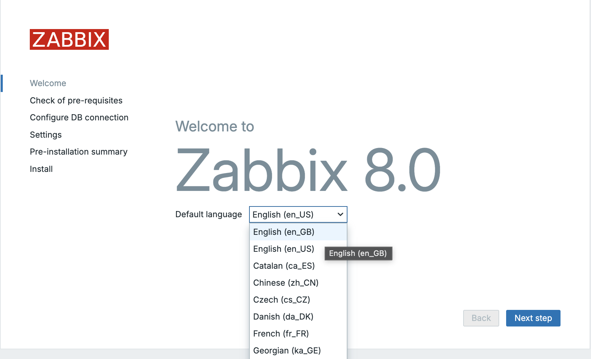
!.5 Zabbix welcome language choice
What if we want to install Chinese as language or another language from the list? Run the next command to get a list of all locales available for your OS.
Install language packs
Red Hat
SUSE
Ubuntu
Users on Ubuntu will probably notice following error `"Locale for language "en_US" is not found on the web server."``
This can be solved easy with the following commands.
This will give you a list like:
Example output
Red Hat
Installed Packages
glibc-langpack-en.x86_64
Available Packages
glibc-langpack-aa.x86_64
---
glibc-langpack-zu.x86_64
SUSE
Ubuntu
language-pack-kab - translation updates for language Kabyle
language-pack-kab-base - translations for language Kabyle
language-pack-kn - translation updates for language Kannada
language-pack-kn-base - translations for language Kannada
---
language-pack-ko - translation updates for language Korean
language-pack-ko-base - translations for language Korean
language-pack-ku - translation updates for language Kurdish
language-pack-ku-base - translations for language Kurdish
language-pack-lt - translation updates for language Lithuanian
Let's search for our Chinese locale to see if it is available. As you can see the code starts with zh.
search for language pack
Red Hat
SUSE
Ubuntu
On RedHat and Ubuntu, the command outputs two lines; however, given the identified language code,
'zh_CN,' only the first package requires installation.
on SUSE either only locales C.UTF-8 and en_US.UTF-8 are install or all
available locales are installed, depending on whether the package glibc-locale
is installed or not.
Install the locale package
Red Hat
SUSE
Ubuntu
When we return now to our front-end we are able to select the Chinese language, after a reload of our browser.
1.6 Zabbix select language
Note
If your preferred language is not available in the Zabbix front-end, don't worry, it simply means that the translation is either incomplete or not yet available. Zabbix is an open-source project that relies on community contributions for translations, so you can help improve it by contributing your own translations.
Visit the translation page at https://translate.zabbix.com/ to assist with the translation efforts. Once your translation is complete and reviewed, it will be included in the next minor patch version of Zabbix. Your contributions help make Zabbix more accessible and improve the overall user experience for everyone.
When you're satisfied with the available translations, click Next. You will
then be taken to a screen to verify that all prerequisites are satisfied. If any
prerequisites are not fulfilled, address those issues first. However, if everything
is in order, you should be able to proceed by clicking Next.

1.7 Zabbix pre-requisites
On the next page, you'll configure the database connection parameters:
Select the Database Type: Choose either MySQL or PostgreSQL depending on your setup.Enter the Database Host: Provide the IP address or DNS name of your database server. Use port 3306 for MariaDB/MySQL or 5432 for PostgreSQL.Enter the Database Name: Specify the name of your database. In our case, it is zabbix. If you are using PostgreSQL, you will also need to provide the schema name, which is zabbix_server in our case.Enther the Database Schema: Only for PostgreSQL users, enter the schema name created for Zabbix server, which iszabbix_serverin our case.Enter the Database User: Input the database user created for the web front-end, remember in our basic installation guide we created 2 userszabbix-webandzabbix-srv. One for the frontend and the other one for our zabbix server so here we will use the userzabbix-web. Enter the corresponding password for this user.
Ensure that the Database TLS encryption option is not selected, and then click
Next step to proceed.
1.8 Zabbix connections
You're almost finished with the setup! The final steps involve:
Assigning an Instance Name: Choose a descriptive name for your Zabbix instance.Selecting the Timezone: Choose the timezone that matches your location or your preferred time zone for the Zabbix interface.Setting the Default Time Format: Select the default time format you prefer to use.- Encrypt connections from Web interface: I marked this box but you should not. This box is to encrypt communications between Zabbix frontend and your browser. We will cover this later. Once these settings are configured, you can complete the setup and proceed with any final configuration steps as needed.
Note
It's a good practice to set your Zabbix server to the UTC timezone, especially when managing systems across multiple timezones. Using UTC helps ensure consistency in time-sensitive actions and events, as the server’s timezone is often used for calculating and displaying time-related information.
1.9 Zabbix summary
After clicking Next step again, you'll be taken to a page confirming that the
configuration was successful. Click Finish to complete the setup process.
1.10 Zabbix install
We are now ready to login :

1.11 Zabbix login
- Login : Admin
- Password : zabbix
This concludes our topic on setting up the Zabbix server. If you're interested in securing your front-end, I recommend checking out the topic Securing Zabbix for additional guidance and best practices.
Tip
If you are not able to save your configuration at the end, make sure you
executed the SELinux related instructions or have SELinux disabled.
Also check if the /etc/zabbix/web directory is writable by the webservice
user (usually wwwrun or www)
Conclusion
With the installation and configuration of the Zabbix frontend now complete, you have successfully set up the user interface for your Zabbix monitoring system. This process included installing the necessary packages, configuring a web server and PHP engine, setting up the database connection, and customizing the frontend settings.
At this stage, your Zabbix instance is operational, providing the foundation for advanced monitoring and alerting. In the upcoming chapters, we will delve into fine-tuning Zabbix, optimizing performance, and exploring key features that transform it into a powerful observability platform.
Now that your Zabbix environment is up and running, let’s take it to the next level.
Questions
Useful URLs
HA Setup
In this section, we will set up Zabbix in a High Availability (HA) configuration. This native feature, introduced in Zabbix 6, is a crucial enhancement that ensures continued monitoring even if a Zabbix server fails. With HA, when one Zabbix server goes down, another can take over seamlessly.
For this guide, we will use two Zabbix servers and one database, but the setup allows for adding more zabbix servers if necessary.
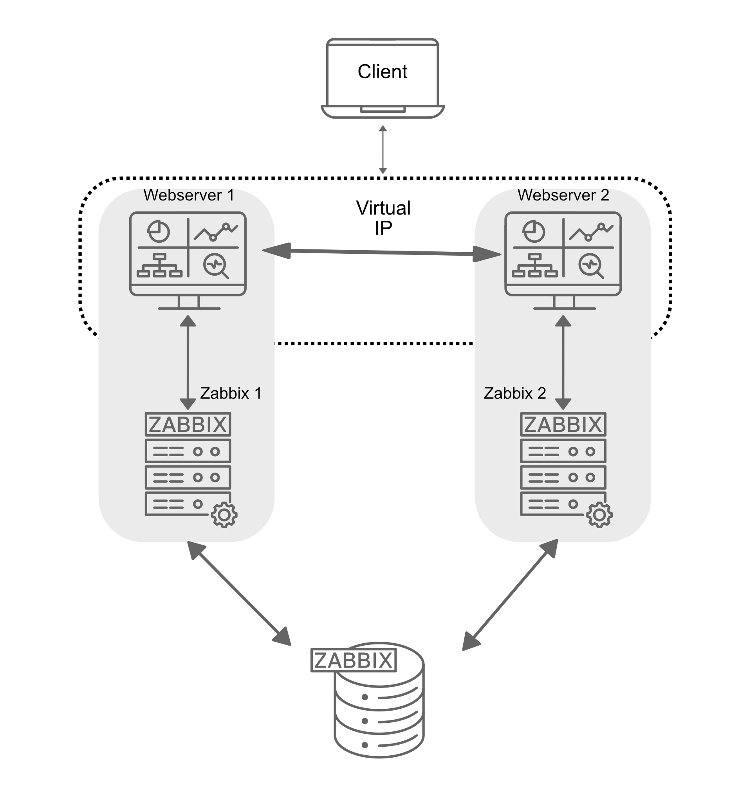
1.1 HA Setup
It's important to note that Zabbix HA setup is straightforward, providing redundancy without complex features like load balancing. Only one node will be an active node, all other nodes will be on standby. All standby Zabbix servers in the HA cluster will monitor the active node through heartbeats using the shared database. It does not require any additional clustering software or even firewall ports for the Zabbix server itself. However, for the frontend, we will use Keepalived to provide a Virtual IP (VIP) for failover purposes.
Just as in our basic configuration, we will document key details for the servers in this HA setup. Below is the list of servers and some place to add their respective IP addresses for your convenience :
| Server | IP Address |
|---|---|
| Zabbix Server 1 | |
| Zabbix Server 2 | |
| Database | |
| Virtual IP |
Note
Our database (DB) in this setup is not configured for HA. Since it's not a Zabbix component, you will need to implement your own solution for database HA, such as a HA SAN or a database cluster setup. A DB cluster configuration is out of the scope of this guide and unrelated to Zabbix, so it will not be covered here.
Installing the Database
Refer to the Zabbix components: Database chapter for detailed instructions on setting up the database. That chapter provides step-by-step guidance on installing either a PostgreSQL or MariaDB database on a dedicated node running Ubuntu, SUSE or Rocky Linux. The same installation steps apply when configuring the database for this setup.
Installing the Zabbix cluster
Setting up a Zabbix cluster involves configuring multiple Zabbix servers to work together, providing high availability. While the process is similar to setting up a single Zabbix server, there are additional configuration steps required to enable HA (High Availability).
Start by preparing the systems for- and installing Zabbix server on all systems by following the steps in the Preparing the server for Zabbix and Installing Zabbix server sections of the Zabbix components chapter.
Do note that:
- you need to skip the database population step on all but the first Zabbix server as the database is shared between all Zabbix servers.
- you need to skip the enabling and starting of the zabbix-server service on all servers as we will start it later after the HA configuration is done.
- you make sure that all Zabbix servers can connect to the database server.
For example, if you are using PostgreSQL, ensure that the
pg_hba.conffile is configured to allow connections from all Zabbix servers. - all Zabbix servers should use the same database name, user, and password to connect to the database.
- all Zabbix servers should be of the same major version.
When all Zabbix servers are installed and configured to access the database, we can proceed with the HA configuration.
Configuring Zabbix Server 1
Add a new configuration file for the HA setup on the first Zabbix server:
Add High Availability Zabbix server configuration
Insert the following line into the configuration file to enable HA mode.
Specify the frontend node address for failover scenarios:
Warning
The NodeAddress must match the IP or FQDN name of the Zabbix server node.
Without this parameter the Zabbix front-end is unable to connect to the active
node. The result will be that the frontend is unable to display the status
the queue and other information.
Configuring Zabbix Server 2
Repeat the configuration steps for the second Zabbix server. Adjust the HANodeName
and NodeAddress as necessary for this server.
Zabbix server 2 HA configuration high-availability.conf
You can add more servers by repeating the same steps, ensuring each server has a unique
HANodeName and the correct NodeAddress set.
Starting Zabbix Server
After configuring both servers, enable and start the zabbix-server service on each:
Verifying the Configuration
Check the log files on both servers to ensure they have started correctly and are operating in their respective HA modes.
On the first server:
In the system logs, you should observe the following entries, indicating the initialization of the High Availability (HA) manager:
HA log messages on active node
These log messages confirm that the HA manager process has started and has assumed the active role. This means that the Zabbix instance is now the primary node in the HA cluster, handling all monitoring operations. If a failover event occurs, another standby node will take over based on the configured HA strategy.
Running the same command on the second server (and any additional nodes):
HA log messages on standby node
These messages confirm that the HA manager process was invoked and successfully launched in standby mode. This suggests that the node is operational but not currently acting as the active HA instance, awaiting further state transitions based on the configured HA strategy.
At this stage, your Zabbix cluster is successfully configured for High Availability (HA). The system logs confirm that the HA manager has been initialized and is running in standby mode, indicating that failover mechanisms are in place. This setup ensures uninterrupted monitoring, even in the event of a server failure, by allowing automatic role transitions based on the HA configuration.
Installing the frontend
Before proceeding with the installation and configuration of the web server, it is essential to install some sort of clustering software or use a load-balancer in front of the Zabbix frontends to be able to have a shared Virtual IP (VIP).
Note
There are several options available for clustering software and load-balancers, including Pacemaker, Corosync, HAProxy, F5 Big-Ip, Citrix NetScaler, and various cloud load balancers. Each of these solutions offers a range of features and capabilities beyond just providing a VIP for failover purposes. But for the purpose of this guide, we will focus on a minimalistic approach to achieve high availability for the Zabbix frontend using Keepalived.
Keepalived is like a helper that makes sure one computer takes over if another one stops working. It gives them a shared magic IP address so users don't notice when a server fails. If the main one breaks, the backup jumps in right away by taking over the IP.
Keepalived is a minimal type of clustering software that enables the use of a (VIP) for frontend services, ensuring seamless failover and service continuity.
High Availability on SUSE Linux Enterprise Server (SLES)
On SUSE Linux Enterprise Server (SLES), Keepalived is not included in the default subscription hence unavailable in the default repositories.
To be able to install and use Keepalived on SLES in a supported way, you will need to obtain the additional 'SUSE Linux Enterprise High Availability Extension' subscription (SLE HA). This subscription provides access to the necessary packages and updates required for Keepalived and other high availability components. After obtaining the subscription, you can enable the appropriate repositories and proceed with the installation of Keepalived as outlined in this guide:
WhereADDITIONAL_REGCODE is the registration code provided with your
'SUSE Linux Enterprise High Availability Extension' subscription.
Setting up keepalived
On all Servers that will host the Zabbix fronted we have to install keepalived. As mentioned before, this can be done on separate servers to split up the server and frontend roles, but in this guide we will install keepalived on both Zabbix servers to ensure high availability of both the frontend and the server.
Install keepalived
Red Hat
SUSE
Ubuntu
Next, we need to modify the Keepalived configuration on all servers. While the configurations will be similar, each server requires slight adjustments. We will begin with Server 1. To edit the Keepalived configuration file, use the following command:
If the file contains any existing content, it should be cleared and replaced with the following lines:
Warning
Replace enp0s1 with the interface name of your machine and replace the password
with something secure. For the virtual_ipaddress use a free IP from your network.
This will be used as our VIP.
We can now do the same modification on our second or any subsequent Zabbix server.
Delete again everything in the /etc/keepalived/keepalived.conf file like we did
before and replace it with following lines:
Just as with our 1st Zabbix server, replace enp0s1 with the interface name of
your machine and replace the password with your password and fill in the
virtual_ipaddress as done before.
Make sure that the firewall allows Keepalived traffic on all servers. The VRRP
protocol is different than the standard IP protocol and uses multicast address
224.0.0.18. Therefore, we need to explicitly allow this traffic through the
firewall. Perform the following commands on all servers:
Allow keepalived traffic through the firewall
Red Hat / SUSE
Ubuntu
This ends the configuration of Keepalived. We can now continue adapting the frontend.
Install and configure the frontend
Install the Zabbix frontend on all Zabbix servers, part of the cluster by following the steps outlined in the Installing the frontend section.
Warning
Ubuntu users need to use the VIP in the setup of Nginx, together with the local IP in the listen directive of the config.
Note
Don't forget to configure both front-ends. Also this is a new setup. Keep in
mind that with an existing setup we need to comment out the lines $ZBX_SERVER
and $ZBX_SERVER_PORT in /etc/zabbix/web/zabbix.conf.php. Our frontend
will check what node is active by reading the node table in the database.
You can verify which node is active by querying the ha_node table in the
Zabbix database. This table contains information about all nodes in the HA
cluster, including their status. To check the status of the nodes, you can run
the following SQL query:
Check the ha_node table in a PostgreSQL database
zabbix=> select * from ha_node;
ha_nodeid | name | address | port | lastaccess | status | ha_sessionid
---------------------------+---------+-----------------+-------+------------+--------+---------------------------
cm8agwr2b0001h6kzzsv19ng6 | zabbix1 | xxx.xxx.xxx.xxx | 10051 | 1742133911 | 0 | cm8apvb0c0000jkkzx1ojuhst
cm8agyv830001ell0m2nq5o6n | zabbix2 | localhost | 10051 | 1742133911 | 3 | cm8ap7b8u0000jil0845p0w51
(2 rows)
In this instance, the node zabbix2 is identified as the active node, as indicated
by its status value of 3, which designates an active state. The possible status
values are as follows:
0– Multiple nodes can remain in standby mode.1– A previously detected node has been shut down.2– A node was previously detected but became unavailable without a proper shutdown.3– The node is currently active.
This classification allows for effective monitoring and state management within the cluster.
Once the frontend is installed on all servers, we need to start and enable the Keepalived service to ensure it starts automatically on boot and begins managing the VIP:
Verify the correct working
To verify that the setup is functioning correctly, access your Zabbix server using the Virtual IP (VIP). Navigate to Reports ‚Üí System Information in the menu. At the bottom of the page, you should see a list of servers, with at least one marked as active. The number of servers displayed will depend on the total configured in your HA setup.

1.2 verify HA
Shut down or reboot the active frontend server and observe that the Zabbix frontend remains accessible. Upon reloading the page, you will notice that the other frontend server has taken over as the active instance, ensuring an almost seamless failover and high availability.

1.3 verify HA
In addition to monitoring the status of HA nodes, Zabbix provides several runtime commands that allow administrators to manage failover settings and remove inactive nodes dynamically.
One such command is:
This command adjusts the failover delay, which defines how long Zabbix waits before promoting a standby node to active status. The delay can be set within a range of 10 seconds to 15 minutes.
To remove a node that is either stopped or unreachable, the following runtime command must be used:
Executing this command removes the node from the HA cluster. Upon successful removal, the output confirms the action:
Removal of a node
If the removed node becomes available again, it can be added back automatically
when it reconnects to the cluster. These runtime commands provide flexibility for
managing high availability in Zabbix without requiring a full restart of the
zabbix_server process.
Conclusion
In this chapter, we have successfully set up a high-availability (HA) Zabbix environment by configuring both the Zabbix server and frontend for redundancy. We first established HA for the Zabbix server, ensuring that monitoring services remain available even in the event of a failure. Next, we focused on the frontend, implementing a Virtual IP (VIP) with Keepalived to provide seamless failover and continuous accessibility.
Additionally, we configured the firewall to allow Keepalived traffic and ensured that the service starts automatically after a reboot. With this setup, the Zabbix frontend can dynamically switch between servers, minimizing downtime and improving reliability.
While database HA is an important consideration, it falls outside the scope of this setup. However, this foundation provides a robust starting point for building a resilient monitoring infrastructure that can be further enhanced as needed.
Questions
- What is Zabbix High Availability (HA), and why is it important?
- How does Zabbix determine which node is active in an HA setup?
- Can multiple Zabbix nodes be active simultaneously in an HA cluster? Why or why not?
- What configuration file(s) are required to enable HA in Zabbix?
Useful URLs
Chapter 02 : Zabbix Frontend
Getting started with the Zabbix installation
We begin this chapter with a deep dive into the Zabbix frontend, the central hub where all monitoring and configuration tasks come together. Alongside the basic introduction to navigating the frontend, this chapter also covers user and group setup, focusing on creating a secure and efficient user management system.
We'll walk through setting up internal authentication with best practices for security, including dual-factor authentication. For those needing advanced integration, we'll explore options like SAML, LDAP, and other external authentication methods.
This chapter strikes a balance between a straightforward overview “this is the frontend” and a more in depth look at the advanced choices you can make to enhance your system's security and manageability. Whether you're just getting started or looking to implement robust security measures, there's something here for everyone.
By the end, you'll be well equipped to navigate the Zabbix frontend with confidence and set up a secure, scalable user management system tailored to your organization's needs.
Frontend explained
This chapter is going to cover the basics we need to know when it comes to the Zabbix user interface and the thing we need to know before we can start to fully dive into our monitoring tool. We will see how the user interface works how to add a host, groups users, items ... so that we have a good understanding of the basics. This is something that is sometimes missed and can lead to frustrations not knowing why things don't work like we had expected them to work. So even if you are an advanced user it may be useful to have a look into this chapter.
Let's get started
Overview of the interface
With Zabbix 7 the user interface after logging in is a bit changed. Our menu on the left side of the screen has has a small overhaul. Let's dive into it. When we login into our Zabbix setup the first time with our Admin user we see a page
like this where we have our main window in green
our main menu marked in
red and our links marked in yellow.

2.1 Overview
The main menu can be hidden by collapsing it completely or to reduce it to a set of small icons. When we click on the button with the 2 arrows to the left:

2.2 Collapse
You will see that the menu collapses to a set of small icons. Pressing ">>" will
bring the main menu back to it's original state.
When you click on the icon that looks like a box with an arrow sticking out, next
to the "<<" button will hide the main menu completely.
2.3 Hide
To bring back our main menu is rather easy, we just look for the button on the
left with three horizontal lines and click on it. This will show the main menu
but it won't stay. When we click on the box with the arrow now pointing to the bottom
right it will keep the main menu back in it's position.
Yet another way to make the screen bigger that is quite useful for monitors in NOK
teams for example is the kiosk mode button. This one however is located on the
left side of your screen and looks like 4 arrows pointing to every corner of the
screen. Pressing this button will remove all the menus and leave only the main window
to focus on.

2.4 Expand
When we want to leave the kiosk mode, the button will be changed to 2 arrows pointing to the inside of the screen. Pressing this button will revert us back to the original state.

2.5 Shrink
Tip
We can also enter and exit kiosk mode by making use of parameters in our Zabbix
url: /zabbix.php?action=dashboard.view&kiosk=1 - activate kiosk mode or
/zabbix.php?action=dashboard.view&kiosk=0 - activate normal mode.
Note
There are many other page parameters we can use. A full list can be found at https://www.zabbix.com/documentation/7.4/en/manual/web_interface/page_parameters Zabbix also has a global search menu that we can use to find hosts, host groups and templates.
If we type in the search box the word server you will see that we get an overview
of all templates, host groups and hosts with the name server in it. That's
why this is called the global search box.

2.6 Global search
This is our result after we looked for the word server. If you have a standard
Zabbix setup your page should look more or less the same.

2.7 Global search result
Main menu
We shall now briefly examine the constituent sections of the primary application
menu. The main menu, situated on the left hand interface, comprises a total
of nine distinct sections:
| Menu Name | Details |
|---|---|
| Dashboards | Contains an overview of all the dashboards we have access to. |
| Monitoring | Shows us the hosts, problems, latest data, maps, ... |
| Services | An overview of all the Services and SLA settings. |
| Inventory | An overview of our collected inventory data. |
| Reports | Shows us the system information, scheduled reports, audit logs, action logs, etc . |
| Data collection | Contains all things related to collecting data like hosts, templates, maintenance, discovery, ... |
| Alert | The configuration of our media types, scripts and actions |
| Users | User configuration like user roles, user groups, authentication, API tokes, ... |
| Administration | The administration part containing all global settings, housekeeper, proxies, queue, ... |
Links menu
Immediately subjacent to the primary application menu on the left-hand interface
resides the Links menu. This module furnishes a collection of pertinent hyperlinks
for user access.
| Menu name | Details |
|---|---|
| Support | This brings us to the technical support page that you can buy from Zabbix. Remember that your local partner is also able to sell these contracts and can help you in your own language. Your local distributors |
| Integrations | The official zabbix integration page |
| Help | The link to the documentation of your Zabbix version |
| User settings | The user profile settings. |
| Sign out | Log out of the current session. |
A few interactive elements remains to be addressed on the right-hand portion of the display.
2.8 Edit dashboard
The Edit dashboard button facilitates modification of the user's dashboard configuration,
a feature that will be elaborated upon in subsequent sections. Located on the extreme
left margin is a query mark icon ('?'), activation of which redirects the user to
the Zabbix documentation portal providing comprehensive details regarding
dashboard functionalities. Conversely, the control situated on the right margin,
represented by three horizontal lines, provides access to operations such as sharing,
renaming, and deletion of user defined dashboards.
System information
The dashboard also features a dedicated panel labeled System Information. This
widget provides a real-time overview of the operational status of the Zabbix deployment.
We will now examine the individual data points presented within this panel, as their
interpretation is crucial for system comprehension.

2.9 System Information
| Parameter | Value | Details |
|---|---|---|
| Zabbix server is running | The status of our zabbix server if it is running yes or no and if it is running on our localhost or another IP and on what port the zabbix server is listening. If no trapper is listening the rest of the information can not be displayed | IP and port of the Zabbix server |
| Zabbix server version | This shows us the version of the Zabbix server so the version you see at the bottom of your screen is the one from the Zabbix frontend and can be different but should be in the same major version. |
Version Number |
| Zabbix frontend version | This is the version of the frontend and should match with what you see at the bottom of your screen. | Version Number |
| Number of hosts (enabled/disabled) | The total number of hosts configured on our system | How many of those are enabled and disabled |
| Number of templates | The number of templates installed on our Zabbix server. | |
| Number of items (enabled/disabled/not supported) | This line shows us the number of items we have configured in total in this case 99 | 90 are enabled and 0 are disabled but 9 of them are unsupported. This last number is important as those are items not working. We will look into this later why it happens and how to fix it. For now remember that a high number of unsupported items is not a good idea. |
| Number of triggers (Enabled/disabled[problem/ok]) | The number of triggers configured | Number of enabled and disabled triggers. Just as with items we also see if there are triggers that are in a problem state or ok state. A trigger in a problem state is a non working trigger something we need to monitor and fix. We will cover this also later. |
| Number of users (online) | Here we see the number of users that are configured on our system | The number of users currently online. |
| Required server performance, nvps | The number of new values per second that Zabbix will process per second. | This is just an estimated number as some values we get are unknown so the real value is probably higher. So we can have some indication about how many IOPS we need and how busy our database is. A better indication is probably the internal item zabbix[wcache,values,all] |
| Global scripts on Zabbix server | It notifies us that the Global scripts are enabled or disabled in the server config. | Global scripts can be used in our frontend, actions, ... but need to be activated first |
| High availability cluster | It will show us if Zabbix HA cluster is disabled or not | Failover delay once HA is activated |
Enabling Global script execution
Global script execution on Zabbix server can be enabled by setting
EnableGlobalScripts=1 in the Zabbix server configuration at /etc/zabbix/zabbix_server.d/.
For new installations, since Zabbix 7.0, global script execution is
disabled by default.
Tip
System information may display some additional warnings like:
- when your database doesn't have the correct character set or collation UTF-8.
- when the database you used is lower or higher then the recommended version or
- when there are misconfigurations on housekeeper or TimescaleDB.
Another warning you can see is about database history tables that aren't upgraded or primary keys that have not been set. This is possible if you are coming from an older version before Zabbix 6 and never did the upgrade.
The main menu explained
It's important to know that we have seen so far our dashboard with the Admin user
and that this user is a Zabbix Super Admin user. This has a serious impact on
what we can see and do in Zabbix as this user has no restrictions. Zabbix works
with 3 different levels of users we have the regular users, Zabbix Admin and
Zabbix Super Admin users. Let's have a deeper look at the differences :

2.10 Main menu sections
- A
Zabbix Userwill only see the red part of ourmain menuand will only be able to see our collected data. - A
Zabbix Adminwill see the red part and the yellow part of themain menuand is able to change our configuration. - A
Zabbix Super Adminwill see the completemain menuand so is able to change the configuration and all the global settings.

2.11 Monitoring menu
- Problems: This page will give us an overview of all the problems. With filter we can look at recent problems past problems and problems that are active now. There are many more filters tor drill down more.
- Hosts: This will give us a quick overview page with what's happening on our hosts and allows us to quickly go to the latest data, graphs and dashboards.
- Latest data: This page I probably use the most, it shows us all the information collected from all our hosts.
- Maps: The location where we can create map that are an overview of our IT infrastructure very useful to get a high level overview of the network.
- Discovery: When we run a network discovery this is the place where we can find the results.

2.12 Services menu
- Services: This page will give us a high level overview of all services configured in Zabbix.
- SLA: An overview of all the SLAs configured in Zabbix.
- SLA Report: Here we can watch all SLA reports based on our filters.

2.13 Inventory menu
- Overview: A place where we can watch all our inventory data that we have retrieved from our hosts.
- Hosts: Here we can filter by host and watch all inventory data for the hosts we have selected.

2.14 Inventory menu
- System information: System information is a summary of key Zabbix server and system data.
- Scheduled reports: The place where we can schedule our reports, a
pdfof the dashboard that will be sent at a specified time and date. - Availability report: A nice overview where we can see what trigger has
been in
ok/nokstate for how much % of the time - Top 100 triggers: Another page I visit a lot here we have our top list
with triggers that have been in a
NOKstate. - Audit log: An overview of the user activity that happened on our system. Useful if we want to know who did what and when.
- Action log: A detailed overview of our actions can be found here. What mail was sent to who and when ...?
- Notifications: A quick overview of the number of notifications sent to each user.

2.15 Data collection
- Template groups: A place to logical group all templates together in different groups. Before it was mixed together with hosts in host groups.
- Host groups: A logical collection of different hosts put together. Host groups are used for our permissions.
- Templates: A set off entities like items and triggers can be grouped together on a template, A template can be applied to one or more hosts.
- Hosts: What we need in Zabbix to monitor A host, application, service ...
- Maintenance: The place to configure our maintenance windows. A maintenance can be planned in this location.
- Event correlation: When we have multiple events that fires triggers related we can configure correlations in this place.
- Discovery: Sometimes we like to use Zabbix to discover devices, services,... on our network. This can be done here.

2.16 Alerts menu
- Actions: This menu allows us to configure actions based on
eventsin Zabbix. We can create such actions for triggers, services, discovery, autoregistration and internal events. - Media types: Zabbix can sent messages, emails etc ... based on the actions we have configured. Those media types need templates and need to be activated.
- Scripts: In Zabbix it's possible to make use of scripts in our actions and frontend. Those actions need to be created here first and configured.

2.17 Users menu
- User groups: The
User groupsmenu section enables the creation and management of user groupings for streamlined access and permission control. - User roles: The
User rolesmenu section defines sets of permissions that can be assigned to individual users, limiting their allowed actions based on the user type they have within the system. - Users: The
Usersmenu section provides the interface for managing individual user accounts, including creation and modification settings. - API tokens: The
API tokensmenu section manages authentication credentials specifically designed for programmatic access to the system's Application Programming Interface (API), enabling secure automation and integration with external applications. - Authentication: The
Authenticationmenu section configures the methods and settings used to verify user identities and control access to the system.

2.18 Administration menu
- General: The
Generalmenu section within administration allows configuration of core system-wide settings and parameters. - Audit log: The
Audit logmenu section provides a chronological record of system activities and user actions for security monitoring and troubleshooting. - Housekeeping: The
Housekeepingmenu section configures automated maintenance tasks for managing historical data and system performance. - Proxies: The
Proxiesmenu section manages the configuration and monitoring of proxy servers used for communication with managed hosts in distributed environments. - Macros: The
Macrosmenu section allows the definition and management of global variables for flexible system configuration. - Queue: The
Queuemenu section provides real-time insight into the processing status of internal system tasks and data handling.
Info
More information can be found in the online Zabbix documentation here
Tip
You will see that Zabbix is using modal forms in the frontend on many places.
The problem is that they are not movable. This
module created by one of the Zabbix developers UI Twix will solve this problem
for you.
Warning
At time of writing there is no Dashboard import/export functionality in zabbix. So when upgrading dashboards it needs to be created by hand. It was on the roadmap for 7 but didn't made it so feel free to vote https://support.zabbix.com/browse/ZBXNEXT-5419
Conclusion
The Zabbix frontend serves as the central command center for monitoring, configuration, and system awareness. In this chapter, you explored how to navigate its interface from dashboards and the customizable main menu to powerful tools like system information and global search. You learned how each menu section (Monitoring, Data Collection, Alerts, Users, Administration, and more) aligns with distinct functions, and how kiosk mode and layout controls help optimize visibility during daily operations.
Additionally, the system information widget stands out as a real time diagnostic snapshot, revealing critical metrics such as server status, number of hosts, templates, items, triggers, and user activity all of which aid rapid troubleshooting and performance assessment.
By mastering these frontend components, you're now better equipped to confidently navigate Zabbix, manage user access, interpret monitoring data, and maintain your environment more effectively. This foundational knowledge lays the groundwork for deeper exploration into host configuration, authentication mechanisms, and advanced monitoring workflows in the chapters that follow.
Questions
-
Which frontend section (Monitoring, Data Collection, Alerts, Users, or Administration) do you think you'll use most often in your daily work, and why?
-
How can kiosk mode be useful in a real-world monitoring environment, and what types of dashboards would you display with it?
-
What insights can the system information widget provide during troubleshooting, and how might it help identify issues with server performance?
-
Why is it important to understand the difference between data displayed in “Monitoring” and configuration options found in “Data Collection”?
-
If you were onboarding a new team member, which parts of the frontend would you show them first, and why?
Useful URLs
- https://www.zabbix.com/documentation/current/en/manual/web_interface/frontend_sections/dashboards
- https://blog.zabbix.com/handy-tips-6-organize-your-dashboards-and-create-slideshows-with-dashboard-pages/17511/
- https://blog.zabbix.com/interactive-dashboard-creation-for-large-organizations-and-msps/30132/
Host Groups
In Zabbix, host groups serve as a foundational mechanism for organizing monitored entities. They allow you to logically categorize hosts for easier management, simplified permissions, and streamlined configuration, especially useful in larger environments.
Common examples include:
- Grouping all Linux servers together.
- Separating database servers (e.g., PostgreSQL, MySQL).
- Organizing hosts by team, location, or function.
Host groups are not only for structuring your monitored hosts, they also play an important role in assigning templates, setting up user permissions, and filtering hosts in dashboards or maps.
Accessing Host Groups
You can manage host groups by navigating to:
Menu ‚Üí Data collection ‚Üí Host groups
2.19 Host Groups menu
In this menu under Data collection, you'll notice two distinct sections:
- Host groups: Groups that contain hosts.
- Template groups: A newer addition, specifically created for organizing templates.
Migrating from an older Zabbix version
In previous versions, templates and hosts were often placed in the same groups. This led to confusion, particularly for new users, as templates don't technically belong to host groups in Zabbix. As of recent versions (starting from Zabbix 6.x), template groups are separated out for better clarity.
Understanding the Host Groups Overview
When you open the Host groups menu, you'll see a list of predefined groups. Each group entry includes:
- Group name (e.g.,
Linux servers) - Number of hosts in the group (displayed as a number in front)
- Host names currently assigned to that group
Clicking on a host name will take you directly to the host's configuration screen, providing a convenient way to manage settings without navigating through multiple menus.
Creating a Host Group
There are two main ways to create host groups:
1. During Host Creation
When adding a new host:
- Go to Data collection ‚Üí Hosts.
- Click Create host (top right).
- In the Host groups field, select an existing group or type a new name to create one on the fly.
2. From the Host Groups Page
- Navigate to Data collection ‚Üí Host groups.
- Click Create host group in the top right.
- Enter a Group name and click Add.
2.20 Create new host groups
Nested Host Groups
Zabbix supports nested host groups using forward slashes (/) in group names.
This allows you to represent hierarchies such as:
Europe/BelgiumEurope/FranceDatacenters/US/Chicago
These nested group names are just names Zabbix does not require that parent
folders (e.g., Europe) physically exist as separate groups unless you explicitly
create them.
Warning
- You cannot escape the
/character. - Group names cannot contain leading/trailing slashes or multiple consecutive slashes.
/is reserved for nesting and cannot be used in regular group names.
Applying Permissions and Tag Filters to Nested Groups
Once you've created nested groups, the Host group overview screen provides an option to apply permissions and tag filters to all subgroups:
- Click on a parent group (e.g.,
Europe). - A box appears: Apply permissions and tag filters to all subgroups.
- Enabling this will cascade any rights assigned to the parent group down to its subgroups.
2.21 subgroup permissions
This is especially useful for user groups. For example:
- If Brian is in a user group with access to
Europe/Belgium, enabling this option allows Brian to see all hosts in subgroups likeEurope/Belgium/GentorEurope/Belgium/Brussels, including their tags and data.
Best Practices
- Use a consistent naming convention:
Location/Function,Team/Environment, etc. - Assign hosts to multiple groups if they logically belong in more than one.
- Avoid overly deep nesting keep it readable and manageable.
- Regularly review group usage and clean up unused or outdated groups.
Tip
You can even try adding emojis to group names for a fun visual touch! üéâ
For example: üåç Europe/üáßüá™ Belgium or üì¶ Containers/Docker.
Conclusion
Host groups are a key organizational tool in Zabbix. With the introduction of template groups, clearer group separation, and support for nested structures, modern versions of Zabbix offer great flexibility for tailoring your monitoring setup to your organization's structure and workflows.
Questions
- What are host groups used for in Zabbix?
- Can you assign a host to more than one group?
- How are nested groups created in Zabbix?
- What happens when you apply permissions to subgroups?
- Why are slashes (/) special in host group names?
- Can a parent group exist only logically (i.e., not created in Zabbix)?
Useful URLs
User Groups
In any enterprise monitoring platform, establishing role-based access control (RBAC) is critical for maintaining both security and clarity of operational responsibility. For Zabbix, this control is built upon the fundamental concept of User Groups.
In Zabbix 8.0, user groups serve as the primary mechanism for assigning permissions and structuring access to the monitored data and configuration entities. This chapter details the function of user groups, guides you through their configuration, and outlines best practices for applying them in a robust, real world deployment.
The Role of a User Group
A User Group in Zabbix is a logical collection of individual user accounts. Rather than managing permissions for hundreds of users individually, Zabbix requires that users be assigned to one or more groups. Access rights, such as the ability to view host groups, configure templates, or see specific problem tags are then granted at the group level.
This group centric architecture provides several major benefits:
- Simplified Management: Access rights are managed by role (e.g., "Network Engineers," "Database Administrators") instead of by individual user.
- Consistency: Ensures that all users within the same role possess a consistent, standardized set of permissions.
- Segregation of Duties: Enables clear separation between viewing (read-only) and configuration (read-write) access.
Technical Definition: User groups allow grouping users for both organizational purposes and for assigning permissions to data. Permissions to viewing and configuring data of host groups and template groups are assigned to user groups, not individual users. A user can belong to any number of groups.
Configuring a User Group
In Zabbix, user groups are defined and maintained solely via the web frontend. The procedure has remained largely unchanged between version 8.0 and previous generations, ensuring a familiar configuration experience for administrators.
Group Creation and General Attributes
- Navigate to Administration ‚Üí User groups.
- Click Create user group (or select an existing group to modify).
- The configuration form is divided into four critical tabs: User group, Template permissions, Host permissions, and Problem tag filter.
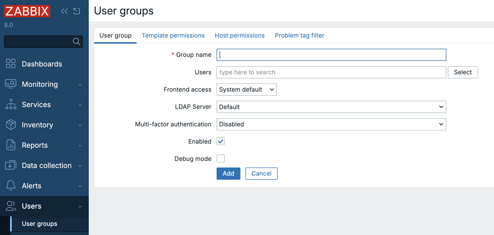
2.20 user group menu
The User group Tab
This initial tab defines the group's general properties and its membership:
- Group name: A unique, descriptive identifier (e.g.,
NOC-RO,System-Admins-RW). - Users: Add existing users to this group. A user can be a member of multiple groups.
- Frontend access: Controls the authentication method for group members. Options
include
System default,Internal,LDAP, orDisabled(useful for API-only accounts or for temporarily locking frontend access for a role). - LDAP server: If
LDAPaccess is chosen, select the specific LDAP server configuration to be used for members of this group. - Multi-factor authentication (MFA): Select the method to be enforced for the group. If a user is a member of multiple groups, the most secure MFA setting will typically apply.
- Enabled: The master switch to activate or deactivate the group and its members.
- Debug mode: A powerful, optional setting that enables detailed debug logging for all group members in the Zabbix frontend.
The Debug User Group
Zabbix includes a dedicated Debug user group out-of-the-box. Instead of activating
the debug option for an existing production group, it is cleaner practice to
simply add the required user to the pre-existing Debug group.
Permission Tabs: Host Groups and Template Groups
Permissions are configured by assigning access levels to Host Groups and Template Groups. These entities act as containers, meaning the permissions assigned to the group apply to all nested groups and all entities within them.
Template Permissions Tab
This section controls access to the configuration elements of templates (items, triggers, graphs, etc.) via their Template Groups.
For each assigned Template Group, one of the following permissions must be selected:
- Read-only: Users can view the template configuration and see data derived from it, but they cannot modify or link the template.
- Read-write: Users can view, modify, and link/unlink the template and its entities (items, triggers, etc.).
- Deny: Explicitly blocks all access.
Host Permissions Tab
This tab works identically to the Template Permissions tab but applies the access levels to Host Groups and the hosts contained within them.
Problem Tag Filters: Granular Alert Access
The final configuration tab, Problem tag filter, allows for fine-grained control over which problems (alerts) a user group can see.
This is invaluable for enterprise environments where users should only be alerted to issues relevant to their domain. For instance, a Database Administrator should not be distracted by network switch problems.
Filters are applied to specific host groups and can be configured to display:
- All tags for the specified hosts.
- Only problems matching specific tag name/value pairs.
When a user is a member of multiple groups, the tag filters apply with OR logic. If any of the user's groups allows visibility of a specific problem based on its tags, the user will see it.
Example: Database Administrator Filter
To ensure a Database Administrator group only sees relevant issues, the problem tag filter would be configured to specify:
- Tag name:
service - Value:
mysql
This ensures the user only sees problems tagged with service:mysql on the
host groups they have permission to view.
Template Permissions — Frontend Behavior and Editing Limitations
The behavior of the Data collection → Templates view and host configuration screens is strictly tied to the user’s permission level on template groups. Zabbix intentionally hides templates from users who have only Read-only access. This is by design, as described in https://support.zabbix.com/browse/ZBXNEXT-1070
| Action or Screen Element | Read-only | Read-write | Description / Impact |
|---|---|---|---|
| View Data collection ‚Üí Templates | ‚ùå | ‚úÖ | Users with Read-only access do not see any templates. Template groups are only visible to users with Read-write rights. (ZBXNEXT-1070) |
| Open template configuration | ❌ | ✅ | Not available for Read-only users — templates are hidden entirely |
The Rule of Precedence: Deny Always Wins
A user's effective permission is the result of combining the rights from all
groups they belong to. Zabbix resolves these overlapping permissions by applying
a simple, strict hierarchy based on the most restrictive level, unless a Deny
is present.
Hierarchy of Precedence
The order of precedence is absolute: Deny is the highest, followed by Read-write, and finally Read-only.
flowchart TB
A["Deny (highest precedence)"]:::deny
B["Read-write (overrides Read-only)"]:::rw
C["Read-only (lowest precedence)"]:::ro
A --> B
B --> C
classDef deny fill:#f87171,stroke:#7f1d1d,stroke-width:2px,color:white;
classDef rw fill:#60a5fa,stroke:#1e3a8a,stroke-width:2px,color:white;
classDef ro fill:#a7f3d0,stroke:#065f46,stroke-width:2px,color:black;
This precedence can be summarized by two core rules:
- Deny Always Overrides: If any group grants Deny access to a host or
template group, that user will not have access, regardless of any other
Read-onlyorRead-writepermissions. - Most Permissive Wins (Otherwise): If no
Denyis present, the most permissive right applies. Read-write always overrides Read-only.
| Scenario | Group A | Group B | Effective Permission | Rationale |
|---|---|---|---|---|
| RW Over RO | Read-only | Read-write | Read-write | The most permissive right wins when Deny is absent. |
| Deny Over RO | Read-only | Deny | Deny | Deny always takes precedence and blocks all access. |
| Deny Over RW | Read-write | Deny | Deny | The most restrictive right (Deny) overrides the most permissive. |
Permissions in the "Update Problem" Dialog
In Zabbix 8.0, the actions available in the Monitoring ‚Üí Problems view (via the Update problem dialog) are controlled by two distinct mechanisms working in tandem:
- Host/Template Permissions: Governs basic access to the problem and whether configuration-level changes can be made.
- User Role Capabilities: Governs which specific administrative actions (like acknowledging, changing severity, or closing) are enabled.
The table below clarifies the minimum required permissions to perform actions on an active problem:
| Action in “Update problem” dialog | Required Host Permission | Required Template Permission | Required Role Capability / Notes |
|---|---|---|---|
| Message (add comment) | Read-only or Read-write | Same level as host | Requires the role capability Acknowledge problems. |
| Acknowledge | Read-only or Read-write | Same level as host | Requires Acknowledge problems. Read-only access is sufficient. |
| Change severity | Read-write required | Read-write if template trigger | Requires the Change problem severity capability. |
| Suppress / Unsuppress | Read-write required | Read-write if template trigger | Requires the Suppress problems capability. |
| Convert to cause | Read-write required | Read-write if template trigger | Requires Manage problem correlations capability. |
| Close problem | Read-write required | Read-write if template trigger | Requires Close problems manually capability. |
Best Practices for Enterprise Access Control
Building a maintainable, secure Zabbix environment requires discipline in defining groups and permissions.
- Adopt Role-Based Naming: Use clear, standardized names that reflect the
user's role and their access level, such as
Ops-RW(Operations Read/Write) orNOC-RO(NOC Read-Only). - Grant Access via Groups Only: Never assign permissions directly to an individual user; always rely on group membership. This ensures auditability and maintainability.
- Principle of Least Privilege: Start with the most restrictive access (Read-only) and only escalate to Read-write when configuration-level changes are an absolute requirement of the user's role.
- Align with Organizational Structure: Ensure your Host Groups and Template
Groups mirror your organization's teams or asset categories (e.g.,
EU-Network,US-Database,Finance-Templates). This makes permission assignment intuitive. - Regular Review and Audit: Periodically review group memberships and permissions. A user's role may change, and their access in Zabbix must be adjusted accordingly.
- Test Restricted Views: After creating a group, always log in as a test user belonging to that group to verify that dashboards, widgets, and configuration pages display the correct restricted view.
Example : User permissions
This exercise will demonstrate how Zabbix calculates a user's effective permissions when they belong to multiple User Groups, focusing exclusively on the core access levels: Read-only, Read-write, and Deny.
Our Scenario
You are managing access rights for a large Zabbix deployment. You need to grant general viewing access to all Linux servers but specifically prevent a junior team from even seeing, let alone modifying, your highly critical database servers.
You will have to configure two overlapping User Groups to demonstrate the precedence rules:
- Group A (Junior Monitoring): Grants general Read-only access to a wide host scope.
- Group B (Critical Exclusion): Applies an explicit Deny to a specific, critical host subset.
Host Group Preparation
Ensure the following Host Groups exist in your Zabbix environment:
- HG_All_Linux_Servers (The wide scope of hosts)
- HG_Critical_Databases (A subset of servers that is also within HG_All_Linux_Servers)
You can create them under Data collection ‚Üí Host groups.
Configuring the User Groups
- Create Group A: 'Junior Monitoring'
- Navigate to Users ‚Üí User groups.
- Create a new group named 'Junior Monitoring'.
- In the Host permissions tab, assign the following right:
- HG_All_Linux_Servers: Read-only (Read)
- HG_Critical_Databases: Read-only (Read)
 2.21 Junior monitoring
2.21 Junior monitoring
- Create Group B: 'Critical Exclusion'
- Create a second group named 'Critical Exclusion'.
- In the Host permissions tab, assign the following right:
- HG_Critical_Databases: Deny
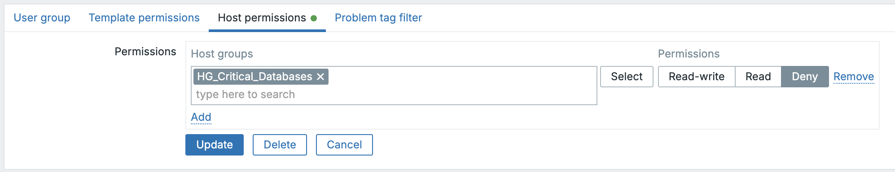 ch02.22 Critical exclusion
Creating the Test User
We will create the user first, then assign them to the groups.
- Navigate to User Creation: Go to Users ‚Üí Users in the Zabbix frontend.
- Click Create user.
- Details:
- Username: test_junior
- Name & Surname: (Optional)
- Password: Set a strong password and confirm it.
- Language & Theme: Set as desired.
- Permissions: Select role
User roleas this has the type User (This is important, as 'Super Admin' bypasses all group restrictions). - Add the user to both group
Junior MonitoringandCritical Exclusion.
- Save: Click Add.
 ch02.23 test user
ch02.23 test user
Create the hosts
We will create 2 host a linux server and a db server.
- Navigate to
Data collection‚ÜíHosts. - Click on create host.
- Details:
- Host name: Linux server
- Templates: Linux by Zabbix agent
- Host groups: HG_All_Linux_Servers
- Interfaces: Agent with IP 127.0.0.1
- Save: Click Add.
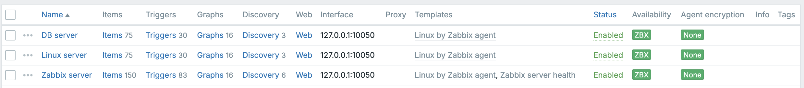 ch02.24 Add hosts
Add a DB server exact as above but change :
- Host name: DB server
- Host groups: HG_Critical_Databases
- Save: Click Add.
This should work as long as you have your zabbix agent installed reporting back
on 127.0.0.1. This is how it's configured when you first setup the Zabbix
server with an agent.
Test the Outcome
Logout as the Super admin user and log back in as user test_junior.
When we now navigate to Monitoring ‚Üí Hosts, we see that only the Linux server
is visible in the list of hosts. When we click on Select behind Host groups
we will only be able to see the group HG_All_Linux_Servers.
This table outlines the combined, effective rights for the user test_junior
(who is a member of both User Groups).
| Host Group (HG) | Permission via 'Junior Monitoring' | Permission via 'Critical Exclusion' | Effective Permission | Outcome |
|---|---|---|---|---|
HG_All_Linux_Servers |
Read-only | No Explicit Rule | Read-only | Access to view data is Allowed. |
HG_Critical_Databases |
Read-only | Deny | Deny | Access is Blocked (host is hidden). |
Conclusion
Because test_junior belongs to a group that explicitly denies access to the Critical Databases, the host is hidden entirely, proving that Deny Always Wins regardless of other permissions. So we can conclude that user groups form the essential foundation of access control in Zabbix 8.0. They define what each user can see and configure (via host/template permissions).
Questions
- If a user only has Read-only permissions assigned to a Template Group, will they be able to see those templates listed under Data collection ‚Üí Templates?
- Scenario: A user, Bob, is a member of two User Groups: 'NOC Viewers' (which has Read-only access to HG_Routers) and 'Tier 2 Techs' (which has Read-write access to the same HG_Routers). Question: Can Bob modify the configuration of the routers in Zabbix, or is he limited to viewing data? Explain your answer based on Zabbix's precedence rules.
- Scenario: A user, Alice, is a member of two User Groups: 'Ops Team' (which has Read-write access to the Host Group HG_Webservers) and 'Security Lockdown' (which has Deny access to the exact same HG_Webservers). Question: What are Alice's effective permissions for the hosts in HG_Webservers? Can she view or modify them, and why?
Useful URLs
User Roles
The Zabbix User Role system, introduced in Zabbix 5.2, defines what a user is allowed to do within the Zabbix frontend and via the API. Unlike User Groups which control data visibility Ex: (which hosts a user can see and/or manage), User Roles control application functionality (what buttons a user can click).
The role hierarchy
Every User Role, whether default or custom, is fundamentally based on one of the classic User Types (Super Admin, Admin or User). This User Type serves as the maximum allowed privilege for the role.
Default Menu Access by User Type
User Roles can be created in the menu under the Users ‚Üí User roles menu. Or they can be
set per user in
the menu Users ‚Üí Users ‚Üí "some user" ‚Üí Permissions.
This table illustrates the default access rights granted to users based on their initial User Type before any Custom User Role adjustments are made.
| Menu Section | User | Admin | Super Admin |
|---|---|---|---|
| Monitoring | |||
| Dashboards | ‚úÖ | ‚úÖ | ‚úÖ |
| Problems | ‚úÖ | ‚úÖ | ‚úÖ |
| Hosts | ‚úÖ | ‚úÖ | ‚úÖ |
| Latest data | ‚úÖ | ‚úÖ | ‚úÖ |
| Maps | ‚úÖ | ‚úÖ | ‚úÖ |
| Discovery | ‚úÖ | ‚úÖ | |
| Services | ‚úÖ | ‚úÖ | ‚úÖ |
| SLA | ‚úÖ | ‚úÖ | |
| SLA report | ‚úÖ | ‚úÖ | ‚úÖ |
| Inventory | |||
| Overview | ‚úÖ | ‚úÖ | ‚úÖ |
| Hosts | ‚úÖ | ‚úÖ | ‚úÖ |
| Reports | |||
| System information | ‚úÖ | ‚úÖ | |
| Scheduled reports | ‚úÖ | ‚úÖ | |
| Availability report | ‚úÖ | ‚úÖ | ‚úÖ |
| Top 100 triggers | ‚úÖ | ‚úÖ | ‚úÖ |
| Audit log | ‚úÖ | ‚úÖ | |
| Action log | ‚úÖ | ‚úÖ | |
| Notifications | ‚úÖ | ‚úÖ | |
| Configuration | |||
| Data collection | ‚úÖ | ‚úÖ | |
| Template groups | ‚úÖ | ‚úÖ | |
| Host groups | ‚úÖ | ‚úÖ | |
| Templates | ‚úÖ | ‚úÖ | |
| Hosts | ‚úÖ | ‚úÖ | |
| Maintenance | ‚úÖ | ‚úÖ | |
| Event correlation | ‚úÖ | ‚úÖ | |
| Discovery | ‚úÖ | ‚úÖ | |
| Alerts (Actions) | |||
| Trigger actions | ‚úÖ | ‚úÖ | |
| Service actions | ‚úÖ | ‚úÖ | |
| Discovery actions | ‚úÖ | ‚úÖ | |
| Autoregistration actions | ‚úÖ | ‚úÖ | |
| Internal actions | ‚úÖ | ‚úÖ | |
| Administration | |||
| Media types | ‚úÖ | ||
| Scripts | ‚úÖ | ||
| Users | ‚úÖ | ||
| User groups | ‚úÖ | ||
| User roles | ‚úÖ | ||
| API tokens | ‚úÖ | ||
| Authentication | ‚úÖ | ||
| General | ‚úÖ | ||
| Audit log | ‚úÖ | ||
| Housekeeping | ‚úÖ | ||
| Proxy groups | ‚úÖ | ||
| Proxies | ‚úÖ | ||
| Macros | ‚úÖ | ||
| Queue | ‚úÖ |
Customizing Role Permissions
When defining a custom role (based on Admin or User), the Zabbix administrator
can selectively revoke or grant specific rights within the scope of the
base User Type. Customization is split into three main areas:
UI Elements (Frontend Menu Access Permissions)
This section controls the visibility of menu items. By default, a role based on
the Admin type can see the Data collection menu. This allows you to hide specific
configuration sections from them.
- Example Use: You can create an
Adminrole called "Template Editor" that is allowed to see and modify Templates, but deny access to the Hosts configuration to prevent accidental host changes.
| Permission | Description |
|---|---|
| Frontend access | Allows or denies access to the entire Zabbix frontend (vs. API-only access). |
| Visibility | Toggle access to specific sections like Monitoring, Data collection, Reports, or even sub-menus like Trigger Actions or Hosts. |
Action Permissions (Functionality Control)
This is perhaps the most critical section, defining operational capabilities. These permissions control what actions a user can perform on existing data, regardless of which menu they are in.
- Example Use (NOC): Allow a NOC Operator role (based on
User) to Acknowledge problems and Close problems manually, but deny them the right to Execute scripts to prevent unauthorized command execution. - Example Use 2 (Dashboard): Allow a Manager role (based on
User) to Create and edit dashboards so they can customize their view, but deny them the ability to Acknowledge problems.
| Permission | Description |
|---|---|
| Acknowledge problems | The ability to add comments to and acknowledge active problems. |
| Close problems manually | The ability to force-close a problem, even if the underlying issue is unresolved. |
| Create and edit dashboards | Controls the ability to build and modify frontend dashboards. |
| Execute scripts | Controls the ability to execute global scripts (e.g., remote commands, inventory updates). |
API Permissions
For advanced or integration purposes, the role can specify which Zabbix API methods
are accessible. This is typically used to restrict custom scripts or integrations
to only the necessary read/write operations (e.g., allow host.get but deny
host.create).
Operational Authority for Problem Handling
The authority to manage problems and respond to incidents is critically tied to a user's access rights over the underlying Triggers and Host Groups, which are governed by their User Groups. These rules define a user's capabilities within the Monitoring sections of the Zabbix frontend:
-
To Acknowledge Events and Add Comments: To acknowledge (events) and provide comments on problems, a user must possess at least Read permission for the triggers that generated the event. This action is purely informative and does not alter the core status or configuration of the problem.
-
To Change Problem Severity or Close Problems: To change the severity of a problem or to manually close (close problem) it, the user requires Read-write permission for the corresponding triggers. These actions impact the status and state of the problem and therefore necessitate a higher, more decisive level of authority.
Practical User Role Scenarios
Providing distinct custom role examples helps illustrate the flexibility of the system.
Scenario 1: Template Maintainer Role
Objective:
Create a custom role for a technical administrator who manages templates but should not modify host configurations or system settings.
Base Role:
- Based on: Admin
- Goal: Limit exposure to production hosts while maintaining full template management.
Configuration Steps:
- Administration ‚Üí Users ‚Üí User roles ‚Üí Create role
- General
- Role name:
Template Maintainer - Base role:
Admin - Frontend access: ‚úÖ Enabled
- Role name:
- UI element permissions
- ‚úÖ Data collection ‚Üí Templates
- ‚úÖ Data collection ‚Üí Template Groups
- ‚ùå Data collection ‚Üí Hosts
- ‚ùå Users (entire section)
- ‚ùå Alerts (entire section)
- ‚ùå Administration (entire section)
- Action permissions
- ‚ùå Acknowledge problems
- ‚ùå Close problems manually
- ‚úÖ Create and edit dashboards (optional, for testing/POCs)
- ‚ùå Execute scripts
- API permissions (examples)
- Allow:
template.get,template.update,template.create - Deny: Host/system/user-management calls (e.g.,
host.create,user.update, etc.)
- Allow:
Testing:
- Log in as the user: you should see Data collection ‚Üí Templates only (within config areas), while Hosts, Alerts, Users, and Administration are hidden.
- Direct URL access to hidden sections should return Permission denied.
Use Case:
Ideal in environments with segregated duties, e.g., one team maintains templates while another handles discovery and host setup.

Scenario 2: NOC Operator Role
Objective:
Create a role for a 24/7 Network Operations Center (NOC) operator who monitors problems and acknowledges them, but cannot alter configuration.
Base Role:
- Based on: User
- Goal: Empower NOC operators to handle incident acknowledgment without configuration access.
Configuration Steps:
- Go to Administration ‚Üí User roles ‚Üí Create role
- Set:
- Role name:
NOC Operator - Base role:
User
- Role name:
- UI element permissions (7.4 menu)
- ‚úÖ Monitoring ‚Üí Dashboards / Problems / Hosts / Latest data
- ‚úÖ Services ‚Üí SLA report
- ‚úÖ Reports ‚Üí Availability report (if used)
- ‚ùå Data collection (entire section)
- ‚ùå Users (entire section)
- ‚ùå Alerts (entire section)
- ‚ùå Administration (entire section)
- Action permissions
- ‚úÖ Acknowledge problems
- ‚úÖ Close problems manually (optional enable only if your workflow requires it)
- ‚ùå Execute scripts
- ‚ùå Create and edit dashboards (or enable if they must tweak NOC views)
- API permissions (examples)
- Allow:
problem.get,event.acknowledge,trigger.get - Deny: configuration-related APIs
- Allow:
User Group Binding:
Assign this role to a User Group with Read access to specific Host Groups
(e.g., Production Routers, Datacenter Switches).
This ensures:
- The operator can view and acknowledge only relevant alerts.
- No risk of unauthorized system modifications.
Use Case:
Used by first-line support teams who handle incident acknowledgment and escalation during live monitoring.

Summary: Role vs. Group
Info
Zabbix's User Roles and User Groups work together to enforce both security and usability. Roles define what you can do, while Groups define what you can see — giving administrators fine-grained control over both the interface and data scope in multi-team monitoring environments.
Note
Since Zabbix 7.4 there is now the Action option Create and edit own media
available. This option allows users to manage their own media something
that wasn't possible before.
It is crucial to understand that these two systems work in tandem:
- User Role: Controls the Zabbix application and UI. Can you click the "Data collection" menu?
- User Group: Controls the Host/Item data. If you click "Data collection, " which hosts do you see?
A user with the Config Admin Role will see the Data collection menu, but if
their User Group has no permissions to any Host Groups, they will see an
empty host list. This layered approach ensures both security and a tailored
user experience.
Conclusion
Zabbix's User Roles and User Groups together form the foundation of a secure and flexible access control model. User Roles define what a person can do in the frontend and API shaping the available menus, actions, and privileges. While User Groups define what data that person can see, such as hosts, templates, and triggers.
By carefully combining these two layers, administrators can tailor Zabbix to match real operational responsibilities: from read-only NOC operators to full template maintainers or automation accounts. This separation of function and visibility not only strengthens security but also creates a cleaner, more focused user experience for every role within the monitoring ecosystem.
Questions
- What is the key difference between a User Role and a User Group in Zabbix?
- How does the base User Type (User, Admin, Super Admin) limit what a custom role can achieve?
- Why might you assign different User Groups to users who share the same User Role?
- How can role-based API permissions help reduce risk in automation or DevOps workflows?
Useful URLs
External Authentication
HTTP
HTTP authentication is one of external authentication methods provided by Zabbix and can be used to additionally secure your Zabbix WebUI with basic authentication mechanism at HTTP server level.
Basic HTTP authentication protects Website (Zabbix WebUI) resources with a username and password. When a user attempts to access Zabbix WebUI, the browser pops up a dialog asking for credentials before sending anything over to Zabbix WebUI php code.
An HTTP server has a file with credentials that is used to authenticate users.
First let's see how we can configure basic authentication in HTTP server.
Warning
The examples below provide just minimum set of options to configure basic authentication. Please refer to respective HTTP server documentation for more details
Basic authentication
To enable basic authentication, we first need a "password-file" containing all usernames and passwords that are allowed to access the frontend.
Important
Usernames configured for basic authentication in HTTP server must exist in Zabbix. But only passwords configured in HTTP server are used for users authentication.
To create this file we need the command htpasswd. Execute following commands
to ensure we have this utility:
Install htpasswd utility
Red Hat
SUSE
Ubuntu
Next we will create the required file and the Admin user in it:
Info
NGINX
Apache on Red Hat
Apache on SUSE / Ubuntu
This command will request you to input the desired password for the Admin user
and will then create the specified password-file with the username and encrypted
password in it.
For any additional user we can use the same command but without the -c option
as the file is now already created:
Add additional users
Which will add user1 to the /etc/nginx/httpauth-file. Replace this path with
the path of this file on your distribution/webserver.
In the end the password-file should look something like:
Example password-file
Now that we have a password-file, we can continue to configure the web-browser to actually perform basic authentication, using this file.
Configure authentication file on Nginx
Find location / { block in Nginx configuration file that defines your Zabbix
WebUI (if you followed the installation steps as described in earlier chapters,
this should be in /etc/nginx/conf.d/zabbix.conf) and add these two lines:
Info
Do not forget to restart Nginx service after making this change.
Configure authentication file on Apache HTTPD
Find <Directory "/usr/share/zabbix"> block in Apache HTTPD configuration file
that defines your Zabbix WebUI (in my case it is /etc/zabbix/apache.conf) and
add these lines:
Note
By default configuration has Require all granted, remove this line.
Example
RedHat:
<Directory "/usr/share/zabbix">
...
AuthType Basic
AuthName "Restricted Content"
AuthUserFile /etc/httpd/.htpasswd
Require valid-user
</Directory>
Ubuntu / SUSE
Do not forget to restart apache2 or httpd service after making this change.
Zabbix configuration for HTTP authentication
When we have a WEB server configured with basic authentication it is high time
to configure Zabbix server. In Zabbix menu select Users | Authentication |
HTTP settings and check Enable HTTP authentication check-box. Click Update
and confirm the changes by clicking OK button.

2.1 HTTP users authentication
Remove domain name field should have a comma separated list of domains that
Zabbix will remove from provided username, e.g. if a user enters
"test@myzabbix" or "myzabbix\test" and we have "myzabbix" in this field then
the user will be logged in with username "test".
Unchecking Case-sensitive login check-box will tell Zabbix to not pay
attention to capital/small letters in usernames, e.g. "tEst" and "test" will
become equally legitimate usernames even if in Zabbix we have only "test"
user configured.
Note that Default login form is set to "Zabbix login form". Now if you sign
out you will see "Sign in with HTTP" link below Username and Password fields.
If you click on the link you will be automatically logged in into Zabbix WebUI
with the same username you previously used. Or you can enter different
Username and Password and normally log in into Zabbix WebUI as different user.

2.2 HTTP users authentication login form
If you select "HTTP login form" in Default login form drop-down you won't see
standard Zabbix login form when you try to log out. You actually won't be able
to sign out unless your authentication session expires. The only way to sign out
is to clear cookies in your browser. Then you'll have to go through the Web
server basic authentication procedure again.
Conclusion
Configuring HTTP level authentication adds a critical layer of access control to your Zabbix Web UI by leveraging your web server's native authentication mechanisms. Whether using Nginx or Apache, this approach ensures that users are prompted for credentials before even reaching Zabbix, effectively guarding against unauthorized access at the HTTP entry point. Key considerations include ensuring that usernames used in the HTTP authentication are already defined within Zabbix itself only the password from the web server matters for credential checks and correctly setting up Zabbix's HTTP authentication settings (such as domain removal and case sensitivity options). By coordinating web server authentication settings with Zabbix's internal configuration, you can achieve seamless and secure user login workflows that blend frontend usability with robust protective measures.
Questions
-
What advantage does HTTP (web server based) authentication provide compared to Zabbix's internal authentication mechanism? (Consider protection at the web server layer before the user even reaches the Zabbix UI.)
-
Why is it essential that a user must exist in Zabbix even when HTTP authentication is enabled and why does the Zabbix password become irrelevant in that case?
-
What are the configuration options in Zabbix's frontend under “Administration → Authentication” for HTTP authentication, and how might each affect login behavior? Examples include enabling/disabling case sensitivity, domain stripping, and choice of login form.
-
Suppose you disable case sensitive logins and maintain both 'Admin' and 'admin' accounts in Zabbix. How will HTTP authentication behave, and what outcome should you expect?
-
Imagine troubleshooting a login failure when using HTTP authentication: What steps would you take to ensure the web server’s authentication is configured correctly before examining Zabbix settings?
-
From a security standpoint, when would HTTP authentication alone be insufficient and what other authentication methods (e.g., LDAP, SAML, MFA) might you layer on top for added security?
Useful URLs
LDAP / AD
As any modern system Zabbix can perform users authentication using Lightweight Directory Access Protocol (LDAP). In theory LDAP is very well defined open protocol that should be vendor independent but its relative complexity plays a role in every LDAP server implementation. Zabbix is known to work well with Microsoft Active Directory and OpenLDAP server.
LDAP authentication can be configured in two modes:
- Users authentication
- Users authentication with users provisioning
Users authentication mode
The process of the authenticating users follows this diagram.

2.3 LDAP users authentication
As shown on the diagram a user that tries to log in must be pre-created in Zabbix to be able to log in using LDAP. The database user records do not have any fields "saying" that the user will be authenticated via LDAP, it's just users' passwords stored in the database are ignored, instead, Zabbix goes to a LDAP server to verify whether:
- user with a given username exists
- user provided the correct password
no other attributes configured for the user on the LDAP server side are taken into account.
So when Zabbix is used by many users and groups, user management becomes not a very trivial task as new people join different teams (or leave). This problem is addressed by "users provisioning" and we'll cover this topic a bit later. For now let's take a look at how to configure LDAP authentication.
Configure LDAP
In this section, we will be using a custom demo LDAP server with pre-loaded data. You can set this demo environment up to check out the Zabbix LDAP authentication possibilities. Or you can skip the setup of the demo environment if you just want to connect your Zabbix instance to your existing LDAP or AD server.
Set up local demo LDAP server
We believe that it is better to learn this topic by example so we'll be using our own LDAP server that you can spin up in a container for demo purposes. First we will need to ensure that we have a container engine installed.
Install Podman container engine
Red Hat
SUSE
Ubuntu
What is Podman
Podman is a container engine designed as a drop-in replacement for Docker, but with a daemonless architecture. This means it runs containers directly under the user’s control, improving security and simplicity. Podman is fully compatible with Docker’s CLI and supports rootless containers, making it ideal for development, testing, and production environments where security and isolation are priorities.
Tip
If you want to use Docker instead of Podman, you can just replace any
occurrences of podman in following instructions by docker.
Now we can start containers. Start an OpenLDAP server in a container:
Start an OpenLDAP server in a container with pre-loaded data
For simplicity, all users (including ldap_search) in this test LDAP server
have the word password as their passwords.
Users user1 and user2 is a member of zabbix-admins LDAP group. User
user3 is a member of zabbix-users LDAP group.
???+ tip Tip: use phpLdapAdmin as an LDAP GUI
To visually see LDAP server data (and add your own configuration like users
and groups) you can start this standard container:
```bash
podman run -p 8081:80 -p 4443:443 --name phpldapadmin --hostname phpldapadmin\
--link openldap-server:ldap-host --env PHPLDAPADMIN_LDAP_HOSTS=ldap-host\
--detach osixia/phpldapadmin:0.9.0
```
Now you can access this LDAP server via https://<ip_address>:4443 (or any
other port you configure to access this Docker container), click Login,
enter “cn=admin,dc=example,dc=org” in Login DN field and “password” in
Password field, click Authenticate. You should see the following structure
of the LDAP server (picture shows ‘zabbix-admins’ group configuration):
{ align=center }
_2.4 LDAP server data_
Configure Zabbix LDAP authentication
Let's configure LDAP server settings in Zabbix. In Zabbix menu select
Users | Authentication | LDAP settings, then check the check-box
Enable LDAP authentication and click Add under Servers (change IP address
of your LDAP server and port number according to your set up):

2.5 LDAP server settings in Zabbix
Following diagram can help you understand how to configure LDAP server in Zabbix based on your LDAP server data structure:
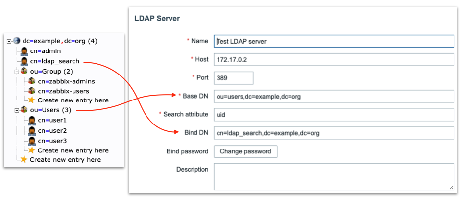
2.6 LDAP server to Zabbix
“Special” Distinguished Name (DN) cn=ldap_search,dc=example,dc=org is used for searching, i.e. Zabbix uses this DN to connect to LDAP server and of course when you connect to LDAP server you need to be authenticated – this is why you need to provide Bind password. This DN should have access to a sub-tree in LDAP data hierarchy where all your users are configured. In our case all the users configured “under” ou=Users,dc=example,dc=org, this DN is called base DN and used by Zabbix as so to say “starting point” to start searching.
Anonymous LDAP binding
Technically it is possible to bind to the LDAP server anonymously, without providing a password but this is a huge breach in security as the whole users sub-tree becomes available for anonymous (unauthenticated) search, i.e. effectively exposed to any LDAP client that can connect to LDAP server over TCP. The LDAP server we deployed previously in Docker container does not provide this functionality.
Click Test button and enter user1 and password in the respective fields, the
test should be successful confirming Zabbix can authenticate users against LDAP
server.
Tip
We can add multiple LDAP servers and use them for different User groups.
To test real users login using LDAP authentication we need to create user
groups and users in Zabbix. In Zabbix menu select Users | User groups. Make
sure Zabbix administrators group exists (we'll need it later) and create new
group Zabbix users by clicking Create user group button. Enter "Zabbix
users" in Group name field, select "LDAP" in Frontend access drop-down that
will make Zabbix to authenticate users belonging to this group against LDAP
server and in LDAP server drop-down select LDAP server we earlier configured
"Test LDAP server". Click Add button to create this User group:
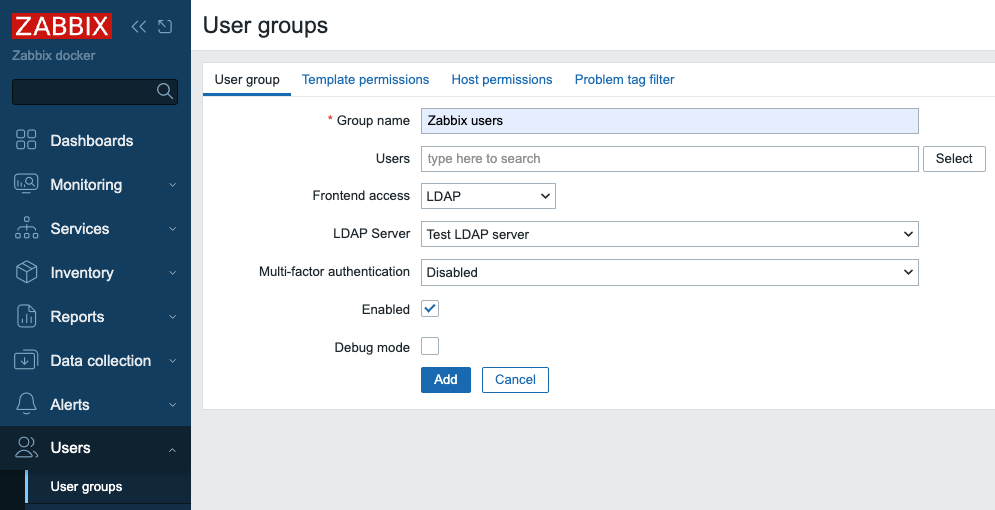
2.7 Add user group in zabbix
Now we need to create our test user. In Zabbix menu select Users | Users and
click Create user button. Then enter "user3" in Username field. Select
"Zabbix users" in Groups field. What you enter in Password and Password
(once again) fields does not matter as Zabbix will not try to use this
password, instead it will go to LDAP server to authenticate this user since
it's a member of the User group that has authentication method LDAP, just
make sure you enter the same string in these two fields and it satisfied your
password strength policy defined in Users | Authentication.

2.8 Add user in Zabbix
Then click Permissions tab and select "User role" in Role field:

2.9 Add user in Zabbix - permissions
Click Add button to create the user.
We are ready to test our LDAP server authentication! Click Sign out in Zabbix
menu and login with "user3" as Username and "password" as Password, if you
carefully followed the steps above you should successfully login with User role
permissions.
Click Sign out again and login as Admin again to proceed.
Just-in-Time user provisioning
Now let's talk about really cool feature Zabbix provides - "Just-in-Time user provisioning (JIT) available since Zabbix 6.4.
This picture illustrates on high level how it works: 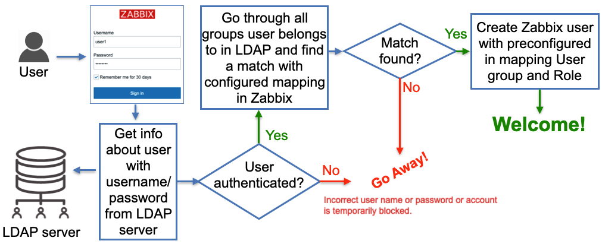
2.10 LDAP JIT explained
Here when Zabbix gets a username and password from the Zabbix Login form it
goes to the LDAP server and gets all the information available for this user
including his/her LDAP groups membership and e-mail address. Obviously, it
gets all that only if the correct (from LDAP server perspective) username and
password were provided. Then Zabbix goes through pre-configured mapping that
defines users from which LDAP group goes to which Zabbix user group. If at
least one match is found then a Zabbix user is created in the Zabbix database
belonging to a Zabbix user group and having a Zabbix user role according to
configured “match”. So far sounds pretty simple, right? Now let’s go into
details about how all this should be configured.
In Users | Authentication we need to do two things:
-
Set
Default authenticationto LDAP. When JIT is turned off then type of authentication is defined based on the User group a user that tries to login belongs to. In case of JIT the user does not exist in Zabbix yet thus obviously does not belong to any User group so Default method authentication is used and we want it to be LDAP. -
Provide
Deprovisioned users group. This group must be literally disabled otherwise you won't be able to select it here. This is the Zabbix user group where all de-provisioned users will be put into so effectively will get disabled from accessing Zabbix.

2.11 Default authentication
Click Update button`.
- Enable JIT provisioning check-box which obviously needs to be checked for this
feature to work. It's done in our Test LDAP server configuration - select
Users | Authentication | LDAP settingsand click on our server inServerssection. After enabling this check-box we'll see some other fields related to JIT to be filled in and what we put in there depends on the method we choose to perform JIT.
Group configuration method “memberOf”
All users in our LDAP server have memberOf attribute which defines what LDAP groups every user belongs to, e.g. if we perform a LDAP query for user1 user we’ll get that its memberOf attribute has this value:
memberOf: cn=zabbix-admins,ou=Group,dc=example,dc=org
Note, that your real LDAP server can have totally different LDAP attribute that
provides users’ group membership, and of course, you can easily configure what
attribute to use when searching for user’s LDAP groups by putting it into User
group membership attribute field:

2.12 LDAP groups mapping
In the picture above we are telling Zabbix to use memberOf attribute to extract DN defining user’s group membership (in this case it is cn=zabbix-admins,out=Group,dc=example,dc=org) and take only cn attribute from that DN (in this case it is zabbix-admins) to use in searching for a match in User group mapping rules. Then we define as many mapping rules as we want. In the picture above we have two rules:
- All users belonging to zabbix-users LDAP group will be created in Zabbix as members of Zabbix users group with User role
- All users belonging to zabbix-admins LDAP group will be created in Zabbix as members of Zabbix administrators group with Super admin role
Group configuration method “groupOfNames”
There is another method of finding users’ group membership called “groupOfNames” it is not as efficient as “memberOf” method but can provide much more flexibility if needed. Here Zabbix is not querying LDAP server for a user instead it is searching for LDAP groups based on a given criterion (filter). It’s easier to explain with pictures depicting an example:

2.13 LDAP server groupOfNames
Firstly we define LDAP “sub-tree” where Zabbix will be searching for LDAP
groups – note ou=Group,dc=example,dc=org in Group base DN field. Then in the
field Group name attribute field we what attribute to use when we search in
mapping rules (in this case we take cn, i.e. only zabbix-admins from full
DN cn=zabbix-admins,ou=Group,dc=example,dc=org). Each LDAP group in our LDAP
server has member attribute that has all users that belong to this LDAP group
(look at the right picture) so we put member in Group member attribute
field. Each user’s DN will help us construct Group filter field. Now pay
attention: Reference attribute field defines what LDAP user’s attribute
Zabbix will use in the Group filter, i.e. %{ref} will be replaced with the
value of this attribute (here we are talking about the user’s attributes – we
already authenticated this user, i.e. got all its attributes from LDAP server).
To sum up what I've said above Zabbix:
- Authenticates the user with entered Username and Password against LDAP server getting all user’s LDAP attributes
- Uses
Reference attributeandGroup filterfields to construct a filter (when user1 logs in the filter will be (member=uid=user1,ou=Users,dc=example, dc=org) - Performs LDAP query to get all LDAP groups with member attribute (configured
in
Group member attributefield) containing constructed in step 2) filter - Goes through all LDAP groups received in step 3) and picks
cnattribute (configured inGroup name attributefield) and finds a match in User group mapping rules
Looks a bit complicated but all you really need to know is the structure of your LDAP data.
Ready to test
Now when you login with user1 or user2 username then these users will be created by Zabbix and put into Zabbix administrators user group, when you login with user3 username then this user will be created by Zabbix and put into Zabbix users user group:

2.14 Test user1

2.15 Test user3
Conclusion
Integrating Zabbix with LDAP—or specifically, Active Directory elevates your system's authentication capabilities by leveraging existing organizational credentials. It allows users to log in using familiar domain credentials, while Zabbix offloads the password verification process to a trusted external directory. Notably, even when configuring LDAP authentication, corresponding user accounts must still exist within Zabbix though their internal passwords become irrelevant once external authentication is active.
Particularly powerful is the Just-In-Time (JIT) provisioning feature: this enables Zabbix to dynamically create user accounts upon first successful LDAP login streamlining onboarding and reducing manual administration. Beyond that, JIT supports ongoing synchronization updating user roles, group memberships, or even user removals in Zabbix to mirror changes in LDAP—either when a user logs in or during configured provisioning intervals.
Important configuration details such as case sensitivity, authentication binding methods, search filters, and group mapping need careful attention to ensure reliable and secure operation. And while LDAP offers seamless integration, Zabbix still maintains control over roles, permissions, and access behavior through its own user and user group models Zabbix.
In sum, LDAP/AD authentication offers a scalable, secure, and enterprise-aligned approach to centralizing identity management in Zabbix. With flexible provisioning and synchronization, organizations can reduce administrative load while reinforcing consistency across their access control and authentication strategy.
Questions
-
What are the main benefits of integrating Zabbix authentication with LDAP or Active Directory compared to using only internal Zabbix accounts?
-
Why must a user still exist in Zabbix even when LDAP authentication is enabled, and what role does the internal password play in that case?
-
How does Just-In-Time (JIT) provisioning simplify user management in Zabbix, and what potential risks or caveats should an administrator consider when enabling it?
-
What is the difference between user authentication and user authorization in the context of LDAP integration with Zabbix? (Hint: Authentication verifies credentials, while authorization determines permissions inside Zabbix.)
-
Imagine an administrator incorrectly configures the LDAP search filter. What issues might users encounter when attempting to log in, and how could you troubleshoot the problem?
-
How could LDAP group mappings be used to streamline permission assignment in Zabbix? Can you think of an example from your own environment?
-
If an organization disables a user account in Active Directory, how does JIT provisioning ensure that Zabbix access is also updated? What would happen if JIT was not enabled?
Useful URLs
SAML
Integrating Security Assertion Markup Language (SAML) for authentication within Zabbix presents a non-trivial configuration challenge. This process necessitates meticulous management of cryptographic certificates and the precise definition of attribute filters. Furthermore, the official Zabbix documentation, while comprehensive, can initially appear terse.
Initial Configuration: Certificate Generation
The foundational step in SAML integration involves the generation of a private key
and a corresponding X.509 certificate. These cryptographic assets are critical
for establishing a secure trust relationship between Zabbix and the Identity Provider
(IdP).
By default, Zabbix expects these files to reside within the ui/conf/certs/
directory. However, for environments requiring customized storage locations, the
zabbix.conf.php configuration file allows for the specification of alternative
paths.
Let's create our private key and certificate file.
cd /usr/share/zabbix/ui/conf/certs/
openssl req -newkey rsa:2048 -nodes -keyout sp.key -x509 -days 365 -out sp.crt
Following the generation and placement of the Zabbix Service Provider (SP) certificates, the next critical phase involves configuring the Identity Provider (IdP). In this context, we will focus on Google Workspace as the IdP.
Retrieving the IdP Certificate (idp.crt) from Google Workspace:
- Access the Google Workspace Admin Console: Log in to your Google Workspace administrator account.
- Navigate to Applications: Within the admin console, locate and select the "Apps" section.
- Access Web and Mobile Apps: Choose
Web and mobile appsfrom the available options. - Create a New Application: Initiate the creation of a new application to facilitate SAML integration. This action will trigger Google Workspace to generate the necessary IdP certificate.
2.16 create new application
- Download the IdP Certificate: Within the newly created application's settings, locate and download the idp.crt file. This certificate is crucial for establishing trust between Zabbix and Google Workspace.
- Placement of idp.crt: Copy the downloaded
idp.crtfile to the same directory as the SP certificates in Zabbix, underui/conf/certs/.
2.17 add certificate
SAML Attribute Mapping and Group Authorization
A key aspect of SAML configuration is the mapping of attributes between Google Workspace and Zabbix. This mapping defines how user information is transferred and interpreted.
Attribute Mapping:
- It is strongly recommended to map the Google Workspace "Primary Email" attribute to the Zabbix "Username" field. This ensures seamless user login using their Google Workspace email addresses.
- Furthermore, mapping relevant Google Workspace group attributes allows for granular control over Zabbix user access. For instance, specific Google Workspace groups can be authorized to access particular Zabbix resources or functionalities.
Group Authorization:
- Within the Google Workspace application settings, define the groups that are authorized to utilize SAML authentication with Zabbix.
- This configuration enables the administrator to control which users can use SAML to log into Zabbix.
- In Zabbix, you will also need to create matching user groups and configure the authentication to use those groups.
Configuration Example (Conceptual):
- Google Workspace Attribute: "Primary Email" -> Zabbix Attribute: "Username"
- Google Workspace Attribute: "Group Membership" -> Zabbix Attribute: "User Group"
This attribute mapping ensures that users can log in using their familiar Google Workspace credentials and that their access privileges within Zabbix are determined by their Google Workspace group memberships.
2.18 SAML mappings
Zabbix SAML Configuration
With the IdP certificate and attribute mappings established within Google Workspace, the final step involves configuring Zabbix to complete the SAML integration.
Accessing SAML Settings in Zabbix:
- Navigate to User Management: Log in to the Zabbix web interface as an administrator.
- Access Authentication Settings: Go to "Users" -> "Authentication" in the left-hand menu.
- Select SAML Settings: Choose the "SAML settings" tab.
Configuring SAML Parameters:
Within the "SAML settings" tab, the following parameters must be configured:
- IdP Entity ID: This value uniquely identifies the Identity Provider (Google Workspace in this case). It can be retrieved from the Google Workspace SAML configuration metadata.
- SSO Service URL: This URL specifies the endpoint where Zabbix should send authentication requests to Google Workspace. This URL is also found within the Google Workspace SAML configuration metadata.
- Retrieving Metadata: To obtain the IdP entity ID and SSO service URL, within
the Google Workspace SAML application configuration, select the option to
Download metadata. This XML file contains the necessary values. - Username Attribute: Set this to "username." This specifies the attribute within the SAML assertion that Zabbix should use to identify the user.
- SP Entity ID: This value uniquely identifies the Zabbix Service Provider. It should be a URL or URI that matches the Zabbix server's hostname.
- Sign: Select
Assertions. This configures Zabbix to require that the SAML assertions from Google Workspace are digitally signed, ensuring their integrity.
Example Configuration (Conceptual)
- IdP entity ID: https://accounts.google.com/o/saml2?idpid=your_idp_id
- SSO service URL: https://accounts.google.com/o/saml2/idp/SSO?idpid=your_idp_id&SAMLRequest=your_request
- Username attribute: username
- SP entity ID: https://your_zabbix_server/zabbix
- Sign: Assertions
2.19 SAML config
Additional Configuration Options:
The Zabbix documentation provides a comprehensive overview of additional SAML configuration options. Consult the official Zabbix documentation for advanced settings, such as attribute mapping customization, session timeouts, and error handling configurations.
Verification and Testing:
After configuring the SAML settings, it is crucial to thoroughly test the integration. Attempt to log in to Zabbix using your Google Workspace credentials. Verify that user attributes are correctly mapped and that group-based access control is functioning as expected.
Troubleshooting:
If authentication fails, review the Zabbix server logs and the Google Workspace audit logs for potential error messages. Ensure that the certificate paths are correct, the attribute mappings are accurate, and the network connectivity between Zabbix and Google Workspace is stable.
SAML Media Type mappings
After successfully configuring SAML authentication, the final step is to integrate media type mappings directly within the SAML settings. This ensures that media delivery is dynamically determined based on SAML attributes.
Mapping Media Types within SAML Configuration:
- Navigate to SAML Settings: In the Zabbix web interface, go to "Users" -> "Authentication" and select the "SAML settings" tab.
- Locate Media Mapping Section: Within the SAML settings, look for the section related to media type mapping. This section might be labeled "Media mappings" or similar.
- Add Media Mapping: Click "Add" to create a new media type mapping.
- Select Media Type: Choose the desired media type, such as "Gmail relay."
- Specify Attribute: In the attribute field, enter the SAML attribute that contains the user's email address (typically "username," aligning with the primary email attribute mapping).
- Configure Active Period : Specify the active period for this media type. This allows for time-based control of notifications.
- Configure Severity Levels: Configure the severity levels for which this media type should be used.
Example Configuration (Conceptual):
- Media Type: Gmail relay
- Attribute: username
- Active Period: 08:00-17:00 (Monday-Friday)
- Severity Levels: High, Disaster
Rationale:
By mapping media types directly within the SAML configuration, Zabbix can dynamically determine the appropriate media delivery method based on the SAML attributes received from the IdP. This eliminates the need for manual media configuration within individual user profiles when SAML authentication is in use.
Key Considerations:
- Ensure that the SAML attribute used for media mapping accurately corresponds to the user's email address.
- Verify that the chosen media type is correctly configured within Zabbix.
- Consult the Zabbix documentation for specific information about the SAML media mapping functionality, as the exact configuration options may vary depending on the Zabbix version.
Final Configuration: Frontend Configuration Adjustments
After configuring the SAML settings within the Zabbix backend and Google Workspace, the final step involves adjusting the Zabbix frontend configuration. This ensures that the frontend correctly handles SAML authentication requests.
Modifying zabbix.conf.php:
-
Locate Configuration File: Access the Zabbix frontend configuration file, typically located at /etc/zabbix/web/zabbix.conf.php.
-
Edit Configuration: Open the zabbix.conf.php file using a text editor with root or administrative privileges.
-
Configure SAML Settings: Within the file, locate or add the following configuration directives:
// Uncomment to override the default paths to SP private key, SP and IdP X.509 certificates,
// and to set extra settings.
$SSO['SP_KEY'] = 'conf/certs/sp.key';
$SSO['SP_CERT'] = 'conf/certs/sp.crt';
$SSO['IDP_CERT'] = 'conf/certs/idp.crt';
//$SSO['SETTINGS'] = [];
MS Cloud
Okta
Conclusion
Questions
Useful URLs
Multi factor authentication
We all know that before you can start configuring Zabbix via WebUI you have to sign in. Zabbix has several options to provide better security for user passwords by configuring password policy:
- Requirement for Minimum password length
- Requirements for password to contain an uppercase and a lowercase Latin letter, a digit, a special character
- Requirement to avoid easy-to-guess passwords
To secure sign in process even more you can configure multi factor authentication (MFA). MFA protects Zabbix by using a second source of validation before granting access to its WebUI after a user enters his/her password correctly. Zabbix offers to types of MFA - Time-based one-time password (TOTP) and Duo MFA provider.
Time-based one-time password
In the menu select Users section and then Authentication
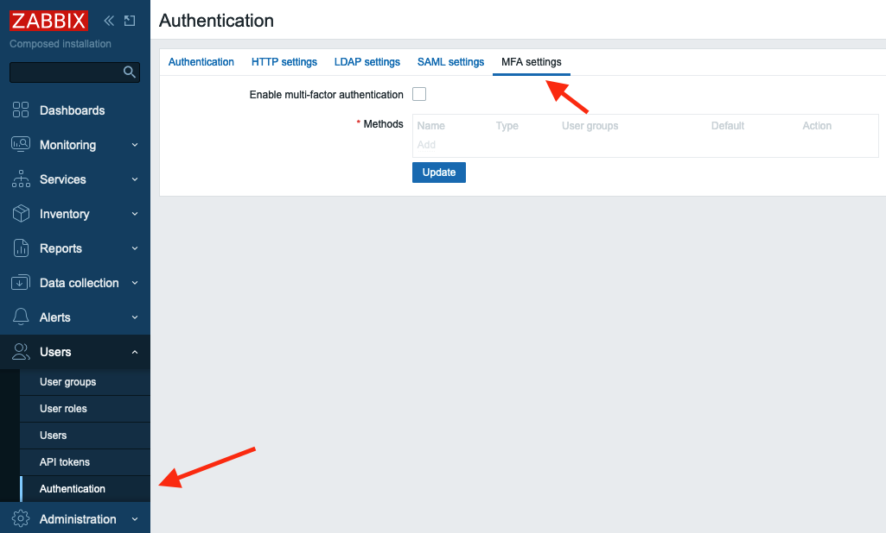
2.20 Initial MFA settings
Now in MFA settings tab select the Enable multi-factor authentication check-box,
then select TOTP in Type drop-down list.

2.21 New MFA method
In Hash function drop-down list you can choose SHA-1, SHA-256 or SHA-512, the higher
number is the better security.
In Code lentgh you can select how many digits will be generated for you by Authenticator
application on your phone.
Click Add and then Update. Now you have TOTP MFA configured and it is the default
method of MFA.

2.22 New MFA method added
Now you need to tell Zabbix for which User group (or groups) to use MFA. Let's create a User group that would require MFA.
In the menu select Users section and then User groups, then click Create user
group button
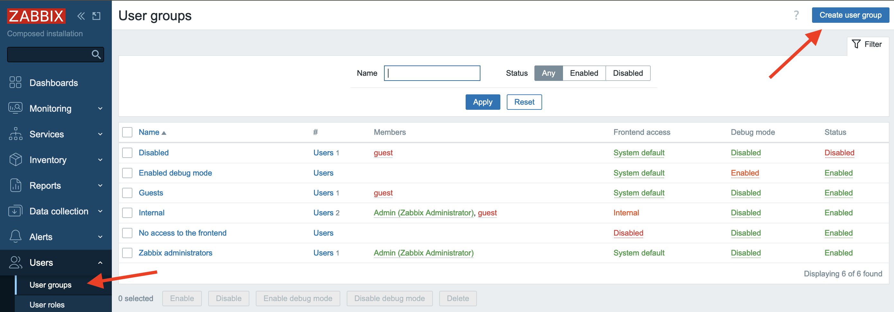
2.23 Create user group
In Group name put "test". Note that Multi-factor authentication field is "Default",
as currently we have only one MFA method configured it does not matter whether we
select "Default" or "TOTP1" that we created above. You also can disable MFA for
all users belonging to this User group. Click Add button to create "test" User
group.
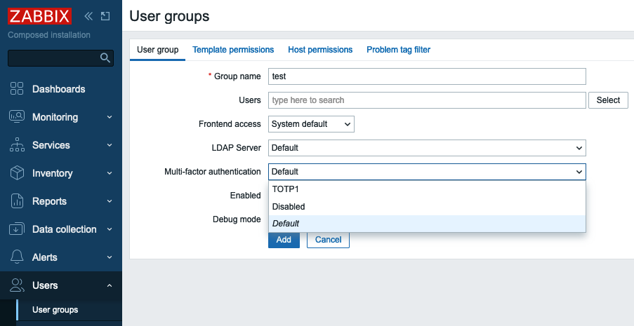
2.24 New user group configuration
Note
MFA method is defined on per User group basis, i.e. MFA method configured for a User group will be applied to all users belonging to this group.
Let's add a user to this user group. In the menu select Users section and then
Users, then click Create user button

2.25 Create user
Fill in Username, Password and Password (once again) fields. Make sure you
select test user group in Groups field.

2.26 New user configuration
Then switch to Permissions tab and select any role.

2.27 New user permissions
Click Add button to add the user.
Now we can test how TOTP MFA works. Sign out and then try to sign in as a test user
you just created. You will be presented with a QR code. That means that the user
test has not been enrolled in TOTP MFA yet.
2.28 TOTP QR code
On your phone you need to install either "Microsoft authenticator" or "Google authenticator"
application. The procedure of adding new QR code is quite similar, here is how it
looks in "Google authenticator". Tap Add a code and then Scan a QR code. You'll
be immediately presented with a 6 digit code (remember we selected 6 in Code length
when we configured TOTP MFA?)

2.29 Authenticator app, step 1
2.30 Authenticator app, step 2

2.31 Authenticator app, step 3
Enter this code into Verification code field of your login screen and click
Sign in, if you did everything right you are logged in into Zabbix at this point.
At this point the user "test" is considered enrolled into TOTP MFA and Zabbix stores
a special code used for further authentications in its database. The next time
user "test" tries to login into Zabbix there will be only a field to enter
verification code

2.32 Verification code request
Warning
For TOTP MFA to work your Zabbix server must have correct time. Sometimes it's not the case especially if you are working with containers so pay attention to this.
If a user changes (or loses) his/her phone, then Zabbix administrator should reset
his/her enrolment. To do that in the menu select Users then mark a check-box to
the left of "test" user and click "Reset TOTP secret" button.

2.33 Reset TOTP secret
After you reset TOTP secret the "test" user will have to undergo enrolment procedure again.
Duo MFA provider
Duo is a very famous security platform that provides a lot of security related features/products. To read more please visit Duo. Here we'll talk about Duo only in regards to Zabbix MFA.
Warning
For Duo MFA to work your Zabbix WebUI must be configured to work with HTTPS (valid certificate is not required, self-signed certificate will work).
First of all you need to create an account with Duo (it's free to manage up to
10 users) then login into Duo, you are an admin here. In the menu on the left select
Applications and click Protect an Application button.

2.34 DUO Applications menu
Then you will see WebSDK in applications list, click on it
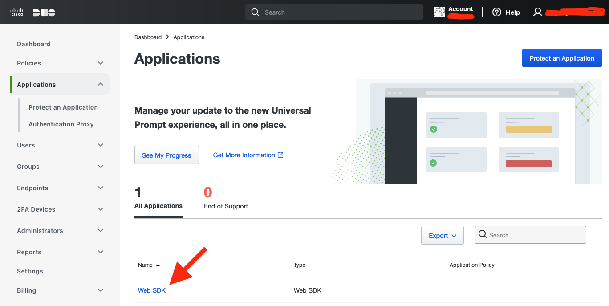
2.35 DUO Applications list
Here you'll see all the data needed for Zabbix.

2.36 DUO WebSDK application settings
Now let's go to Zabbix. First we need to configure Duo MFA method. In the menu select
Users and click Authentication. Then on MFA settings tab click Add in
Methods section.

2.37 Add MFA method
Fill in all the fields with data from Duo Dashboard -> Applications -> Web SDK page
(see screenshot above) and click Add, then click Update to update Authentication
settings.

2.38 DUO method settings
After the MFA method is configured let's switch the "Test" group to use Duo MFA.
In the menu select Users and click User groups, then click "test" group. In
the field Multi-factor authentication select "DUO1" and click Update.

2.39 DUO MFA authentication method for user group
Everything is ready. Let's test it. Sign out of Zabbix and sign back in with "test"
user. You should see a welcome screen from Duo. Click several Next buttons.

2.40 Enrolling into DUO, step1
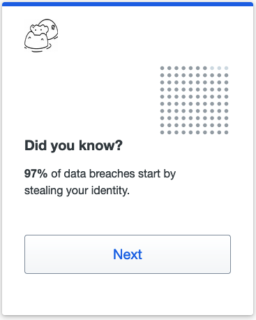
2.41 Enrolling into DUO, step2
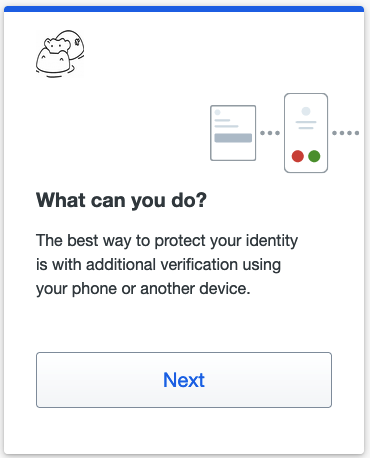
2.42 Enrolling into DUO, step3
Then you need to select the method of authentication.

2.43 Enrolling into DUO, step4
It is up to you what to select you can experiment with all these methods. Let's
select "Duo Mobile" (you need to install "Duo mobile" application on your device).
Click I have a tablet (it's just easier to activate your device this way) and
confirm that you installed "Duo mobile" on your phone. At this point you should
see a QR code that you need to scan in "Duo mobile" application.
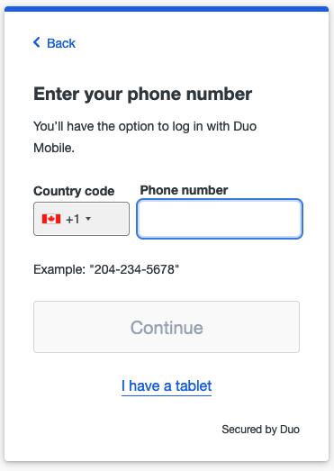
2.44 Enrolling into DUO, step5

2.45 Enrolling into DUO, step6

2.46 Enrolling into DUO, step7
Open "Duo mobile" on your phone. If you did not have this application previously installed (thus no accounts enrolled) you will see couple of welcome screens.

2.47 Configure DUO app, step 1

2.48 Configure DUO app, step 2
Tap on "Use a QR code" and then scan the code presented by Duo in your Zabbix login screen. After you do that you will see that the account is enrolled to your Duo MFA. Enter account name and tap "Done" and you will see the account in the list of all accounts enrolled into Duo MFA on this device. In Zabbix WebUI you will also see a confirmation, click "Continue".

2.49 Configure DUO app, step 3
2.50 Configure DUO app, step 4

2.51 Enrolment confirmation
Duo will ask you now whether you want to add another method of authentication,
click Skip for now and you'll see a confirmation that set up completed. Click
Login with Duo and a notification will be pushed to your device.

2.52 Add another way to login

2.53 MFA DUO set up completed

2.54 DUO push notification sent
Now just tap on "Approve" on your device and you will be logged in into Zabbix.
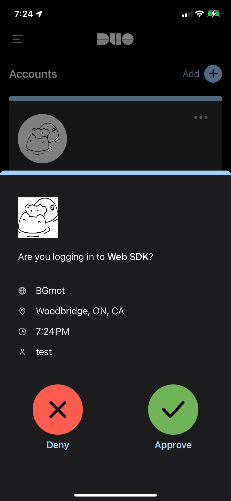
2.55 DUO push notification on the phone
Duo MFA enrolment complete. If you sign out and sign in back then immediately a push notification will be sent to your device and all you need is tap on "Approve". Also you will see the user "test" in Duo where you can delete the user, or deactivate just click on it and experiment.
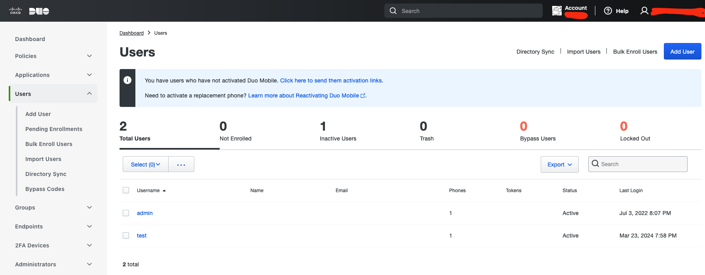
2.56 New user registered in DUO
Conclusion
Implementing Multi-Factor Authentication (MFA) in Zabbix is a powerful way to significantly advance your system’s security beyond the standard password policies. This chapter outlined how Zabbix supports two robust MFA mechanisms:
-
Time Based One-Time Password (TOTP): Offers user-friendly, secure login via an authenticator app (like Google or Microsoft Authenticator). It's easy to configure and effective just ensure that your Zabbix server maintains accurate time settings to avoid authentication issues.
-
Duo MFA: Integrates a more advanced, enterprise grade solution that provides features like push notifications and customizable authentication methods. Duo offers flexible and strong security, albeit requiring a bit more setup (including HTTPS on the Zabbix WebUI).
Both MFA options elevate the login process by introducing an additional layer of validation. Administrators can apply MFA selectively by assigning it to specific user groups thus tailoring the security posture to organizational needs.
Ultimately, enabling MFA not only enhances protection against unauthorized access but also fits within a broader strategy of robust authentication. Whether through TOTP or Duo, adding MFA demonstrates a commitment to safeguarding access to your Zabbix environment and fortifying your monitoring infrastructure.n
Questions
-
Why is relying on a password alone not sufficient to secure access to a Zabbix instance? (Think about common attack methods like password reuse, brute force, or phishing.)
-
What are the key differences between TOTP-based MFA and Duo MFA in terms of setup, security, and user experience?
-
How does accurate system time affect the reliability of TOTP authentication, and what could go wrong if time synchronization is not maintained?
-
If you were tasked with enabling MFA for a production Zabbix system, which method (TOTP or Duo) would you choose, and why? (Consider factors such as environment size, user skill level, regulatory requirements, and available resources.)
-
What are some potential challenges when rolling out MFA in an organization, and how could an administrator mitigate user resistance or technical issues?
-
Why might it be useful to enable MFA only for certain user groups in Zabbix rather than enforcing it globally?
-
How does adding MFA to Zabbix align with a broader security strategy, and what other complementary security measures should be considered?
Useful URLs
https://www.zabbix.com/documentation/current/en/manual/web_interface/frontend_sections/users/authentication/mfa https://duo.com/docs/sso-zabbix
Chapter 03 : Proxies and Webcomponents
Proxies and the Web services component
Proxies are often regarded as an advanced topic in Zabbix, but in reality, they are a fundamental part of many installations and one of the first components we set up for numerous customers. In this chapter, we'll make proxies the third subject we cover, encouraging you to consider them from the very beginning of your Zabbix journey.
We'll start with a basic proxy setup, providing straightforward steps to get you up and running quickly. Then, we'll take a deep dive into the mechanics of proxies how they operate within the Zabbix ecosystem, their benefits, and the critical role they play in distributing monitoring load and enhancing system scalability.
Understanding proxies from the start can significantly improve your architecture, especially in distributed or large scale environments. Whether you're new to Zabbix or looking to refine your existing setup, this chapter will offer valuable insights into why proxies should be an integral part of your monitoring strategy from the start.
By the end, you'll not only know how to set up a basic proxy but also have a clear understanding of their underlying workings and strategic advantages, ensuring you make informed decisions as you scale your Zabbix installation.
Secondly, we'll explore the Web services component, which is essential for generating scheduled reports in Zabbix. We'll discuss what it is, why you might need it, the requirements for running it, and how to install and configure it effectively.
This chapter aims to provide a comprehensive understanding of both proxies and the Web services component, equipping you with the knowledge to enhance your Zabbix monitoring setup effectively.
Proxy basics
In this chapter we will explain what a proxy is, why you may need or consider it, what the basic requirements are and what the difference is between Active proxies and Passive proxies.
What is a Zabbix Proxy
A Zabbix proxy is actually a kind of lightweight Zabbix server process that collects monitoring data from devices on behalf of the real Zabbix server. It's designed to offload the server by handling data collection tasks, which is particularly useful in distributed environments or when monitoring remote locations with limited connectivity.
The proxy gathers the requested performance and availability data from monitored devices, applications, and services, then forwards this information to the Zabbix server for processing and storage. This architecture helps reduce network traffic, simplifies network firewall configurations and improves the overall efficiency of your monitoring system.
So in short a Zabbix proxy can be used to:
- Monitor remote locations
- Monitor devices on separate network segments
- Monitor locations that have unreliable connections
- Offload the Zabbix server when monitoring thousands of devices
- Simplify the maintenance and management
Proxy requirements
If you'd like to set up a few proxies for testing or in your production environment, you'll need some Linux hosts for installation. While proxies are also available as containers (so you don't necessarily need full VMs), we'll use a VM in this demonstration to show the installation process. Don't worry, we'll cover container deployments as well.
Although proxies are generally lightweight, since Zabbix 4.2 they can perform item value preprocessing which can be CPU-intensive. Therefore, the number of CPUs and memory you'll need depends on:
- How many machines you'll be monitoring
- How many preprocessing rules you'll implement on your hosts
Proxy configuration updates
For a proxy to know what devices it has to monitor, it will receive configuration updates from the Zabbix server. They include:
- New or modified monitoring items, triggers, or templates assigned to the proxy.
- Changes to host configurations or data collection rules.
Before Zabbix 7.0, a full configuration synchronization was performed by proxies every 3600 seconds (1 hour) by default. With the introduction of Zabbix 7.0, this behavior changed significantly. Now, configuration synchronization occurs much more frequently, every 10 seconds by default, but it's an incremental update. This means that instead of transferring the entire configuration, only the modified entities are synchronized, greatly improving efficiency and reducing network overhead.
Upon initial proxy startup, a full configuration synchronization is still performed. Subsequently, both the server and the proxy maintain a revision of the configuration. When a change is made on the server, only the differences, based on these revision numbers, are applied to the proxy's configuration, rather than a complete replacement of the entire configuration as in older versions. This incremental approach allows for near real-time propagation of configuration changes while minimizing resource consumption.
Note
When working with a Zabbix proxy, it’s important to distinguish between two types of "configuration":
- Proxy Configuration Settings
- These are the local settings defined in the proxy’s configuration file. They control how the proxy operates.
- Configuration Updates from the Zabbix Server
-
These are dynamic updates pushed by the Zabbix server to the proxy. They include:
- New or modified monitoring items, triggers, or templates assigned to the proxy.
- Changes to host configurations or data collection rules.
Proxy throttling
Imagine that you need to restart your Zabbix server and that all proxies start to push the data they have gathered during the downtime of the Zabbix server.
This would create a huge amount of data being sent at once to the Zabbix server and possibly bring it to its knees in no time. Since version 6, Zabbix has added protection for this kind of situations. When the Zabbix server history cache is full the history cache write access is being throttled: Zabbix server will stop accepting data from proxies when history cache usage reaches 80%. Instead those proxies will be put on a throttling list. This will continue until the cache usage falls down to 60%. Now the server will start accepting data from the proxies one by one, defined by the throttling list. This means the first proxy that attempted to upload data during the throttling period will be served first and until it's done the server will not accept data from other proxies.
This table gives you an overview of how and when throttling works in Zabbix.
| History write cache usage | Zabbix server mode | Zabbix server action |
|---|---|---|
| Reaches 80% | Wait | Stops accepting proxy data, but maintains a throttling list (prioritized list of proxies to be contacted later). |
| Drops to 60% | Throttled | Starts processing throttling list, but still not accepting proxy data. |
| Drops to 20% | Normal | Drops the throttling list and starts accepting proxy data normally. |
This may cause delays in detection of problems, as you will have to wait for all relevant data to be received and processed by the Zabbix server; but you won't lose any historical data.
Active versus Passive proxy
Zabbix proxies have been available since Zabbix 1.6. At that time they where available only as what we know today as Active proxies. Active means that the proxy will initiate the connection by itself to the Zabbix Server. In version 1.8.3 passive proxies where introduced. This allowes the server to connect to the proxy instead of the other way around.
As mentioned before Zabbix agents can be both active and passive however proxies cannot be both so we have to choose the way of the communication when we configure a proxy.
Active/Passive agent on Active/Passive proxy ?
Remember that choosing the proxy mode active or passive has no impact on how Zabbix agents can communicate with this proxy. It's perfectly fine to have an active proxy and a passive agent working together.
Active proxy
In active mode, the proxy takes full control of its operational settings. This includes managing when it checks for new configuration updates and when it sends collected data to the server.
It’s important to note that the key settings for an active proxy are defined exclusively in the Zabbix proxy configuration. Any adjustments to these parameters should be made directly within the proxy configuration files.
These are the proxy configuration settings you will need to set in active mode:
ProxyMode:0- Sets the proxy in 'Active' modeServer: IP or DNS of the Zabbix serverHostname: Proxy name - this needs to be exactly the same as configured in the frontend.ProxyOfflineBuffer: How long we like to keep data in the DB (in hours) if we can't reach the Zabbix server.ProxyLocalBuffer: How long we like to keep data in the DB (in hours) even when it is already sent to the Zabbix server.ProxyConfigFrequency: ReplacesConfigFrequencyin earlier versions and defines how often we request configuration updates (every 10 seconds) from the Zabbix server.DataSenderFrequency: How often data is sent to Zabbix server (every second).
When configuring resources for an Active proxy, it’s important to account for its connection behavior with the Zabbix server. During operation, the proxy can utilize up to two trapper processes on the server:
- One trapper is dedicated to sending collected data to the server.
- The other trapper is reserved for retrieving configuration updates.
Tip
To ensure smooth communication, it is considered best practice to allocate two trapper processes per Active proxy on the Zabbix server. This configuration optimizes performance and prevents potential bottlenecks.
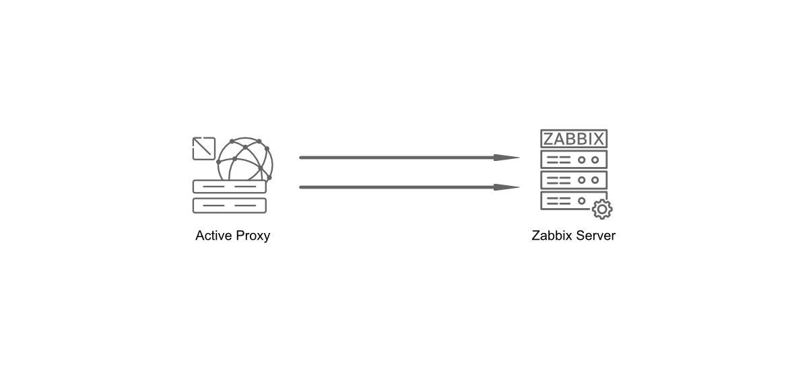
3.1 Active proxy communication
Passive proxy
In contrast to an active proxy, a proxy in passive mode will have its operational settings controlled by the Zabbix server.
Hence, configuring passive proxies requires changes in in both the Zabbix server and the Zabbix proxy configuration files as it is now the server that controls when and how proxy data is requested by making use of pollers.
The most important setting we can find back in the proxy configuration file are:
ProxyMode:1- Sets the proxy in 'Passive' modeServer:IP or DNS of the Zabbix serverProxyOfflineBuffer: How long we like to keep data in the DB (in hours) if we can't reach the Zabbix server.ProxyLocalBuffer: How long we like to keep data in the DB (in hours) even when it is already sent to the Zabbix server.
And finally the config settings we need to change on our Zabbix server:
StartProxyPollers: The number of pollers to contact proxies.ProxyConfigFrequency: ReplacesConfigFrequencyand defines how often Zabbix server will sent configuration changes to all proxies.ProxyDataFrequency: How often Zabbix server will request monitored data from our proxies.
Tip
It is not required for StartProxyPollers to be equal to the number of
passive proxies you have as one poller can poll multiple proxies. The
recommended value however depends on your environment and workload. If you
have multiple passive proxies and experience delays in configuration updates
or incoming item values, you may increase this value. However, it is a good
practice to start with 1, monitor the performance and adjust in accordance.
Zabbix provides out-of-the-box templates for monitoring Zabbix server and
Zabbix proxies internal metrics. Make sure to use them and closely watch
the value of the zabbix[proxy_history] item on the proxies which represents
the number of values the proxy has received that are yet to be sent to the
Zabbix server.

3.2 Passive proxy communication
Proxy runtime control options
Just like the Zabbix server our proxy supports runtime control options always
check latest options with the --help option. But here is a short overview of
options available to use.
zabbix_proxy --runtime-control housekeeper_execute-
Triggers the immediate execution of the Zabbix housekeeper process on the proxy. The housekeeper is responsible for cleaning up outdated data (e.g., old history, trends, or events) according to the configured retention periods in Zabbix. This command forces the housekeeper to run now, instead of waiting for its scheduled interval.
zabbix_proxy --runtime-control log_level_increase=target-
Increases the log verbosity level for a specific target process (e.g., by type like
configuration syncer,housekeeper,icmp pinger, by type and number likepoller,3or by PID). This is useful for debugging or troubleshooting, as it provides more detailed log output for the specified target. For a full list of available targets, check the man-page ofzabbix_proxy. Example:log_level_increase="http poller"would make http poller-related logs more verbose. zabbix_proxy --runtime-control log_level_decrease=target-
Decreases the log verbosity level for a specific target, reducing the amount of log output generated. This is helpful to lower noise in logs after debugging or to optimize performance by reducing I/O overhead. Example:
log_level_decrease=trapper,2would reduce the verbosity of trapper-related logs of the second trapper process. zabbix_proxy --runtime-control snmp_cache_reload-
Forces the proxy to reload its SNMP cache. This is useful if you’ve made changes to SNMP configurations (e.g., updated community strings, OIDs, or device IPs) and want the proxy to immediately pick up the new settings without restarting the entire service.
zabbix_proxy --runtime-control diaginfo=section-
Generates diagnostic information for a specific section of the proxy’s operation. This is typically used for troubleshooting or performance analysis. The section parameter can target areas like historycache, preprocessing or locks. Example:
diaginfo=preprocessingwould provide detailed statistics about the preprocessing manager.
Proxy firewall
Our proxies work like small Zabbix servers so when it comes to the ports to connect to agents, SNMP, ... nothing changes, all ports need to be configured the same as you would on a Zabbix server.
When it comes to port for the proxy it depends on our proxy being active or passive.
- Active Proxy: Zabbix server needs to have port
10051/tcpopen so proxy can connect. - Passive Proxy: Needs to have port
10051/tcpopen on the proxy so that theservercan connect to the proxy.
Do note that for an active Zabbix Agent or Zabbix Sender to communicate with your proxy,
wether it is an active or a passive one, this will require port 10051/tcp to be
open on your proxy server:
Active and Passive proxies
Whether you want to install an Active proxy or a Passive one, much of the installation and configuration steps are the same.
Zabbix GUI configuration
There are 2 things we need to do when we like to setup a Zabbix proxy and one of
those steps is adding the proxy in the frontend of Zabbix. So from the menu let's select
Administration => Proxies and click in the upper right corner on Create proxy.
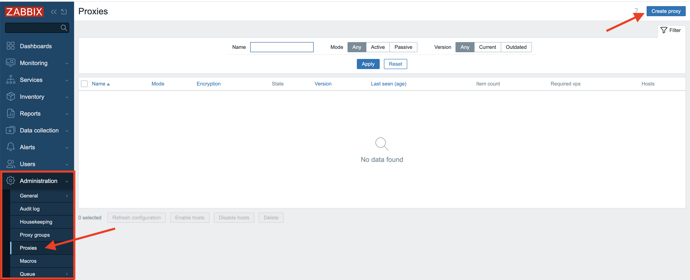
3.3 Create proxy
Once pressed, a new modal form will pop-up where we need to fill in some information.
Active proxy
For active proxies we only need to enter the Proxy name field. Here we will enter
ProxyA to remind us this will be an active proxy.
Don't worry about the other fields we will cover them later. In the Description
field you could enter some text to make it even more clear that this is an active proxy.
Note
For Zabbix active proxies, you only need to specify the hostname during configuration. This hostname acts as the unique identifier that the Zabbix server uses to distinguish between different active proxies and manage their data correctly.

3.4 New proxy
Passive proxy
For the passive proxy we will enter ProxyP as Proxy name but now we also need
to specify the Interface field. Here we add the IP of the host where our proxy
runs on. You also notice that we use the same port
10051 as the Zabbix server to communicate with our proxy.
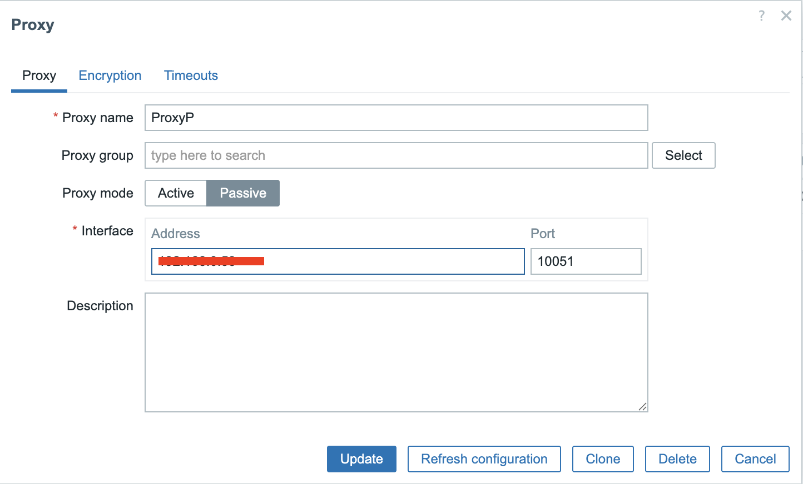
3.5 New passive proxy
Installing the proxy
Next up, we need to get the Zabbix proxy software onto a system that will function as Zabbix Proxy. Set up a new system or VM and make sure it meets the requirements as outlined in the Getting Started: Requirements chapter.
As the Zabbix proxy is actually a small Zabbix server, we also need to make sure the system is prepared for Zabbix as outlined in Preparing the server for Zabbix.
Now that your system is ready and knows where to find the Zabbix software packages, we can actually install the Zabbix Proxy software. It's pretty simple, but there's one thing we need to decide upfront. Zabbix proxies need a place to store their information, and they can use one of three options: MySQL/MariaDB, PostgreSQL, or SQLite3.
We will only cover SQlite as MySQL and PostgreSQL are basically already covered in the Zabbix components and installation: Database chapter.
Note
The only thing that is a bit different when you setup a MySQL or PostgreSQL database for use with a Zabbix Proxy instead of a Zabbix Server are the scripts you will need to setup the DB structure.
- For MySQL/MariaDB they are located in
/usr/share/zabbix/sql-scripts/mysql/proxy.sql. - For PostgreSQL they can be found in
/usr/share/zabbix/sql-scripts/postgresql/proxy.sql.
Install zabbix-proxy-sqlite3
Red Hat
SUSE
Ubuntu
Tip
If you want to use MySQL or PostgreSQL then you can use the package zabbix-proxy-mysql
or zabbix-proxy-pgsql depending on your needs.
Configuring the proxy
Now that we have installed the required packages we still have to do a few configuration changes.
Just like with the Zabbix server (or agent for that matter), the configuration file offers an option to include additional configuration files for custom parameters. In general, and especially in a production environment, it's often best to avoid altering the original configuration file directly. Instead you can create and include separate configuration files for any additional or modified parameters.
On SUSE 16 and later, this feature is already enabled and configured by default
in /usr/etc/zabbix/zabbix_proxy.conf.
On other distributions, you may need to enable it manually in
/etc/zabbix/zabbix_proxy.conf.
To enable this feature, ensure the next line exists and is not commented (with a
# in front of it):
The path /etc/zabbix/zabbix_proxy.d/ should already be created by the installed
package, but ensure it really exists.
Now we wil create a custom configuration file general.conf in this /etc/zabbix/zabbix_proxy.d/
directory that will hold some general proxy settings:
-
The first option we will have to set is
ProxyMode:- Set this to
0for an Active proxy. - Set this to
1for a Passive proxy.
- Set this to
-
The other option that is important is the option
Serverwhich defaults to127.0.0.1, so we need to replace this with the IP or DNS name of our Zabbix Server.
Note
You can fill in multiple servers here in case you have more than one Zabbix Server
connecting to your proxy. Also the port can be added here in case your server
listens on another port then the standard port 10051. Just be careful to not
add the IP and DNS name for the same server as this can return double values.
-
Another important option is
Hostname, especially on an Active proxy. Remember in our frontend we gave our Active proxy the nameProxyA, so now we have to fill in the exact same name here for hostname. Just like a Zabbix agent in active mode Zabbix server will use the name as a unique identifier.\ For a passive proxy this option matters less, but for clarity it is best to keep it the same:ProxyPin our case. -
On an Active proxy you may also consider setting
ProxyConfigFrequencyandDataSenderFrequencyto fine-tune communication with the Zabbix server, but generally speaking, the defaults should suffice. -
Other options to consider are
ProxyOfflineBufferandProxyLocalBufferto make sure the proxy can keep up with Zabbix server outages and the amount of monitored data it ingests.
The general.conf file should now look at least something like this:
To configure the database settings, create a dedicated configuration file at
/etc/zabbix/zabbix_proxy.d/database.conf. This file will contain the database
connection parameters.
For SQLite3 implementations, only the DBName parameter requires configuration, specifying the path to the database file. The Zabbix Proxy will automatically create and utilize this database file upon its initial startup.
You can choose any location for the database file, however you must make sure the directory exists and is writable by the Zabbix proxy process.
In our example, we chose the default home-dir of the zabbix-user as configured
by the Zabbix packages. You can check the home dir of the user on your host using
the getent passwd command:
Check default homedir of user zabbix
Check if the directory exists with correct permissions and SELinux context:
Check existence of zabbix home-directory
If the directory does not exist, is not owned by user zabbix or is missing the
SELinux label zabbix_var_lib_t, then you will need to correct this:
Create zabbix home-dir
Tip
See Advanced security: SELinux chapter for more details about SELinux and Zabbix.
MariaDB/MySQL or PostgreSQL as database for Zabbix proxy
If you chose to use MariaDB/MySQL or PostgreSQL, please refer to Installing the Zabbix server for the required database
settings you will need to set in the /etc/zabbix/zabbix_proxy.d/database.conf-file.
Tip
A list of all configuration options can be found in the Zabbix documentation. https://www.zabbix.com/documentation/current/en/manual/appendix/config/zabbix_proxy
A notable configuration parameter that was added in 7.0 is ProxyBufferMode which
determines how collected monitoring data is stored by the proxy before it is forwarded to
the Zabbix server.
Possible buffer modes:
disk- Disk buffer (default for existing installations prior to Zabbix 7.0)-
All data is written to the Zabbix Proxy database immediately before it is sent to the Zabbix server. In case of a proxy or system crash, all data is retained and will be sent to the Zabbix server as soon as the proxy is started again.
This is slower due to database I/O but is highly reliable.
memory- Memory buffer-
Data is stored in RAM and is not written to disk. This makes sure the data is sent to the Zabbix server as quickly as possible as there is no I/O wait time for the database involved. Downside is that when the proxy or the system crashes when the proxy still has data in the buffer, not yet received by the server, that data will be lost. Also when the RAM buffer overflows (
ProxyMemoryBufferSize), possibly due to a sudden burst of incoming items or the Zabbix server being unavailable for some time, older data will be removed from the buffer before it is sent to the Zabbix server. hybrid- Hybrid buffer (default for new installations since Zabbix 7.0)-
Data is primarily stored in RAM but is automatically written to the database when the memory buffer is full, the data is too old or when the proxy is stopped. This makes sure that data is preserved in case the Zabbix server is unreachable for a longer period or when there are bursts of many incoming items and hereby balances speed and reliability.
Warning
In Proxies that where installed before 7.0 the data was first written to
disk in the database and then sent to the Zabbix server. For these installations
when we upgrade this remains the default behavior after upgrading to Zabbix
7.x or higher. It's now recommended for performance reasons to use the new
setting hybrid and to define the ProxyMemoryBufferSize.
Once you have made all the changes you need in the config file besides the ones
we have covered, we only need to enable the service and start our proxy.
Of course don't forget to open the firewall port 10051 on your Zabbix server
side for the active proxy.
If all goes well we can check the log file from our proxy and we will see that Zabbix has created the database by itself.
View Zabbix proxy logs
localhost:~> sudo tail -f /var/log/zabbix/zabbix_proxy.log`
11134:20250519:152232.419 Starting Zabbix Proxy (active) [Zabbix proxy]. Zabbix 7.4.0beta2 (revision 7cd11a01d42).
11134:20250519:152232.419 **** Enabled features ****
11134:20250519:152232.419 SNMP monitoring: YES
11134:20250519:152232.419 IPMI monitoring: YES
11134:20250519:152232.419 Web monitoring: YES
11134:20250519:152232.419 VMware monitoring: YES
11134:20250519:152232.419 ODBC: YES
11134:20250519:152232.419 SSH support: YES
11134:20250519:152232.419 IPv6 support: YES
11134:20250519:152232.419 TLS support: YES
11134:20250519:152232.419 **************************
11134:20250519:152232.419 using configuration file: /etc/zabbix/zabbix_proxy.conf
11134:20250519:152232.419 cannot open database file "/var/lib/zabbix/zabbix_proxy.db": [2] No such file or directory
11134:20250519:152232.419 creating database ...
11134:20250519:152232.478 current database version (mandatory/optional): 07030032/07030032
11134:20250519:152232.478 required mandatory version: 07030032
In case of the active proxy, we are now ready. Going back to our frontend we should be able to see that our proxy is now online. Zabbix will also show the version of our proxy and the last seen age.

3.6 Active proxy configured
For the passive proxy however, you will notice in the frontend that nothing seems to be working at all even when we have configured everything correctly on our proxy.
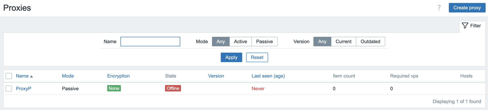
3.7 Proxy not working
The explanation is rather easy as we run a passive proxy, the Zabbix server needs to poll our proxy. But we did not yet configure our Server to do that currently. So next step is to add the needed proxy pollers in our server configuration.
Edit or create a new configuration file in /etc/zabbix/zabbix_server.d/ on the
Zabbix Server machine to add the required StartProxyPollers setting.
And restart the Zabbix Server process.
Now going back to the frontend, we will see that our passive proxy becomes available. If it's not green give it a few seconds or check all steps again and verify your log files.

3.8 Proxy working
You are now ready.
For your monitored hosts, this proxy will behave like the
Zabbix server. Hence, all hosts you want to be monitored by the proxy will now
have to be configured to have their Server and/or ServerActive configuration
values set to the IP/hostname of this proxy instead of the Zabbix server.
Conclusion
This chapter has demonstrated the indispensable role of Zabbix proxies in building robust, scalable, and distributed monitoring infrastructures. We've explored the fundamental distinction between active and passive proxy modes, highlighting how each serves different deployment scenarios and network topologies. Understanding their individual strengths, from simplified firewall configurations with active proxies to the server-initiated control of passive proxies, is crucial for optimal system design.
We delved into the comprehensive settings that govern proxy behavior, emphasizing how proper configuration of parameters like proxy polling intervals and data buffers, directly impacts performance and data accuracy. The evolution of data storage mechanisms within the proxy, from purely memory-based approaches to the flexible options of disk and hybrid storage, empowers administrators to finely tune resource utilization and data persistence based on their specific needs and the volume of monitored data.
Finally, we examined the critical advancements in configuration synchronization, particularly the significant improvements introduced with Zabbix 7.0. The shift towards more efficient and streamlined config sync processes, moving beyond the limitations of earlier versions, underscores Zabbix's continuous commitment to enhancing operational efficiency and simplifying large-scale deployments.
In essence, Zabbix proxies are far more than simple data forwarders; they are intelligent intermediaries that offload significant processing from the central Zabbix server, reduce network traffic, and enhance the resilience of your monitoring solution. By carefully selecting the appropriate proxy type, meticulously configuring its settings, and leveraging the latest features in data storage and configuration management, you can unlock the full potential of Zabbix to monitor even the most complex and geographically dispersed environments with unparalleled efficiency and reliability. The knowledge gained in this chapter will be instrumental in designing and maintaining a Zabbix infrastructure that is not only robust today but also adaptable to future monitoring challenges.
Questions
- What is the fundamental difference between an active proxy and a passive proxy in terms of who initiates the connection?
- How does a network firewall configuration differ for active vs passive proxies when separated from the server by a network firewall?
Useful URLs
Running Proxies as containers
As discussed in the previous section, Zabbix proxies offer a lightweight and efficient solution for distributed monitoring. Leveraging SQLite as their backend database, they are inherently flexible and portable, making them well-suited for deployment in containerized environments. This chapter provides a step-by-step guide on deploying a Zabbix proxy within a container, outlining configuration options and best practices for optimal performance and maintainability.
Setting up containers
For this setup, you will need a virtual machine (VM) with Podman installed to deploy the Zabbix proxy container. This container will then be configured to communicate with your Zabbix server.
Refer to the Preparing the system for Zabbix chapter for instructions on preparing your system for running containers using Podman.
Add the proxy to the zabbix frontend

3.9 Add proxy to frontend
To keep the configuration straightforward, we will deploy an active Zabbix proxy. In this case, only two parameters need to be configured: the proxy's hostname (as defined in the Zabbix frontend) and the proxy’s IP address for communication with the Zabbix server.
Prepare the Proxy config
The next step is to create a .container unit file for our Quadlet setup. This
file should be placed in the directory ~/.config/containers/systemd/. For example,
we will create a file named zabbix-proxy-sqlite.container, which will define the
configuration for running the Zabbix proxy container under SystemD using Podman.
Ensure you are logged in as user podman.
Creation of a .container systemd unit file
The container image for the Zabbix proxy using SQLite can be sourced from Docker Hub. Specifically, we will use the image tagged 7.0-centos-latest, which is maintained by the official Zabbix project. This image can be found at:
https://hub.docker.com/r/zabbix/zabbix-proxy-sqlite3/tags?name=centos
A complete list of available image tags, including different versions and operating system bases, is available on the image’s main page:
https://hub.docker.com/r/zabbix/zabbix-proxy-sqlite3
For our purposes, the 7.0-centos-latest tag provides a CentOS-based container image that is well-suited for LTS environments, and it includes all necessary components to run the Zabbix proxy with SQLite.
In addition to the .container unit file, we also need to create an environment
file that defines the configuration variables for the container. This file must
reside in the same directory as the .container file: ~/.config/containers/systemd/
and should be named ZabbixProxy.env, as referenced in our .container configuration.
This environment file allows us to override default container settings by specifying environment variables used during container runtime. The list of supported variables and their functions is clearly documented on the container's Docker Hub page:
https://hub.docker.com/r/zabbix/zabbix-proxy-sqlite3
These variables allow you to configure key parameters such as the proxy mode, server address, hostname, database settings, and logging options, providing a flexible and declarative way to tailor the proxy’s behavior to your environment.
Let's create the file ~/.config/containers/systemd/ZabbixProxy.env and add the
following content.
~/.config/containers/systemd/ZabbixProxy.env
With our configuration now complete, the final step is to reload the systemd user daemon so it recognizes the new Quadlet unit. This can be done using the following command:
If everything is set up correctly, systemd will automatically generate a service
unit for the container based on the .container file. You can verify that the
unit has been registered by checking the output of systemctl --user list-unit-files:
Verify if the new unit is registered correctly
You can now start the container using the systemctl --user start command.
To start the container, use the following command (replacing the service name if
you used a different one):
This command may take a few minutes as it wil download the required Zabbix Proxy container from the docker registry.
To verify that the container started correctly, you can inspect the running containers with:
Inspect running containers
Take note of the CONTAINER ID—in this example, it is b5716f8f379d. You can
then retrieve the container's logs using:
Retrieve container logs
Whereb5716f8f379d is the CONTAINER ID of your container
On some distributions, you can also view the logs directly through SystemD:
This command will return the startup and runtime logs for the container, which are helpful for troubleshooting and verifying that the Zabbix proxy has started correctly.
Upgrading our containers
At some point, you may be asking yourself: How do I upgrade my Zabbix containers? Fortunately, container upgrades are a straightforward process that can be handled either manually or through automation, depending on your deployment strategy.
Throughout this book, we've been using the image tag 7.0-centos-latest, which always
pulls the most up-to-date CentOS-based Zabbix 7.0 image available at the time.
This approach ensures you are running the latest fixes and improvements without
specifying an exact version.
Alternatively, you can opt for version specific tags such as centos-7.0.13, which
allow you to maintain strict control over the version deployed. This can be helpful
in environments where consistency and reproducibility are critical.
In the following sections, we will explore both approaches: using the latest
tag for automated updates and specifying fixed versions for controlled environments.
Upgrading manually
If you're running your Zabbix container using a floating tag such as :latest or
:trunk-centos, upgrading is a simple and efficient process. These tags always
point to the most recent image available in the repository.
To upgrade:
Thanks to our Quadlet integration, systemd will handle the rest automatically:
The currently running container will be stopped.
A new container instance will be started using the freshly pulled image.
All configuration options defined in the associated .container file will be reapplied.
This approach allows for quick updates with minimal effort, while still preserving
consistent configuration management through systemd.
Upgrading When Using a Fixed Image Tag
If your container is configured to use a fixed image tag (e.g., 7.0.13-centos)
rather than a floating tag like :latest or :trunk, the upgrade process involves
one additional step: manually updating the tag in your .container file.
For example, if you're running a user-level Quadlet container and your configuration
file is located at ~/.config/containers/systemd/zabbix-proxy-sqlite.container:
Manually updating the tag
You'll need to edit this file
and update the Image= line. For instance, change:
to:
Once the file has been updated, apply the changes by running:
This tells systemd to reload the modified unit file and restart the container with the updated image. Since you're using a fixed tag, this upgrade process gives you full control over when and how new versions are introduced.
Upgrading automatically
When using floating tags like :latest or :trunk-centos for your Zabbix container
images, Podman Quadlet supports automated upgrades by combining them with the
AutoUpdate=registry directive in your .container file.
This setup ensures your container is automatically refreshed whenever a new image is available in the remote registry without requiring manual intervention.
Example Configuration
.container file
In this example, the Image points to the trunk-centos tag, and AutoUpdate=registry
tells Podman to periodically check the container registry for updates to this tag.
How the Auto-Update Process Works
Once configured, the following steps are handled automatically:
-
Image Check The systemd service
podman-auto-updateis triggered by a timer (usually daily). It compares the current image digest with the remote image's digest for the same tag. -
Image Update If a new version is detected:
- The updated image is pulled from the registry.
- The currently running container is stopped and removed.
- A new container is created from the updated image.
- Configuration Reuse
The new container is launched using the exact same configuration defined in
your
.containerfile, including environment variables, volume mounts, ports, and networking.
This approach provides a clean, repeatable way to keep your Zabbix proxy (or other components) current without direct user intervention.
Enabling the Auto-Update Timer
To ensure that updates are applied regularly, you must enable the Podman auto-update timer.
This activates a systemd timer that periodically invokes podman-auto-update.service.
When to Use This Approach
AutoUpdate=registry is particularly useful in the following scenarios:
- Development or staging environments, where running the latest version is beneficial.
- Non-critical Zabbix components, such as test proxies or lab deployments.
- When you prefer a hands-off update strategy, and image stability is trusted.
Warning
This setup is not recommended for production environments without a proper rollback
plan. Floating tags like :latest or :trunk-centos can introduce breaking
changes unexpectedly. For production use, fixed version tags (e.g. 7.0.13-centos)
are generaly recommended since they offer greater stability and control.
Conclusion
In this chapter, we deployed a Zabbix active proxy using Podman and SystemD
Quadlets. We configured SELinux, enabled user lingering, and created
both .container and .env files to define proxy behavior. Using Podman in rootless
mode ensures improved security and system integration. SystemD management makes
the container easy to control and monitor. This setup offers a lightweight, flexible,
and secure approach to deploying Zabbix proxies. It is ideal for modern environments,
especially when using containers or virtualisation. With the proxy running, you're
ready to extend Zabbix monitoring to remote locations efficiently.
Questions
- What are the main advantages of using Podman over Docker for running containers on Red Hat-based systems?
- Why is the
loginctl enable-lingercommand important when using SystemD with rootless Podman containers? - What is the purpose of the
.envfile in the context of a Quadlet-managed container? - How do SELinux policies affect Podman container execution, and how can you configure them correctly?
- How can you verify that your Zabbix proxy container started successfully?
- What is the difference between an active and passive Zabbix proxy?
Useful URLs
Proxy groups
Zabbix Proxy Groups: High Availability and Load Balancing
Zabbix Proxy Groups provide a robust foundation for enterprise-grade distributed monitoring, enabling automatic High Availability (HA) and Load Balancing (LB) across multiple proxies. Instead of binding a monitored host to a single proxy, the host is assigned to a Proxy Group. The Zabbix server then determines dynamically and continuously which proxy within the group is responsible for monitoring that host.
This approach ensures uninterrupted monitoring during proxy failures and maintains an even workload across the proxy infrastructure.
Overview and Core Concepts
Proxy groups operate under the control of the Zabbix Server’s Proxy Group Manager, which continuously evaluates proxy status, host assignments, and overall group health. Two major capabilities define this feature: automatic failover and workload balancing.
1. High Availability (HA) Through Automatic Failover
Failover Mechanism: If a proxy stops communicating with the Zabbix server and exceeds the configured Failover period, it is marked Offline. The Proxy Group Manager then immediately reassigns all hosts monitored by that proxy to the remaining online proxies in the group.
Outcome: Monitoring continues with minimal disruption and without manual intervention.
2. Load Balancing Through Host Redistribution
Balancing Mechanism: The Zabbix server evaluates the number of hosts assigned to each proxy. # Proxy groups
Zabbix Proxy Groups: High Availability and Load Balancing
Zabbix Proxy Groups provide a robust foundation for enterprise-grade distributed monitoring, enabling automatic High Availability (HA) and Load Balancing (LB) across multiple proxies. Instead of binding a monitored host to a single proxy, the host is assigned to a Proxy Group. The Zabbix server then determines dynamically and continuously which proxy within the group is responsible for monitoring that host.
This approach ensures uninterrupted monitoring during proxy failures and maintains an even workload across the proxy infrastructure.
Overview and Core Concepts
Proxy groups operate under the control of the Zabbix Server’s Proxy Group Manager,Load balancing is triggered if an imbalance is detected, defined by two simultaneous conditions:
- A difference of greater than 10 hosts, and
- The number of hosts assigned to a proxy is double the group average or more.
Redistribution Logic:
- Compute the average hosts per proxy.
- Proxies with excess hosts move them into an unassigned pool.
- Proxies with a deficit receive hosts from this pool.
Example:
| Proxy Host Count | Group Average | Triggered? | Explanation |
|---|---|---|---|
| 100 | 50 | Yes | Host count is double the average (2√ó) and difference is 50 (>10). |
| 60 | 50 | No | Difference is 10 (not >10); not sufficient to trigger rebalancing. |
| 40 | 50 | No | Deficit of 10; insufficient to trigger balancing. |
| 25 | 5 | Yes | Proxy has 5√ó the average (‚â•2√ó) and difference is 20 (>10). |
Advanced Operational Detail
The following technical details govern the behavior of the Proxy Group Manager and agents.
Internal Management and Communication
| Mechanism | Description |
|---|---|
| Communication Flow | Proxies communicate only with the Proxy Group Manager on the Zabbix server. Proxies do not communicate with each other. |
| Group Membership | Each proxy can belong only to a single proxy group. |
| State Change Trigger | Proxy and proxy group states change only after the configured failover period has expired. |
| Shared Knowledge | All proxies in the group are informed by the server about the status and addresses of other proxies in the same group. |
Load Balancing Time Window
- If a proxy group is flagged as unbalanced, the Proxy Group Manager will wait until the grace period of $10 \times$ the failover delay has expired.
- This grace period prevents redistribution based on temporary spikes. If the imbalance persists, host redistribution is performed.
Agent Configuration Rules
Passive Agents (Server=)
A Zabbix agent in passive mode must accept connections from all members of its proxy group.
* Configure the Server parameter with a comma-separated list of all node IP addresses or DNS names.
* It is also possible to specify entire network segments if appropriate.
Active Agents (ServerActive=)
The active agent (v7.0+) will dynamically learn the optimal proxy. It is configured in one of two ways:
- Specify Multiple Proxies: Specify multiple proxy addresses using semicolons. Any proxy group member the agent connects to can redirect the agent to the currently assigned proxy.
- Specify Zabbix Server: Specify the Zabbix server address instead of the proxy addresses. The Proxy Group Manager will redirect the agent to the assigned proxy. The active agent will then add all known proxies to its runtime
ServerActiveparameter.
Handling Proxy Network Loss
- If a proxy loses its network connection to the Zabbix server, the Proxy Group Manager will automatically reassign the proxy's hosts to other online proxies.
- The disconnected proxy will mark itself as offline and will redirect any active agents attempting to connect to it toward the other proxies in the group.
Configuration Workflow
Deploying proxy groups effectively involves three main steps.
Step 1: Create the Proxy Group
In the Zabbix frontend:
- Navigate to Administration ‚Üí Proxy groups.
- Click Create proxy group.
| Parameter | Description | Recommendation |
|---|---|---|
| Name | Descriptive group name (e.g., EMEA_Prod_Proxies). |
Use consistent naming tied to region, function, or environment. |
| Failover period | Maximum downtime allowed before proxy becomes Offline and failover is triggered. | Default: 1m. Supports s, m, h. |
| Minimum number of proxies | Minimum required online proxies for the group to be considered Online. | Use $N-1$ if you want one proxy failure tolerance. |
| Proxies | Members participating in load sharing and HA. | Add all intended proxies. |
Step 2: Assign Hosts to the Proxy Group
Hosts must be explicitly assigned to the proxy group:
- Select hosts in Hosts.
- Use Mass Update.
- Set Monitored by proxy = <Proxy Group Name>.
Only hosts assigned to the group are eligible for automated failover and load balancing.
Architecture Diagram
flowchart LR
subgraph Server["Zabbix Server"]
PGM["Proxy Group Manager"]
end
subgraph ProxyGroup["Proxy Group"]
PX1["Proxy 1"]
PX2["Proxy 2"]
PX3["Proxy 3"]
end
subgraph Hosts["Monitored Hosts"]
H1["Host A"]
H2["Host B"]
H3["Host C"]
H4["Host D"]
end
PGM --> PX1
PGM --> PX2
PGM --> PX3
PX1 <---> H1
PX2 <---> H2
PX3 <---> H3
PX2 <---> H4
%% Failover arrows
PX1 -.Failover/Load Balancing.-> PX2
PX2 -.Failover/Load Balancing.-> PX3
Important Considerations and Limitations
- Version Requirements: All proxies must run Zabbix 7.0 or later and match the server version.
- Firewall Requirements: Agents must be able to communicate with every proxy in the group.
- SNMP Traps Not Supported: Proxy groups cannot process SNMP traps. Traps must be routed to a dedicated, non-grouped proxy.
- External Dependencies Must Be Identical: If proxies use external check scripts, ODBC configuration, or third-party integrations, ensure all proxies have identical configurations.
- VMware Monitoring Impact: VMware hypervisors may be distributed across proxies, and each proxy will retrieve cached data from vCenter, increasing load.
Some Good Practices
- Use at least three proxies for stable HA and load balancing.
- Ensure symmetric configuration across all proxies (scripts, credentials, ODBC drivers, time sync).
- Monitor proxy performance using built-in templates to understand load and redistribution frequency.
- Keep failover periods short for high-criticality environments.
- Test failover events regularly in non-production environments.
Practical Example
This example utilizes a single Zabbix Server and a three node Proxy Group to provide superior High Availability (HA) and load balancing for a large remote location. This configuration allows for failure tolerance and demonstrates mixed Active/Passive monitoring modes.
You don't need multiple virtual machines but of course we won't stop you if you
want too. :) An easy alternative is containers. Or running proxies with different
configuration files manually from the command line with the option -c or --config-file.
If you don't know how have a look at our previous chapter Running proxies as containers.
Environment Overview
| Component | Quantity | Role |
|---|---|---|
| Zabbix Server | 1 (zbx-server-main) | Central hub for all collected data. |
| Zabbix Proxies | 3 (zbx-proxy-A1, A2, A3) | Collect data locally at the branch office. |
| Hosts | 300 | Monitored devices in the branch office. |
| Monitoring Group | Branch-A_HA_Group | The Zabbix entity responsible for distributing the |
| 300 hosts across the 3 proxies for redundancy. |
Zabbix Proxy Configuration File (zabbix_proxy.conf)
The IPs are just examples, adapt them to your own setup.
| Parameter | zbx-proxy-A1 (Active) | zbx-proxy-A3 (Passive) | zbx-proxy-A2 (Active) | Critical Note |
|---|---|---|---|---|
| IP | 10.0.0.1 | 10.0.0.2 | 10.0.0.3 | IP/DNS of the the Proxy server. |
| Hostname | zbx-proxy-A1 | zbx-proxy-A3 | zbx-proxy-A2 | Must match the Proxy Name defined in the Zabbix Frontend. |
| ProxyMode | 1 | 0 | 1 | 1 = Active (proxy connects to server). 0 = Passive (server connects to proxy). |
| DBName | /tmp/proxy_a1.db | /tmp/proxy_a3.db | /tmp/proxy_a2.db | Each proxy must use a unique database file when use SQlite3 . |
Zabbix Frontend Setup (Administration)
Follow these steps in the Zabbix Web Interface (Administration section) to create and assign the Proxy Group.
Define Individual Proxies (Administration -> Proxies)
- Navigate to
Administration->Proxies. - Click
Create proxy. - Define all three proxies one by one:
- Proxy name: Enter the
Hostname(e.g.,zbx-proxy-A1). - Proxy mode: Select Active (1) for A1 and A2, and Passive (0) for A3.
- Proxy group: Leave as None for now.
- Proxy name: Enter the
- Click Add.
 ch03 Add proxy
ch03 Add proxy
Create the Proxy Group (Administration -> Proxy groups)
- Navigate to
Administration->Proxy groups. - Click
Create proxy group. - Configure the group parameters for High Availability:
- Name:
Branch-A_HA_Group - Minimum proxies: Set to 2. This ensures if only one proxy remains, the group will enter a Degrading state, preventing the single remaining proxy from being overloaded.
- Failover period:
1m(The time the server waits before redistributing hosts from an offline proxy).
- Name:
 ch03 Create Proxy groups
ch03 Create Proxy groups
Assign Proxies to the Group (Administration -> Proxies)
- Go back to
Administration ->Proxies`. - Edit each proxy (
zbx-proxy-A1,zbx-proxy-A2, andzbx-proxy-A3). - Change the Proxy group dropdown from
NonetoBranch-A_HA_Group. - Define
Address for active agentsadd the IP of the proxy. - Click
Update.
 ch03 Add proxy to proxy group
ch03 Add proxy to proxy group
 ch03 All proxies linked with a proxy group
ch03 All proxies linked with a proxy group
Zabbix Agent Configuration (zabbix_agentd.conf)
To ensure hosts can be monitored by any proxy in the group, the Zabbix Agent
configuration on the 300 hosts must be aware of all proxy IP addresses. Don't
worry we will not install 300 hosts. Just one agent is fine, we will use a
passive agent and just create 300 dummy agents in the frontend.
| Parameter | Configuration Value Example | Rationale for HA/Load Balancing |
|---|---|---|
| Server | "IP_A1,IP_A2,IP_A3,10.0.0.1" | "Passive Checks: Allows the host to accept |
| incoming connections (checks) from any IP address in the group (and the Server, | ||
| for redundancy or occasional checks)." | ||
| ServerActive | IP_A1;IP_A2;IP_A3 | "Active Checks: The agent will attempt to |
| send data to the first proxy in the semi-colon list. If that fails, it automatically | ||
| tries the next one, providing agent-side failover." | ||
| Hostname | [ Not too important ] | We will use passive agents to the name is not important. |
As a final step you now have to create 300 hosts in the frontend and select
Monitored by proxy field to the proxy group : Branch-A_HA_Group.
Just here is a script for you that will handle those things. Just create an API
token for the Zabbix Administrator account or any account with enough privileges
and fill in the API token and the URL of the zabbix frontend. Make the script
executable chmod +x create_hosts.py or whatever you used as name for the
script. Verify also the Host_group_id, Template_id and the Proxy_group_id.
This can be done by looking at the URL when clicking on them.
Note
For this script to work you need to have python3 and you probably need to install pip and the requests module.
#!/bin/python3
import requests
import json
import random
# --- Configuration ---
ZABBIX_URL = "http://<Server URL>/api_jsonrpc.php"
AUTH_TOKEN = "<API TOKEN>" # Replace with your Zabbix API token
HOST_COUNT = 300
HOST_GROUP_ID = "2" # Replace with the actual ID of your target Host Group (e.g., 'Branch A Servers')
TEMPLATE_ID = "10561" # Replace with a common template ID (e.g., 'Template Module Zabbix agent')
PROXY_GROUP_ID = "1" # Replace with the actual ID of your 'Branch-A_HA_Group'
def api_call(method, params, id_val=1):
"""
Generic function to make a Zabbix API call for 7.2+.
- Token is passed via Authorization: Bearer header.
- 'auth' is NOT included in the JSON body anymore.
"""
headers = {
"Content-Type": "application/json-rpc",
"Authorization": f"Bearer {AUTH_TOKEN}",
}
payload = {
"jsonrpc": "2.0",
"method": method,
"params": params,
"id": id_val
}
try:
# using json= lets requests handle encoding
response = requests.post(ZABBIX_URL, json=payload, headers=headers, timeout=10)
response.raise_for_status()
return response.json()
except requests.exceptions.RequestException as e:
print(f"API Request Error on method {method}: {e}")
return None
def create_hosts():
"""Creates the bulk hosts using the host.create API method."""
print(f"Starting host creation for {HOST_COUNT} hosts...")
# --- AUTHENTICATION CHECK ---
auth_check_response = api_call(
"user.get",
{"output": ["username"]},
id_val=1000
)
if auth_check_response and 'result' in auth_check_response:
if auth_check_response['result']:
user_alias = auth_check_response['result'][0]['username']
print(f" Authenticated successfully as: {user_alias}")
else:
print(" Auth success, but no users returned. Check the token's permissions.")
return
elif auth_check_response and 'error' in auth_check_response:
print(f" Initial Authentication Error. Received: {auth_check_response['error']['data']}")
print("Please double-check your ZABBIX_URL and AUTH_TOKEN.")
return
else:
print(" Failed to establish connection for authentication check. Check ZABBIX_URL.")
return
# --- END AUTHENTICATION CHECK ---
hosts_created_count = 0
for i in range(1, HOST_COUNT + 1):
host_name = f"SIM-HOST-{i:03d}"
params = {
"host": host_name,
"name": host_name,
"groups": [{"groupid": HOST_GROUP_ID}],
"templates": [{"templateid": TEMPLATE_ID}],
# If you are using proxy groups in 7.x:
"proxy_groupid": int(PROXY_GROUP_ID),
"monitored_by": 2,
"interfaces": [{
"type": 1, # Zabbix Agent interface
"main": 1,
"useip": 1,
"ip": "127.0.0.1",
"dns": "",
"port": "10050"
}],
"status": 0 # enabled
}
response = api_call("host.create", params, id_val=i + 1)
if response and 'result' in response:
host_id = response['result']['hostids'][0]
print(f"‚úÖ Created host {host_name} (ID: {host_id})")
hosts_created_count += 1
elif response and 'error' in response:
print(f" Error creating {host_name}: {response['error']['data']}")
if "already exists" in response['error']['data']:
break
else:
print(f" Unknown API error creating {host_name}.")
break
print(f"\n--- Script Finished ---")
print(f"Total Hosts Created: {hosts_created_count}")
if __name__ == "__main__":
create_hosts()
 ch03 proxy groups
ch03 proxy groups
Troubleshooting Tips
| Symptom | Possible Cause | Resolution |
|---|---|---|
| Hosts remain on a failed proxy | Proxy is still within the Failover period OR proxy group is Offline. | Reduce Failover period in the group configuration. Ensure Minimum number of proxies is set correctly (e.g., $N-1$). |
| Load balancing does not occur | Host difference is below the imbalance threshold (less than 10 hosts difference or less than $2\times$ average). | This is expected behavior. The imbalance must exceed the $10$ host and $2\times$ factor rules. |
| Proxy not receiving new configuration | Proxy is running a version older than the Zabbix server. | Upgrade the proxy to match the Zabbix server's major version. |
| Active agents fail to report after failover | Incorrect ServerActive setting OR firewall blocks the redirected proxy. |
Ensure the agent can connect to every proxy IP address. Verify ServerActive includes all proxies or the Zabbix server IP. |
| SNMP devices not monitored | Proxy group is being used for SNMP Traps. | Proxy groups do not support SNMP traps. Use a dedicated SNMP trap proxy. |
Questions
- What is the minimum Zabbix version required for both the proxy and agent to fully support Proxy Groups, including Active checks?
- Describe the difference between the High Availability (HA) mechanism and the Load Balancing (LB) mechanism in Zabbix Proxy Groups. When does each occur?
- What are the two specific conditions that must be met to trigger automatic host redistribution (Load Balancing) within a proxy group?
- When configuring a Zabbix Agent for a host assigned to a proxy group, why must the
ServerActiveparameter list multiple proxy IPs or the Zabbix server IP? - What is the function of the
Minimum number of proxiessetting, and what happens when the number of online proxies drops below this value? - Why is it critical that external dependencies (like custom scripts or ODBC configurations) are identical across all proxies within the group?
Conclusion
Zabbix Proxy Groups significantly enhance the resilience and scalability of distributed monitoring environments. Through seamless failover and intelligent workload balancing, they allow enterprises to maintain consistent monitoring coverage even during proxy outages or uneven load distribution. When combined with proper agent configuration, firewall rules, and aligned proxy setups, proxy groups form a foundational component of modern Zabbix deployments.
Useful URLs
- https://www.zabbix.com/documentation/current/en/manual/distributed_monitoring
- https://www.zabbix.com/documentation/current/en/manual/distributed_monitoring/proxies/ha
- https://www.zabbix.com/documentation/current/en/manual/concepts/proxy
- https://www.zabbix.com/documentation/current/en/manual/config/items/zabbix_agent/config
Web services
This chapter explains what the Zabbix Web service component is why you may need or consider it, what the requirements are and finally how to install it..
What is the Zabbix web service?
The Zabbix web service is an optional component that can be deployed on the same server as the Zabbix server, proxy, frontend or on a separate server. The web service is responsible for handling certain tasks that require a headless browser.
Currently the Zabbix web service is primarily used for generating and sending scheduled reports, but there are plans to expand its functionality in future releases of Zabbix.
The actual usage of the Zabbix web service to generate reports is covered in the Scheduled reports chapter.

3.1 Zabbix web service overview
Zabbix web service requirements
The Zabbix web service requires a linux-based operating system and a headless Google Chrome or Chromium.
Google Chrome vs Chromium
Both Google Chrome and Chromium are supported by the Zabbix web service. However, Google Chrome is a proprietary browser developed by Google, while Chromium is an open-source project that serves as the basis for Google Chrome. Depending on your organization's policies and preferences, you may choose one over the other.
Known Chromium issue on Ubuntu 20-based distributions
There is a known issue on Ubuntu 20 where Zabbix web service will be unable
to start Chronium because the Ubuntu-packaged version of Chromium is not
allowed to use home directories outside of /home. However, by default, the
zabbix-user, configured by the Zabbix web service package, uses
/var/lib/zabbix as its home directory, which causes Chromium to fail to
start on such distributions.
The system you choose to install the Zabbix web service on should meet the requirements as outlined in the Getting Started: Requirements chapter and should have sufficient resources to run a headless browser. The exact resource requirements will depend on the number of reports you plan to generate and the complexity of those reports. As a general guideline, we recommend at least 2 CPU cores and 4 GB of RAM for a system that will be used to generate reports for a small to medium-sized Zabbix installation.
Installing Google Chrome or Chromium on your system will pull in additional dependencies, such as Qt libraries, audio/video codecs, OpenGL libraries, font rendering libraries, and others. Depending on how you installed your linux operating system, many of these dependencies are probably not yet installed on your system. All together, these dependencies may require up to 1 Gb of additional disk space on your system disk.
This may also be a reason to choose a separate system for the Zabbix web service installation, especially if you are installing Zabbix server or proxy on a minimal system and want to keep those systems clean and minimal.
Alternatively, you can also run the Zabbix web service as a container using Podman or Docker, which includes a headless browser in the container image and keep you host system clean of all those dependency packages.
Installing the Zabbix web service
The Zabbix web service can be installed using packages provided by Zabbix or can be run as a container using Podman or Docker. We will cover both methods in the chapter, starting with the package installation.
As with other Zabbix components, the Zabbix web service can be installed on the same system as the Zabbix server, proxy or frontend, or on a separate system. If you choose to install it on a separate system, ensure that the system meets the requirements as outlined in the Getting Started: Requirements.
Installing the Zabbix web service package
Before we can install the Zabbix web service package, we need to prepare the server for Zabbix installation as outlined in the Preparing the server for Zabbix chapters.
When the system is ready and know where to find the Zabbix software packages, we
can proceed with the installation of the Zabbix web service package. The package
is named zabbix-web-service and can be installed using the package manager of
your operating system.
Install zabbix-web-service package
Red Hat
SUSE
Ubuntu
As mentioned before, the Zabbix web service requires a headless Google Chrome or Chromium browser to be installed on the system. If you do not have it installed already, you can install it using the package manager of your operating system.
Install Chromium browser
To be able to install Chromium on Red Hat-based systems, you may need to install and enable the EPEL repository first. This is not required for Fedora.
Red Hat
To be able to install Chromium on SLES-based systems, you may need to install and enable the SUSE Package Hub repository first. This is not required for openSUSE.
SUSE
Ubuntu
Alternatively, you can also install Google Chrome by downloading the package from the Google Chrome website and installing it using the package manager of your operating system.
Configuring the Zabbix web service
Now that the Zabbix web service package and a headless browser are installed, we
need to configure the Zabbix web service to allow Zabbix server to make requests
to the web service. This is done by editing the /etc/zabbix/zabbix_web_service.conf
configuration file.
For now, the only configuration parameter that needs to be set is the AllowedIP
parameter, which defines the IP addresses that are allowed to connect to the
Zabbix web service. That is, if you have installed the web service on a separate
system than the Zabbix server or proxy:
Edit zabbix_web_service.conf
SUSE only:
On SUSE 16 and later, the configuration file is installed at /usr/etc/zabbix/zabbix_web_service.conf and needs to be copied to /etc/zabbix/ before editing:
Starting the Zabbix web service
Now that the Zabbix web service is installed and configured, we can start the service using the SystemD service manager.
After this, the Zabbix web service should be up and running and ready to accept connections on port 10053 (by default) from the Zabbix server.
Installing the Zabbix web service as a container
The Zabbix web service can also be run as a container using Podman or Docker. This method does not require a separate installation of a headless browser, as the container image already includes one. This reduces the number of extra packages you need to install on your system.
Before we can install and run the Zabbix web service container, we need to prepare the system for running containers as outlined in the Getting Started: Preparation chapter.
Once the system is ready for running containers, we can proceed with creating
a .container systemd unit file for the Zabbix web service container. This file
should be created in the ~/.config/containers/systemd/ directory of the user
podman (or whatever user you have chosen to run the containers as).
Ensure you are logged in as user podman.
Creation of a .container systemd unit file
The Zabbix web service container image is available on Docker Hub.
Specifically, we are using the image tagged 7.0-centos-latest in this example,
which is maintained by the Zabbix team and is based on CentOS.
Next, we need to create an environment file that will be used to configure the
Zabbix web service container. This file should be created in the same directory
as the .container unit file and should be named ZabbixWebService.env, as
referenced in the unit file above.
This environment file allows us to override default container settings by specifying environment variables used during container runtime. The list of supported variables and their functions is clearly documented on the container's Docker Hub page.
Creation of the environment file
With our configuration now complete, the final step is to reload the systemd user daemon so it recognizes the new Quadlet unit. This can be done using the following command:
If everything is set up correctly, systemd will automatically generate a service
unit for the container based on the .container file. You can verify that the
unit has been registered by checking the output of systemctl --user list-unit-files:
Verify if the new unit is registered correctly
Now you can start the Zabbix web service container using the
systemctl --user start command.
After this, the Zabbix web service container should be up and running and ready to accept connections on port 10053 (by default) from the Zabbix server.
This command may take a few minutes as it wil download the required Zabbix Web service container from the docker registry.
To verify that the container started correctly, you can inspect the running containers with:
Inspect running containers
Take note of the CONTAINER ID—in this example, it is b5716f8f379d. You can
then retrieve the container's logs using:
Retrieve container logs
Wherebfedb5d16505 is the CONTAINER ID of your container
On some distributions, you can also view the logs directly through SystemD:
This command will return the startup and runtime logs for the container, which are helpful for troubleshooting and verifying that the Zabbix web service has started correctly.
Upgrading the Zabbix web service container
If, in the future, you need to update the Zabbix web service container to a newer version, you can do so by pulling the latest image from Docker Hub and then restarting the container. Refer to the Running Proxies as containers chapter where we discuss updating containers in more detail including a way to automate the process.
Firewall configuration
For the Zabbix server to communicate with the Zabbix web service, the firewall
on the system where the web service is installed must allow incoming connections
on the port used by the web service. By default, this is port 10053. If you
have changed the port in the Zabbix web service configuration, ensure that the
firewall allows incoming connections on the new port.
Configure firewall for Zabbix web service
Red Hat / SUSE
Ubuntu
Zabbix server configuration
Finally, we need to configure the Zabbix server to use the Zabbix web service
for generating scheduled reports. This is done by editing the Zabbix server
configuration. If you followed the instructions for using separate config files
in /etc/zabbix/zabbix_server.d in the Installing the Zabbix server chapter, you can do this by
creating or editing the /etc/zabbix/zabbix_server.d/web_service.conf file.
Edit zabbix_server.d/web_service.conf
If you have SELinux enabled on your Zabbix server, you may also need to allow the Zabbix server to make network connections for it to be able connect to the Zabbix web service. This can be done using the following command:
Allow Zabbix server to connect to Zabbix web service with SELinux
After making these changes, restart the Zabbix server to apply the new configuration.
Finally, you have to tell Zabbix where to find the Zabbix Frontend so that it can generate the reports correctly. This is done in the Frontend itself by navigating to
Administration ‚Üí General ‚Üí Other
and setting the
- Frontend URL parameter to the full URL of your Zabbix Frontend.
With this, we have completed the installation and configuration of the Zabbix web service and integrated it with the Zabbix server. The Zabbix web service is now ready to generate scheduled reports as configured in the Zabbix server.
Conclusion
This chapter has covered the installation and configuration of the Zabbix web service which is an essential component for generating scheduled reports in Zabbix. Whether you choose to install it as a package or run it as a container, we've learned how to set it up and ensure it is properly configured so that the Zabbix server can communicate with it.
Questions
- What is the primary function of the Zabbix web service?
- What are the system requirements for installing the Zabbix web service?
- How do you configure the Zabbix web service to allow connections from the Zabbix server?
- Should I choose to install the Zabbix web service as a package or run it as a container? Why?
Useful URLs
Chapter 04 : Collecting data
Collecting data with your Zabbix environment
In this chapter, we'll take a detailed journey through Zabbix data flow, showing how to progress from an empty setup to a fully functioning system capable of sending timely notifications. We’ll break down each step, giving you a clear understanding of how data moves through Zabbix.
We'll then explore the various protocols used in Zabbix, how they function, their compatibility with different components, and how to configure them effectively. This will provide you with a comprehensive overview of the communication backbone that powers Zabbix monitoring capabilities.
Next, we'll cover the essentials like hosts, host groups, host interfaces, and items, ensuring you understand their roles and how to set them up correctly.
For now, we'll hold off on custom scripts and external check items, focusing instead on the core elements. When we touch on active agents, we'll reference the chapter on auto-registration, guiding you to more detailed discussions on that topic later.
By the end of this chapter, you'll have a strong grasp of Zabbix data flow and the protocols that enable seamless monitoring and notifications, preparing you for more advanced configurations and integrations.
Dataflow
The Zabbix dataflow is a concept that is meant to guide us through the various different stages of building up our monitoring system. In the end, when building a Zabbix environment we want to achieve a few things:
- Collected metrics are stored, can be easily found and are visualised
- Problems are created from our data and shown in the frontend
- We take action on important problems by sending a message or executing commands
Those three parts of the Zabbix dataflow in our Zabbix environment can be easily identified as:
- Items
- Triggers
- Actions
But when we look at Items specifically, it's also possible to alter our data before
storing the metrics in Zabbix. This is something we do with a process called pre-processing,
which will take the collected data and change it before storing it in the Zabbix database.
Our dataflow in the end then looks as such:
4.1 Zabbix basic dataflow
This gives us a very basic understanding of what steps we have to go through in Zabbix to get from data being collected to alerts being sent out. Very important to us Zabbix administrators, as we need to go through these steps each time we want to end up with a certain type of monitoring.
But, now that we have identified what parts to look at, let's dive a bit deeper
into what each of those parts does. Logically, that would start with Items looking
at the image above. But before we can start discussing Items there is another
concept we need to understand.
Hosts
To create Items in Zabbix, we first need to create Hosts. A host is nothing
more than a container (not the Docker kind), it's something that contains Items,
Triggers, graphs, Low Level Discovery rules and Web scenarios. All of these
various different entities are contained within our Hosts.
Often times, Zabbix users and administrators make the misconception here that a
host always represents a physical or virtualised host. But in the end, hosts
are nothing more than a representation of a monitoring target. A monitoring
target is something we want to monitor. This can be a server in your datacenter,
a virtual machine on your hypervisor, a Docker container or even just a website.
Everything you want to monitor in Zabbix will need a host and the host will then
contain your monitoring configuration on its entities.
Items
Items in Zabbix are Metrics. One Item is usually a single metric we'd like to
collect, with the exception being bulk metric collection which we will discuss
later on in the book. When we want to create our Items we can do this on a host
and we can actually create an unlimited amount of Items on a host.
Preprocessing
But we cannot stop there with Items just yet, as we also mentioned an additional
part of our dataflow. It is possible to change the collected metric on an item before
storing it into the Zabbix database. We do this with a process called preprocessing.
Preprocessing is something we add onto our items when creating the configuration of such items. It is a part of the item, but not mandatory on every single item.
General rule:
- Collect metric and store as-is in the database? No preprocessing
- Collect metric and change before storing in the database? Add preprocessing
We will discuss this in more detail later on in the book as well.
Triggers
With all of the collected metrics, we can now also start to create triggers if we would want to. A trigger is Zabbix is nothing more than a bit of configuration on our host, which we will use to define thresholds using metrics collected on items.
A trigger can be setup to use the data collected on an item in a logical expression. This logical expression will define the threshold and when data is received on the item(s) used in the logical expression the trigger can go or stay in on of two states:
- PROBLEM: When the logical expression is TRUE
- OK: When the logical expression is FALSE
This is how we define if our data is in a good or a bad state.
Events
When we discuss triggers however, we cannot skip past the Events. Whenever a trigger changes state, for example it was in OK state and goes into the PROBLEM state, then Zabbix will create a new Event. There's three types of these events created by our triggers:
- Problem event: When the trigger goes from OK to PROBLEM
- Problem resolution event: When the trigger goes from PROBLEM to OK
- Problem update event: When someone manually updates a problem
These problem events are what you will see in the frontend when you navigate to
Monitoring | Problems, but they are also very important in the next step in
the Zabbix dataflow Actions.
Actions
Actions are the last step in our Zabbix dataflow and they are kind of split into
two parts. An action consists of Conditions and Operations. This is going to
be important in making sure the action executes on the right time (conditions)
and executes the right activity (operations).
What happens is, whenever a problem event in Zabbix is created it is sent to every single problem action in our Zabbix environment. All of these action will then check the event details like what host did it come from, with which severity, when did it start, which tags are present. These event details are then checked against the action conditions and only when the conditions match will the operations be executed. The operation can then be something like, send a message to Microsoft Teams or Telegram. But an operation could also be, execute the reboot command on this host.
As you can imagine, the conditions will be very important to make sure that operation on that action are only executed when we specifically want it to. We do not want to for example reboot a host without the right problem being first detected.
Conclusion
To summarize, all the steps in the dataflow work together to make sure that you can build the perfect Zabbix environment. When we put the entire dataflow together it looks like the image below.
4.2 Zabbix detailed dataflow
Here we can see the various steps coming together.
- We have our
Hostscontainer ourItemsandTriggers. - Our
Itemsare collecting metrics - The
Triggersare using data fromItemsto detected problems and create problemEvents. - If a problem
Eventmatches the Conditions on anActionthe Operations can be executed
Important to note here is that if an item is collecting metrics, it doesn't necessarily need to have a trigger attached to it. The trigger expression is a separate configuration where we can choose which items we want to define thresholds on. In the end, not ever item needs to start creating problems. We can also see that we can use several items or event several items from different hosts in a single trigger.
The same is the case for our events. Not every event will match the conditions on an action. In practice, this means that some problems will only show up in your Zabbix frontend, while other might go on to send you an alert message or even execute commands or scripts. A single event can also match the conditions on multiple actions, since we mentioned that all events are always send to all action for evaluation. This can be useful, for example if you want to split you messaging and your script execution in different action to keep things organised.
Now that we understand the various parts of our Zabbix dataflow we can dive deeper into creating the configuration for the steps in the dataflow.
Questions
Useful URLs
Hosts
After reading the previous dataflow section, it is now clear we have to go through the dataflow steps to get from collecting data to sending out alerts. The first part of the dataflow is to create a host, so that is what we are now going to tackle in this part.
Creating a host
As we mentioned, Hosts in Zabbix are nothing more than a container (not the Docker kind).
They contain our Items, Triggers, graphs, Low Level Discovery rules and Web scenarios.
At this point, we should create our first monitoring host in Zabbix. Navigate to Data collection | Hosts
and in the top right corner click on the Create host button. This will open up the following modal window:
4.3 Empty host creation window
There are a lot of fields we can fill in, but few are important to note here specifically.
- Host name
- Host groups
These are the only two mandatory fields in the host creation window. If we fill these two, we can create our host.
Host name
The Host name is very important. It functions as both the technical name of the host we will
use in various different locations, but it is also used as the Visible name by default. This
means that we will work with this name to find through filters this host with its associated data.
Make sure to select a host name that is short and descriptive. For example:
- linux-srv01-prd
- www.thezabbixbook.com
- docker-container-42
- db-srv10 - Website database
The best practise is to keep the host name the same in Zabbix as it is configured on your monitoring target. The monitoring target, being whatever you are trying to monitor. Whether that is a physical or virtual server, a website, a database server or a specific database on that database server. Every host in Zabbix is a monitoring target, i.e. something you are trying to monitor.
Visible name
Now, we didn't mention it as it is not a mandatory field. Nevertheless, we need to discuss
the Visible name field before we continue with the Host groups. Although not mandatory,
as I mentioned, the Host name is automatically used as the visible name when not filled in.
Many of us see a form style list and have the need to fill out everything there is to fill out. This should not be the case with forms like the host creation window in Zabbix. We are only trying to fill out everything we should be configuring. As such, since the visible name is not mandatory, I do not fill it out. Unless, there is an actual need to use the field.
The visible name was added in Zabbix as the host name and visible name fields in Zabbix use different character encoding in the Zabbix database.
Host name = UTF8 and supports alphanumeric, dashes, underscores and spaces (not leading or trailing).
Visible name = UTF8_MB4 and supports special characters like √ß and even emojis like üëÄ.
This is the main difference. When you want to use a local language for example you could do:
Host name = sherbimi-central
Visible name = shërbimi-çentral
That way you keep your local language in the frontend, but the technical name doesn't include the special character. Keep in mind however, that this can create confusion. You now need to remember two different names for the same host. As such, visible names are only recommended when you really need them or if you are trying to work around something. Otherwise, there is not need to use them.
Host groups
In Chapter 02 of the book, we had a deep dive into setting up various different host groups to keep
our Zabbix environment structured. When we create a host, we can now start using on of
our created host groups. Keep in mind, to only add the host to the lowest level of the subgroups. For
example when we have Servers and Servers/Linux, we will only add our host to Servers/Linux.
It's also possible to create a host straight from the host creation window. To do so,
simply start typing the host group name into the Host groups field and it will ask you if
you want to create the host group.

4.4 Host creation - new host group
Let's add the host simple-checks in the Linux/Servers host group.
Note
It's recommended to read the simple checks recipe from here, as it contains useful tips on creating good items.
Conclusion
Questions
Useful URLs
Simple checks
What would a Zabbix book be without setting up the actual monitoring itself, because in the end a monitoring system is all about collecting data through various different protocols.
Simple checks are one (or actually several) of such protocols. Zabbix has a bunch of built-in
checks we can do, executed from the Zabbix server or proxy towards our monitoring targets. The simple
checks contain protocol checks such as ICMP Ping, TCP/UDP but also built in VMware monitoring.
Without further ado, let's set up our first items. Please keep in mind that we will be building everything on a host level for now. Check out Chapter 06 to learn how to do this properly on a template.
Building the item
We shall start with a simple ICMP Ping check. If you haven't already, at Data collection | Hosts
let's create the host simple-checks in the host group Servers/Linux. Then, for this
new host navigate to Items. You should see a Create item button in the top right corner. Click
on this button and lets have a look at the item creation modal popup window:
4.5 Empty Item creation window
Make sure to change the Type to Simple check to get a similar result. We can see there are
only two fields (that aren't selectors) mandatory. These, we have to fill in to make our
item work.
- Name
- Key
Item Name
The Item name in Zabbix is a very important field for all of our items. This is going
to be the first thing you see when looking for you configuration, but also the main identifier
when you'll search the visualisation pages (like Latest data) for this item.
Item names do not have to be unique (although it is recommended), as it will be
the Item key that will make sure this item is distinguishable as a unique entity. So what is
the best practise here?
- Item names should be short and descriptive
- Item names should contain prefixes where useful
- Item names should contain suffixes where useful
Some examples of good item names:
- Use Memory utilization not The memory util of this host. Keep it short and descriptive
- Use CPU load or if you have multiple use a suffix CPU load 1m and
CPU load 5m for example
- Use prefixes like Interface eth0: Bits incoming and
Interface eth1: Bits incoming for similar items on different entities
Using those techniques, we can create items that are easy to find and most importantly that your Zabbix users will want to read. After all, you can count on IT engineers to not read well, especially in a troubleshooting while everything is down scenario. Keeping things simple will also make sure your monitoring system will be a pleasure to be used or at least people won't avoid using your monitoring.
My final and favourite tip is: Remember: Zabbix uses alphabetical sorting in a lot of places. Why
is this important, well let's look at the Monitoring | Latest data page with a host using a
default template:
4.6 Latest data Memory and CPU items sorting
If this template had used CPU and Memory as a prefix for all respective items. Then this page would have nicely sorted them together. While right now, there are CPU items right between the memory related items. It creates a bit of a mess, making Zabbix harder to read.
If you want to spend (waste?) 30 minutes of your time hearing all about sorting data in various different places in Zabbix. The following video is highly recommended: https://www.youtube.com/watch?v=5etxbNPrygU
Item Key
Next up is the item key, an important part of setting up your Zabbix item as it will serve as the uniqueness criteria for the creation of this entity. There are two types of item keys:
- Built in
- User defined
The built in item keys is what we will use to create our simple check in a while. The user defined
item key is what we will use on items types like SNMP and Script. The main difference is that
built in item keys are defined by Zabbix and attach to a specific monitoring function. The user defined
item keys are just there to serve as the uniqueness criteria, while a different field in the item form
will determine the monitoring function.
Item keys can also be of a Flexible or Non-flexible kind. Flexible meaning the item key accepts
parameters. These parameters change the function of the built-in item keys and also count as part
of the uniqueness of the item keys. For example:
- agent.version a
Zabbix agentitem key doesn't accept parameters and only serves one purpose. To get the version of the Zabbix agent installed. - net.tcp.service[service,
, a] Simple checkitem key that accepts 3 parameters, each parameter divided by a comma(,). Optional parameters are marked by the<>signs, whereas mandatory parameters have no pre/suffix.
ICMP Ping
With all of this in mind, let's finish the creation our ICMP Ping item. First, we will give our new item a name. Since this is a simple ICMP Ping to the host lets go for:
- Name =
ICMP Ping
For the key, we will have to use the built-in key
icmpping[<target>,<packets>,<interval>,<size>,<timeout>,<options>]. This key accepts 6 parameters, all
of which are optional. However, when we do not select an interface on an icmpping item, we
need to fill in at least icmpping[<target>] for it to work. Normally icmpping can use the interface
IP or DNS, but since we will discuss the Host interfaces later in this chapter, let's use
the parameter instead.
- Key =
icmpping[127.0.0.1]
The item will now look like this:
4.7 ICMP Ping item
It's also best practise to add a tag with the name component to every item we create. Let's switch
to the Tags tab on the item creation window, and create the tag component:system.
4.8 ICMP Ping item tags
Zabbix utilises the fping utility, installed on the Zabbix server and/or proxy, to execute ICMP Ping checks. By default, Zabbix adds a repository containing the tool and installs the dependency. If you have a slightly different setup, make sure this utility is installed on your system and that the following two parameters are configured in the Zabbix server/proxy configuration file:
!!! Define Fping paths"
```
FpingLocation=/usr/sbin/fping
Fping6Location=/usr/sbin/fping6
```
TCP/UDP Ports
Another useful simple check you can create is the TCP (and UDP) port check. With these 4 item keys we can monitor the availability and performance of TCP and UDP ports. There are 4 built-in keys available for these checks:
- net.tcp.service[service,
, ] - net.tcp.service.perf[service,
, ] - net.udp.service[service,
, ] - net.udp.service.perf[service,
, ]
Granted, the net.udp.service item keys only monitor the availability and performance of the NTP
protocol due to the "take it our leave it" nature of UDP. But, the net.tcp.service item keys are
useful for monitoring every single TCP port available.
We fill in the service parameter with tcp and the we use ip (or a host interface)
and port to define which TCP port to check. Zabbix will connect to the port and
tell us the up/down status or the connection speed if we use net.tcp.service.perf.
If we fill in the service parameter with ssh, ldap, smtp, ftp, pop, nntp, imap,
tcp, https, telnet it will use the correct (default) port automatically, as well
as do an additional check to make sure the port is actually being used by that
service.
Conclusion
The simple checks are mainly used for ICMP ping and Port checks, which means they are quite useful for almost every host. It's always a good idea to do some basic network availability checks on your hosts.
Keep in mind that Zabbix will apply alphabetical sorting in many places when you create things like items. Keeping things structured in your environment means that you and your colleagues will have an easier time using your monitoring and observability platform.
Questions
Useful URLs
Host Interfaces
When we create a host in Zabbix, we have the option to create Host interfaces.
You might have noticed this in the previous chapter already when you created a
host or when you added the simple check.
Host interfaces in Zabbix are used to define a remote monitoring target. We define
the IP address or DNS name as well as the Port that we want our Zabbix server
(or proxy) to connect to when collecting our monitoring information. There are
three types of interfaces.
- Agent (or ZBX)
- SNMP
- JMX
- IPMI
These interface types are tied directly to the items types. Meaning that when you want to monitoring the Zabbix agent (passive) you will need a ZBX (agent) type interface. If you do not have the correct interface, you will not be able to add the items for monitoring.
- Agent (or ZBX) is used by Zabbix agent items
- SNMP is used by SNMP agent and SNMP trap items
- JMX is used by JMX agent items
- IPMI is used by IPMI agent items
Besides these matches, there are also various items like the Simple check items
that can use all four interface types. These items will then only use the interface
IP or DNS to connect to the remote monitoring target.
Agent/ZBX and JMX
The Zabbix agent type interface and JMX interface work quite similarly. Both interface types allow us to define four things.
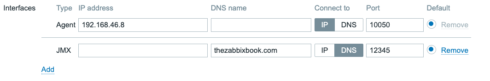 4.9 Agent and JMX type interfaces
- IP address
- DNS name
- Connect to (IP or DNS)
- Port
It's important to take note of the Connect to field here. It indicates whether
we will use the IP address or DNS name field configured for this interface.
Within Zabbix interfaces it is only possible to use one at the time. That means
there is no failover if DNS starts to fail and as such when using DNS your monitoring
will be dependent on your DNS servers.
Tip
The question often asked at this point is "Should I use DNS or IP". The choice in the end is up to the Zabbix administrator, but a simple rule we always follow is:
If it's static use IP, as your monitoring will keep working even if DNS is down. If it's dynamic, use DNS as you will save yourself the administrative overhead.
SNMP
The SNMP interface has the most options of all four interface types. The reason for this is because the SNMP type interface allows us to specify the SNMP details like version, community and credentials.
 4.10 SNMPv2 interface
4.10 SNMPv2 interface
When selecting the SNMP version as either SNMPv1 or SNMPv2, we are shown
the SNMP community field. SNMPv1 and SNMPv2 both use unauthenticated and
unencrypted connections by using a plain text SNMP community to initiate a connection
to the SNMP monitoring target like a switch or a router. This `SNMP community is
sent over the network in plain text and as such it can not be seen as fully secure
authentication.
All three SNMP versions will also show the Use combined requests checkbox.
When selected, Zabbix will group multiple SNMP items into a single request to
improve performance. For some older SNMP devices this can cause some issues and
in those cases it might be needed to turn the checkbox off.
Additionally when selecting SNMPv2 or SNMPv3 we are also presented with the
Max repetition count. When Zabbix uses GETBULK requests it will retrieve multiple
values per OID base in a single call. This option is used to reduce SNMP traffic
overhead when using the walk[] SNMP agent item key.
 4.11 SNMPv3 interface
4.11 SNMPv3 interface
For SNMPv3 many additional fields will be available for configuration.
- Context name Used to define a context, for example when connecting to a single device split up in multiple virtual devices (like a virtual router)
- Security name The username we will use when authenticating to our SNMP monitoring target
- Security level noAuthNoPriv, AuthNoPriv, AuthPriv. We can choose to do SNMPv3 without authentication and data encryption, with authentication and without data encryption or with both authentication and data encryption.
- Authentication protocol MD5, SHA1, SHA224, SHA256, SHA384, SHA512. The encryption strength for our authentication.
- Authentication passphrase The password for authentication.
- Privacy protocol DES, AES128, AES192, AES256, AES192C, AES256C. The encryption strength for our data encryption.
- Privacy passphrase The password for data encryption.
With SNMPv3 it is important to keep security in mind. SNMPv1 and SNMPv2 should
be considered obsolete at this point, providing potential bad actors with access
to important information or worse write access to devices without authentication.
SNMPv3 with authentication and data encryption is as such always recommended.
It's up to the Zabbix administrator to determine what the monitoring target supports,
but higher security is better in this case.
noAuthNoPriv utilizes the SNMPv3 protocol without authenticating and encrypting the data.
AuthNoPriv uses encrypted authentication, but sends monitoring data plain text over the network
AuthPriv is the recommended method for high security, as it uses encrypted authentication and also sends monitoring data encrypted over the network.
When using SNMPv3 it is also best practice to use a strong authentication protocol. MD5 and DES are both no longer recommended due to the possibility to brute force the passwords with consumer grade hardware amongst other risks. That's why SHA1 and AES128 or higher is always recommended.
IPMI
For IPMI agent type items we want to add the IPMI type interface. We can use it to connect to BMC's (Baseboard Management Controller) like iDRAC and iLo. This interface is slightly different again from the previous three interfaces.
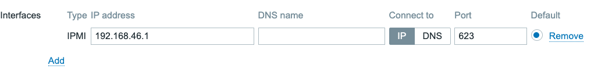 4.12 IPMI interface
We have the same settings for IP, DNS and Port again, but in the case of IPMI we do not define credentials on the interface level. Instead these are provided on a different tab on the host configuration settings.
 4.13 IPMI host settings
4.13 IPMI host settings
For a host in Zabbix we can only define one IPMI use for authentication, regardless of the amount of interfaces we add.
- Authentication algorithm None, MD2, MD5, Straight, OEM, RMCP+. Determines the encryption strength.
- Privilege level Callback, User, Operator, Admin, OEM. Determines the privilege level our user should be allowed to connect with.
- Username The username to authenticate with.
- Password The password to authenticate with.
Once again, for security purposes MD2 and MD5 are not recommended. As well as Straight which is plain text unencrypted and OEM which is vendor specific. If possible, try to use RMCP+, which in most cases is the most secure.
For the Privilege level it is recommended to use either Callback or User in most scenarios. Callback will allow us to access alerts, User will also allow us to access monitoring data. If need higher privilege levels to execute commands on the BMC as well, this is possible. But keep in mind, write access from your monitoring system comes with additional security risks.
Interface availability
All four interface types, also come with an icon that can turn Green, Orange, Red or Grey. This color determines the interface its availability.
... ... ...
Conclusion
When configuring your host interfaces in Zabbix, we need to match our Item type to our Interface type. When we have the correct Host interface configured we will be able to add the corresponding Items on our host to collect data. Upon successful data collection, the interface availability icon will also turn Green.
Some item types like the Simple check also have the possibility to use host interfaces, but do not need them. These items, although they use the interface, do not have an affect on interface availability and the availability icon.
When configuring host interfaces with security settings, keep in mind to use the most secure option that your monitoring target supports. This will make sure your Zabbix environment is more secure, even if a bad actor would be present on your network somehow.
Questions
Useful URLs
Zabbix Agent installation and Passive monitoring
At this point we are familiar with the Zabbix dataflow, how to create hosts and,
add interfaces and items to a host. As a system administrator or anyone else working
with Linux, Unix or Windows systems usually we jump right into installing the Zabbix
agent and monitoring with it. Using our previous steps however, we have laid the
groundwork for building a proper monitoring solution. We have prepared our systems
before monitoring, which is the most important part to avoid Monitoring fatigue
later on.
Note
Monitoring fatigue and Alert fatigue are two terms heard in monitoring and observability.
Alert fatigue happens in Zabbix when you configure too many (incorrect) triggers. When you flood your dashboards or even external media like Teams or Signal with too many alerts your users will not respond to them any longer.
Monitoring fatigue happens in Zabbix when you misconfigure things like dashboards, items, host groups, tags and other internal systems that keep things structured. The result is that you or your co-workers do not want to use your own system any longer as it does not deliver the right information easily enough.
Now, we are ready to start monitoring an actual system.
Agent basics
We have prepared an example setup in our Book LAB environment.

4.14 Zabbix Agent passive hosts
What we can see here is a setup you might see in any datacenter or office server cabinet. We have a Zabbix server monitoring one Windows server and one Linux server directly (or through a proxy). We call Zabbix a network monitoring solution as it communicates over the network. In Zabbix we have two methods of communication.
- Passive Otherwise known as
polling. We communicate from the Zabbix server (or proxy) towards the monitoring target. The monitoring target is listening on a port waiting for Zabbix to request data. - Active Otherwise known as
trapping. We communicate from the monitoring target towards the Zabbix server (or proxy). The Zabbix server is listening on a port waiting for the monitoring target to send data.
As you can imagine there is quite a big difference between these two methods of communication. Often times it depends on the protocol which method is preferred. For example SNMP traps are always an active type of check.
The Zabbix agent however can communicate in either Active or Passive mode. It can even do those simultaneously. Simultaneous communication can be useful when you want to use Passive mode for all communication, but still want to execute some items that are Active only. Active items can do everything Passive items can do however.
Before we can configure either though, we will have to install our Zabbix agent
first. When installing on Linux and Windows we have a choice between two different
agents, Zabbix agent and Zabbix agent 2. Both of these Zabbix agents are still
in active development and receive both major (LTS) and minor updates. The difference
between them is in Programming language and features.
| Zabbix agent | Zabbix agent 2 | |
|---|---|---|
| Features | No focus to include new features | Supports everything agent 1 does + more |
| Programming language | C | GoLang |
| Extensions | C Loadable Modules | GoLang plugins |
| Platforms | All | Linux and Windows |
| Concurrency | In sequence | Concurrently |
| Storage on outage | No | Sqlite |
| Item timeouts | Agent wide | Per plugin |
Agent installation on Linux
Installation on Linux can be done in one of three ways. Through direct install
files like .rpm and .deb, by building from sources and through packages pulled
from the repository. Installation through the packages is preferred as this means
Zabbix agent will be updated when updating with commands like dnf update and
apt upgrade. Keep in mind, Zabbix agent is a piece of software just like any
other and as such news versions will contain security and bug fixes. Whatever
installation method you choose, keep your Zabbix agent up-to-date.
We will be using the packages on both RedHat-based and Ubuntu to install Zabbix agent 2.
To use the packages we will add the Zabbix repository first.
add zabbix repository
Redhat
rpm -Uvh https://repo.zabbix.com/zabbix/7.2/release/rocky/9/noarch/zabbix-release-latest-7.2.el9.noarch.rpm
dnf clean all
Ubuntu
After adding the repository, we should be able to install Zabbix agent 2.
install Zabbix agent 2 package
Redhat
Ubuntu
After installation make sure to start and enable the Zabbix agent.
Your agent is now installed under the zabbix user and ready to be configured.
On a Linux based system, by default we can find all of the Zabbix configuration
files in /etc/zabbix/. Specifically we want to edit /etc/zabbix/zabbix_agent2.conf.
Agent installation on Windows
On Windows, we have two options to install our Zabbix agent. Through downloading
the .exe file and placing the configuration files in the right location or the
easy option. Downloading the .msi and going through the installation wizard.
Whichever method you prefer, you'll first have to navigate to the Zabbix download
page. We will be using the .msi in our example.
https://www.zabbix.com/download_agents?os=Windows
Here you will be presented with the choice to download either Zabbix agent or
Zabbix agent 2. Choose whichever one you would like to install, but by now we
recommend Zabbix agent 2 as it is stable and includes more features.
Once downloaded, we can open the new zabbix_agent2-x.x.x-windows-amd64-openssl.msi
file and it will take us to the wizard window.

4.15 Zabbix Agent Windows install step 1
Step 1 is a simple welcome screen, nothing to do here except click on Next.
4.15 Zabbix Agent Windows install step 2
For step 2, make sure to read the License Agreement (or don't, we do not give legal advice). Then click Next.

4.15 Zabbix Agent Windows install step 3
For step 3 we have some more actions to execute. By default the Zabbix agent on Windows .msi installer includes Zabbix sender and Zabbix get. These are separate utilities that we do not need on every Windows server. I will not install them now, but we can always use the .msi to install them later. The Zabbix agent will function fine without them.

4.15 Zabbix Agent Windows install step 4
Step 4 is our most important step. Here we will already configure our Zabbix agent configuration file, straight from the .msi installer. Let's make sure to set the Hostname, Zabbix server IP/DNS (192.168.46.6 in our case) and let's also set the Server or proxy for active checks parameter. As you can see we could also immediately configure encryption with the Enable PSK option, but we will do this later.

4.15 Zabbix Agent Windows install step 5
Now there is nothing left to do except press Install and our Zabbix agent will be both installed and configured.
Agent installation on Unix
For Unix based systems, simply download the files on the Zabbix download page for either AIX, FreeBSD, OpenBSD or Solaris.
https://www.zabbix.com/download_agents
Agent installation on MacOS
For MacOS systems, simply download the files on the Zabbix download page and run through the .pkg installer.
https://www.zabbix.com/download_agents?os=macOS
Agent side configuration
Configuring the Zabbix agent is similar for all installations. Whether you are on Linux, Unix, Windows or MacOS you will always find the ../zabbix_agent2.conf file. The parameters in this configuration file are mostly the same, regardless of the operating system.
For Passive Zabbix agent connections we have only one important parameters to configure out of the box. The Server= parameter. This parameter functions as an allowlist, where we can add IP addresses, IP ranges and DNS entries to a list. All of the entries in this Server= allowlist will be allowed to make a connection to the Passive Zabbix agent and collect data from it.
Edit your configuration file to include your Zabbix server (or proxy) IP address, IP range or DNS entry.
As you can see in the example, I've left 127.0.0.1. Although not required, this can be useful in certain situations. Through the use of a comma , we have indicated that both 127.0.0.1 and 192.168.46.30 are allowed to connect. If you are running Zabbix server in HA mode or if you are using Proxy Groups, make sure to include all entries for the Zabbix components that need to connect.
After making changes to the Zabbix agent configuration file, make sure to restart the Windows service. On Linux systems use sytemctl to restart.
If you do not restart, the changes will not take effect.
Zabbix side configuration
On the Zabbix server side we can now create a new host to monitor. Let's call it zbx-agent-passive-rocky or zbx-agent-passive-windows and let's add the interface.

4.20 Zabbix Agent passive Linux host
For Windows it looks similar.
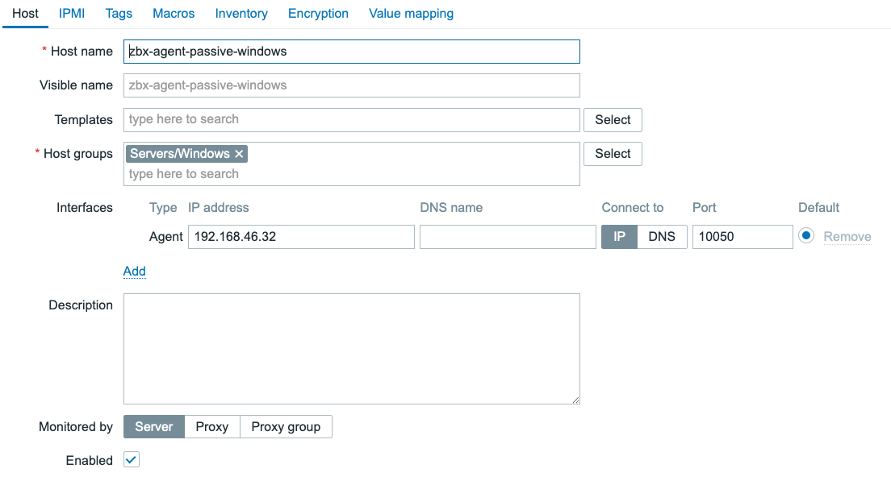
4.21 Zabbix Agent passive Windows host
With the host added, correctly with an interface, we can now start monitoring. To do so, let's create one Zabbix agent item type as an example. For your new host zbx-agent-passive-rocky or zbx-agent-passive-windows in the Zabbix frontend, click on Items and then Create item in the top right corner.
Let's create an item System hostname, making sure that if we have more system items alphabetical sorting will group them together. For Passive Zabbix agent the type Zabbix agent is used and we have to specific an Interface. We will use the item key system.hostname.
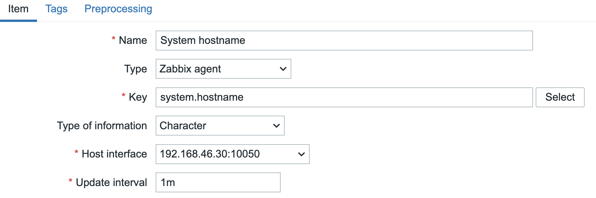
4.22 Zabbix Agent passive host item
Do not forget to add the standard Component tag to the item to follow the best practise.

4.23 Zabbix Agent passive host item tag
Conclusion
Installing the Zabbix agent can be done with either Zabbix agent or Zabbix agent 2. By now Zabbix agent 2 is recommended when available, but Zabbix agent is also still fully supported. Make sure to install the Zabbix agent through the most easily secured method and keep it updated.
Once installed, for Passive communication we will use the Server= parameter to keep our agent secured. We do not want everyone to be able to connect to this agent, even when there might still be a firewall or two in between.
Last but not least, keep Active versus Passive in mind. Depending on where the server is located, it might be preferred to open up ports through your firewall(s) incoming our outgoing. Usually we prefer Active communication, because it means we do not have to give a central server (Zabbix server and proxy) access to all our servers. But in specific cases Passive might be preferred.
Questions
Useful URLs
Zabbix Agent Active monitoring
In the previous part we installed our Zabbix agent and started monitoring a host in the Passive mode. When we use Passive mode the Zabbix server or proxy will connect to the Zabbix agent and request specific item data. The item data is returned within the same TCP session. From a security aspect this means that we need to allow our Zabbix servers or proxies to connect to many different servers.
For security reasons this might not be the best course of action. Instead let's look at the Zabbix agent in Active mode. In Active mode or Zabbix agent will be configured to initiate the connection to the Zabbix server or proxy. It will request its configuration data and receive it back in the same TCP session. After receiving its configuration it can then start sending the item data according to the configuration received. The connection as such is always initiated from the Zabbix agent side, meaning you will allow your many agents to connect to your Zabbix servers or proxies instead.
4.24 Zabbix Agent active hosts
Setting up the active agent
It's possible to set-up a Zabbix agent to work in both passive and active mode at the same time. Sometimes, we see this as passive mode was being used but an active only check is added later. The Zabbix agent in active mode can execute all item keys, whereas the passive agent cannot execute log item keys. Another reason to prefer active mode in most cases. For clarity, in our example we will use a different linux and windows server for the active agent. We will call these hosts:
- zbx-agent-active-rocky
- zbx-agent-active-windows
Because the Zabbix active agent will need to know where to request its configuration and where to start sending data, the setup for the active agent is quite different. The set-up process however is the same for both Linux and Windows. Let's start by editing the Zabbix agent configuration file.
open Zabbix agent configuration file
Linux usually:
``` vim /etc/zabbix/zabbix_agent2.conf
Once the configuration is open, there are two important parameters in the configuration file. First, let's make sure our Zabbix agent will know where to connect to.
edit ServerActive parameter
ServerActive=192.168.46.30
In the example 192.168.46.30 is the IP address of our Zabbix server (or proxy). Do not forget to remove 127.0.0.1 in this case. Its important to remember that our Zabbix agent in active mode will connect to every single IP address or DNS name entered in the ServerActive= parameter. Unlike Server= which functions as an allowlist.
Next up, our Zabbix agent needs to know which configuration data to collect. It will connect to the Zabbix server (or proxy) on the IP specified and send over its Hostname= parameter. By default this is set to Hostname=Zabbix server which is incorrect in all cases except the Zabbix server itself. Lets change the configuration.
edit Hostname parameter
Linux:
``` Hostname=zbx-agent-active-rocky
It is also possible to comment the #Hostname= parameters, in which case it will use the system.hostname item key to determine the hostname. This makes it easy for environments where the hostname is the same on the system as it will be in Zabbix (best practice).
There is also the HostnameItem= parameter which you can use to set your own item to determine the hostname used. This can be an existing item, but also a UserParameter (more on those later). With this functionality, you can even execute a bash or powershell script to set a custom hostname like that.
With this configuration set you can restart the Zabbix agent to make the changes take effect. In Windows restart the service, for Linux issue the command below.
restart Zabbix agent
systemctl restart zabbix-agent2
This finalizes the configuration file changes. Now we need to configure the host in Zabbix.
4.25 Zabbix Agent active hosts in Zabbix
All we need to do here is make sure to match the hostname of what we configured in the Zabbix agent configuration file. Keep in mind that the Hostname field has to match the Hostname= parameter in the configuration file. The Visible name field does not have effect on the active agent functioning.
We also add the host to the correct host group and that is all for now.
Creating active items
Now that these settings all configured we can now start to create some items on our active agent host in Zabbix frontend. Let's click on Items for our host and configure a new Zabbix active type items.
4.26 Zabbix Agent active item
Make sure to set the item Type to Zabbix agent (active). Most item keys will be the same between Passive and Active mode, but the Type needs to be set correctly.
Also, do not forget to add the tag to this item.
4.27 Zabbix Agent active item tag
Your ZBX icon for this host should now turn green, even in active mode.
Conclusion
Zabbix agent in Passive and in Active mode are quite similar. Their main difference being their methods of communications and some different functionalities outside of their core functions being the same. One big difference we haven't mentioned yet however is timestamps. The Zabbix server or proxy communicating with a Zabbix agent inPassive mode adds the timestamp for a collected value at the Zabbix server or proxy side. In Active mode however the timestamp is added directly upon item value collection on the Zabbix agent side. This makes the Zabbix agent in Active mode more accurate with timestamps, but more sensitive for incorrect time settings on your monitoring targets. Keep in mind to set-up NTP when using the Zabbix agent in Active mode, a good idea even outside of Zabbix monitoring. The Zabbix agent in Active mode will always use UTC+0 and send over the timestamp in unixtime.
Finally, let's do a bit of a comparison between the two modes.
| Active Zabbix agent | Passive Zabbix agent | |
|---|---|---|
| Timestamp | Zabbix agent | Zabbix server or proxy |
| (event)log items | Supported | Not supported |
| Port | No port listening, connect to 10051 | Listening on 10050 |
| Hostname | Has to match | Can be anything |
| Remote commands | Supported | Supported |
Questions
Useful URLs
SNMP Polling
In the previous chapter, we explored monitoring strategies that relied on both active and passive Zabbix agents. This chapter introduces an alternative approach monitoring via SNMP (Simple Network Management Protocol) which does not require the installation of a Zabbix agent on the monitored device. This method is especially useful in environments where agent based monitoring is impractical, restricted or simply not allowed.
Simple Network Management Protocol (SNMP) is a widely adopted protocol designed for monitoring and managing devices on IP networks. Despite the word "management" in its name, SNMP is predominantly employed for monitoring purposes. Its widespread support across networking hardware and embedded systems has made it a cornerstone of modern network visibility solutions.
Originally developed in the late 1980s, SNMP has undergone several revisions. Early versions, such as SNMPv1 and SNMPv2c, were hampered by significant security limitations. As a result, while SNMP includes functionality for remote device configuration, its use has remained largely to status monitoring rather than active management of devices.
SNMP is especially valuable for monitoring resource constrained or embedded devices that lack the capacity to run a full monitoring agent.
Common examples include:
- Printers
- Network switches, routers, and firewalls
- Uninterruptible Power Supplies (UPSs)
- NAS (Network-Attached Storage) appliances
- Environmental sensors (e.g., temperature, humidity sensors)
These devices often provide built-in SNMP support, making them accessible for monitoring with minimal configuration. Additionally, SNMP can be employed on standard servers where installing or maintaining a Zabbix agent is either impractical or not permitted. This could be due to administrative policies, software compatibility or security concerns, or simply a desire to reduce system footprint.
Recognizing the ubiquity of SNMP, Zabbix provides native SNMP support. This capability is powered by the open-source Net-SNMP suite, available at http://net-snmp.sourceforge.net. The integration allows Zabbix to retrieve metrics from SNMP-enabled devices using industry standard mechanisms.
In this chapter, we will cover the following:
- An introduction to the Net-SNMP toolkit and its core utilities.
- How to integrate MIB (Management Information Base) files into Zabbix, enabling the platform to interpret SNMP data correctly.
- The process of SNMP polling within Zabbix, including how to define SNMP-based items and retrieve data from devices.
This chapter serves as the foundation for SNMP-based monitoring in Zabbix. While we begin with the essentials such as polling, MIB usage, and SNMP item configuration this is just the start.
Later in this book, we will build upon this knowledge by exploring Low-Level Discovery (LLD) mechanisms using SNMP. LLD allows Zabbix to automatically detect and create monitoring items for dynamic or repetitive structures, such as network interfaces, power supplies, ...
What is a MIB?
Imagine you have a house full of smart devices: a smart thermostat, a smart lamp, and a smart doorbell. All these devices keep track of various types of information. The thermostat has the indoor temperature and battery status, the lamp has its brightness and color, and the doorbell has a log of who has been at the door.
A MIB (Management Information Base) is the "table of contents" or "catalog" of all this information on a network device. Every SNMP enabled device has its own MIB, which is structured and organized. Without a MIB, your Zabbix server wouldn't know what data is available to monitor. The MIB specifies exactly which metrics the device can share.
What is an OID?
To retrieve a specific piece of information from that catalog, you need an address. An OID (Object Identifier) is that address.
You can think of an OID as a GPS coordinate or a book's unique ISBN number. It's a hierarchical sequence of numbers (for example, 1.3.6.1.2.1.1.3.0) that leads you to one specific piece of information, such as a device's uptime or the number of network errors on a particular port.
The OID is the exact path to the data within the MIB. Zabbix uses these OIDs to know what to request from the device. You configure Zabbix to say: "Request the value of this specific OID," and the device returns the requested value.
In short:
- The MIB is the library catalog that describes the structure of all available data.
- The OID is the specific address that leads you to the book (the data) you're looking for.
When Zabbix wants to monitor a device via SNMP, it uses an OID to send an SNMP request. The agent on the device searches its MIB for the data corresponding to that OID and sends the value back to Zabbix. This is the foundation of SNMP based monitoring.
What Is the OID Tree Structure?
The OID (Object Identifier) structure is a hierarchical tree, much like a family tree or a computer's folder structure. This tree is standardized globally. Each point on the tree, from the root to the "leaves," is represented by a number.
The tree starts at the root, with a few main branches managed by international
organizations. The most common branch for network management and SNMP often begins
with 1.3.6.1. Let's break down this OID to see how the structure works:
- 1: This branch is managed by ISO (International Organization for Standardization).
- 1.3: This branch is for
identified-organization. - 1.3.6: This is the branch for the U.S. Department of Defense (DoD).
- 1.3.6.1: This is the internet branch, managed by the IETF (Internet Engineering Task Force).
- ... and so on.
Every branch in this tree is responsible for managing the numbers below it. Companies
like Cisco or projects like Net-SNMP get their own unique number under a specific
branch, most commonly under 1.3.6.1.4.1, which is reserved for private enterprises.
How to Use the OID Tree
For Zabbix, the OID tree is essential for understanding what data is available on a device. Instead of remembering long, unreadable strings of numbers, MIB (Management Information Base) files use text labels to translate the numbers into human-readable names.
Example:
- The OID for a device's system description is:
1.3.6.1.2.1.1.1.0. - An MIB file translates this to:
sysDescr.0.
You can use the OID tree to:
- Look up data manually: You can browse MIB files or online OID databases to find the exact OID for the metric you want to monitor.
- Use SNMP commands: With commands like
snmpwalk,snmpget, orsnmpstatus, you can use the numeric OIDs or the readable names (if MIBs are loaded) to request data from a device. - Configure LLD (Low-Level Discovery): Zabbix uses OID sub-trees to automatically create monitoring items for dynamic components, such as network interfaces or disk partitions.
Net-SNMP
The Simple Network Management Protocol (SNMP) is a widely used protocol for monitoring and managing networked devices. It operates primarily over UDP port 161, though in certain cases, SNMP agents or proxies may also support TCP port 161 for enhanced reliability or integration with specific tools. SNMP allows administrators to query information or trigger actions on remote devices using structured data identified by Object Identifiers (OIDs).
To begin working with SNMP in a lab or testing environment, you may choose between two approaches:
- Use an existing SNMP capable device already present in your network infrastructure.
- Deploy a lightweight SNMP agent on a general-purpose server, such as your Zabbix server or a dedicated virtual machine.
In this chapter, we will walk through the installation and configuration of a basic SNMP agent on a Rocky or Ubuntu based Zabbix server. However, the same setup can be applied to any compatible Linux system.
Note: If you're using a device already present on your network, ensure:
- You have network access to the device (verify routing and firewall settings).
- SNMP access is allowed from your Zabbix server’s IP address.
- The correct community string is configured, and your IP is included in the SNMP access control rules of the device.
Dataflow between Zabbix and the SNMP device.
graph TD
A[Zabbix Server] -->|SNMP Request on port 161/UDP| B(Router, Switch, Printer, ...);
B -->|SNMP Agent| C{"Management Information Base (MIB)"};
C -->|Read data via OID's| B;
B -->|SNMP Response| A
4.28 Overview
Before we start lets go over a few tools that we will use and explain what they exactly do.
- snmpget: Retrieves the value of a single, specific OID.
- snmpwalk: Walks an entire OID subtree and displays all of its values.
- snmpstatus: Provides a summary of a device's basic status.
Testing an SNMP Device: Where to Start?
When you're looking to test an SNMP device, it's crucial to understand the available SNMP versions and which ones you should prioritize. Currently, there are three commonly used versions: SNMPv1, SNMPv2c, and SNMPv3.
- SNMPv1: This is the oldest version and should generally be avoided unless absolutely necessary. It's quite limited in functionality and has serious security vulnerabilities.
- SNMPv2c: Still the most prevalent version today, SNMPv2c offers improvements over v1, especially in data retrieval and performance. It's relatively straightforward to configure and use.
- SNMPv3: This version is rapidly gaining popularity and is considered the most secure and advanced option. It provides encryption, authentication, and user management, which are essential for secure networks.
Your First Test Attempt: SNMPv2c and the 'public' Community String
To begin your testing, we recommend trying to connect to your device using SNMPv2c and the standard community string 'public'. Many devices ship with these default settings, though it's certainly insecure for production environments.
You can use the snmpstatus command for this. Here’s an example of how you might
do this in your terminal:
Replace [IP-address_of_the_device] with the actual IP address or hostname of the
device you wish to test.
What if You Get No Information Back?
If you don't receive any information after this attempt, don't panic. It simply means the default settings likely don't apply to your device, or there might be a network related issue. You'll need to dig deeper into your device's configuration or troubleshoot your network.
First, check the device's configuration:
- SNMP Version: Which SNMP version (v1, v2c, or v3) is configured and enabled?
- Community String (for v1/v2c): If your device uses SNMPv1 or SNMPv2c, what is the configured community string (similar to a password) for read-only and potentially read- write access? It's rarely 'public' in a properly configured environment.
- Username, Authentication, and Privacy (for v3): If your device uses SNMPv3, you'll need more specific information: - Username: What username has been created for SNMPv3? - Authentication Protocol and Password: Which authentication protocol (e.g., MD5, SHA) is used, and what is its corresponding password? - Privacy Protocol and Password: Which encryption protocol (e.g., DES, AES) is used, and what is its corresponding password?
Next, consider potential network issues:
Even if your device is correctly configured, network obstacles can prevent SNMP communication. Check for:
- Firewall Blocking: A firewall (either on your testing machine, the network, or the SNMP device itself) might be blocking the UDP port 161, which SNMP typically uses. Ensure the necessary ports are open.
- ACL Settings on the Device: The SNMP device itself might have Access Control List (ACL) settings configured to restrict access only to specific IP addresses. Verify that your testing machine's IP address is permitted.
- Network Connectivity: Basic network issues like incorrect IP addresses, subnet masks, or routing problems can also prevent communication. Ensure there's a clear network path between your testing machine and the SNMP device.
SNMPv3 Security Levels
SNMPv3 offers significant security enhancements over older, unsecured versions (SNMPv1 and SNMPv2c). The protocol has three security levels:
-
noAuthNoPriv (Authentication and encryption off): This is the least secure level. There's no authentication and no encryption. It's similar to SNMPv1 and SNMPv2c and offers no protection. It should only be used in strictly controlled lab environments where security is not a concern.
-
authNoPriv (Authentication on, encryption off): This level authenticates the user, which guarantees data integrity. It verifies that messages come from a trusted source and haven't been tampered with. However, the data isn't encrypted, so it remains readable if the traffic is intercepted. This level is suitable for non-sensitive data in a relatively secure network. Authentication protocols used here are typically MD5 or SHA.
-
authPriv (Authentication and encryption on): This is the most secure and recommended level. It provides both authentication and data encryption. Authentication ensures the integrity and origin of the message, while encryption makes the data unreadable to third parties. This is essential for monitoring sensitive information or when communicating over unsecured networks. Encryption protocols used include DES, 3DES, and AES.
Examples of SNMPv3 Commands
Once you have the necessary information (and have ruled out network issues), you
can try connecting with SNMPv3. Here are some examples of how you might use snmpstatus
with SNMPv3 (depending on your configuration):
- Authentication only (no encryption):
snmpstatus -v 3 -l authNoPriv -u [username] -a [authentication_protocol] -A [authentication_password]
[IP-address_of_the_device]
(Replace [authentication_protocol] with MD5 or SHA)
- Authentication and Encryption:
snmpstatus -v 3 -l authPriv -u [username] -a [authentication_protocol] -A [authentication_password]
-x [privacy_protocol] -X [privacy_wachtwoord] [IP-address_of_the_device]
(Replace [authentication_protocol] with MD5 or SHA and [privacy_protocol]
with DES or AES)
A Note on SNMPv1: Avoid if Possible
While you can technically test with SNMPv1, we strongly advise against using it in production. SNMPv1 is an outdated and insecure protocol version vulnerable to various attacks. Always try to connect with v2c or v3 first. Only if you are absolutely certain that the device exclusively supports SNMPv1 and you have no other option, you can try using it:
However, remember that using SNMPv1 in a production environment poses a significant security risk.
Understanding the Output of snmpstatus
Let's take a look at an example output from the snmpstatus command. Remember
this is just an example output it will differ from your result.
snmpstatus -v2c -c public 127.0.0.1
[UDP: [127.0.0.1]:161->[0.0.0.0]:33310]=>[Linux localhost.localdomain 5.14.0-570.28.1.el9_6.aarch64
#1 SMP PREEMPT_DYNAMIC Thu Jul 24 07:50:10 EDT 2025 aarch64] Up: 1:24:36.58
Interfaces: 2, Recv/Trans packets: 355763/355129 | IP: 37414/35988
This output provides a concise summary of the device's status, indicating a successful SNMP query. Let's break down what each part means:
-
snmpstatus -v2c -c public 127.0.0.1:-v2c: Specifies that SNMP version 2c was used.-c public: Indicates that the community string "public" was used for authentication.127.0.0.1: This is the target IP address, in this case, the localhost (the machine on which the command was run).
-
[UDP: [127.0.0.1]:161->[0.0.0.0]:33310]:- This section describes the communication path.
UDP: Confirms that the User Datagram Protocol was used, which is standard for SNMP.[127.0.0.1]:161: This is the source of the SNMP request and the standard SNMP port (161) on which the SNMP agent listens.->[0.0.0.0]:33310: This indicates the destination of the response.0.0.0.0is a placeholder for "any address," and33310is a high-numbered ephemeral port used by the client to receive the response.
-
[Linux localhost.localdomain 5.14.0-570.28.1.el9_6.aarch64 #1 SMP PREEMPT_DYNAMIC Thu Jul 24 07:50:10 EDT 2025 aarch64]:- This is crucial information about the queried device itself.
Linux localhost.localdomain: Identifies the operating system as Linux, with the hostnamelocalhost.localdomain.5.14.0-570.28.1.el9_6.aarch64: This is the kernel version and architecture#1 SMP PREEMPT_DYNAMIC Thu Jul 24 07:50:10 EDT 2025 aarch64: Provides further kernel build details, including the build date and time.
-
Up: 1:24:36.58:- This indicates the uptime of the device. The system has been running for 1 day, 24 hours, 36 minutes, and 58 seconds.
-
Interfaces: 2, Recv/Trans packets: 355763/355129 | IP: 37414/35988:Interfaces: 2: This tells us that the device has detected 2 network interfaces.Recv/Trans packets: 355763/355129: These numbers represent the total number of packets received and transmitted across all network interfaces on the device since it was last booted.IP: 37414/35988: These figures likely represent the number of IP datagrams received and sent specifically by the IP layer on the device. This provides a more specific metric of IP traffic compared to the total packet count which includes other layer 2 protocols.
In summary, this output from snmpstatus quickly provides a clear overview of a
Linux system's basic health and network activity, confirming that the SNMP agent
is reachable and responding with the requested information using SNMPv2c.
Installing SNMP Agent on a Linux Host
Now that we know a bit more about SNMP it's time to start playing next we will install the SNMP agent and utilities on our Zabbix server to do some testing. Or another compatible system if you prefer.
Follow the steps below to get the SNMP agent installed.
- Install Required Packages
Install Net-SNMP agent and utilities
Red Hat
Ubuntu
- Configure the SNMP Agent First, create a clean configuration file for the SNMP daemon:
Paste the following example configuration, which is optimized for SNMP-based discovery and testing in Zabbix:
tee /etc/snmp/snmpd.conf <<EOF
# --------------------------------------------------------------------------
# BASIC ACCESS CONTROL
# --------------------------------------------------------------------------
# This defines who has access and with which community string.
# For a LAB ENVIRONMENT, 'public' is acceptable, but EMPHASIZE THAT THIS IS UNSAFE
# FOR PRODUCTION. In production, use SNMPv3 or restricted IP ranges.
# Read-only community string 'public' for all IP addresses (WARNING: LAB USE ONLY!)
rocommunity public
#
# IMPORTANT NOTE: The 'public' community string is the default and most well-known community string.
# Using this in a production environment is EXTREMELY INSECURE and makes your device vulnerable.
# Anyone who knows your device's IP address can query basic information about your system.
# USE THIS ONLY AND EXCLUSIVELY IN STRICTLY ISOLATED TEST OR LAB ENVIRONMENTS!
# For production environments:
# - Use a unique, complex community string (e.g., rocommunity YourSuperSecretString)
# - STRONGLY CONSIDER implementing SNMPv3 for superior security (authentication and encryption).
#
# BETTER FOR LAB (or production with restrictions):
# rocommunity my_secure_community_string 192.168.56.0/24
# Replace '192.168.56.0/24' with the subnet where your Zabbix Server is located.
# ============================================
# SNMPv3 Configuration (Recommended for Production, but here with examples)
# ============================================
#
# This section defines users for SNMPv3, each with a different security level.
# In a production environment, you would typically ONLY use the 'authPriv' option
# with strong, unique passwords. This setup is useful for lab and testing purposes.
# --- 1. SNMPv3 User with Authentication and Privacy (authPriv) ---
# THIS IS THE MOST SECURE AND RECOMMENDED SECURITY LEVEL FOR PRODUCTION.
# It requires both correct authentication and encryption of the traffic.
#
# Syntax: createUser USERNAME AUTH_PROTOCOL "AUTH_PASS" PRIV_PROTOCOL "PRIV_PASS"
# Example: createUser mysecureuser SHA "StrongAuthP@ss1" AES "SuperPrivP@ss2"
createUser secureuser SHA "AuthP@ssSec#1" AES "PrivP@ssSec#2"
rouser secureuser authPriv
# --- 2. SNMPv3 User with Authentication Only (authNoPriv) ---
# This level requires authentication, but the data is NOT encrypted.
# The content of SNMP packets can be read if traffic is intercepted.
# NOT RECOMMENDED FOR SENSITIVE DATA OR PRODUCTION ENVIRONMENTS.
#
# Syntax: createUser USERNAME AUTH_PROTOCOL "AUTH_PASS"
# Example: createUser authonlyuser SHA "AuthOnlyP@ss3"
createUser authonlyuser SHA "AuthOnlyP@ss3"
rouser authonlyuser authNoPriv
# --- 3. SNMPv3 User with [48;32;186;960;2604tNo Authentication and No Privacy (noAuthNoPriv) ---
# THIS IS THE LEAST SECURE LEVEL AND SHOULD NEVER BE USED IN PRODUCTION!
# It offers NO SECURITY WHATSOEVER. It's purely for very specific test scenarios
# where security is not a concern.
#
# Syntax: createUser USERNAME
# Example: createUser insecureuser
createUser insecureuser
rouser insecureuser noAuthNoPriv
#
# IMPORTANT SECURITY NOTES FOR ALL SNMPv3 USERS:
# - Replace the example usernames and passwords with your OWN strong, unique values.
# - Passwords must be a MINIMUM of 8 characters long.
# - The passwords for AUTH and PRIV (with authPriv) do not have to be the same.
# - Restrict access to specific IP addresses (e.g., 'rouser USERNAME authPriv 192.168.1.0/24')
# if you want to further tighten access.
#
# --------------------------------------------------------------------------
# SYSTEM INFORMATION (OPTIONAL)
# --------------------------------------------------------------------------
# This information is generally available via SNMP and useful for identification.
syslocation "Rocky Linux Zabbix SNMP Lab Server"
syscontact "Your Name <your.email@example.com>"
sysname "RockySNMPHost01" # Often overridden by hostname, but can be specific
# --------------------------------------------------------------------------
# ENABLING CRUCIAL MIB MODULES FOR LLD
# --------------------------------------------------------------------------
# 'view' statements determine which parts of the MIB tree are visible.
# 'systemview' is a standard view. We ensure that the most useful OID trees
# for Zabbix LLD are included here.
# Standard System MIBs (uptime, description, etc.)
view systemview included .1.3.6.1.2.1.1 # SNMPv2-MIB::sysDescr, sysUptime, etc.
# HOST-RESOURCES-MIB: ESSENTIAL FOR LLD OF HARDWARE/OS COMPONENTS
# This MIB contains information about storage (filesystems), processors,
# installed software, running processes, etc.
view systemview included .1.3.6.1.2.1.25
# IF-MIB: ESSENTIAL FOR LLD OF NETWORK INTERFACES
# Contains detailed information about network interfaces.
view systemview included .1.3.6.1.2.1.2
# Other useful MIBs (often standard or optional)
view systemview included .1.3.6.1.2.1.4
view systemview included .1.3.6.1.2.1.6
view systemview included .1.3.6.1.2.1.7
# --------------------------------------------------------------------------
# EXTENDING SNMPD WITH EXEC COMMANDS (OPTIONAL FOR CUSTOM LLD)
# --------------------------------------------------------------------------
# This allows you to make the output of shell commands or scripts available via SNMP.
# This is ideal for monitoring things not natively available via SNMP.
# Example: Monitor the number of logged-in users (not LLD, but demonstrates the principle)
# exec activeUsers /usr/bin/who | wc -l
# Example: A script that generates LLD-like output
# imagine /opt/scripts/docker_lld.sh returns JSON that Zabbix can parse
# exec dockerContainers /opt/scripts/docker_lld.sh
# This requires a custom LLD parser in Zabbix. For an introduction, this
# might be a bit too advanced, but it's good to mention as a possibility.
# --------------------------------------------------------------------------
# SYSLOGGING
# --------------------------------------------------------------------------
# For logging snmpd activities (useful for debugging)
dontLogTCPWrappers no
EOF
Let's do some practical tests with this setup we just created. Start the SNMP Service and Configure the Firewall
# Check that the service is running
sudo systemctl status snmpd
If your system uses firewalld, ensure that SNMP traffic is allowed:
Verifying SNMP Functionality
From your Zabbix server or any SNMP client system with net-snmp-utils installed:
# Repace <IP_ADDRESS> wit the IP of the client where you installed the SNMP
# config. If localhost you can use 127.0.0.1.
# General system info (sysDescr, sysUptime, etc.)
snmpwalk -v2c -c public <IP_ADDRESS> .1.3.6.1.2.1.1
# List interface names (useful for interface LLD)
snmpwalk -v2c -c public <IP_ADDRESS> .1.3.6.1.2.1.2.2.1.2
# List filesystem descriptions
snmpwalk -v2c -c public <IP_ADDRESS> .1.3.6.1.2.1.25.2.3.1.3
# Get CPU load per processor core
snmpwalk -v2c -c public <IP_ADDRESS> .1.3.6.1.2.1.25.3.3.1.2
Note
For SNMPv3 we can do the same. You could adapt the configuration file or just go with what we have prepared already in the snmpd.conf file.
vi /etc/snmp/snmpd.conf
# Look for the following lines and adapt them as you like.
createUser authonlyuser SHA "AuthOnlyP@ss3"
rouser authonlyuser authNoPriv
createUser secureuser SHA "AuthP@ssSec#1" AES "PrivP@ssSec#2"
rouser secureuser authPriv
createUser insecureuser
rouser insecureuser noAuthNoPriv
After you have adapted your config don't forget to restart the snmpd service
You should now be able to test your items with SNMPv3 Let me give you an example
command for noAuthNoPriv,authNoPriv and the most secure authPriv. This should
work out of the box with what is already configured in our snmpd.conf file.
snmpwalk -v3 -l noAuthNoPriv -u insecureuser 127.0.0.1 .1.3.6.1.2.1.2.2.1.2
snmpwalk -v3 -l authNoPriv -u authonlyuser -a SHA -A AuthOnlyP@ss3 127.0.0.1 .1.3.6.1.2.1.2.2.1.2
snmpwalk -v3 -l authPriv -u secureuser -a SHA -A AuthP@ssSec#1 -x AES -X PrivP@ssSec#2 127.0.0.1 .1.3.6.1.2.1.2.2.1.2
Note
If you change the config file and adapt the passwords and for some reason they do not get accepted do not worry just restart the service again it things still don't work you can remove the persistent key file sudo rm /var/lib/net-snmp/snmpd.conf It's quite brutal but in our test environment it will help you out.
SNMP Monitoring in Zabbix
Now that we have covered how SNMP works, it's time to put that knowledge into practice. We'll start up our Zabbix instance and begin monitoring, but first, it's crucial to understand the two different methods Zabbix offers for retrieving SNMP information from a device.
Warning
The RFC3411 Specs specify that an EngineID needs to be unique this is very
important for monitoring. You will see errors like Bad parse of ASN.1 if you
have a conflict.
Within an administrative domain, an snmpEngineID is the unique and
unambiguous identifier of an SNMP engine. Since there is a one-to-
one association between SNMP engines and SNMP entities, it also
uniquely and unambiguously identifies the SNMP entity within that
administrative domain. Note that it is possible for SNMP entities in
different administrative domains to have the same value for
snmpEngineID. Federation of administrative domains may necessitate
assignment of new values.
Legacy SNMP Monitoring
The traditional method for SNMP monitoring is synchronous. It uses a single OID placed directly into the item's SNMP OID field. Zabbix will wait for a response before it moves on to the next check.
- OID: A single textual or numeric OID is used to retrieve a single value synchronously.
For example:
1.3.6.1.2.1.31.1.1.1.6.3. - The timeout for these items is governed by the
Timeoutparameter in the Zabbix server configuration file. To make this method functional, theStartPollersparameter must also be correctly configured.
When we talk about bulk processing in legacy it can be interesting to have a look at the Zabbix documentation about this subject. https://www.zabbix.com/documentation/current/en/manual/config/items/itemtypes/snmp#internal-workings-of-combined-processing
Asynchronous SNMP Monitoring (Recommended)
The newer, recommended approach is asynchronous and provides much better
performance. It leverages native SNMP bulk requests (GetBulkRequest-PDUs).
walk[OID1, OID2, ...]: This retrieves a subtree of values. For example:walk[1.3.6.1.2.1.2.2.1.2,1.3.6.1.2.1.2.2.1.3].get[OID]: This retrieves a single value asynchronously. For example:get[1.3.6.1.2.1.31.1.1.1.6.3].
With asynchronous monitoring, timeout settings can be configured per item. It's best to set a low timeout value to avoid long delays if a device is unreachable, as Zabbix will attempt up to 5 retries. A 3-second timeout, for instance, could result in a 15-second wait.
All walk[OID] and get[OID] items are executed asynchronously, meaning Zabbix
does not need to wait for one response before starting other checks. DNS resolution
is also handled asynchronously. The maximum concurrency for these checks is 1000,
defined by the MaxConcurrentChecksPerPoller parameter. The number of SNMP pollers
dedicated to this method is set by the StartSNMPPollers parameter.
Synchronous versus Asynchronous Polling
Zabbix can also use two different internal methods for polling:
Synchronous Polling
Synchronous polling means the Zabbix server queries one SNMP OID at a time and waits for the response before continuing. This is simpler and ensures accurate timing, but it can become slow when monitoring hundreds or thousands of items per second.
- Characteristics: Sequential, blocking, predictable timing
- Use case: Small environments or when timing precision is critical
Asynchronous Polling
Asynchronous polling sends multiple SNMP requests in parallel without waiting for each response before sending the next. This dramatically increases performance and reduces latency in large environments.
- Characteristics: Parallel, non-blocking, more efficient
- Use case: Large-scale Zabbix installations with many SNMP hosts
| Method | Direction | Timing | Example | Pros | Cons |
|---|---|---|---|---|---|
| Polling (Sync) | Zabbix ‚Üí Device | Periodic | SNMP GET for CPU load | Predictable, simple | Slower, more traffic |
| Polling (Async) | Zabbix ‚Üí Device | Parallel | Many SNMP GETs at once | Fast, scalable | More complex tuning |
Polling Your First OID in Zabbix
Let's begin by polling our first OID in Zabbix. As you may recall from a previous
snmpwalk command, querying .1.3.6.1.2.1.2.2.1.2 returned two results, identifying
the network interfaces on the device:
IF-MIB::ifDescr.1 = STRING: loIF-MIB::ifDescr.2 = STRING: enp0s1
To find the inbound and outbound octets for the enp0s1 network card, we need to
locate the correct OID. While a MIB file would provide a clear map of all available
OIDs, this isn't always an option. A common method to discover the correct OID is
to perform a broader snmpwalk by removing the last digit from the initial OID.
This command returns a more extensive list of MIB objects.
IF-MIB::ifIndex.1 = INTEGER: 1
IF-MIB::ifIndex.2 = INTEGER: 2
IF-MIB::ifDescr.1 = STRING: lo
IF-MIB::ifDescr.2 = STRING: enp0s1
...
IF-MIB::ifInOctets.1 = Counter32: 697830615
IF-MIB::ifInOctets.2 = Counter32: 49954965
...
From this output, we can see that the index for our target network card, enp0s1,
is 2. This confirms that we can use this index to find the correct data.
The output IF-MIB::ifInOctets.2 = Counter32: 49954965 appears to be the value
we need, but this is not the raw OID.
To convert this human-readable output into a numerical OID that Zabbix can use,
we can add the -On flag to our snmpwalk command, which converts the output
to its numerical form.
The result is the specific OID for the inbound octets on the enp0s1 interface:
This is the OID you would use to configure an SNMP item in Zabbix to monitor the network traffic for this specific interface.
Another useful tool that will help here is snmptranslate which does the same
thing and also the other way back.
snmptranslate
There is yet another tool that helps to visualise a SNMP table with the easy to
remember name ... snmptable. This tool allows you to see the data more easy
then a simple a snmp walk. To stay with our network cards have a look at this
output.
snmptable
Polling a single SNMP item
Ok enough with the theory let's create an actual item in Zabbix. Create a new
host with the name SNMP Device and place it in a group SNMP Devices. We also
need to tell Zabbix where we can find our SNMP device as Zabbix is doing the
polling (Or if we use a Proxy it will be the proxy.)
So let's add a SNMP Interface and give it the IP of the device we would like
to monitor. If you have been following our steps on the local machine you can
use ip 127.0.0.1, our own server.
4.29 SNMP Interface
Once our host is created and saved with the correct interface we have to create
an item on the host. Click on items next to the host SNMP Device. On the top
right click the box Create item you will be greeted with another form to fill
in the item information.
- Name: In traffic enp0s1 (A short descriptive name)
- Type: SNMP Agent
- Key: snmp.in (free form short descriptive)
- Type of information: Numeric(Unsigned)
- Host interface: The SNMP interface we created on our host. If you have more then 1 interface just select the one you need.
- SNMP OID: get[oid] to retrieve the information or only the oid but then it will use synchronous polling.
- Units: The data is in bytes so use B.
04.30 SNMP Item
Before we safe this item there is one more important step we need to do. Network items are usually counters. Meaning the device is just counting the amount of traffic that passed the interface. This means the counter will always go up as more data passes the interface over time. So we need to calculate a delta.
For this we can use preprocessing steps so let's move to the tab preprocessing
first before we save it.
Add a preprocessing step with the name Change per second
snmp preprocessing
We can now safe the item and have a look at our latest data page we should have a nice graph with our data over time.
If you decide to use the test button before you safe the item (this is always a
good idea then don't forget that Zabbix needs 2 item values tot calculate the
difference. ) So you will have to test the Get value and test button twice.
Also don't forget to select the Get value from host box so Zabbix retrieves it
from the host.
How does change per second work ?
Given a counter value sampled at two different times:
- At time ( t_1 ), the counter value is ( C_1 ).
- At time ( t_2 ), the counter value is ( C_2 ).
The change per second (rate) is calculated as:
$$ \text{Rate} = \frac{C_2 - C_1}{t_2 - t_1} $$
where ( t_2 - t_1 ) is the time elapsed in seconds.
If the counter rolls over (i.e., ( C_2 < C_1 )), and the max counter value is ( M ), then adjust as:
$$ \text{Rate} = \frac{(M - C_1) + C_2 + 1}{t_2 - t_1} $$
Polling a list of item
Let's do the same for our snmp walk item. This time we will look for the
information from all our interfaces. For this we need to find our correct OID
first. This can be done with snmptranslate which will convert our table name
to an OID,
This is the OID we can use in our item. Let's clone our previous item and make some changes.
- Name: ifTable (or another descriptive name)
- Key: snmp.ifTable
- Type of information:: Text
- SNMP OID: walk[.1.3.6.1.2.1.2.2]
The rest can stay as is just remove the preprocessing step we added in earlier example as this item will return us a whole list of information.
04.32 SNMP Walk
When we press the Get value and test button in the test item screen we get a
whole list of data.
.1.3.6.1.2.1.2.2.1.1.1 = INTEGER: 1
.1.3.6.1.2.1.2.2.1.1.2 = INTEGER: 2
.1.3.6.1.2.1.2.2.1.2.1 = STRING: "lo"
.1.3.6.1.2.1.2.2.1.2.2 = STRING: "enp0s1"
.1.3.6.1.2.1.2.2.1.3.1 = INTEGER: 24
.1.3.6.1.2.1.2.2.1.3.2 = INTEGER: 6
.1.3.6.1.2.1.2.2.1.4.1 = INTEGER: 65536
.1.3.6.1.2.1.2.2.1.4.2 = INTEGER: 1500
.1.3.6.1.2.1.2.2.1.5.1 = Gauge32: 10000000
.1.3.6.1.2.1.2.2.1.5.2 = Gauge32: 0
.1.3.6.1.2.1.2.2.1.6.1 = STRING: ""
.1.3.6.1.2.1.2.2.1.6.2 = STRING: "76:ae:5:aa:5f:45"
.1.3.6.1.2.1.2.2.1.7.1 = INTEGER: 1
.1.3.6.1.2.1.2.2.1.7.2 = INTEGER: 1
.1.3.6.1.2.1.2.2.1.8.1 = INTEGER: 1
.1.3.6.1.2.1.2.2.1.8.2 = INTEGER: 1
.1.3.6.1.2.1.2.2.1.9.1 = 0
.1.3.6.1.2.1.2.2.1.9.2 = 0
.1.3.6.1.2.1.2.2.1.10.1 = Counter32: 69417222
.1.3.6.1.2.1.2.2.1.10.2 = Counter32: 59215034
.1.3.6.1.2.1.2.2.1.11.1 = Counter32: 6460587
.1.3.6.1.2.1.2.2.1.11.2 = Counter32: 113038
.1.3.6.1.2.1.2.2.1.12.1 = Counter32: 0
.1.3.6.1.2.1.2.2.1.12.2 = Counter32: 0
.1.3.6.1.2.1.2.2.1.13.1 = Counter32: 0
.1.3.6.1.2.1.2.2.1.13.2 = Counter32: 0
.1.3.6.1.2.1.2.2.1.14.1 = Counter32: 0
.1.3.6.1.2.1.2.2.1.14.2 = Counter32: 0
.1.3.6.1.2.1.2.2.1.15.1 = Counter32: 0
.1.3.6.1.2.1.2.2.1.15.2 = Counter32: 0
.1.3.6.1.2.1.2.2.1.16.1 = Counter32: 69417222
.1.3.6.1.2.1.2.2.1.16.2 = Counter32: 44139841
.1.3.6.1.2.1.2.2.1.17.1 = Counter32: 6460587
.1.3.6.1.2.1.2.2.1.17.2 = Counter32: 97398
.1.3.6.1.2.1.2.2.1.18.1 = Counter32: 0
.1.3.6.1.2.1.2.2.1.18.2 = Counter32: 0
.1.3.6.1.2.1.2.2.1.19.1 = Counter32: 0
.1.3.6.1.2.1.2.2.1.19.2 = Counter32: 0
.1.3.6.1.2.1.2.2.1.20.1 = Counter32: 0
.1.3.6.1.2.1.2.2.1.20.2 = Counter32: 0
.1.3.6.1.2.1.2.2.1.21.1 = Gauge32: 0
.1.3.6.1.2.1.2.2.1.21.2 = Gauge32: 0
.1.3.6.1.2.1.2.2.1.22.1 = OID: .0.0
.1.3.6.1.2.1.2.2.1.22.2 = OID: .0.0
So we have the traffic in but we would like to find traffic out as well of course. Let's use our walk item to extract the outgoing traffic for this we need to create a dependent item.
Go to Data collection - Hosts and click on Items. You should be able to
see our newly created ifTable item and 3 dots before it's name.
Click on those 3 dots and select Create dependent item from the list.
Fill in the new item with the following information.
- Name: Out traffic enp0s1
- Type: dependent item
- Key: snmp.out
- Type of information: Unsigned
- Master item: Already filled in but should be our item ifTable that we made before.
- Units: B
04.33 Dependent SNMP Item
This item as is at the moment is an exact copy of our master item so we need to
add some preprocessing steps first. Let's go to the tab preprocessing and add
our first step.
Add the step SNMP walk value and after it paste the OID we want .1.3.6.1.2.1.2.2.1.16.1
and choose unchanged.
Remember from our previous item we need to calculate the Changes per second
so add this as the second preprocessing step.

04.34 preprocessing steps
Going now to our latest data page will show use the In and Our traffic for our network card but with data gathered in different ways. Both ways use the synchronous pollers but the last way will gather all data at once and then pre-process it.
After you have added more items you can remove the option to keep history from your master items.
Conclusion
SNMP polling remains a vital method for monitoring network devices when agents aren't an option. With Zabbix's asynchronous polling, checks can run in parallel, dramatically improving performance and lowering the load on both your server and the network. SNMPv3 should be your go-to choice, delivering authentication and encryption to secure sensitive data. The SNMP walk item type adds another advantage collecting multiple metrics in bulk with a single request, making discovery and ongoing polling faster and more efficient.
By combining these modern features with carefully tuned polling intervals and item counts, you can create an SNMP setup that is secure, efficient, and scalable. And with asynchronous speed, SNMPv3 security, and bulk walks at your disposal, you're ready to monitor more devices, in less time, with greater confidence. Now it's time to put these capabilities to work and see just how far your monitoring can go.
Questions
- Why is it better use SNMPv3 instead of v2c or v1 ?
- Do I need to configure pollers for SNMP ? If so which pollers ?
- Can I still use the old style to monitor SNMP ? Should I start using get[] and walk[] instead ?
Useful URLs
- https://www.zabbix.com/documentation/current/en/manual/config/items/itemtypes/snmp
- https://en.wikipedia.org/wiki/Simple_Network_Management_Protocol
- https://datatracker.ietf.org/doc/html/rfc3410
- https://blog.zabbix.com/zabbix-snmp-what-you-need-to-know-and-how-to-configure-it/10345/
- https://datatracker.ietf.org/doc/html/rfc3411#section-3.1.1.1
SNMP Trapping
SNMP traps are one of the most powerful features in Zabbix network monitoring. Unlike traditional SNMP polling, which periodically queries devices for status updates, SNMP traps deliver real-time alerts directly from network equipment the moment an event occurs, no waiting for the next polling cycle.
In this chapter, you'll learn how to set up SNMP trap handling in Zabbix, from installing and configuring snmptrapd to integrating it with the Zabbix server. You'll also discover how to analyse, filter, and map incoming traps using regular expressions, and how to link them with triggers and notifications for instant visibility into network issues.
Whether you're monitoring switches, routers, UPS systems, or firewalls, mastering SNMP traps in Zabbix gives you faster event detection, reduced network load, and deeper operational insight.
Traps versus Polling
In Zabbix, SNMP (Simple Network Management Protocol) is one of the most common methods for monitoring network devices such as switches, routers, firewalls, and UPS systems. There are two main ways Zabbix can receive information from an SNMP-enabled device:
- Polling (active monitoring) See our topic SNMP Polling in Chapter 4.
- Traps (passive monitoring)
To understand the differences between trapping and polling and understand the advantages and disadvantages lets have a quick overview:
- With SNMP polling, the Zabbix server or proxy periodically queries the device for specific values using SNMP GET requests. For example, CPU load, interface status, temperature ... The device responds with the current data, and Zabbix stores it in the database.
Polling
Polling is a client initiated and scheduled process. It is predictable, reliable, and suitable for continuous metrics that change over time.
Advantages:
- Easy to control frequency and timing.
- Works even if the device doesn't support traps.
- Historical trend data is consistent.
Disadvantages:
- Generates more network traffic on large infrastructures.
- Delays between polls mean slower event detection.
- If a device goes down, Zabbix won't notice until the next polling cycle. (This can be detected by using the nodata function or using "SNMP agent availability" item but not for individual items unless every items has the nodata function and this is also a bad idea.)
Trapping
SNMP traps work the opposite way. The device itself sends a message (trap) to the Zabbix system when an event occurs. For example, a power failure, link down, or temperature alarm. Zabbix listens for incoming traps via the snmptrapd daemon and processes them through its SNMP trap item type.
Traps are event driven and asynchronous, meaning they are sent immediately when something happens. No waiting or polling required.
Advantages:
- Instant notification of important events.
- Reduces network load (no regular queries).
- Ideal for devices that push alerts rather than respond to queries.
Disadvantages:
- Requires external configuration (snmptrapd, scripts, log parsing).
- Not all devices send traps for all events.
- If traps are missed or misconfigured, data is lost. (Traps use UDP)
| Method | Direction | Timing | Example | Pros | Cons |
|---|---|---|---|---|---|
| Polling (Sync) | Zabbix ‚Üí Device | Periodic | SNMP GET for CPU load | Predictable, simple | Slower, more traffic |
| Polling (Async) | Zabbix ‚Üí Device | Parallel | Many SNMP GETs at once | Fast, scalable | More complex tuning |
| Traps | Device ‚Üí Zabbix | Event-driven | Interface down trap | Instant alerts, low load | Requires trap daemon, can miss events |
SNMP Traps flow in Zabbix
flowchart TB
%% --- Traps section (top) ---
subgraph TRAPS[Traps]
direction TB
TITLET["SNMP Traps
Acrive Monitoring"]
WIDE[" "]
DEV2[Network Device]
TRAPD[snmptrapd Daemon]
HANDLER[SNMPTT or perl script]
ZBXT[Zabbix Server or Proxy]
DBT[Zabbix Database]
UI2[Zabbix Frontend]
USER2[User]
TITLET --> DEV2
DEV2 -->|SNMP Trap UDP 162| TRAPD
TRAPD -->|Handler Script| HANDLER
HANDLER -->|Trap Log| ZBXT
ZBXT --> DBT
DBT --> UI2
UI2 -->|Displays event| USER2
end
%% --- Invisible connector to force vertical stacking ---
TRAPS -.-> POLLING
%% --- Polling section (bottom) ---
subgraph POLLING[Polling]
direction LR
TITLEP["SNMP Polling
Passive Monitoring"]
ZBX[Zabbix Server or Proxy]
DEV[Network Device]
TITLEP --> ZBX
ZBX -->|SNMP GET UDP 161| DEV
DEV -->|SNMP Response| ZBX
ZBX --> DBP[Zabbix Database]
DBP --> UI1[Zabbix Frontend]
UI1 -->|Displays polled data| USER1[User]
end
%% --- Styling ---
style POLLING fill:#f0fff0,stroke:#3a3,stroke-width:1px
style TRAPS fill:#f0f8ff,stroke:#339,stroke-width:1px
style WIDE fill:none,stroke:none
style TITLEP fill:transparent,stroke:transparent
style TITLET fill:transparent,stroke:transparent
style ZBX fill:#e0ffe0,stroke:#3a3
style DEV fill:#ffefd5,stroke:#c96
style DEV2 fill:#ffefd5,stroke:#c96
style TRAPD fill:#f9f9f9,stroke:#777
style HANDLER fill:#f0f8ff,stroke:#339
style ZBXT fill:#e0ffe0,stroke:#3a3
style DBP fill:#fffbe0,stroke:#996
style DBT fill:#fffbe0,stroke:#996
style UI1 fill:#e8e8ff,stroke:#669
style UI2 fill:#e8e8ff,stroke:#669
style USER1 fill:#fff0f0,stroke:#c33
style USER2 fill:#fff0f0,stroke:#c33
SNMP Trap Flow (Active Monitoring)
In an SNMP Trap setup, communication is device initiated. Meaning the network device sends an event message to Zabbix the moment something happens. This is called active monitoring because Zabbix doesn't need to query the device periodically.
Step-by-step flow:
-
Network Device: When an event occurs (for example, a power failure, interface down, or temperature alarm), the device immediately sends an SNMP Trap to the configured destination on UDP port 162.
-
snmptrapd Daemon: The Net-SNMP daemon snmptrapd listens for incoming traps. It acts as a relay between the device and Zabbix, executing a handler script whenever a trap is received.
-
Trap Handler / Log File: The handler script (often zabbix_trap_receiver.pl or SNMPTT) processes the trap and writes it into a log file, usually "/var/log/snmptrap/snmptrap.log." This file contains the raw trap data including timestamps, source IPs, and OIDs.
-
Zabbix Server or Proxy: The Zabbix component (server or proxy) monitors the trap log for new entries and matches them against configured SNMP trap items. These items use regular expressions or string filters to extract relevant data.
-
Zabbix Database: Once processed, the trap information is stored in the database like any other item value.
-
Zabbix Frontend: The event becomes visible in the Zabbix frontend almost instantly showing up in Latest Data, Problems, or triggering actions and notifications based on your configuration.
Note
SNMP traps deliver real-time alerts without polling overhead, making them ideal for event driven devices like UPSs, firewalls, or network switches.
SNMP Polling Flow (Passive Monitoring)
In contrast, SNMP Polling is Zabbix initiated. This is called passive monitoring because the Zabbix server (or proxy) queries the device at a set interval to retrieve values.
Step-by-step flow:
-
Zabbix Server or Proxy: Periodically sends an SNMP GET request to the device using UDP port 161. Each SNMP item in Zabbix corresponds to a specific OID (Object Identifier) that defines which metric is requested (e.g., CPU usage, interface status).
-
Network Device: Responds to the SNMP GET request with the current value of the requested OID.
-
Zabbix Database: The response data is stored in the database with a timestamp for trend analysis and historical graphing.
-
Zabbix Frontend: Displays the collected values in graphs, dashboards, and triggers thresholds if defined.
Note
Polling provides consistent, periodic data collection. Ideal for metrics like bandwidth usage, temperature, or CPU load. However, it may have a small delay between data updates depending on the polling interval (e.g., every 30s, 1min, etc.).
Summary
| Feature | SNMP Traps (Active) | SNMP Polling (Passive) |
|---|---|---|
| Initiator | Network Device | Zabbix |
| Direction | Device ‚Üí Zabbix | Zabbix ‚Üí Device |
| Transport Port | UDP 162 | UDP 161 |
| Frequency | Event-driven (immediate) | Periodic (configurable interval) |
| Resource Usage | Lower (only on events) | Higher (regular queries) |
| Data Type | Event notifications | Continuous metrics |
| Best for | Fault and alert notifications | Performance and trend monitoring |
Tip
In production Zabbix environments, many administrators combine both methods: - Use SNMP polling for regular metrics (e.g., interface traffic, system uptime). - Use SNMP traps for immediate events (e.g., link down, power failure). This hybrid approach gives you both real-time alerts and historical performance data, achieving complete SNMP visibility with minimal overhead.
Setting up SNMP traps with zabbix_trap_receiver
In this section, we'll configure Zabbix to receive and process SNMP traps using the Perl script zabbix_trap_receiver.pl. SNMP traps allow network devices to actively send event information to the Zabbix server, enabling near real-time alerting without periodic polling.
Open the Firewall for SNMP Trap Traffic
By default, SNMP traps are received on UDP port 162. Make sure this port is open on your Zabbix server:
Open firewall port 162/udp
Red Hat
Ubuntu
This allows incoming traps from SNMP-enabled devices.
Install Required SNMP Packages
The snmptrapd daemon and Perl bindings are needed for trap handling.
Install needed packages
Red Hat
Ubuntu
This installs the SNMP tools, daemon, and Perl modules used by Zabbix's receiver script.
Install zabbix_trap_receiver.pl
Download the latest zabbix_trap_receiver.pl script from the official Zabbix source archive https://cdn.zabbix.com/zabbix/sources/stable/
Once downloaded, extract the file and copy the script to /usr/bin and make it executable:
sudo tar -xvf zabbix-8.0.0.tar.gz
sudo cp zabbix-8.0.0/misc/snmptrap/zabbix_trap_receiver.pl /usr/bin/.
sudo chmod +x /usr/bin/zabbix_trap_receiver.pl
This script receives traps from snmptrapd and writes them to a log file that Zabbix can read.
Configure snmptrapd
Edit the SNMP trap daemon configuration file:
Append the following lines:
Explanation:
- authCommunity execute public allows traps from devices using the community string public.
- The perl do line executes the Zabbix Perl handler for each incoming trap.
Edit the perl script
Replace $SNMPTrapperFile = '/tmp/zabbix_traps.tmp'; with:
Enable SNMP Trap Support in Zabbix
Edit the Zabbix server configuration file:
Uncomment or add the following parameters:
Note
- StartSNMPTrapper=1 enables the Zabbix SNMP trapper process.
- The SNMPTrapperFile path must match exactly the path used inside zabbix_trap_receiver.pl.
Restart the Zabbix server to apply changes:
Enable and Start snmptrapd
Activate and start the SNMP trap daemon so it launches at boot:
This service will now listen on UDP 162 and feed incoming traps to Zabbix.
(Optional) Rotate the Trap Log File
Zabbix writes all traps into a temporary log file. To prevent this file from growing indefinitely, configure log rotation.
Create the directory:
On ubuntu only :Next we create a logrotate configuration file /etc/logrotate.d/zabbix_traps:
Add the following content to this file.
/var/log/zabbix_traps_archive/zabbix_traps.log {
weekly
size 10M
compress
notifempty
dateext
dateformat -%Y%m%d
missingok
olddir /var/log/zabbix_traps_archive
maxage 365
rotate 10
}
Conclusion
You've now configured Zabbix to:
- Listen for SNMP traps on UDP 162
- Use snmptrapd and zabbix_trap_receiver.pl to capture traps
- Write traps to a Zabbix-monitored log file
- Rotate the trap log automatically
- Verify correct trap delivery and troubleshoot via SELinux if needed
Once traps are arriving, you can create SNMP trap items in Zabbix (type SNMP trap, key snmptrap[regex]) to trigger events, alerts, and dashboards.
Setting up SNMP traps with bash parser
Using perl parser script might feel the only way to do trap parsing which
is not true. bash script will use less dependencies and can be shortcut
to get a working setup faster.
Bash script to accept the trap
Create a file /usr/bin/zabbix_trap_receiver.sh with content:
#!/bin/bash
# Outcome will be produced into a file
OUT=/var/log/zabbix_traps_archive/zabbix_traps.log
# Put contents of SNMP trap from stdin into a variable
ALL=$(tee)
# Extract IP where trap is coming from
HOST=$(echo "$ALL" | grep "^UDP" | grep -Eo "[0-9]+\.[0-9]+\.[0-9]+\.[0-9]+" | head -1)
# Append SNMP trap into the log file
echo "ZBXTRAP $HOST
$(date)
$ALL" | tee --append "$OUT"
The most important part is for the message to hold keyword ZBXTRAP
which is followed by IP address.
tip
The bash HOST variable can be redefined to extract an IP address
from actual trap message, therefore giving an opportunity
automatically forward and store message in appropriate host in Zabbix.
To enable trap parser inside /etc/snmp/snmptrapd.conf instead of using:
use:
Testing and debugging
To test rotation manually
Testing SNMP Trap Reception
We can simulate a trap manually using the snmptrap command.
Example 1: SNMP v1 Test Trap
sudo snmptrap -v 1 -c public 127.0.0.1 '.1.3.6.1.6.3.1.1.5.4' '0.0.0.0' 6 33 '55' .1.3.6.1.6.3.1.1.5.4 s "eth0"
Example 2: SNMP v2c Test Trap
sudo snmptrap -v 2c -c public localhost '' 1.3.6.1.4.1.8072.2.3.0.1 1.3.6.1.4.1.8072.2.3.2.1 i 123456
While using "zabbix_trap_receiver.pl" as a parser, the perl dependencies will be validated only at the runtime when receiving the actual message. It can be handy to see if the status of service is still healthy. Running the "status" for the systemd service automatically prints the most recent log lines of snmptrapd.
For troubleshooting efficiency:
-
Wrong order is: restart service, run status, send trap
-
Correct order is: restart service, send trap, run status
Testing SNMP Trap reception without UPD channel
This method helps to simulate an SNMP trap message even if device currently cannot send one.
echo "ZBXTRAP 127.0.0.1
$(date)
line two
line three" | sudo tee --append /var/log/zabbix_traps_archive/zabbix_traps.log
The most important part is having keyword "ZBXTRAP" (all caps) followed by the IP address. The IP must belong to an existing SNMP interface behind Zabbix proxy/server.
Validate if proxy/server runs a correct mapping
If the host is not yet made in frontend, that is perfect opportunity to validate if Zabbix proxy/server service has recognised the mapping with a zabbix_traps.log file.
Every time the trap message is sent (and the device is not yet registered in GUI), it should print a line about "unmatched trap received from"
Send a test trap
sudo snmptrap -v 1 -c public 127.0.0.1 '.1.3.6.1.6.3.1.1.5.4' '0.0.0.0' 6 33 '55' .1.3.6.1.6.3.1.1.5.4 s "eth0"
Check immediately
If the line appear, it's a solid indication the settings about StartSNMPTrapper and SNMPTrapperFile is configured correctly.
SELinux considerations
If SELinux is enabled and traps are not being processed, check for denied actions:
Adjust SELinux policies or create exceptions for /usr/bin/zabbix_trap_receiver.pl and the trap log directory as needed.
(Optional) SNMPv3 Trap Configuration
If using SNMPv3 for secure traps, you can define users directly in snmptrapd.conf:
createUser -e <engineid> <user> SHA <key> AES <key>
authUser log,execute <user>
perl do "/usr/bin/zabbix_trap_receiver.pl";
This adds authentication and encryption for trap communication.
Desperate snmptrapd.conf for SNMPv2
If community names for SNMPv2 traps are not known and deadlines are approaching, we can allow every SNMP trap message to come in by ignoring all community names.
Add at the beginning of existing configuration file add:
For example with a bash parser it's enough to have only 2 active lines to make it functional and have confidence that trap receiving is working.
echo "
# Allow everyone to register a message
disableAuthorization yes
# Forward message to parser script
traphandle default /usr/bin/zabbix_trap_receiver.sh
" | sudo tee /etc/snmp/snmptrapd.conf
This is only applicable to SNMPv2 traps. This will not work with SNMPv3 traps.
Trap mapping and preprocessing
With SNMP traps now configured and the trap receiver operational, the next step is to create a host in the Zabbix frontend so we can link incoming traps to a specific monitored device.
In the Zabbix web interface, navigate to: Data collection ‚Üí Hosts, and click Create host.
- Hostname : Network Switch 01
- Host groups : SNMP Devices
- Interfaces : SNMP with IP 127.0.0.1

In Zabbix, the macro {$SNMP_COMMUNITY} is often defined globally under Administration ‚Üí Macros. This global macro provides a default SNMP community string used by all hosts that rely on SNMP for polling or trap-based communication.
However, a better approach, especially in larger or more secure environments is to define a unique SNMP community per device and override the global macro at the host level. This allows for more granular access control and simplifies troubleshooting when multiple community strings are used across the network.
Sending a Test Trap
With the host and trap receiver configured, we can now simulate a link down event from our device by sending an SNMP trap manually from the command line:
On the command line we can now sent a trap to mimic a Link down on our device.
snmptrap -v 2c -c public 127.0.0.1 '' 1.3.6.1.6.3.1.1.5.3
This command sends a version 2c SNMP trap using the community string public to the local Zabbix trap receiver, emulating a linkDown event defined by OID 1.3.6.1.6.3.1.1.5.3.
Verifying Trap Reception
After sending the test trap, open the Zabbix frontend and navigate to:
Monitoring ‚Üí Latest data
Select the host Network Switch 01.
If everything is configured correctly, you should now see data populated in your
SNMP trap item, confirming that Zabbix successfully received and processed the
trap.
2025-10-13T21:10:58+0200 PDU INFO:
errorindex 0
notificationtype TRAP
messageid 0
transactionid 2
receivedfrom UDP: [127.0.0.1]:50483->[127.0.0.1]:162
community public
requestid 57240481
version 1
errorstatus 0
VARBINDS:
DISMAN-EVENT-MIB::sysUpTimeInstance type=67 value=Timeticks: (227697) 0:37:56.97
SNMPv2-MIB::snmpTrapOID.0 type=6 value=OID: IF-MIB::linkDown
Sending a More Realistic Trap Example
In a real production environment, SNMP traps usually include additional variable bindings (varbinds) that describe the state of the affected interface or component. To better simulate a real-world scenario, we can extend our previous test command to include this extra information.
Run the following command on the Zabbix server:
snmptrap -v 2c -c public 127.0.0.1 '' \
IF-MIB::linkDown \
IF-MIB::ifIndex i 1 \
IF-MIB::ifAdminStatus i 2 \
IF-MIB::ifOperStatus i 2 \
IF-MIB::ifName s "Gi0/1" \
IF-MIB::ifDescr s "GigabitEthernet0/1"
2025-10-13T21:53:15+0200 PDU INFO:
errorstatus 0
version 1
requestid 139495039
community public
transactionid 14
receivedfrom UDP: [127.0.0.1]:35753->[127.0.0.1]:162
messageid 0
notificationtype TRAP
errorindex 0
VARBINDS:
DISMAN-EVENT-MIB::sysUpTimeInstance type=67 value=Timeticks: (481390) 1:20:13.90
SNMPv2-MIB::snmpTrapOID.0 type=6 value=OID: IF-MIB::linkDown
IF-MIB::ifIndex type=2 value=INTEGER: 1
IF-MIB::ifAdminStatus type=2 value=INTEGER: 1
IF-MIB::ifOperStatus type=2 value=INTEGER: 1
IF-MIB::ifName type=4 value=STRING: "Gi0/1"
IF-MIB::ifDescr type=4 value=STRING: "GigabitEthernet0/1"
(optional) Bulletproof solution
Official Zabbix SNMP templates do not require installing MIB files, targeting raw OIDs for data polling. If we continue this style for trapping too we can create a dependency free solution by enabling a "numerical" flag inside /etc/snmp/snmptrapd.conf
Edit the file, restart the snmptrapd service, send test trap, and check the log:
In long run
Using a numerical traps will take much more time to design a template. More time in creating items and triggers. Due to the '.' (dot) symbol of being a special character in the regular expression world, the items keys will require to escape. This makes solution not visually pleasant. Ignoring escaping the '.' will also work 99.9% of time, but it violates the idea of bulletproof and precise solution.
Using numerical traps can be best direction if:
-
There is a big passion about bulletproof solution. Creating solution with bare minimum dependencies - MIBs are never required for Zabbix proxies.
-
Template readability is not an issue. You are only person in the monitoring department. There are no team mates.
-
Have a lot of time to design solution
-
You are willing to share your masterpiece with the internet. Perhaps share it at GitHub
Creating SNMP Trap Items
Now that our host is configured and we've verified that traps are being received, we can create a set of items to store and process the trap data in a structured way.
We’ll start with a catch-all (fallback) item that captures every SNMP trap received for this host. Then we'll add two dependent items to extract specific values such as the administrative and operational interface status.
Creating the SNMP Fallback Item
This item serves as the master collector for all incoming traps. Any dependent items you create later will use this as their source.
In the Zabbix frontend, navigate to
Data collection ‚Üí Hosts ‚Üí Network Switch 01 ‚Üí Items
and click Create item.
Configure the following parameters:
- Name: SNMP Trap: Fallback
- Type: SNMP trap
- Key: snmptrap.fallback
- Type of information: Text
Next we will create 2 dependent items. One item for the ifAdminStatus and another
one for the ifOperStatus. You can do this by clicking on the 3 dots before our
fallback item or by just creating a new item and selecting type Dependent item
- Name: Trap ifAdminStatus
- Type: Dependent item
- Key: trap.ifAdminStatus
- Type of information: Numeric(unsigned)
- Master item: (Select your fallback item as master item)
Click on the preprocessing tab and select Regular expression.
use IF-MIB::ifAdminStatus[\s\S]*?INTEGER:\s+(\d+) in the Parameters field and
\1 in the Output box.
Select the box Custom on fail and use the option Discard value.
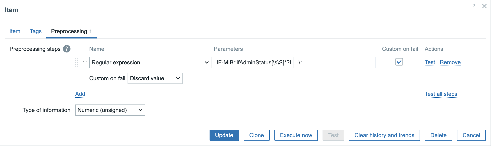
Next we create our second item also dependent on our Fallback item.
- Name: Trap ifOperStatus
- Type: Dependent item
- Key: trap.ifAdminStatus
- Type of information: Numeric(unsigned)
- Master item: (Select your fallback item as master item)
Again go to the Preprocessing tab and enter following information.
Select Regular expression and for Parameters enter IF-MIB::ifOperStatus[\s\S]*?INTEGER:\s+(\d+)
and \1 in the Output box.
Again add a Custom on fail step and select Discard value.
We have our items now but we still are missing our trigger. Go back to your host and click on the triggers and add the following trigger.
Name: Problem (Link down:) Severity: Warning
Problem expression: last(/Network Switch 01/trap.ifOperStatus)=2 and last(/Network Switch 01/trap.ifAdminStatus)=2
Recovery expression: last(/Network Switch 01/trap.ifOperStatus)=1 and last(/Network Switch 01/trap.ifAdminStatus)=1
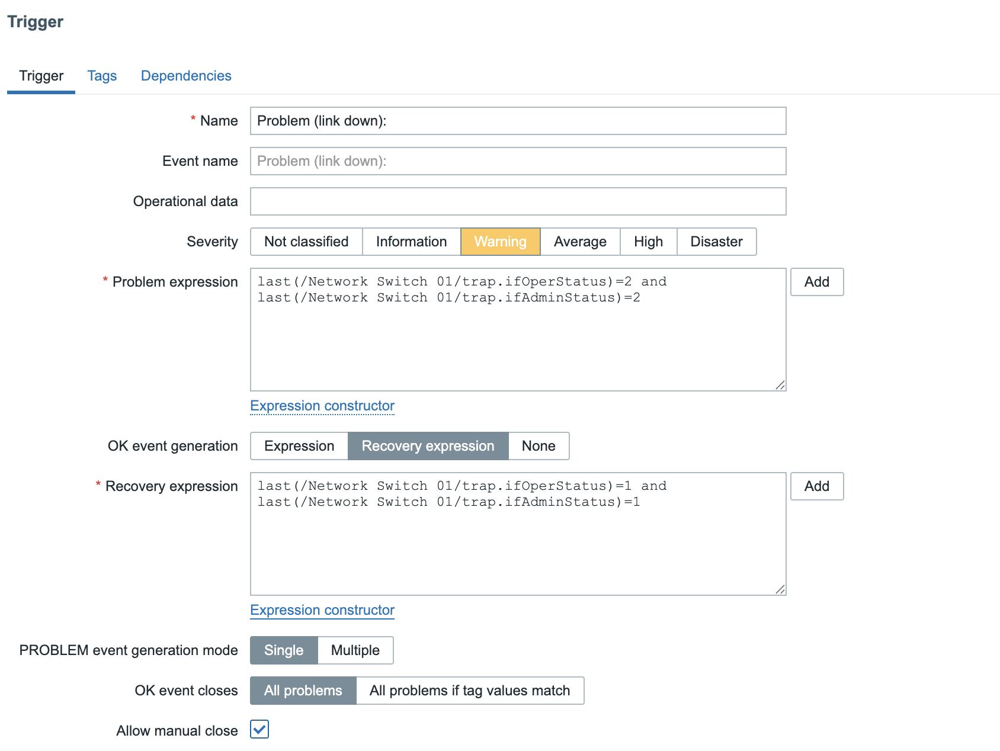
Make sure to also select the box Allow manual close. This can help to close
the problem in case we don't receive a TRAP.
You should now be able to sent a trap to open and close a problem in Zabbix based on the status of the ifOperStatus and the ifAdminStatus
snmptrap -v 2c -c public 127.0.0.1 '' IF-MIB::linkDown IF-MIB::ifIndex i 1 IF-MIB::ifAdminStatus i 2 IF-MIB::ifOperStatus i 2 IF-MIB::ifName s "Gi0/1" IF-MIB::ifDescr s "GigabitEthernet0/1"
snmptrap -v 2c -c public 127.0.0.1 '' IF-MIB::linkDown IF-MIB::ifIndex i 1 IF-MIB::ifAdminStatus i 1 IF-MIB::ifOperStatus i 1 IF-MIB::ifName s "Gi0/1" IF-MIB::ifDescr s "GigabitEthernet0/1"
As a bonus you can add on the host a value map and link the items with it.

If you don't like 2 different items and want to be more fancy you could create an dependent item like we did above and use JS instead of perl regex.
var s = value;
function grab(re) {
var m = s.match(re);
return m ? m[1] : '';
}
// Extract fields from your sample payload
var ifName = grab(/IF-MIB::ifName[\s\S]*?STRING:\s+"([^"]+)"/m);
var admin = grab(/IF-MIB::ifAdminStatus[\s\S]*?INTEGER:\s+(\d+)/m);
var oper = grab(/IF-MIB::ifOperStatus[\s\S]*?INTEGER:\s+(\d+)/m);
// Map 1/2/3 -> up/down/testing
var map = { '1':'up', '2':'down', '3':'testing' };
var a = map[admin] || admin || '?';
var o = map[oper] || oper || '?';
var name = ifName || 'ifName=?';
return 'interface=' + name + ' adminStatus=' + a + ' operStatus=' + o;
interface=Gi0/1 adminStatus=down operStatus=down
Another solution way more easy could be to create a specific item instead of falling back on the fallback item that looks exactly for a link that goes Down or Up. This can be done by creating a specific item like this:
snmptrap["IF-MIB::link(Down|Up)"]
We could then create a trigger like:
str(/Network Switch 01/snmptrap["IF-MIB::link(Down|Up)"],"IF-MIB::linkDown")=1
and a recovery trigger like :
str(/Network Switch 01/snmptrap["IF-MIB::link(Down|Up)"],"IF-MIB::linkUp")=1
As you can see the solutions are endless and SNMP traps are not so easy and probably need some tweaking before you have it all working like you want.
Note
The snmptrap.fallback is a good point to start with if you have no clue what traps to expect it can help you to discover all the traps and stay to be sure you catch all traps even if they are not configured on your host.
Deploying bare minimum MIB files
Gathering proper MIB files might sounds a tedious and time consuming task.
Installing too many MIBs will cause degradation for the SNMP trap translation process and slow down the SNMP polling process.
Here is an universal method (treat it as one option) on how to obtain bare minimum MIBs to work with most of devices. This is useful for SNMP polling too.
The project https://github.com/netdisco/netdisco-mibs exist for 20 years and is a collection of MIBs for a lot of vendors. Dare I say: all vendors?
To install/replace the Linux distribution stock MIB bundle:
# move to /tmp
cd /tmp
# download
curl -kL https://github.com/netdisco/netdisco-mibs/archive/refs/heads/master.zip -o /tmp/netdisco-mibs.zip
# unpack. this will create '/tmp/netdisco-mibs-master' directory
unzip /tmp/netdisco-mibs.zip -d /tmp
# remove existing/official MIBs from Linux distribution
rm -rf /usr/share/snmp/mibs/*
# install Netdisco collection. it will move all directories which start with lower case letter or digit
find /tmp/netdisco-mibs-master -mindepth 1 -maxdepth 1 -type d -name '[a-z0-9]*' -exec mv {} /usr/share/snmp/mibs/ \;
# list what is installed
ls -1 /usr/share/snmp/mibs
# cleanup
rm -rf /tmp/netdisco*
To enable bare minimum MIBs we need to enable two catalogs "rfc" and "net-snmp".
Overwrite/replace configuration by using:
echo "
mibs :
mibdirs /usr/share/snmp/mibs/rfc:/usr/share/snmp/mibs/net-snmp
mibs +ALL
" | sudo tee /etc/snmp/snmp.conf
Fun fact
Modifying /etc/snmp/snmp.conf file the changes are applied on the fly. No need to restart anything.
Include another vendor
Let's say we need to work with Cisco equipment. We can double-check if vendor is included in Netdisco bundle. Grep for case insensitive name:
If the vendor is in list, then include "cisco" directory together with "rfc" and "net-snmp" directory, like this:
echo "
mibs :
mibdirs /usr/share/snmp/mibs/rfc:/usr/share/snmp/mibs/net-snmp:/usr/share/snmp/mibs/cisco
mibs +ALL
" | sudo tee /etc/snmp/snmp.conf
Adding multiple vendors is possible but it will slow down the translation speed. Adding plus one vendor usually add at least 1s more to the translation speed.
Conclusion
We started by setting up the trap reception environment using snmptrapd and the zabbix_trap_receiver.pl script, then integrated it into Zabbix through the SNMP Trapper process. You also learned how to open the necessary firewall ports, configure log rotation for the trap file, and verify successful reception using test traps.
In the Zabbix frontend, we created a host representing our SNMP device, added a catch-all trap item, and built dependent items to extract key values such as ifAdminStatus and ifOperStatus. From there, we constructed a simple yet effective trigger pair that raises an alert when a linkDown trap is received and automatically resolves it when a linkUp trap arrives.
Combine traps with SNMP polling to balance real-time alerts with long-term performance metrics.
SNMP traps are one of the most powerful mechanisms in Zabbix for achieving proactive monitoring. When properly configured, they provide immediate visibility into the health and state of your infrastructure, allowing you to respond to issues the moment they happen, not minutes later.
Questions
- What is the key difference between SNMP polling and SNMP traps in how they collect data?
- Why are SNMP traps often described as active monitoring while SNMP polling is passive?
- What is the purpose of the zabbix_trap_receiver.pl script, and where is it defined in the SNMP configuration?
- What role does the parameter StartSNMPTrapper play in zabbix_server.conf?
- In what kind of situations would you prefer SNMP traps over polling?
- How could you use SNMP traps in combination with SNMP polling for a hybrid monitoring strategy?
Useful URLs
- https://www.zabbix.com/documentation/current/en/manual/config/items/itemtypes/snmptrap
- https://git.zabbix.com/projects/ZBX/repos/zabbix/browse/misc/snmptrap
- https://www.net-snmp.org/
- https://datatracker.ietf.org/doc/html/rfc3416
- https://datatracker.ietf.org/doc/html/rfc1905
- https://datatracker.ietf.org/doc/html/rfc1157
HTTP Items
In modern environments, monitoring stops being useful the moment you only check whether a port is open. Applications, platforms, and integrations increasingly communicate over HTTP-based APIs, and if you want to understand whether something is actually working, you need to monitor it at that level.
The HTTP agent item allows Zabbix to act as a native HTTP client. It can send HTTP or HTTPS requests, authenticate, include custom headers, send payloads, and process responses as structured monitoring data. This makes it possible to monitor REST APIs, web services, internal microservices, SaaS integrations, and even the Zabbix API itself,without external scripts or custom agents.
At a beginner level, the HTTP agent answers the question “does this endpoint respond?”. At an expert level, it answers “is this application behaving correctly, securely, and predictably under real conditions?”.
With the release of the Zabbix 7.x serie, the HTTP agent has become more efficient and user friendly, featuring realtime configuration validation and improved connection handling.
How the HTTP Agent Item Works
An HTTP agent item is executed by the Zabbix server or a Zabbix proxy. For each execution, Zabbix performs exactly one HTTP request based on the configured parameters and stores a result derived from the response.
Zabbix does not decide whether a response is “good” or “bad”. It records facts: headers and body content. Interpretation is left entirely to preprocessing and triggers. This design makes the HTTP agent item flexible enough to support both simple availability checks and advanced API monitoring.
Internally, Zabbix uses libcurl to perform HTTP and HTTPS requests. This is an important implementation detail. Redirect handling, TLS negotiation, proxy behavior, timeout semantics, and error reporting all follow curl behavior. If a request can be reproduced successfully using the curl command line, it can almost always be made to work in Zabbix with the same parameters.
Efficiency: Persistent and Asynchronous Connections
Since Zabbix 7.0, the HTTP agent supports Persistent Connections. Instead of opening and closing a new TCP connection for every check, Zabbix can keep the connection open. This significantly reduces CPU overhead and network latency, especially when polling high frequency API endpoints.
Also since Zabbix 7.0 HTTP pollers are asynchronous, execution order and timing are not as simple as “one poller, one request”.
An HTTP poller can initiate hundreds of requests, (1000 per poller to be precise) wait for responses, and process completed transactions while other requests are still in flight. This makes HTTP monitoring efficient, but it also means that slow endpoints do not block fast ones, as long as poller capacity is not exhausted.
However, timeouts still matter. A large number of slow or failing endpoints with long timeouts can consume concurrency slots and reduce effective throughput. This is another reason why conservative timeout values and reasonable polling intervals are critical in large environments.
Understanding that HTTP agent items are asynchronous helps explain why increasing poller counts rarely fixes poorly behaving endpoints.
Core Request Configuration
Every HTTP agent item starts with a URL. This must be a fully qualified HTTP or HTTPS endpoint, including the scheme and path. Zabbix sends exactly what you configure; it does not infer protocols or rewrite requests.
The request method defines how the request is sent. GET is the default and works well for most health checks and read only API calls. POST, PUT, PATCH, and DELETE are available and commonly required for REST APIs that expect structured input.
When the chosen method supports it, a request body can be defined. The body is sent verbatim. Zabbix does not validate JSON syntax, escape characters, or infer content types. Any formatting errors are passed directly to the remote endpoint.
To ensure the request is interpreted correctly, HTTP headers can be defined explicitly. This is where authentication tokens, API keys, content types, and vendorspecific headers belong. Headers are static per item, which is intentional and has implications for advanced use cases discussed later.
- Request Method: GET is the default, but POST, PUT, PATCH, and DELETE are available for interactive APIs.
- Request Body: You can define a body for methods like POST. Zabbix has improved the handling of JSON and XML types. When you select these, Zabbix automatically sets the correct Content-Type header (e.g., application/json) if you haven't specified one manually.
Headers: This is where authentication tokens and vendor-specific requirements belong.
Expert Tip : Always use Secret Macros (e.g., {$API.TOKEN}) for headers containing credentials to ensure they are masked in the UI and logs.
HTTPS, Certificates, and Trust
HTTPS support for HTTP agent items depends on the environment in which the Zabbix server or proxy runs. HTTP agent items do not maintain their own certificate store. All TLS validation is performed using the system trust store available to the Zabbix process.
If an endpoint uses an internal or private certificate authority, that CA must be trusted by the operating system running Zabbix. Installing a certificate in a browser does nothing for Zabbix.
Disabling certificate verification at the item level may make errors disappear, but it also disables meaningful security checks, including hostname validation. In production environments, this should be treated as a temporary diagnostic step, not a solution.
For APIs that require mutual TLS, Zabbix supports client certificates. The HTTP agent item references the certificate and private key, but the files themselves must exist on disk and be readable by the Zabbix process. Permission issues here often surface as generic TLS failures, so testing with curl using the same certificate and key is strongly recommended.
Timeouts: What They Really Mean
The timeout parameter of the HTTP agent item is often misunderstood, and the distinction matters in production.
The configured timeout is not a single, shared budget for the entire request. Instead, it is applied to multiple blocking phases of the HTTP transaction, following libcurl behavior.
Conceptually, the timeout applies to:
- DNS resolution
- TCP connection establishment
- TLS handshake (for HTTPS)
- Sending the request
- Waiting for the response
- Receiving the response body
These phases occur sequentially, and each phase can consume up to the configured timeout.
As a result, the total wall clock execution time can exceed the configured timeout. This is why users sometimes observe behavior that looks like “double timeout”.
For example, with a timeout of 10 seconds:
- Connection and TLS negotiation take 9 seconds
- The server then takes 9 seconds to respond
The request may complete after roughly 18 seconds without violating timeout rules.
This is not a bug. It is a consequence of exposing a single timeout value rather than separate connect and read timeouts.
From an expert perspective, this means the timeout should not be treated as a strict SLA boundary. Always leave margin between expected response time and configured timeout, especially for APIs that perform backend processing.
What Becomes the Item Value
The HTTP agent item allows you to choose what part of the HTTP response is stored as the item value.
Zabbix can store the response body, the response headers, or the HTTP status code. This choice has architectural implications.
Storing the full response body allows multiple dependent items to extract different values from a single request. Storing only the status code creates a lightweight availability or correctness check with minimal processing overhead.
At scale, choosing the correct retrieval mode reduces API load, minimizes network traffic, and keeps Zabbix performance predictable.
Preprocessing and Structured Data
Most APIs return structured data, commonly JSON. Preprocessing allows Zabbix to extract specific values using JSONPath expressions, regular expressions, or text transformations.
A common expert pattern is to create one HTTP agent item that retrieves structured data and several dependent items that extract individual metrics. This avoids repeated API calls and ensures consistency between related values.
Preprocessing is performed entirely on the Zabbix side after the request completes and does not affect the request itself.
HTTP Agent Pollers and Server Configuration
HTTP agent items are executed by a dedicated pool of processes called HTTP pollers. These are separate from regular pollers and are configured explicitly in the Zabbix server or proxy configuration file.
The number of HTTP pollers is controlled by the StartHTTPAgentPollers parameter. If this value is set to zero, HTTP agent items will not be executed at all, regardless of how many are configured in the frontend. This is an easy oversight when enabling HTTP monitoring for the first time.
Choosing the correct number of HTTP pollers is not about matching the number of items one-to-one. Since Zabbix 7.0, HTTP pollers are fully asynchronous. A single HTTP poller can manage up to 1000 concurrent HTTP requests internally, using non-blocking I/O.
This is a fundamental architectural change compared to older Zabbix versions and explains why HTTP agent items scale far better than many users expect. Increasing StartHTTPAgentPollers is usually only required when dealing with extreme request volumes, very slow endpoints, or aggressive timeout values.
From an expert perspective, it is often better to tune timeouts and polling intervals before increasing the number of HTTP pollers. Adding pollers increases concurrency, but it also increases memory usage and outbound network pressure.
Accepted HTTP Response Codes and Unsupported Items
By default, Zabbix expects HTTP responses to return status codes that are explicitly allowed for the item. If the response code does not match what is configured, the item becomes unsupported.
This behavior is often misunderstood. An unsupported item is not the same as a failed check. It indicates that Zabbix considers the response invalid for this item's definition.
Zabbix allows you to define accepted response codes in a flexible way. You can specify a single code, a comma-separated list of codes, or ranges of codes. This makes it possible to model real application behavior accurately.
For example, some APIs legitimately return 204 No Content on success, while others use 202 Accepted for asynchronous processing. If these codes are not listed as acceptable, Zabbix will mark the item unsupported even though the service is behaving correctly.
At an expert level, this mechanism is extremely useful. It allows you to distinguish between “the endpoint responded, but not in an acceptable way” and genuine transport-level failures such as timeouts or TLS errors.
Redirect Handling Limits
When redirect following is enabled, Zabbix will automatically follow HTTP redirects. However, this behavior is not unlimited.
Zabbix follows up to 10 HTTP redirects per request. If this limit is exceeded, the request fails. This protects the server from redirect loops and misconfigured endpoints.
In practice, production APIs and web services should never approach this limit. If they do, it usually indicates a configuration error that should be addressed rather than worked around.
For authenticated APIs, redirects should be used with caution. Authentication headers are not always resent across redirects, especially when hosts or protocols change. Monitoring the final endpoint directly is often the safer choice.
Enable Trapping: Pushing Data Instead of Pulling
HTTP agent items are typically used in a polling model, where Zabbix initiates the request. However, Zabbix also supports a hybrid approach through the “Enable trapping” option.
When trapping is enabled, the item can accept data pushed to it using zabbix_sender or the Zabbix API history.push method. This allows external systems or applications to send web content or processed results directly into Zabbix.
This is particularly useful in scenarios where the web application itself is capable of detecting important events and generating alerts. Instead of Zabbix repeatedly polling an endpoint, the application can push meaningful data when something noteworthy happens.
From an architectural standpoint, this turns the HTTP agent item into a flexible ingestion point rather than a pure polling mechanism. It is not a replacement for polling, but a powerful complement when event-driven monitoring makes more sense.
Practical Example: Monitoring the Zabbix API
The Zabbix API itself is a good example of HTTP agent usage because it is strict, well-defined, and widely deployed.
Authenticating to the API
The Zabbix API uses JSON-RPC over HTTP. Authentication is performed by calling the user.login method. Another better way is to use an API token and pass it in the Authorization header in the headers section.
The endpoint is typically:
The HTTP agent item is configured with a POST request and the following body:
The Content-Type header must be set to application/json. Without it, the API
will reject the request.
The response looks like this:

Using JSONPath preprocessing with $.result, the authentication token can be extracted.
Retrieving Data
The returned version string can be stored as a text item or evaluated by triggers. While this example is simple, the same pattern applies to retrieving problem counts, host statistics, or internal API data.
HTTP agent items are best suited for stateless, deterministic API calls. Token reuse and session orchestration are intentionally limited and should be handled externally if required.
Runtime Debugging and Logging
Debugging HTTP agent items does not require restarting the Zabbix server or proxy. Zabbix supports runtime log level control, including per-process adjustments.
HTTP agent items are executed by HTTP poller processes. To debug HTTP agent behavior specifically, logging should be increased only for those processes.
This is done using runtime control commands:
or on a proxy:
This approach allows detailed libcurl-level diagnostics without restarting services or flooding logs from unrelated processes.
When debug logging is enabled, the Zabbix log will show detailed information about DNS resolution, TLS negotiation, certificate validation, proxy usage, and timeout behavior. These messages are the authoritative source of truth when troubleshooting HTTP agent issues.
Always enable debugging on the node that actually executes the item. If a host is monitored via a proxy, increasing logging on the server will show nothing.
HTTP Agent Item Parameters Reference
The table below summarizes the key HTTP agent parameters and their purpose.
| Parameter | Description |
|---|---|
| URL | Full HTTP or HTTPS endpoint Zabbix will request. |
| Request method | HTTP method used for the request (GET, POST, PUT, PATCH, DELETE). |
| Request body | Optional payload sent verbatim with supported methods. |
| HTTP headers | Custom headers such as authentication tokens or content types. |
| Timeout | Maximum duration applied per blocking phase of the request lifecycle. |
| Follow redirects | Enables or disables automatic redirect handling. |
| HTTP authentication | Built-in HTTP authentication supported by libcurl. |
| Proxy | Optional HTTP proxy used for the request. |
| Retrieve mode | Determines whether body, headers, or status code is stored. |
| SSL verify peer | Enables or disables server certificate validation. |
| SSL verify host | Enables or disables hostname verification. |
| Client certificate | Client certificate for mutual TLS authentication. |
| Client key | Private key associated with the client certificate. |
| Preprocessing | Transforms responses into usable metrics. |
Conclusion
The HTTP agent item is one of the most powerful and misunderstood tools in Zabbix. It allows Zabbix to observe systems the same way applications and users do: through HTTP.
Used casually, it checks availability. Used deliberately, it becomes a precise, scalable, and secure API monitoring mechanism.
Understanding how it behaves internally — how timeouts are applied, how certificates are validated, and how logging really works — is what turns it from a feature into a tool.
Or, as every experienced API engineer eventually learns:
“HTTP is simple — until you assume it is.”
Questions
- Why does the HTTP agent item treat an HTTP 500 response differently from a timeout or TLS failure, and how should this influence trigger design?
- In what situations would using dependent items with a single HTTP agent item be preferable to creating multiple independent HTTP agent items?
- How does the asynchronous execution model of HTTP pollers change the way HTTP monitoring scales compared to traditional pollers?
Useful URLs
Preprocessing
In the previous part of this book about SNMP polling we started using some preprocessing. We used it to extract data from our bulk collected SNMP items as well as manipulate how the data is stored in our Zabbix database.
Without properly understanding this underlying technical functionality however, we do not have the correct foundation to understand what preprocessing is. As such, let's have a more detailed look into what preprocessing is exactly, how we can use it and why it is such an important part of our Zabbix environment.
Preprocessing functionality
The preprocessing functionality in our Zabbix environment is used to transform received data from our hosts on items. It allows us to process data before it is stored into our Zabbix database, it's right in the name preprocessing. Whenever we configure an item in our Zabbix environment, it's possible for us to apply the preprocessing logic and alter the incoming data.
We do this on the item configuration, under the preprocessing tab of the item we are editing.

4.35 Preprocessing item tab
Here we can add our preprocessing steps by pressing the add button and selecting a step. However, before we dive deeper into how to create our steps let's have a look at exactly what preprocessing does within our Zabbix application.
For our Zabbix monitoring to function as it does, we have to have a collector process running. A process like the Pollers, SNMP Pollers, Trappers and all of the other ones. These processes are in charge of connecting over the network to collect a value using a specific protocol like the Zabbix agent or SNMP. In case of the Trappers, the process is waiting around to receive data instead. They have one thing in common however and that is that at one point data will be received on that process.
When the data is received, Zabbix server or proxy will always send data through the preprocessor. This happens before the data is stored in the Zabbix database and that is why it is called preprocessing. We process the data before we store it in the database.
 4.36 Preprocessing basic functionality
4.36 Preprocessing basic functionality
When data is received, Zabbix will internally kick of a few steps. First, it will add the received metric on your item to the preprocessing queue. From the processing queue, the processing manager will find a free preprocessing worker process will be found. One preprocessing worker can handle the preprocessing steps for a single item at the time. Once the preprocessing worker is done, the processed item moves on to the next step in our Zabbix server or proxy processes and the worker is free to handle the next item preprocessing.
Various types of preprocessing
There are several types of preprocessing available, all of which will process and output our data in a different way. This is the current list of preprocessing steps available:
- Regular expression is a simple way (once you understand regex) to extract data.
- Replace is used to replace one value with another, especially useful to replace string with numeric.
- Trim is used to trim characters from both the left and right side at the same time.
- Right trim is used to trim characters from right side.
-
Left trim is used to trim characters from left side.
-
XML XPath is used to extract specific data from XML.
- JSONPath is used to extract specific data from JSON.
- CSV to JSON is used to convert collected CSV data to JSON.
-
XML to JSON is used to convert collected XML data to JSON.
-
SNMP walk value is used to extract a specific SNMP OID from a larger SNMP walk. Also used to format UTF8 or MAC as HEX, as well as BITS as integer.
- SNMP walk to JSON is used to convert an SNMP walk to JSON format (ready for low level discovery).
-
SNMP get value is used to format an SNMP get value in UTF8 or MAC format as HEX, as well as BITS as integer.
-
Custom multiplier is a simple mathematical multiplier, which can also be used to divide.
-
Simple change is a simple calculation to get the difference between the last and previous value.
-
Change per second is a calculation to get the difference between the last and previous value based on the number of seconds that have passed between them.
-
Boolean to decimal is used to convert the aforementioned value.
- Octal to decimal is used to convert the aforementioned value.
-
HExadecimal to decimal is used to convert the aforementioned value.
-
Javascript is an extensive preprocessor, where we can use Javascript Duktape engine to apply complex scripts for processing.
-
In range is used to validate if the value falls within a defined range.
- Matches regular expression is used to validate if the value matches the regular expression.
- Does not match regular expression is used to validate if the value does not match the regular expression.
- Check for error in JSON is used to validate if there are errors in the received JSON.
- Check for error in XML is used to validate if there are errors in the received XML.
- Check for error using regular expression is used to validate if there are errors using an regular expression.
-
Check for not supported value is used to validate if no value could be received.
-
Discard unchanged is used to discard any duplicate values.
-
Discard unchanged with heartbeat is used to discard any duplicate values, but still save it if the heartbeat has passed.
-
Prometheus pattern is used to extract values from prometheus data.
- Prometheus to JSON is used to convert prometheus data to JSON data (ready for low level discovery).
Detailed examples of most important preprocessing
When working with Zabbix, you will find that depending on your environment, some preprocessing steps are used more than others. Some of the most used ones are important to properly understand their functioning.
Regular expression Regular expressions are a whole subject on its own, there are many books on the topic on its own. We won't going over the details here, for that we recommend going to https://regex101.com. On this website you can read extensive documentation about regular expressions, as well as test your existing ones.
Let's start with a basic example, where we have an item that received the value: The error is value: 0. Let's say we want to get numeric value from the string, we could configure our preprocessing like this.
 4.37 Preprocessing regular expression
4.37 Preprocessing regular expression
This would then result in the value 0, which we can store as the Numeric (unsigned) item type of information. The basic functionality of the regular expression preprocessing step as you can see is to extract values from larger data.
JSONPath and additional steps Within Zabbix monitoring, JSON data structures are used quite a lot. We can find it in Low Level Discovery, export files and it is often the data format sent back by API's. As such, being able to process JSON datasets is important and that is where JSONPath comes in. Let's say we have a basic JSON dataset we collected from an API.
Now with JSONpath, we could extract these values. Let's say we want to get the enabled value and store it as a Numeric (unsigned) value. We could do the following.
 4.38 Preprocessing JSONPath
4.38 Preprocessing JSONPath
This will extract the value true. However, as a bonus we said we would also to store this extracted value as a Numeric (unsigned) value. To do this, I used an additional 2 preprocessing steps replace. Replacing false with 0 and true with 1. If we press the Test all steps button, we can see the result happen live.
 4.39 Preprocessing JSONPath test
4.39 Preprocessing JSONPath test
It's important to know that we can add an unlimited amount of preprocessing steps, but that Zabbix will always execute all of them in the order in which they are defined. First, we extract the value from JSON. Second, we try to replace false with 0 which didn't do anything as there was no match. Third, we replace true with 1 which worked. Now all we have to do is apply a value mapping to translate true and false back into human readable format. The big benefit here being that storing these kinds of values as Numeric (unsigned) gives us a lot more trigger functions as options for alerting. It also means we can now store the value in Trend tables, as only Numeric data types are stores as trends.
SNMP walk value
SNMP walk to JSON
Custom multiplier The customer multiplier is simple, but important. In Zabbix you might often find that you receive a value, that you would want to store slightly differently. Specifically, this preprocessing step is often used to convert numbers to their base value. Your device might be giving you MegaBytes (MB) for example, where Zabbix would like us to store Bytes (B) instead.
 4.40 Preprocessing Custom Multiplier
4.40 Preprocessing Custom Multiplier
This will now store the received MegaByte value as Bytes. Now, we can set the item Units setting to B and it will convert the Bytes stored to a human readable Mega, Giga, Tera, etc.
Storing base values is always preferred in Zabbix, so we can do the conversion with Units on the item later. This results in a more dynamic setup.
Simple Change and Change per second
We quickly mentioned the Simple Change before, which calculates the difference between Last and Previous value. Change per second goes a step further however by introducing a time based calculation to the formula.
A simple change calculation would look like this.
| Position | Value |
|---|---|
| Last #1 | 9 |
| Last #2 (previous) | 4 |
| ----- | |
| 5 |
We can see the result here is a simple 5, using the formula Last - Previous. In Zabbix the last received value is often indicated by Last #1 and the value before it as Last #2. Next, let's introduce the time based calculation with Change per second, so we see something more difficult.
| Position | Value | Timestamp (Unixtime) | Change per second |
|---|---|---|---|
| Last #1 | 13 | 1763282130 | 7 |
| Last #2 (previous) | 6 | 1763282100 | 30 |
| ---- - | ------------------- - | -------------------- / | |
| 7 | 30 | 0.23333333 |
We can see the calculation is the same in principle, we subtract Last #1 and Last #2. We also takes the Unixtime stamp of when Last #1 and Last #2 were collected, subtracting those. Subtracting those time values gives us the time passed between Last #1 and Last #2. Then the last step is to divide the values, giving us an estimate of how much values were received per second. Of course, the shorter our update interval is, the closer the estimate. But it gives us an accurate average over time.
This kind of calculation works with what we call Counters, values that always increase on our monitoring targets. For example, network interfaces Bits received/sent are often times counters. These work by calculating how much data has passed over the interface in total, often since the last reboot. Often times, a useless metric to us unless we convert it with Change per second when it gives us a nice Bits/s. This allows us to monitor network traffic over time, instead of just a total.
Javascript With many APIs out there being used to make monitoring data available to us, responses are getting more complex. It might happen that you get a response that isn't perfect for us to store in Zabbix. One of my favourite examples is dates and times. Sometimes developers might decide to gives us back a string value with the dates, for example:
- Aug 21 1991
- Aug 24 1991
- May 8 1945
Using Javascript, we could convert these dates into a nice Unixtime stamp. Unixtime is something Zabbix understands as a Unit and can be used in trigger functions.
Example Javascript
// Expecting: "Feb 20 2040"
var months = {
Jan: 0, Feb: 1, Mar: 2, Apr: 3, May: 4, Jun: 5,
Jul: 6, Aug: 7, Sep: 8, Oct: 9, Nov: 10, Dec: 11
};
if (typeof value !== 'string') {
return value;
}
// Split on whitespace
var parts = value.trim().split(/\s+/);
if (parts.length !== 3) {
return value; // or throw, depending on how strict you want to be
}
var monStr = parts[0];
var day = parseInt(parts[1], 10);
var year = parseInt(parts[2], 10);
var month = months[monStr];
if (month === undefined || isNaN(day) || isNaN(year)) {
return value;
}
// Use UTC midnight of that date, convert ms ‚Üí seconds
var ts = Date.UTC(year, month, day) / 1000;
return ts;
Keep in mind, Zabbix will already put this Javascript code in a function for preprocessing as function (value) { }. When testing this code, we can see it executed for us now, converting out weird date format into a nice Unixtime.
 4.41 Preprocessing Javascript
4.41 Preprocessing Javascript
Discard unchanged with heartbeat
Shortly, I'd also like to discuss the Discard unchanged with heartbeat preprocessing in more detail. Let's say we set up our preprocessing step Discard unchanged with heartbeat with a heartbeat value of 5m. We might see the following happen.
| Value | Timestamp | Stored value? | | :---- | :-------- | | 0 | Now | No | 0 | 1m ago | Yes | 1 | 2m ago | Yes | 1 | 3m ago | No | 1 | 4m ago | No | 1 | 5m ago | No | 1 | 6m ago | No | 1 | 7m ago | No | 1 | 8m ago | Yes | 0 | 9m ago | Yes
We can see that we only store the value if it changes from 0 to 1 or from 1 to 0 in this case. However, at the 2m ago timestamp we can see an exception. This specific value had passed the 5 minute heartbeat interval, meaning we store this value even though it had not changed yet. This can be used to make sure we still save a value from time to time, which can be useful for data integrity or crafting your trigger expressions later on.
Conclusion
As we can see preprocessing can be used to turns raw received data into structured, meaningful monitoring data. Once you the various different types of preprocessing your Zabbix environment becomes cleaner and more powerful. It's useful to familiarise yourself with the various options in preprocessing, although we do not need to know all of them in detail. Different situations call for different types of preprocessing, so it's good to at least know of the existence of most of them. The Zabbix documentation also includes more details, as well as various examples.
Questions
Useful URLs
Dependent items
There are cases when you have large chunks of data which are rich of monitoring metrics. You can of course slice them with the help of scripts and so extract needed valuable pieces to be stored individually, as separate items. However, there is a native way in Zabbix which can do the very same thing without a need to involve any scripting. And that is something called "Dependent items".
Think of "Dependent items" as small fragments of your large dataset. Of course, nothing limits or tells you that your dataset must be large. It can also be small, but the smaller - the less sense the dependent items would make. When having something large to be collected, you have to collect that data only once and have the splitting being done by preprocessing.
Another use case when you might benefit from dependent items is when data collection has "high cost", in terms of time retrieving it or when network traffic matters. For example, some remote resource which you want to collect has slow network or you want to save each and every byte sent over the network, but there are multiple things in that resource which you want to monitor. Without dependent items approach you would need to retrieve that resource as many times as you have unique items, or store it once and then slice it on your own. But with dependent items, you need to collect such data only once and transform it into individual metrics just by employing native Zabbix features.
So basically, the beauty of dependent items lies in the data collection efficiency.
There are three main concepts involved when talking about "Dependent items":
- master item
- dependent item
- preprocessing
Master item is just a regular Zabbix item. It can be any type of data collection behind it - say it can be "Zabbix agent", "Zabbix trapper", "HTTP agent" item or anything else.
Once new value is collected for the master item, all of its dependent items are also updated. It has to be specified in dependent item's configuration, which item is the master item for it. One master item can have unlimited number of dependent items.
Info
Since dependent item gets updated on master item's value update, it does not have its own update interval
To be able to extract just the needed part of data from the master item, you will for sure want to apply some preprocessing. Preprocessing loves structured data. You should in all cases seek for structured data as your master item's content (e.g. json, csv, etc). This way, you will be able to extract needed data easier. When dealing with preprocessing, apply the most suitable method for particular data source format (e.g. use JSONPath for json) and understand your limits (e.g. regex is Perl flavor and JavaScript is Duktape underneath).
Hello World
Let's go through an example, the most basic one, so that you would better understand how the dependent items get updated.
First of all, we will have a simple bash script, which will create three lines of structured data.
#!/bin/bash
master_result=/tmp/master.txt
for x in {a..c}; do
echo "${x}: $((RANDOM%100))" >>${master_result}.tmp
done
mv -f ${master_result}.tmp ${master_result}
exit 0
This script is added to cron and is being run once a minute. It is kind of obvious what this script does - it outputs random number and has a prefix of one of the three letters: "a", "b" or "c":
Now this data file becomes our "master item". It will be collected by Zabbix
native item vfs.file.contents, like:

Info
Master item on its own has a little purpose of being stored, especially when it is huge. Its only purpose could be debugging, thus once operating normally, it should not be stored and that will not affect dependent items in any way
And then we can set our dependent items:

This dependent item will have the following preprocessing - it will extract number from line starting with "a":

We will then clone the first item in same fashion and get a full set of items:

Now data is being collected once and we have 3 separate numeric items, which we can use depending on our needs - draw some graphs, have some triggers on top, etc.

Dependent items from json
Previous example had a "Regular expression" as the preprocessing step. In real
life, you might often face json as your master item, so preprocessing would be
different. Of course, regexp is a universal thing so it is also suitable to
extract something from json, but there is a dedicated preprocessing type
exactly for this purpose - JSONPath.
So first let's modify our example script to produce json:
#!/bin/bash
json="{"
for x in {a..c}; do
json+="\"${x}\":\"$((RANDOM%100))\","
done
json="${json%,}"
json+="}"
echo "${json}" >/tmp/master.json
exit 0
Now we can have similar approach of one single master item and bunch of
dependent items nearby. Just this time, we would have JSONPath as
preprocessing step for dependent items.

Easy and smooth!
Dependent items and LLD
Now imagine our example script produces not {a..c} but a full alphabet,
{a..z}. We could clone dependent items one by one, but that would also
include editing the preprocessing step regexp each time as well. If you are
familiar with LLD, you most likely see where this goes. We will apply LLD here
and combine it with dependent items!
For LLD, we will use log_discovery.sh, which makes it possible to perform LLD
from log files (thus, also, from any other text files). Source for this script
can be found in the "Useful URLs" section. It will have item prototypes of
"Dependent item" type and will rely on master item in same template, just
outside of discovery.

And then item prototypes would look like:

Once LLD "magic" happens, we have all items in place:

Now by using wildcard in our dashboard "Graph" widget:

we are able to select all of our items at once. Thanks to LLD, we are able to create all of our items at once. Finally, thanks to the concept of "Dependent items", we are able to collect all of our data at once.
This is truly beautiful once you understand it.

Conclusion
Dependent items concept is a great way to become more efficient in data collection under certain circumstances.
If you have some huge structured data file or output and want to split it into separate monitoring entities - think no more. Dependent items are here for you. Same is applicable to all the other cases when you want to collect data once but have multiple separate metrics out of it.
Questions
- Does master item have to be some special type of item or it can be collected in any regular way?
- Are you limited in number of dependent items from one master item?
- What is the main benefit of using dependent items?
Useful URLs
SSH / Telnet
Let's say you have a device that doesn't support SNMP, there is no API and it's just not exposing any data (or just the data you need) via any protocol. However, you are able to login to the device and you are able to execute commands through the SSH or Telnet terminal. In this case Zabbix can still provide you with a solid option to monitor the device.
Zabbix provides us with the option to set up a remote connection through SSH or Telnet and execute any command we'd normally execute ourselves manually. We can then use our preprocessing rules and other methods to parse this information and create valuable monitoring metrics from it.
Security
Please keep in mind that Telnet sends Usernames/Passwords unencrypted over your network. This means that it is not considered a secure connection and as such it should not be used. However, if you have a device that only exposes data via Telnet, Zabbix still provides you with the option to use the protocol at your own risk.
SSH Monitoring
Let's start with the most used method, SSH. Since this is a secure encrypted connection, it is often times used to get data from devices that do not expose it via other protocols. However, our favourite use case for SSH monitoring is to get data from devices that do have SNMP or an API, but only expose certain data through the CLI. This gives you another option in gathering information you need that the vendor might not have properly exposed.
In our Zabbix frontend, let's navigate to Monitoring | Hosts and create a new host for SSH and Telnet monitoring. Let's call it cli-monitoring and put it in the hostgroup XYZ.
 4.xx Zabbix CLI Monitoring host
4.xx Zabbix CLI Monitoring host
After creating the host, click on Items for this host and then in the top right corner click on Create item. We will set the Type to SSH Agent, which we will need to create SSH based checks. Something you might not expect about this item is that the Key is automatically filled in as:
- ssh.run[
The key for SSH items is built in and we are thus forced to use this key format to make the item work. You can see however we get some key parameters to customise how it works.
: Is used to make this item unique, as we cannot have duplicate keys on Zabbix hosts. : Can we used to specify the target IP Address for SSH to connect to. Can be used if no host interface is specified : Can be used to specify a different SSH port, the default is port 22. : How to decode the remote output, is it UTF-8 or ANSI for example. : In case you have more SSH settings you want to use, these can be set here. For example you could set KexAlgorithms=curve25519-sha256;Ciphers=chacha20-poly1305@openssh.com to force stronger security : If you'd like to force this connection to use a different SSH subsystem to connect into.
As you can see we have a lot of options, but in most cases the unique short description and ip will be enough.
Let's give the item the Key value ssh.run[ssh.logins.10m,127.0.0.1] and also a Name value SSH Logins (10m). Then the trick to making this item works comes along, we need to login using SSH and execute commands.
At Authentication method we will select Password for the example, but you are also able to select Public key as an option here. Going with Public key would allow you to set:
- User name: The user to login as.
- Public key file: The path to the Public key we will use to login.
- Private key file: The path to the Private key we will use to login.
- Key passphrase: The password to decrypt the Private key.
Keep in mind, when using SSH key authentication it is important to update you Zabbix server and/or Zabbix proxy configuration file. You can set the SSHKeyLocation= parameter to for example SSHKeyLocation=/home/zabbix/.ssh/ which will be the path where the public and private keys for SSH checks (and actions) will be located. For example now you can fill in Public key file as ssh-monitoring.pub and it will use the full path /home/zabbix/.ssh/ssh-monitoring.pub.
But as we mentioned let's start with by setting Authentication method to Password. I will set my User name to ssh-monitoring and set a strong secure Password.
Fun
That was a lie, I did in fact not set a secure password as this is only a LAB environment to write examples for this book. But YOU SHOULD set a strong password, especially in production. This is also the reason we use username ssh-monitoring as we will create a separate limited user account for SSH monitoring. DO NOT use root!
Last but not least, let's add the command to execute in the Executed script field.
Executed script for SSH
At the executed script part it is also possible to add multiple commands, which Zabbix will then execute line-by-line within the same SSH session. Another option is to execute an entire script located somewhere on your device. The options are quite endless.
In this case we are executing a command through SSH on a Linux system, simply because it's an easy to explain and setup option. But of course, if I had the Zabbix agent installed on this server already I might as well have used a UserParameter (or remote command if preferred). SSH checks are way more useful on devices where no agent can be installed.
Let's go to our Linux CLI and create the account on our Zabbix server on Linux for testing.
Set that secure password we discussed earlier and then give it limited permissions
Afterwards let's double-check our item configuration, make sure everything is set up correctly.
 4.xx Zabbix CLI Monitoring SSH item
4.xx Zabbix CLI Monitoring SSH item
Do not forget to add your tag.
 4.xx Zabbix CLI Monitoring SSH item tag
4.xx Zabbix CLI Monitoring SSH item tag
This should now work as expected and when you navigate to Monitoring | Latest data you should now see a value for this host.
Note
If you are using selinux or a similar security tool, please keep in mind this can block Zabbix access to execute SSH as usual. You should check your audit logs and make sure to allow the SSH connection you'd like to setup. Do not over allow and keep things secure.
Telnet Monitoring
Telnet monitoring works almost in the exact same way as SSH monitoring, except of course the Telnet protocol is used in the background. When we navigate to Items for our cli-monitoring host again, we can click on Create item in the top right corner.
Let's add the item Type as TELNET agent and you will see the Key field already filled out just like the SSH check:
- telnet.run[
The fields are almost the same as SSH, with a few less options.
-
Let's set this one up similar to SSH with the item the Key value telnet.run[telnet.logins.10m,127.0.0.1] and also a Name value Telnet Logins (10m). Of course we also need to specify a command to execute again, so let's add this to the Executed script field.
For Telnet we will also need to specify the User name and Password fields again. Keep in mind, Telnet passwords are sent over the network unencrypted, so once a hacker is in your network the password will be known. If you do still choose to use Telnet for something, still try to set a secure password as this could help against unintelligent scripted attacks, but against a real targeted attack Telnet is useless. Only use Telnet if you make sure the user doesn't have any option to do something malicious on devices you do not care too much about. It really is a last resort monitoring option, so ask yourself is the monitoring worth more than security here?
Again, let's double-check our item configuration, to make sure everything is set up correctly.
 4.xx Zabbix CLI Monitoring Telnet item
4.xx Zabbix CLI Monitoring Telnet item
Do not forget to add your tag.
 4.xx Zabbix CLI Monitoring Telnet item tag
4.xx Zabbix CLI Monitoring Telnet item tag
Then, if you had a Telnet user set up. You can go to Monitoring | Latest data to check if the value is coming in.
Conclusion
SSH and Telnet monitoring provide you with a great fallback when traditional protocols like SNMP or API's simply aren't available. It might also be the case that a vendor hides important information within CLI commands. Using a limited user account, only granted access to specific commands, Zabbix can remotely authenticate and execute CLI commands or even entire scripts to get us raw terminal output that can be used as metrics.
When working with these two options, of course SSH will be the preferred method as it grants us the correct security for modern environments. Telnet should only be used when absolutely all other options are exhausted. In any case, the workflow remains the same in both cases: log in, run a command, preprocess the output, and then use it just like any other metric you have collected.
Questions
Useful URLs
Script item
Zabbix offers several item types for gathering data, but sometimes you need logic, multiple API calls, or data manipulation that's too complex for simple preprocessing. Script items fill that gap, they run JavaScript directly on the Zabbix Server or Proxy and can fetch, process, and return data exactly how you need it.
In this chapter, we'll explore what script items can do through two working examples:
- Checking GitHub repository stars via public API
- Querying the public weather page Open-Meteo
Understanding Script items
Script items execute JavaScript in the Zabbix backend using the built-in Duktape engine.
They're ideal when you need:
- HTTP or API calls that return JSON/XML data
- Conditional logic or loops
- Chained API requests (login + data fetch)
- Monitoring without deploying an agent
Common JavaScript objects
Zabbix provides several JavaScript objects for script items:
| Object | Purpose |
|---|---|
HttpRequest |
Perform HTTP(S) requests |
Zabbix.log(level, message) |
Log messages (level 4=debug, 3=info, etc.) |
JSON.parse() / JSON.stringify() |
Handle JSON data |
parameters.<name> |
Access item parameters defined in the UI |
Limits: up to 10 HttpRequest objects per run; typical timeout ≤ 30 seconds
(depending on item settings).
The complete list of objects can be found in the official Zabbix documentation: https://www.zabbix.com/documentation/current/en/manual/config/items/preprocessing/javascript/javascript_objects
Let's create some example scripts so that you get a better understanding of how it works.
Create a new host in Data collection -> Hosts.
- Host name: javascript
- Host groups: JS Servers
Actually name and group are not important at all in this case :) When done create an item on the host.
Example 1 – Query a public API (GitHub repository stars)
This item will return the current number of stars for a given GitHub repository using the REST API.
Item setup
| Field | Value |
|---|---|
| Name | Query Github Repository |
| Type | Script |
| Key | github.repo.stars |
| Type of information | Numeric (unsigned) |
| Unit | Stars |
| Update interval | 1h |
| Timeout | 5s |
| Parameters | owner = zabbix |
repo = zabbix |
|
token = <optional Github token> |
Note: GitHub’s API enforces rate limits for unauthenticated requests (≈60/hour per IP). Add a personal access token for higher limits.
Add the following code in the script box of the item.
// Parameters (item ‚Üí Parameters):
// owner = zabbix
// repo = zabbix
// token = <optional PAT>
// Parse parameters from `value` (JSON string)
var p = {};
try {
p = JSON.parse(value); // { owner, repo, token }
} catch (e) {
throw "Parameter JSON parse failed: " + e;
}
var owner = p.owner;
var repo = p.repo;
var token = p.token || "";
if (!owner || !repo) {
throw "Missing 'owner' or 'repo' parameter";
}
var url = "https://api.github.com/repos/" + owner + "/" + repo;
var req = new HttpRequest();
req.addHeader("User-Agent: zabbix-script-item"); // required by GitHub
req.addHeader("Accept: application/vnd.github+json");
if (token) {
req.addHeader("Authorization: Bearer " + token);
}
var body = req.get(url);
var code = req.getStatus();
if (code !== 200) {
throw "GitHub API HTTP " + code + " body=" + body;
}
var data = JSON.parse(body);
if (typeof data.stargazers_count !== "number") {
throw "Unexpected response: missing stargazers_count";
}
return data.stargazers_count;

Example trigger
In this case we get an alert if the script returns 0
Example 2 - Public weather
In this script we call Open-Meteo and ask for for information like temperature, windspeed, direction based on our longitude / latitude.
Item setup
| Field | Value |
|---|---|
| Name | Query Weather Open Meteo |
| Type | Script |
| Key | weather.openmeteo.json |
| Type of information | Text |
| Update interval | 1h |
| Parameters | latitude = 50.85, longitude = 4.7 |
temperature_unit = celsius (celsius / fahrenheit) |
|
windspeed_unit = kmh (kmh / ms / mph / kn) |
Add the following code in the script box.
// Parameters (item ‚Üí Parameters):
// latitude = 50.85
// temperaature_unit = 4.7
// windspeed_unit = kmh / ms / mph / kn
function toNumberFixLocale(s){ if(s==null)return NaN; var t=String(s).trim().replace(",","."); return parseFloat(t); }
var p={}; try{ p=JSON.parse(value);}catch(e){ throw "Param JSON parse failed: "+e; }
var lat=toNumberFixLocale(p.latitude), lon=toNumberFixLocale(p.longitude);
if(isNaN(lat)||isNaN(lon)) return JSON.stringify({ok:0,status:"BAD_COORDS",note:"Use dots, e.g. 50.85 and 4.35"});
if(lat<-90||lat>90||lon<-180||lon>180) return JSON.stringify({ok:0,status:"RANGE_ERROR"});
var tUnit=(p.temperature_unit||"celsius").toLowerCase();
var wUnit=(p.windspeed_unit||"kmh").toLowerCase();
var url="https://api.open-meteo.com/v1/forecast?latitude="+encodeURIComponent(lat)+"&longitude="+encodeURIComponent(lon)+"¤t_weather=true&temperature_unit="+encodeURIComponent(tUnit)+"&windspeed_unit="+encodeURIComponent(wUnit)+"&timezone=auto";
var req=new HttpRequest(); req.addHeader("User-Agent: zabbix-script-item");
var body=req.get(url); var code=req.getStatus();
if(code!==200) return JSON.stringify({ok:0,status:"HTTP",http:code,url:url,body:String(body).slice(0,180)});
var j; try{ j=JSON.parse(body);}catch(e){ return JSON.stringify({ok:0,status:"BAD_JSON"}); }
var cw=j.current_weather||j.current||null;
if(!cw||typeof cw.temperature!=="number"||typeof cw.windspeed!=="number") return JSON.stringify({ok:0,status:"NO_CURRENT"});
return JSON.stringify({ok:1,status:"OK",temperature:cw.temperature,windspeed:cw.windspeed,winddirection:cw.winddirection,is_day:cw.is_day,time:cw.time||""});

Next create a few dependent items that use this script as master item.
| Field | Value |
|---|---|
| Name: | Temperature |
| Key: | weather.temp |
| Type of information: | Float |
| Preprocessing | JSONPath: -> $.temperature |
| Field | Value |
|---|---|
| Name: | Windspeed |
| Key: | weather.windspeed |
| Type of information: | Float |
| Preprocessing | JSONPath: -> $.windspeed |
| Field | Value |
|---|---|
| Name: | Wind direction |
| Key: | weather.winddir |
| Type of information: | Unsigned |
| Preprocessing | JSONPath: -> $.winddirection |
| Field | Value |
|---|---|
| Name: | Is day |
| Key: | weather.is_day |
| Type of information: | Unsigned |
| Preprocessing | JSONPath: -> $.is_day |
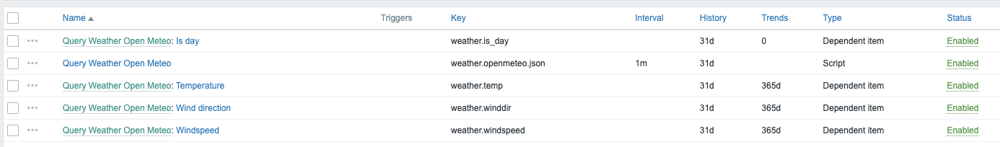
Best practices and troubleshooting
- Timeouts: Keep script execution short; APIs may delay.
- Testing: Use “Check now” in the item to see raw output.
- Logging: Use
Zabbix.log(3, "message")for debug output (appears in server or proxy log). - Error handling: Always
throwerrors instead of returning strings; Zabbix will mark the item as unsupported automatically. - Object reuse: Each script can create up to 10
HttpRequestobjects reuse one when chaining API calls. - Security: Never hard-code passwords or tokens; use macros or item parameters.
When to use Script items
Use Script items when:
- You need logic, loops, or multiple API calls.
- You monitor remote services where agents aren't available.
- You want to prototype an integration before writing a custom plugin.
For simple JSON transformations, preprocessing JavaScript might be enough, but Script items shine when you need full control.
Expert techniques for Script items
1. Debugging things
During development, use the internal logging API to trace script behavior:
Zabbix.log(4, "Debug: response body = " + body);
Zabbix.log(3, "Info: token received successfully");
Zabbix.log(2, "Warning: unexpected API reply");
Tip
- Log level
4= debug, visible only if the server log level ‚â•4. - Log level
3= informational. - The log lines are written to the Zabbix server or proxy log, not the frontend.
When a script throws an error, Zabbix automatically marks the item as unsupported.
2. Using macros and secret parameters
Always move credentials, tokens, and sensitive values to item parameters or macros rather than hard coding them.
For example:
| Parameter | Value |
|---|---|
token |
{$GITHUB_TOKEN} |
Then define {$GITHUB_TOKEN} in your host or template with secret visibility.
This allows you to reuse the same script safely across environments.
Tip
Manage secrets via template macros so that they are portable if you export the template. Store secrets in a vault instead of the DB.
3. Error handling and fallback logic
Production scripts should degrade gracefully. You can catch and handle network failures, retry, or return a fallback value:
var req = new HttpRequest();
try {
var data = req.get(parameters.url);
if (req.getStatus() !== 200)
throw "HTTP " + req.getStatus();
return JSON.parse(data).value;
}
catch (e) {
Zabbix.log(2, "Request failed: " + e);
return 0; // Fallback value for triggers
}
This script catches any errors (network failure, bad JSON, missing .value, etc.): Logs the error at severity level 2 (Warning) into the Zabbix server log. It returns a numeric 0 instead of throwing errors, so the item remains supported.
4. Caching between executions
Script items don't keep memory between runs, but you can reuse data efficiently by combining one master Script or trapper item that stores the full JSON response with several dependent items that extract individual fields. This isn't true caching inside JavaScript. It's data reuse via Zabbix history, avoiding repeated API calls.
5. Parallelization and performance considerations
Each Script item consumes one poller slot. If you have dozens of Script items that do API calls, consider:
- Running them on a proxy close to the data source (reduces latency).
- Adjusting
StartPollersandTimeoutinzabbix_server.conf. - Avoiding heavy JSON parsing or unnecessary loops.
- Using asynchronous APIs only when truly needed. Duktape executes synchronously.
A single bad Script item can block a poller for its entire timeout period, so always test and tune.
6. Returning structured data
Script items can return JSON strings which can then be used in dependent items. Example: returning a JSON object containing multiple metrics.
Then create dependent items with JSONPath like:
This allows one Script item to feed many dependent metrics. A professional optimization pattern.
7. Combining script items with preprocessing JavaScript
Advanced users often pair a Script item that performs heavy retrieval with preprocessing JavaScript that performs lightweight normalization.
Example:
- Script item fetches a full JSON payload from an API.
- Dependent item extracts a numeric value using preprocessing JavaScript:
This separates responsibilities and makes troubleshooting easier.
8. Controlling execution context
Script items always run on the poller process of either the Zabbix server or proxy. Understanding this helps when debugging:
- If an item runs on a proxy, it has network access only from the proxy’s location.
- You can force execution on a proxy by assigning the host to that proxy.
- Logs for script execution appear in the respective poller’s log file.
Info
There is a small exception when it comes to the use of the poller process. If you make use of the test button to test the item then the check will not user the poller but the task manager process.
9. Best practice checklist
- ‚úÖ Keep scripts short (<200 lines).
- ‚úÖ Always handle HTTP status codes and JSON errors.
- ‚úÖ Use parameters or macros for configuration.
- ‚úÖ Log at
Zabbix.log(3, ...)for operations andZabbix.log(4, ...)for debugging. - ‚úÖ Reuse a single
HttpRequestobject per script. - ✅ Test interactively in the frontend with “Check now”.
- ‚úÖ Document the purpose and return type at the top of each script.
12. Summary
By mastering Script items, you've reached the expert level of Zabbix data collection. You now understand not just how to fetch and return data, but how to:
- Debug effectively
- Secure your credentials
- Handle API errors gracefully
- Optimize poller usage
- Reuse scripts for multiple metrics
These skills let you integrate Zabbix with virtually any system.
Note
When a Script item is executed, Zabbix starts a Duktape JavaScript interpreter
inside the server or proxy process. For each check run, Zabbix injects a few
built-in variables into the script’s environment the most important one is
value.
value is a JSON string that contains all item parameters you defined under
Parameters ‚Üí Name / Value.
Inside the script, you must parse it first:
var p = JSON.parse(value);
You can then access the parameters by name:
var host = p.host;
var port = p.port;
If you try to reference a parameters object (as seen in some very old examples),
you will get : ReferenceError: identifier 'parameters' undefined because the
Duktape runtime does not inject such a variable anymore. All parameters are
passed inside the value JSON string.
Conclusion
Script items make Zabbix remarkably flexible — they let you collect data from any API or service with just a few lines of JavaScript. While the built-in Duktape engine is synchronous and minimal, meaning no true parallelism or advanced JS features, it’s more than enough for lightweight automation and integrations.
The key to using Script items effectively is efficiency: fetch once, reuse results through dependent items, and keep scripts small and predictable. When heavier or high-frequency polling is needed, move it closer to the data source with proxies or external collectors.
With those principles in mind, Script items become your gateway between Zabbix and the modern API world — simple, powerful, and entirely scriptable.
Questions
- What makes Script items different from external checks or user parameters in Zabbix?
- How are Script item parameters passed to the JavaScript environment in modern Zabbix versions?
- Why does using JSON.parse(value) make your scripts more portable?
- How can you avoid making multiple API calls when several metrics come from the same endpoint?
- Why are global macros usually not a good choice for secrets in exported templates?
Useful URLs
Monitoring Java Applications with JMX
One of the neat features that Zabbix offers out of the box is the ability to monitor
Java applications. To make this happen, Zabbix uses something called the
Java Gateway, which communicates with Java applications via the
Java Management Extensions JMX, for short.
JMX is a built-in Java technology designed specifically for monitoring and managing
Java applications and the Java Virtual Machine (JVM). It works through components
called MBeans (Managed Beans), which act like data sensors and control points.
These MBeans can expose useful information like memory usage, thread counts, and
even allow runtime configuration changes, all while the application is running.
One of the strengths of JMX is its flexibility. It supports both local and remote access, so whether your Java app is on the same machine or halfway across the network, Zabbix can still keep an eye on it. Combined with the Java Gateway, this makes JMX a powerful and scalable option for monitoring Java-based environments with minimal setup. Also JMX was an extension but is part of JAVA SE since java 5.
Key Concepts in JMX Monitoring
Before diving into JMX monitoring with Zabbix, it helps to get familiar with a few core building blocks that make it all work:
Managed Beans (MBeans): These are the heart of JMX. MBeans are Java objects that expose useful bits of data (called attributes) and operations (as regular methods) from your application. Think of them as little control panels inside your Java app, you can read metrics, tweak settings, or trigger actions through them.
JMX Agent: This is the engine behind the scenes. Running inside the Java Virtual Machine (JVM), the JMX agent connects everything together. It's what lets management tools (like Zabbix) interact with the MBeans.
MBean Server: A key part of the JMX agent, the MBean server is like a central registry where MBeans are registered and managed. It keeps everything organized and accessible.
Connectors: Want to monitor your Java app remotely? That's where connectors come in. They let external tools connect to the JMX agent over a network. So you're not limited to local monitoring.
Adaptors: Sometimes you need JMX data to speak a different language. Adaptors convert JMX info into formats that non-Java tools can understand, like HTTP or SNMP, making integration easier with broader monitoring ecosystems.
JMX Core Architecture
To understand how Zabbix collects data from Java applications, it helps to know the basic structure of JMX itself. JMX is built on a three-layer architecture that separates how metrics are defined, how they are stored inside the JVM, and how external tools can reach them.
-
Instrumentation Layer: This is where the application exposes its internal state through MBeans (Managed Beans). They can be standard, dynamic, or MXBeans, and represent things like memory usage, thread counts, or application specific metrics.
-
Agent Layer: – Every JVM contains an MBeanServer, which acts as a registry and makes these MBeans available for management. When you start a JVM with -Dcom.sun.management.jmxremote, you are exposing this server for external access.
-
Remote Management Layer: This is how outside tools connect to the JVM. Connectors (such as RMI or JMXMP) and adaptors (such as HTTP or SNMP bridges) allow Zabbix and other monitoring systems to fetch the metrics. By default, Zabbix uses an RMI connector via the Java Gateway.
flowchart LR
A[Application] --> B[MBeans]
B --> C[MBeanServer]
C --> D[Connector RMI - JMXMP]
D --> E[Zabbix Java Gateway]
E --> F[Zabbix Server / DB]
F --> G[Frontend]
classDef app fill:#fef3c7,stroke:#111,stroke-width:1px,color:#111;
classDef mbean fill:#dbeafe,stroke:#111,stroke-width:1px,color:#111;
classDef gateway fill:#fde68a,stroke:#111,stroke-width:1px,color:#111;
classDef zabbix fill:#bbf7d0,stroke:#111,stroke-width:1px,color:#111;
class A app;
class B,C mbean;
class D,E gateway;
class F,G zabbix;
Where Does the Zabbix Java Gateway Fit in this picture?
The Zabbix Java Gateway is an external component in the Zabbix ecosystem specifically designed to handle JMX monitoring. While it's not part of the JMX framework itself, it acts as a JMX client that connects to your Java application’s JMX agent and collects data from MBeans. So, if we map it to the components we just discussed, here's how it fits: => Category: Connectors (Client-Side)
Why? Because the Zabbix Java Gateway is essentially a remote management application that connects to the JMX agent running inside your Java app’s JVM. It uses JMX's remote communication protocols (usually over RMI) to pull data from the MBean server.
Think of it like this:
- Your Java app exposes data via MBeans.
- The JMX agent and MBean server inside the JVM make that data available.
- The Zabbix Java Gateway reaches in from the outside, asks for that data, and passes it along to your Zabbix server.
So, while connectors in JMX terminology usually refer to the part inside the JVM that allows remote access, the Java Gateway is the counterpart on the outside. The client that initiates those connections.
flowchart LR
subgraph JVM["Java Application (JVM)"]
subgraph JMX["JMX Agent"]
MBServer["MBean Server"]
Connector["Connectors"]
Adaptor["Adaptors"]
M1["MBean"]
M2["MBean"]
MBServer --- M1
MBServer --- M2
MBServer --- Connector
MBServer --- Adaptor
end
end
ZS["Zabbix Server"]
JGW["Zabbix Java Gateway"]
ZS --> JGW
JGW --> Connector
Setup Tomcat to monitor with Zabbix.
To ensure accurate testing of JMX monitoring with Zabbix, a dedicated host is essential. Although configuration on the Zabbix server is possible, a separate machine provides a more realistic representation of a production environment. For our setup, we'll use a new virtual machine running either Rocky Linux or Ubuntu. This machine will serve as our JMX-enabled target, and we'll install and configure Tomcat on it for this purpose.
Setup Tomcat
Red hat
Ubuntu Add the following config: in Ubuntu remove the original JAVA_OPTS line or place a # in frontExplanation of Each Line
Let's go over the lines we just configured. They are a set of configuration options, called JMX options, passed to the Java Virtual Machine (JVM) at startup. These options enable and configure the Java Management Extensions (JMX) agent, which allows for remote monitoring and management of the application, in this case, Apache Tomcat.
-
JAVA_OPTS="... "This is a variable used by Tomcat's startup scripts to hold a collection of command-line arguments for the Java process. The backslash (\) at the end of each line is a shell syntax feature that allows a single command or variable to span multiple lines, making the configuration easier to read. -
-Dcom.sun.management.jmxremote=trueThis is the main switch to enable the JMX remote agent. By setting this totrue, you're telling the JVM to start the JMX management server. -
-Dcom.sun.management.jmxremote.port=8686This option specifies the port number for the JMX agent to listen on for incoming connections. In this case, it's set to8686. -
-Dcom.sun.management.jmxremote.rmi.port=8686This sets the port for the RMI (Remote Method Invocation) server. The JMX agent uses RMI to communicate with remote clients. In this configuration, both the JMX agent and the RMI server are configured to use the same port, simplifying the setup. -
-Dcom.sun.management.jmxremote.authenticate=falseThis disables authentication for JMX connections. For production environments, this should be set totrueto require a username and password. Setting it tofalseis only suitable for development or testing environments. -
-Dcom.sun.management.jmxremote.ssl=falseThis disables Secure Sockets Layer (SSL) for JMX connections, meaning communication is not encrypted. Like authentication, this should be set totruein a production environment to secure the connection. -
-Djava.rmi.server.hostname=<local ip>"This is a crucial option that tells the RMI server which IP address to announce to clients. Clients will use this hostname to connect to the server. If this is not explicitly set, the RMI server might use the server's internal hostname or a loopback address (127.0.0.1), which would prevent external connections. By setting it to<your local IP>, you ensure that the JMX port is bound to the correct network interface for remote access.
Note
There isn't a single, universally "standard" port for JMX that is accepted
across all applications and vendors. The JMX specification itself does not
define a default port, leaving it to the implementer to choose one.
However, certain ports have become common or de facto standards within the Java
ecosystem. The most frequently seen ports for JMX are in the high-number range,
typically:
- 1099: This port is a historic default for the RMI Registry, which JMX often
uses for communication. While it's not strictly a JMX port, it's often
associated with older JMX configurations.
- 8686: This port is a well-accepted and formally registered port for JMX with
the Internet Assigned Numbers Authority (IANA). The IANA service name for port
8686 is sun-as-jmxrmi. This makes it a great choice because it's officially
recognized and less likely to conflict with other common services.
Why Port 8686 is a Good Choice?
Port 8686 is a User Port (1024-49151), which means it's available for registered
services but isn't a "well known" port that requires a special permission level
to use. It's IANA registration as sun-as-jmxrmi makes it a safe and logical
choice for JMX monitoring, especially when you need to standardize port assignments
across a large infrastructure.
Setup Zabbix to monitor JMX
Now that we've set up a JMX-enabled application, we need to configure Zabbix to monitor it. Since Zabbix can't connect directly to JMX endpoints, we need an intermediary tool: the Zabbix Java Gateway.
This gateway needs to be installed and configured on your Zabbix server or proxy, allowing a single gateway to service multiple JMX applications. The gateway operates in a passive mode, which means it polls data directly from your JMX application. The Zabbix server or proxy then polls the gateway to retrieve this data, completing the connection chain.
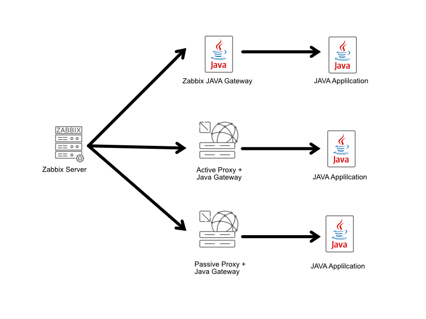
04.35 JMX Gateway
Install the JAVA Gateway
Red Hat
UbuntuConfiguring Zabbix and the JAVA Gateway
After installing the gateway, you'll find its configuration file at /etc/zabbix/zabbix_java_gateway.conf.
The default LISTEN_IP is set to 0.0.0.0, which means it listens on all network
interfaces, though you can change this. The gateway listens on port 10052, a non
IANA registered port, which can also be adjusted using the LISTEN_PORT option
if needed.
The first setting we'll change is START_POLLERS. We need to uncomment this line
and set a value, for example, START_POLLERS=5 to define the number of concurrent
connections. The TIMEOUT option controls network operation timeouts, while
PROPERTIES_FILE allows you to define or override additional key-value properties,
such as a keystore password, without exposing them in a command line.
For your Zabbix server, you'll need to update the configuration file at /etc/zabbix/zabbix_server.conf.
You'll need to modify three key options:
-
JavaGateway: Uncomment this line and set its value to the IP address of the host running your Java gateway. This will likely be your Zabbix server itself, but it can be on a separate VM or proxy.
-
JavaGatewayPort: This option should remain at the default
10052unless you've changed the port in your gateway's configuration. -
StartJavaPollers: Uncomment and set this option to define the number of concurrent Java pollers the server will use. A good starting point is to match the number you set on the gateway, for example, 5.
After making the changes to /etc/zabbix/zabbix_server.conf and /etc/zabbix/zabbix_java_gateway.conf,
you need to restart the following services:
- Zabbix Java Gateway
- Zabbix Server
Restarting these two services applies the new configuration, allowing the server
to communicate with the Java Gateway and begin polling for JMX data. Also don't
forget to enable the Zabbix Java Gateway service.
Restart the services
RedHat and Ubuntu
On the application side don't forget to open the firewall so that our
zabbix-java-gateway can connect to our application.
Allow JMX
Red Hat
Ubuntu
Warning
Monitoring JMX items
After having setup everything, we can now connect to our Java application's JMX port to verify everything is working.
For this, we can use JConsole, a monitoring tool that comes with the Java Development Kit (JDK). Another great option is VisualVM, which offers a more visual and feature rich experience. You can download it from https://visualvm.github.io/download.html.
Start your preferred application and connect to our JMX port on 8686.
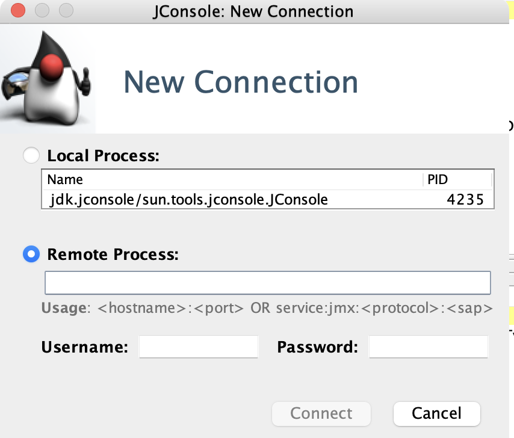
04.36 Jconsole
After a successful login you should be greeted with a screen like this. Were you have a tree view overview of all the Mbeans we can use to gather information from.

04.37 Login screen
Before we can do this we need to create a new host in our Zabbix server. Let's
go to Data collection - Hosts and click on Create host in the upper right
corner. Use the following settings to create our host:
- Hostname : Tomcat
- Host groups: JMX
- Interfaces: JMX
- IP address: IP of your Tomcat server
- Port : 8686 or the port you specified in your Tomcat configuration.
Press the Add button when ready.
Note
Create our first item
On our host Tomcat create a new item and add the following information.
- Name: requestCount
- Type: JMX Agent
- Key: jmx["Catalina:type=GlobalRequestProcessor,name=\"http-nio-8080\"", "requestCount"]
- Type of information: Numeric(unsigned)
- Host interface: The JMX interface we just created on our host.

ch04.38 JMX item
Verifying and Saving the Item
To understand how we constructed the item key, let's look at the process in JConsole.
-
Navigate to the MBeans tab and expand Catalina > GlobalRequestProcessor > http-nio-8080.
-
The ObjectNAme field on the right displays the MBean's fully qualified name:
Catalina:type=GlobalRequestProcessor,name="http-nio-8080". This is the base for our Zabbix item key.
The primary challenge with this specific key is that it contains double quotes (")
within the name attribute. Zabbix requires the entire JMX key to be enclosed
in double quotes, which would conflict with the existing quotes. To resolve this,
we must escape the inner double quotes with a backslash ().
This results in the following structure for the Zabbix item key:
jmx["Catalina:type=GlobalRequestProcessor,name=\"http-nio-8080\""].
This key is still incomplete. To specify the metric to be monitored, you must
append an attribute name, such as maxTime, requestCount, or bytesReceived, at
the end of the key, separated by a comma.
jmx["Catalina:type=GlobalRequestProcessor,name=\"http-nio-8080\"","requestCount"]

04.39 requestCount item
The java.lang.management.Memory MBean provides a good example of how to handle
CompositeData types in Zabbix. This MBean has an attribute called HeapMemoryUsage,
which is not a simple value but rather an instance of CompositeData. This special
JMX data type is used to represent complex structures.
This means that attributes like init, used, committed, or max aren't accessed
directly on the MBean itself. Instead, they are part of the MemoryUsage object
that is returned when you query the HeapMemoryUsage attribute.
To monitor a specific value from this composite object, you must specify the
attribute name within the CompositeData structure. For example, to get the maximum
heap memory usage, the Zabbix item key would be: jmx["java.lang:type=Memory","HeapMemoryUsage.max"].
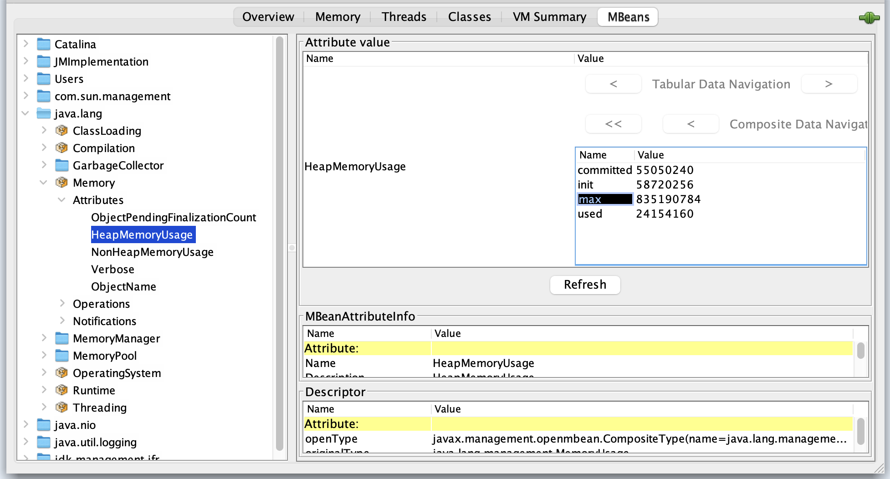
_04.40 HeapMemoryUsage
Viewing Tabular Data
To view the detailed breakdown of the HeapMemoryUsage attribute, double click on
its value in the attribute value column. This action displays the composite data
in a tabular format, making it easier to see individual metrics like init, used,
committed, and max.
Zabbix JMX Item Keys
Zabbix offers three primary item keys for JMX monitoring:
-
jmx[]: This is the standard key used for monitoring a specific JMX attribute. It's the most common key for creating simple, direct checks.
-
jmx.get[]: This key is used to retrieve a full object from an MBean. It is often paired with Low Level Discovery (LLD) rules and preprocessing steps to extract specific values from the returned data, allowing for more flexible data collection.
-
jmx.discovery[]: This key is specifically designed for use with Low Level Discovery. It helps Zabbix automatically discover multiple JMX MBeans or attributes on a monitored host, which is essential for scaling JMX monitoring across a large number of components.
Making use of jmx.get[]
The jmx.get[] item key returns a JSON array containing a list of MBean objects or
their attributes. Unlike jmx.discovery[], it does not automatically define LLD
macros. Instead, it is particularly useful when you need to retrieve a structured
set of data and then process it using JSONPath in a dependent item or a low level
discovery rule.
While jmx.get[] is commonly used for Low Level Discovery (LLD), it is also highly
effective for creating dependent items without using a full discovery rule. This
allows you to collect multiple related metrics from a single request to the JMX
agent, which is more efficient.
For instance, the key jmx.get[attributes,"*:type=GarbageCollector,name=PS MarkSweep"]
would return a comprehensive payload with all attributes of the specified garbage
collector.
[
{
"name": "CollectionCount",
"description": "java.lang:type=GarbageCollector,name=PS MarkSweep,CollectionCount",
"type": "java.lang.Long",
"value": "0",
"object": "java.lang:type=GarbageCollector,name=PS MarkSweep"
},
...
...
...
...
{
"name": "ObjectName",
"description": "java.lang:type=GarbageCollector,name=PS MarkSweep,ObjectName",
"type": "javax.management.ObjectName",
"value": "java.lang:type=GarbageCollector,name=PS MarkSweep",
"object": "java.lang:type=GarbageCollector,name=PS MarkSweep"
}
]
This JSON output can then be used as the master item for multiple dependent items,
each with a preprocessing step to extract a specific value (e.g., CollectionCount
or CollectionTime) using a JSONPath expression. This technique is a powerful
way to reduce the load on both the JMX agent and the Zabbix server by making a
single call to collect multiple metrics.
Performance Considerations for JMX Monitoring
JMX monitoring is powerful but comes with higher overhead compared to traditional Zabbix agent checks. To ensure your monitoring remains efficient and doesn't impact either your Zabbix infrastructure or the monitored JVMs, keep the following points in mind.
Zabbix communicates with the Java Gateway synchronously:
- The Zabbix server sends a request for a JMX item.
- The Java Gateway connects to the target JVM and retrieves the data.
- Only when the response comes back does the Zabbix server proceed with that item's check. This means that if JMX queries are slow (due to network, JVM GC pauses, or overloaded gateways), your monitoring queue can back up.
To optimize performance:
- The Java Gateway bundles multiple requests for the same host and processes them in a single JVM connection.
- This reduces the overhead of repeatedly opening/closing JMX connections.
-
For example, if you monitor 20 JVM attributes on the same Tomcat, the gateway will collect them in fewer, larger batches instead of 20 separate calls.
-
Once a JMX connection to a JVM is established, the gateway keeps it alive and reuses it for subsequent checks.
- This avoids expensive RMI connection setup for every metric.
- If the JVM restarts or the connection drops, the gateway will re-establish it automatically.
Two important parameters in zabbix_server.conf and zabbix_java_gateway.conf directly affect JMX performance:
- StartJavaPollers (on Zabbix Server)
- Defines how many parallel JMX pollers the server can use.
- Too few pollers ‚Üí JMX checks queue up and fall behind.
- Too many pollers ‚Üí high load on Java Gateway and JVMs.
- StartPollers (general pollers) Balance with Java pollers so your server can handle both JMX and regular agent checks without bottlenecks.
-
Rule of thumb: start small (Ex: 5–10 Java pollers) and increase gradually while monitoring load.
-
Don't enable all MBeans just because you can.
- Focus on actionable JVM metrics (heap, non-heap, GC, threads, JDBC pools) and a few application-specific MBeans that map to real-world performance.
- Too many JMX items not only stress the JVM but also flood your Zabbix database with unnecessary history data.
Monitoring JMX through Jolokia
While Zabbix can natively collect JMX data using the Zabbix Java Gateway, an alternative worth considering is Jolokia — a lightweight JMX-to-HTTP bridge.
Jolokia exposes JMX MBeans over a simple REST/JSON interface, which means you can collect Java metrics using Zabbix's HTTP Agent items instead of the Java Gateway. The result is often lower overhead, easier network configuration, and greater flexibility.
Why Jolokia?
- No Gateway Needed. Jolokia runs as a Java agent, servlet, or OSGi bundle directly inside the JVM.
- Efficient Data Collection. You can request multiple attributes in a single HTTP call and split them into dependent items using JSONPath preprocessing.
- Firewall-Friendly. Works over standard HTTP(S) ports, avoiding the complexity of RMI and port ranges.
- Secure, it supports HTTPS, authentication, and access control policies out of the box.
Example:
In Zabbix:
Create an HTTP Agent master item pointing to the Jolokia endpoint. Add dependent items to extract individual values, e.g.:
$.value['java.lang:type=Memory']['HeapMemoryUsage']['used']
$.value['java.lang:type=Threading']['ThreadCount']
This approach allows you to collect dozens of metrics with a single network request.
When to use it ?
Choose Jolokia if you prefer a stateless, agent-based setup or need to monitor many JVMs without maintaining a central Java Gateway. Stick with the Zabbix Java Gateway if you rely on built-in templates or want a fully integrated, out of the box JMX experience.
Conclusion
Zabbix handles JMX monitoring synchronously, but optimizes performance with request bundling and connection reuse. By tuning pollers, using reasonable update intervals, and selecting only the most valuable metrics, you can scale JMX monitoring without overloading your monitoring system or your Java applications.
Questions
- Explain how the Zabbix Java Gateway fits into the overall JMX architecture. Why is it needed?
- In Zabbix, what is the difference between the item keys jmx[], jmx.get[] and jmx.discovery[]? Give an example use case for each.
- Reflect: In your environment, what Java-applications would benefit most from JMX monitoring? What metrics would you pick first, and why?
- What are security considerations when enabling remote JMX monitoring in production? What could go wrong if you leave flags like authenticate=false and ssl=false in a live environment?
Useful URLs
IPMI Monitoring
What is IPMI
Out-of-band management has been part of enterprise server administration for decades, long before modern APIs and automation frameworks became common. One of the most widely adopted standards in this space is the Intelligent Platform Management Interface (IPMI). Despite its age and limitations, IPMI remains deeply embedded in data centers and continues to play a role in hardware monitoring today.
This chapter introduces IPMI from a practical monitoring perspective and explains how it integrates with Zabbix, while also setting realistic expectations about where IPMI fits in modern environments.
Understanding IPMI
IPMI allows administrators to monitor and manage physical server hardware independently of the operating system. Even when a system is powered off, hung, or unable to boot, IPMI usually remains accessible as long as the server has power.
At the center of IPMI is the Baseboard Management Controller (BMC). The BMC is a small embedded controller with its own firmware, network interface, and access to system sensors. Because it operates independently of the host operating system, it can continue reporting hardware health even when the OS is unavailable.
Most server vendors implement IPMI through their own management platforms. While they share a common IPMI foundation, each adds vendor-specific features and naming conventions.
Common BMC implementations include:
- Dell – iDRAC
- HPE – iLO
- Lenovo – XClarity Controller
- Supermicro – IPMI
- Fujitsu – iRMC
From a monitoring perspective, these differences matter because sensor names, availability, and behavior often vary by vendor and even by firmware version.
flowchart TB
%% ---------- Styles ----------
classDef zabbix fill:#e3f2fd,stroke:#1e88e5,color:#0d47a1
classDef ipmi fill:#ede7f6,stroke:#5e35b1,color:#311b92
classDef network fill:#e8f5e9,stroke:#2e7d32,color:#1b5e20
classDef hardware fill:#fff3e0,stroke:#ef6c00,color:#e65100
classDef sensors fill:#fffde7,stroke:#fbc02d,color:#6d4c41
%% ---------- Nodes ----------
Z["Zabbix Server / Proxy"]
O["OpenIPMI"]
N["Management Network"]
B["BMC"]
H["Hardware Sensors"]
%% ---------- Flow ----------
Z --> O
O -->|"IPMI (UDP 623)"| N
N --> B
B --> H
%% ---------- Classes ----------
class Z zabbix
class O ipmi
class N network
class B hardware
class H sensors
IPMI Architecture and Sensors
IPMI monitoring is built around hardware sensors exposed by the BMC. These sensors report real-time measurements and state information about the physical system.
Typical sensor categories include:
- Temperature sensors CPU temperature, system or motherboard temperature, inlet and exhaust air temperature
- Fan sensors Fan speed (RPM), fan presence, fan failure states
- Voltage sensors CPU voltage, memory voltage, standby voltage rails
- Power sensors Power supply status, redundancy state, power consumption
- Chassis sensors Chassis intrusion, lid open/closed state
- Miscellaneous sensors Battery status, watchdog timers, hardware fault indicators
Each sensor has a name, a type, and one or more thresholds that indicate warning or critical conditions. Importantly, sensor names are vendor-defined and case-sensitive, which has direct implications for monitoring tools such as Zabbix.
Communication and Protocols
When accessed over the network, IPMI typically communicates using UDP port 623. Older implementations rely on the Remote Management Control Protocol (RMCP), while newer systems support RMCP+, which adds authentication and encryption.
Although RMCP+ improves security compared to earlier versions, its real world effectiveness depends heavily on vendor configuration and firmware quality. As a result, IPMI traffic still lacks many of the security and observability features administrators expect from modern management interfaces.
Security Caveats
IPMI’s design reflects the assumptions of an earlier era, and this has lasting security implications. Many systems ship with IPMI enabled by default, sometimes with weak or unchanged credentials. Legacy authentication methods and insecure cipher suites may remain active unless explicitly disabled.
Unlike modern APIs, IPMI does not natively use HTTPS or certificates. Logging and auditing capabilities are minimal, making it difficult to track access or investigate incidents. Because the BMC operates below the operating system, a compromised management controller can be extremely difficult to detect or remediate.
For these reasons, IPMI should always be treated as a high-privilege interface. Best practice is to place it on a dedicated management network, restrict access aggressively, and keep BMC firmware up to date. When used carefully, IPMI can be safe enough for monitoring, but it should never be treated like a normal application service.
Verifying IPMI Access with ipmitool
Before configuring IPMI monitoring in Zabbix, it is often helpful to verify connectivity
manually. On most Linux distributions, this is done using the ipmitool utility.
A simple sensor query confirms that the BMC is reachable and that credentials are
correct. If sensor data can be retrieved successfully with ipmitool, the same
configuration will usually work in Zabbix as well.
These tools are primarily for validation and troubleshooting; they are not required for day-to-day monitoring once Zabbix is configured.
Native IPMI Monitoring in Zabbix
Zabbix includes native IPMI support, allowing it to poll BMCs directly without agents or external scripts. This is done using the IPMI agent item type.
To enable IPMI monitoring, a host must be configured with an IPMI interface specifying the BMC's management IP address and port. Credentials can be defined at the host or template level, depending on how standardized the environment is.
Once configured, Zabbix queries individual sensors and stores their values just like any other monitored metric.
IPMI Items and Templates
Each IPMI item in Zabbix corresponds to a specific sensor name exposed by the BMC. Because sensor naming is not standardized, templates often require customization.
Zabbix ships with generic IPMI templates that provide a useful starting point. These templates usually include:
- Core temperature sensors
- Fan speed monitoring
- Power supply status
- Basic triggers for warning and critical states
In practice, these templates are rarely “plug and play.” Sensors may be missing, renamed, or behave differently across vendors. As a result, IPMI templates are best treated as baselines that are refined for specific hardware platforms.
Practical Limitations
From a modern monitoring perspective, IPMI has clear limitations. Discovery capabilities are weak, sensor models are inconsistent, and extending IPMI beyond basic health checks is difficult. Automation and integration with external systems are also limited compared to API-driven approaches.
These constraints do not make IPMI obsolete, but they do define its role. IPMI is best suited for fundamental hardware health monitoring rather than deep observability or automation.
When IPMI Still Makes Sense
IPMI remains relevant in many environments, particularly where hardware fleets are already deployed and newer management standards are unavailable. In controlled networks with proper isolation and access controls, it provides reliable insight into physical system health.
For many organizations, IPMI will continue to coexist with newer technologies for years to come.
Understanding How IPMI Tools Work
Before Zabbix enters the picture, it helps to understand how IPMI is typically
accessed from a system administrator’s point of view. The most common tool for
interacting with IPMI is ipmitool, a command-line utility that communicates directly
with the BMC.
ipmitool does not talk to the operating system. Instead, it connects straight to the BMC using IPMI over LAN, authenticates using the configured credentials, and requests sensor data or management actions. In many ways, Zabbix's native IPMI monitoring behaves very similarly, it simply automates and schedules the same type of queries.
Using ipmitool manually is therefore an excellent way to validate connectivity,
credentials, and available sensors before attempting to monitor a system with Zabbix.
Installing ipmitool
The ipmitool package is widely available and easy to install on all major Linux
distributions.
On Red Hat Enterprise Linux, Rocky Linux, AlmaLinux, and other RHEL-based systems, the package can be installed using:
On Debian and Ubuntu systems, installation is done with:
Once installed, no additional services are required. The tool is invoked directly from the command line and communicates with the BMC over the network.
Exploring IPMI Sensors with ipmitool
The most common starting point is to list available sensors. This provides immediate insight into what the BMC exposes and what Zabbix will be able to monitor.
A typical command looks like this:
This command returns a list of sensors along with their current values and status. While the exact output varies by vendor, readers will usually see entries for temperatures, fans, voltages, and power supplies.
To focus on specific types of data, administrators often scan the output for familiar patterns:
- Fan-related sensors usually include keywords like FAN, Fan1, or System Fan
- Temperature sensors often reference CPU, System, Inlet, or Exhaust
- Power supply sensors may indicate presence, redundancy, or failure states
This exploratory step is important because sensor names must be used exactly as shown when configuring Zabbix IPMI items.
Example Output:
| Sensor Name | Value | Units | Status |
|---|---|---|---|
| CPU Temp | 42.000 | degrees C | ok |
| System Temp | 35.000 | degrees C | ok |
| Inlet Temp | 22.000 | degrees C | ok |
| Exhaust Temp | 28.000 | degrees C | ok |
| FAN1 | 4200.000 | RPM | ok |
| FAN2 | 4100.000 | RPM | ok |
| PSU1 Status | 0x01 | discrete | ok |
| PSU2 Status | 0x01 | discrete | ok |
| Voltage 12V | 12.096 | Volts | ok |
| Chassis Intrusion | 0x00 | discrete | ok |
Each line represents a sensor exposed by the BMC. While the exact sensors and names vary by vendor and hardware model, the structure is consistent.
The output columns represent:
- Sensor name: The identifier used by IPMI. This value is case-sensitive and must match exactly when configuring Zabbix IPMI items.
- Current reading: The latest measured value reported by the sensor.
- Units: The measurement unit, such as degrees Celsius, RPM, or Volts.
- Status: A simplified state indicating whether the sensor is operating normally.
Discrete sensors (such as power supply status or chassis intrusion) may show hexadecimal values instead of numeric readings.
Working with Discrete IPMI Sensors
Some IPMI sensors do not return numeric measurements such as temperature or fan speed. Instead, they return discrete values, where individual bits represent different states or conditions. Common examples include power supply status, chassis intrusion, or predictive hardware failures.
In these cases, Zabbix can evaluate specific bits using the bitwise AND trigger function, band().
Example: Predictive Power Supply Failure
Assume an IPMI sensor returns a value where the eighth bit indicates a predictive failure condition. To check whether this bit is set, Zabbix applies a bitmask using the band() function.
In decimal notation:
- Bit 8 corresponds to the value 128
- The trigger expression checks whether this bit is set
Example trigger expression:
This expression:- Takes the most recent value
- Applies a bitmask of 128
- Triggers only if the predictive failure bit is set
This approach allows precise monitoring of hardware fault conditions that are otherwise hidden inside composite IPMI values.
Notes on Bitmask-Based Monitoring:
- Bitmask logic is common with IPMI but rare with modern APIs
- Care should be taken not to poll too many IPMI sensors, as BMCs can easily be overloaded
- Since Zabbix 4.0, IPMI sensors can be referenced using name: or id: syntax, improving reliability across firmware versions
Because of this complexity, IPMI monitoring often requires more manual tuning than Redfish-based monitoring, where health states are typically exposed as explicit fields such as Status.Health.
How Zabbix Uses IPMI Internally
Zabbix does not invoke ipmitool or external commands when monitoring IPMI. Instead, it integrates directly with the OpenIPMI library, a widely used, open-source implementation of the IPMI specification.
OpenIPMI handles the low-level details of IPMI communication, including protocol handling, authentication, and sensor access. Zabbix uses this library to communicate with the BMC in a structured and efficient way, without relying on shell commands or external processes.
From the user’s perspective, this distinction is mostly invisible. Whether IPMI data is retrieved manually with ipmitool or automatically by Zabbix, the underlying interaction with the BMC follows the same IPMI standards and exposes the same sensors.
Configuring IPMI Pollers
By default, Zabbix does not enable IPMI pollers. You could start with a low number like 3 or 5. In environments with only a few monitored servers, this is usually sufficient. However, in larger environments, this configuration may quickly become a bottleneck.
The number of IPMI pollers is controlled by the following configuration parameter:
If IPMI checks begin to queue or time out, increasing this value is often necessary. As with other Zabbix poller types, changes require a restart of the Zabbix server or proxy to take effect.
Because IPMI pollers rely on network communication with management controllers, their performance is influenced not only by Zabbix itself, but also by:
- BMC responsiveness
- Network latency to the management network
- Firmware quality and load on the BMC
Relationship Between ipmitool and Zabbix
Although Zabbix does not use ipmitool internally, the two tools are closely related conceptually. Both rely on standard IPMI mechanisms and expose the same underlying sensor data.
For this reason, ipmitool remains the preferred tool for:
- Validating IPMI connectivity
- Discovering available sensors
- Verifying sensor names and behavior
- Troubleshooting authentication and firmware issues
If a sensor cannot be queried successfully with ipmitool, it will almost certainly fail in Zabbix as well.
Configuring an IPMI Item in Zabbix
Configuring an IPMI item in Zabbix is conceptually simple, but attention to detail is crucial.
An IPMI item requires:
- Item type set to IPMI agent
- A key that references the exact sensor name
- An update interval appropriate for hardware metrics
For example, to monitor a CPU temperature sensor, the item key might look like:
If the sensor name does not match exactly, including case and spacing, the item will fail. For this reason, copying sensor names directly from ipmitool output is strongly recommended.
Triggers are typically defined on top of these items to detect warning and critical thresholds, either using vendor recommendations or operational experience.
Known Issues and Common Pitfalls
IPMI monitoring works reliably once configured correctly, but several recurring issues are worth calling out explicitly.
One common problem is inconsistent sensor naming. The same server model may expose different sensor names depending on firmware version, making templates fragile across hardware revisions.
Another frequent issue is slow or unresponsive BMCs. Some management controllers respond slowly under load, which can cause timeouts or delayed data in Zabbix. This becomes more noticeable as the number of monitored systems grows.
Authentication problems are also common. Incorrect cipher suite settings, locked user accounts, or firmware bugs can all prevent successful IPMI polling even when credentials appear correct.
Finally, IPMI interfaces are sometimes overlooked during network changes. Firewall rules, VLAN reconfiguration, or routing changes can silently break access to the management network while leaving the operating system untouched.
Practical Advice for Reliable IPMI Monitoring
From experience, IPMI monitoring works best when treated as infrastructure monitoring, not application monitoring. Polling intervals should be reasonable, sensor counts kept under control, and templates carefully validated per vendor.
Using ipmitool during setup and troubleshooting remains invaluable. If a sensor cannot be queried manually, Zabbix will not be able to retrieve it either.
When these practices are followed, IPMI provides stable and useful visibility into hardware health, even if it shows its age in other areas.
Introduction to Redfish
If IPMI feels like a tool from another era, Redfish is what replaced it: a modern, web friendly management standard designed for automation and secure operations. Redfish exposes hardware management through a RESTful interface and focuses on being both human-readable and machine friendly.
In practical terms, Redfish is what you wish IPMI had been: structured resources, predictable URIs, and data you can query using the same tools you already use for web services.
REST + HTTPS
Redfish is built around REST concepts and is typically accessed over HTTPS. Instead of vendor specific “sensor names” or proprietary client utilities, you access resources using URLs and standard HTTP methods.
That shift matters for monitoring:
- You can test endpoints with curl.
- You can retrieve structured JSON payloads.
- You can monitor it with Zabbix HTTP agent items (no special IPMI subsystem needed).
JSON schema and standardized resources
Redfish resources are delivered as JSON and described by formal schemas. DMTF publishes the schema index (including JSON Schema formats), which makes the ecosystem far more consistent than IPMI in practice.
The big win for authors and operators is that Redfish revolves around standard resource types. You'll see the same patterns repeatedly across vendors:
- ServiceRoot: /redfish/v1 (entry point)
- Systems: server/compute view (CPU, memory, boot, power state)
- Chassis: physical enclosure view
- Managers: the management controller (think BMC/iDRAC/iLO)
- Power / Thermal: structured telemetry for PSUs, fans, temperatures (often via chassis-related resources)
Even when vendors add OEM extensions, the baseline model stays recognizable.
Testing Redfish with a Simulator
Since not everyone has an IPMI interface available and since we cannot use a standard that would work for everybody we will focus on a simulator. This should give you a good idea on how things work in real life.
DMTF Mockup Server
The Mockup Server serves static Redfish mockups and runs by default on 127.0.0.1:8000.
We will install for this a docker container on our Zabbix system or another system if you prefer.
For the examples in this book, we use a fork of the official DMTF Redfish Mockup Server. The simulator runs in a container and provides a predictable, vendor neutral Redfish API that is ideal for testing and monitoring examples.
The following sections show how to run the simulator on Rocky Linux using Podman and on Ubuntu 24.04 using Docker.
In both cases, the result is the same: a Redfish service listening locally on port 8000.
Rocky Linux (Podman)
Rocky Linux uses Podman as its default container engine. Podman is daemonless, integrates well with system security, and can run Docker-compatible images without modification.
Install Podman
Podman is available in the default Rocky repositories:
No additional services need to be enabled.
Clone the Redfish Mockup Server Repository.
This repository is a fork of the upstream DMTF project and is used here for documentation and monitoring examples.
Build the Container Image (optional but recommended) Building the image locally ensures reproducible behavior:
Run the Redfish Mockup Server
Start the container and expose port 8000:
Once running, the Redfish service root is available at:
Ubuntu 24.04 (Docker)
On Ubuntu, Docker remains the most widely used container runtime and is familiar to many administrators.
Install Docker from the Ubuntu repositories:
Enable and start the Docker service:
(Optional) To avoid running Docker as root, add your user to the docker group and re-login.
Clone the Redfish Mockup Server Repository
Build the Container Image
Run the Redfish Mockup Server
Start the container:
The Redfish API is now available at:
Verifying the Installation
On both Rocky Linux and Ubuntu, you can verify that the simulator is running by querying the Redfish service root:
A JSON response confirms that the mock server is working correctly.
At this point, the simulator can be used for:
- Exploring Redfish resources with curl
- Viewing JSON responses in a web browser
- Configuring Zabbix HTTP agent items
- Building preprocessing and LLD examples
curl http://127.0.0.1:8000/redfish/v1
{
"@odata.id": "/redfish/v1/",
"@odata.type": "#ServiceRoot.v1_16_1.ServiceRoot",
"AccountService": {
"@odata.id": "/redfish/v1/AccountService"
},
"CertificateService": {
"@odata.id": "/redfish/v1/CertificateService"
...
...
},
"UUID": "92384634-2938-2342-8820-489239905423",
"UpdateService": {
"@odata.id": "/redfish/v1/UpdateService"
}
Monitoring Redfish with Zabbix
With the Redfish Mockup Server running, we can now move from exploration to actual monitoring. The most straightforward way to monitor Redfish in Zabbix is by using an HTTP agent item, which retrieves data from a REST endpoint and stores the response for further processing.
This approach mirrors how Redfish is used in real environments and avoids the need for any special protocols or poller types.
Choosing the First Endpoint
Every Redfish service exposes a well-defined entry point called the Service Root, located at:
This endpoint is ideal for a first test because it:
- Is always present
- Returns a small, predictable JSON document
- Confirms basic connectivity and parsing
In the mock environment, the full URL is:
Creating a Test Host in Zabbix
Start by creating a dedicated host for the Redfish simulator.
In the Zabbix frontend, go to Data collection ‚Üí Hosts
- Click Create host
- Set:
- Host name: Redfish Mockup Server
- Interface: none required (HTTP agent does not use host interfaces)
- Assign the host to a suitable group, for example Redfish or Servers
- Save the host

4.50 create Redfish host
This host will represent the Redfish endpoint rather than a traditional server. Next we can create an HTTP item on our host.
Creating the HTTP Agent Item
Next, create the actual monitoring item.
- Open the newly created host
- Go to the Items tab
- Click Create item
Configure the item as follows:
| Field | Configuration | notes |
|---|---|---|
| Name: | Redfish service root | |
| Type: | HTTP agent | |
| Key: | redfish.service.root | |
| URL: | http://127.0.0.1:8000/redfish/v1 | |
| Request method | GET | |
| Update interval | 1m | |
| Type of information | Text |
No authentication or headers are required for the mock server.
Note
At this stage, we are deliberately storing the entire response. In the next step, we will extract individual values.
After a short wait, the item should start collecting data. This can be verified
under Monitoring ‚Üí Lastest data
If this works we can move over to the next step and create an item.
Extracting a Value with JSON Preprocessing
Let's create a dependent item by pressing on the '...' before our item Redfish
service root and select create dependent item.
Now we can create our dependent item so that we can extract a single value from the master item using preprocessing.
| Field | Configuration | notes |
|---|---|---|
| Name: | Redfish Version | |
| Type | Dependent item | |
| Key | redfish.version | |
| Master item | Redfish service root | |
| Type of information | Character | |
| Update interval | not available inherited from master item | |
| Preprocessing : | ||
| - JSONPath | $.RedfishVersion | Add as preprocessing step |
Press Add to save the item.

4.51 Dependent item
Let's go to our latest data page and have a look at our newly created item.

4.52 Latest data
LLD example
Note
If you have no idea how LLD (Low Level Discovery works it's best to skip this for now and cover the LLD chapter first.)
Redfish exposes many resources as collections containing a Members array. This structure is ideal for Zabbix Low-Level Discovery (LLD) because it allows discovery rules to be implemented using JSONPath.
In this example, we will discover chassis resources from the Redfish endpoint:
Create the Master HTTP Agent Item
First, create a master item that retrieves the chassis collection.
| Field | Configuration | notes |
|---|---|---|
| Host | Redfish Mockup Server | |
| Name: | Redfish Chassis collection (raw) | |
| Type | HTTP agent | |
| Key | redfish.chassis.collection.raw | |
| Type of information | text | |
| Update interval | 5m | |
| URL | http://127.0.0.1:8000/redfish/v1/Chassis | |
| Request method | GET |
Save the item and confirm in Latest data that it returns JSON similar to:
Create the LLD Rule
Next we can now create a discovery rule based on the master item we just made.
Press the ... in front of the item and select Create dependent discovery rule.
| Field | Configuration | notes |
|---|---|---|
| Name: | Discovery Redfish chassis | |
| Type | Dependent item | |
| Key | redfish.chassis.discovery | |
| Master item | Redfish Chassis collection (raw) | |
| Preprocessing | JSONPath | $.Members[*] |
| LLD macros | {#CHASSIS_URI} | $['@odata.id'] |

4.53 LLD Discovery rule
The JSONPath will output each member object individually, for example:
This is exactly what Zabbix expects for JSONPath-based LLD.
The LLD macros section define how values are extracted from each discovered object:
- The JSONPath must start with
$ - The macro path is evaluated per discovered object
After this step, Zabbix will discover:
Create an Item Prototype (Raw Chassis Data)
Now that we have our discovery rule it's time to create an item prototype that queries each discovered chassis.
| Field | Configuration | notes |
|---|---|---|
| Name: | Redfish chassis {#CHASSIS_URI} (raw) | |
| Type: | HTTP agent | |
| Key: | redfish.chassis.raw[{#CHASSIS_URI}] | |
| URL: | http://127.0.0.1:8000{#CHASSIS_URI} | |
| Request method | GET | |
| Update interval | 5m | |
| Type of information | Text |
This produces one HTTP item per discovered chassis.

4.54 Item prototype raw
Create a Dependent Item Prototype (Health)
Our next step is to extract the health and the status with dependent items prototypes.
The chassis resource already contains a standard Status object:
We can extract this cleanly using a dependent item.
| Field | Configuration | notes |
|---|---|---|
| Name: | Chassis health | |
| Type | Dependent item | |
| Key | redfish.chassis.health[{#CHASSIS_URI}] | |
| Master item | Redfish chassis {#CHASSIS_URI} (raw) | |
| Type of information | Character | |
| Preprocessing | JSONPath | $.Status.Health |

4.55 Dependent discovery item health
Once done clone this item and create one for the Status state. You can use
this JSONPath $.Status.State for it.
Create a Trigger Prototype
And as a final step we can create a simple Trigger prototype to make the discovery useful.
| Field | Configuration | notes |
|---|---|---|
| Name: | Chassis health is not OK | |
| Expression | last(/Redfish Mockup Server/redfish.chassis.health[{#CHASSIS_URI}])<>"OK" | Adapt trigger names if needed |

4.56 Trigger Prototype
Conclusion
Both IPMI and Redfish provide out-of-band management capabilities, but they reflect very different design philosophies and operational eras. Understanding these differences helps decide which technology to use — and why many environments are gradually transitioning from IPMI to Redfish.
| Topic | IPMI | Redfish |
|---|---|---|
| Standardization | Older, widely implemented standard | Modern DMTF standard designed for automation |
| Transport | Binary protocol over UDP (typically port 623) | RESTful API over HTTPS |
| Data format | Sensor-based, vendor-defined naming | Structured JSON with formal schemas |
| Security model | Historically weak, varies by firmware | Designed with modern security in mind |
| Authentication | Legacy mechanisms, cipher suites | HTTP authentication, sessions, tokens |
| Discoverability | Limited, often manual | Native via collections and Members |
| Resource model | Individual sensors | Linked resources (Systems, Chassis, Managers) |
| Low-Level Discovery | Difficult and vendor-specific | Natural and scalable using JSONPath |
| Poller behavior | Specialized, limited scalability | Uses existing HTTP infrastructure |
| Template portability | Often vendor- and model-specific | Largely vendor-neutral |
| Automation friendliness | Limited | Designed for automation and APIs |
| Tooling | ipmitool and vendor utilities |
curl, browsers, standard HTTP tools |
| Typical use today | Legacy fleets, basic hardware health | Modern platforms, scalable monitoring |
In practice, the choice is rarely binary.
IPMI remains valuable in environments with older hardware or where Redfish support is limited or inconsistent. It provides reliable access to fundamental hardware health metrics and continues to work well when deployed on isolated management networks.
Redfish, on the other hand, is clearly the direction of the industry. Its REST based design, structured data model, and native discoverability make it far better suited for modern monitoring platforms such as Zabbix. Redfish scales naturally, integrates cleanly with automation workflows, and is significantly easier to reason about and troubleshoot.
For many organizations, the most realistic approach is coexistence: IPMI for legacy systems, Redfish for new deployments.
Questions
- What problem do IPMI and Redfish both aim to solve, and how do their approaches differ?
- How does the Redfish resource model (Systems, Chassis, Managers) differ from IPMI's sensor based model?
- What role does JSONPath play in making Redfish monitoring scalable?
- When designing a new monitoring template, why is vendor neutrality important?
Useful URLs
- https://www.zabbix.com/documentation/current/en/manual/discovery/low_level_discovery/examples/ipmi_sensors#overview
- https://www.intel.com/content/dam/www/public/us/en/documents/product-briefs/ipmi-second-gen-interface-spec-v2-rev1-1.pdf
- https://github.com/ipmitool/ipmitool
- https://www.dmtf.org/standards/redfish
- https://github.com/DMTF/Redfish-Mockup-Server
Database checks via odbc
Conclusion
Questions
Useful URLs
Database checks via agent
Conclusion
Questions
Useful URLs
Zabbix trapper
So you already know what is the difference between Active and Passive
Zabbix agent item types. However, there is a third, special item type which
also starts with "Zabbix". And that is "Zabbix trapper".
Most likely not by coincidence it is named so, since by its nature it reminds the "SNMP trap". Data in both cases is not expected to arrive in predefined frequency, but rather "when needed" or "when something happens".
Zabbix trapper items are extremely useful when you have:
- places where Zabbix agent can't be installed
- "heavy", long running scripts, which produce some valuable monitoring data
- scripts that otherwise do some other things, but at some points you want to send some data to be monitored (i.e. monitoring is just a part of the script logic, not the main intent). For example, you send the duration of how long your script was running
- temporary or ad-hoc metrics (e.g. some historical data which was not monitored at the time of occurrence to be analysed)
How to send data?
There are two ways to send values to Zabbix trapper item:
- using
zabbix_sender - via Zabbix API
Info
Zabbix trapper item receives data over same TCP port as Zabbix agent items
(10051) if zabbix_sender is used
In both cases, item configuration from Zabbix GUI perspective doesn't differ. Once configuring Zabbix trapper items, main thing is to have unique meaningful item key (it must be unique on host level) and type of information of your choice. Type of information possibilities are same to classic Zabbix agent items.
Hello World
In this example, we will simply send a string "Hello!" to Zabbix trapper item.
First we will create Zabbix trapper item on Zabbix server. Navigate to template or host and hit "Create item":

Then we can go to CLI and employ zabbix_sender to pass agreed value to our
newly created Zabbix trapper item. You have to take item key from previous step,
we will use it here as -k:
binary@linux:~$ zabbix_sender -z 127.0.0.1 -s "Zabbix server" -k "hello.world" -o "Hello!"
Response from "127.0.0.1:10051": "processed: 1; failed: 0; total: 1; seconds spent: 0.000047"
sent: 1; skipped: 0; total: 1
binary@linux:~$
And that is about it! Our trapper item is updated.

Info
Parameters used here are the following:
-z - Zabbix server
-s - host, where your trapper item resides
-k - item key, same as you created in GUI
-o - value itself
For more options, check man zabbix_sender or online documentation
You can "travel in time" with zabbix_sender
Typically you don't care about timestamps - when exactly the data was collected. This is actually applicable to both Zabbix agent and Zabbix trapper items. You simply set the checking frequency (in Zabbix agent item case) or control it on your own (in Zabbix trapper item case). But in both cases you leave it for Zabbix - data is collected at desired pace and that is mainly all that you care.
But what if you want to restrict / control the timestamps as well, not only the data itself that is being collected?
zabbix_sender offers one sometimes overlooked feature. It allows you to do
exactly what's described above - it allows you to "travel in time" with your
items. For this, we need to employ a combination of zabbix_sender options:
-T, --with-timestamps-i, --input-file
Info
Here is even one more overlooked feature of this approach - you actually
don't even need files necessarily. Providing - for -i means reading
from standard input
00 seconds
One of the examples when you might want to employ this feature is to force data
to be stored precisely at 00 seconds of the minute. Imagine you run a script
each minute and it might run for duration anything between 10 and 50 seconds.
This script in the end produces time in seconds, how long did it run - and you
send this duration to Zabbix via zabbix_sender:
#!/bin/bash
start_ts=$(date +%s)
sleep $((RANDOM%40+10))
end_ts=$(date +%s)
duration=$((end_ts-start_ts))
zabbix_sender -z 127.0.0.1 -s "Zabbix server" -k "undefined.time" -o ${duration} &>/dev/null
exit 0

Problem here is that since script runs with chaotic durations, results will be displayed on time axis in unequal intervals between collected values:

That is visually unappealing and we can easily fix it by forcing Zabbix to store results not when the value was sent to Zabbix server, but at the 00 seconds of the minute the script was started:
#!/bin/bash
start_ts=$(date +%s)
item_value_ts=$(date -d $(date +%H:%M) +%s)
sleep $((RANDOM%40+10))
end_ts=$(date +%s)
duration=$((end_ts-start_ts))
sender_input="\"Zabbix server\" undefined.time.00 ${item_value_ts} ${duration}"
zabbix_sender -z 127.0.0.1 -T -i - &>/dev/null <<< "${sender_input}"
exit 0
Now the values are collected exactly at the 00 second of each minute:

And our graph becomes smooth:

The bigger the possible gaps between the values, the more such approach makes sense.
Past incidents
Say you had some incident which had no or had poor monitoring. Say you regret it
and find some valuable data which you would like to visualize. With Zabbix
trapper items and combination of -T and -i options it is absolutely
possible. Just form sets of data from your data sources (e.g. logs) and feed
them into Zabbix by creating some temporary trapper items. You will then have a
view of what has happened, even if you didn't monitor it in real time.

Have some fun
Similar to above, but in more creative fashion, you can visualize some ASCII art in Zabbix by creating sets of data aligned so in time and value amplitude, that it would form some image. That is a fun way to entertain your colleagues or just sharpen your skills in scripting!

Using Zabbix API to send data
Instead of using zabbix_sender, you can also send data via Zabbix API, by
using history.push method.
#!/bin/bash
zbx_url=http://127.0.0.1/zabbix/api_jsonrpc.php
zbx_header="Content-Type: application/json; charset=UTF-8"
zbx_auth_token=$(cat $(dirname "${0}")/token.conf)
params="[{\"itemid\": ${1}, \"value\": \"${2}\"}]"
payload="{\"jsonrpc\":\"2.0\",\"method\":\"history.push\",\"id\":1,\"params\":${params}}"
curl -s --max-time 3 \
-X POST \
--data "${payload}" \
-H "${zbx_header}" \
-H "Authorization: Bearer ${zbx_auth_token}" \
"${zbx_url}"
exit 0
So now by running this with specific Zabbix trapper item id and intended value, you will update this item:
binary@linux:~$ ./history_push.sh 69272 0 | jq '.'
{
"jsonrpc": "2.0",
"result": {
"response": "success",
"data": [
{
"itemid": 69272
}
]
},
"id": 1
}
binary@linux:~$ ./history_push.sh 69272 1 | jq '.'
{
"jsonrpc": "2.0",
"result": {
"response": "success",
"data": [
{
"itemid": 69272
}
]
},
"id": 1
}
binary@linux:~$

Conclusion
If you work with Zabbix long enough, you will start having this feeling of when to use "Zabbix trapper" items over classic "Zabbix agent" items. In some particular cases they are extremely useful (or even the only option to go with).
In this section you have learned how to create simple Zabbix trapper item, as well as some more advanced approaches.
Using Zabbix trapper is heavily related to more programmatic approach towards updating item values, so if you are into programming and enjoy monitoring - you should definitely try it out.
Questions
- Do you need Zabbix agent if you want to use
zabbix_sender? - Does Zabbix trapper item have checking interval?
- Can you send text for Zabbix trapper items, or is it only for numerical data?
Useful URLs
External checks
Conclusion
Questions
Useful URLs
Browser item
Foundational Concepts and Synthetic Monitoring Architecture
The introduction of the Browser Item in Zabbix 7.0 marked a significant expansion of monitoring capabilities, allowing Zabbix to serve not only as a traditional IT infrastructure monitoring tool but also as a powerful resource for monitoring strategic web-based information. This item type enables synthetic monitoring, a method that simulates the behavior of a real user, including multi-step journeys (user journeys) such as logging in, navigating through menus, or completing a checkout process.
What is the Zabbix Browser Item?
In essence, the Browser Item collects data by executing user-defined JavaScript code in an automated browser environment via HTTP/HTTPS. Unlike simple HTTP requests, this item simulates complex actions like clicks, text input, and dynamic navigation within web applications. The ability to simulate the website in this manner, including capturing screenshots and measuring performance, enables organizations to ensure the availability and integrity of both internal websites and external strategic information sources (such as government portals for tenders).
The Technological Foundation: WebDriver API
The functioning of the Browser Item relies on a crucial architectural dependency: the WebDriver API (based on the W3C WebDriver standard). This is an established framework, often implemented by solutions such as Selenium Server or a headless WebDriver (e.g., ChromeDriver), which acts as the web testing endpoint. The Zabbix Server or Proxy functions as the client; it sends the defined JavaScript commands to this external endpoint, where the actual browser (usually Chrome in a standalone container) is controlled. The results of the simulated session, including metrics and error information, are then returned to Zabbix as a structured JSON object.
 CH03.xx Architecture Overview
CH03.xx Architecture Overview
Browser Item vs. Classic Web Scenarios: The Strategic Choice
Before implementing the Browser Item, it is crucial to understand the difference between it and the older, classic Web Scenarios. Classic web scenarios are based on the HTTP Agent and execute steps sequentially, collecting only protocol-level metrics such as download speed, response time, and the HTTP response code. They check whether a predefined string is present in the HTML response and can perform a simulated login, but they do not render the full Document Object Model (DOM) of the page.
The Browser Item, conversely, simulates the entire browser stack. This is indispensable for monitoring modern, complex JavaScript-based Single Page Applications (SPAs) or other web pages where content is loaded asynchronously. Where classic scenarios fail due to the lack of JavaScript execution, the Browser Item ensures the reliability of synthetic checks by using a real browser engine. Furthermore, the Browser Item is the only method within Zabbix that can capture visual snapshots (screenshots), which is invaluable for troubleshooting. The implication of this superior functionality is that Browser Items require significantly more CPU and memory on the WebDriver host and on the Zabbix processes performing the polling.
Architectural Requirements: Setting up the WebDriver Endpoint
A successful implementation of the Browser Item requires careful configuration of the external web testing endpoint. The recommended and most robust method is to use Docker containers to create an isolated, scalable Selenium Server environment.
Implementing Selenium Standalone Chrome via Docker
The Zabbix system is designed to communicate robustly with a Selenium Standalone Server using a Chrome browser engine. It is essential to launch the container with the correct flags to enable stability and debugging.
The following docker run command is used to start the Selenium Server with Chrome in detached mode (-d), allocating the necessary ports and memory :
docker run --name browser \
-p 4444:4444 \
-p 7900:7900 \
--shm-size="2g" \
-d selenium/standalone-chrome:latest
The parameters in this command serve specific, critical purposes :
docker run --name browser: This initiates a new Docker container named "browser"-p 4444:4444: This is the primary communication port. It maps port 4444 on the host machine to the container port. This is the port the Selenium Server uses to accept WebDriver commands from the Zabbix Browser Pollers.-p 7900:7900: This port is optional but highly recommended for diagnostics. It maps the Virtual Network Computing (VNC) server port of the container, allowing an administrator to visually observe the automated browser in real time remotely (via a VNC client). This is crucial for debugging complex JavaScript scripts and unexpected web interactions.--shm-size="2g": This is a critical stability parameter. It allocates 2GB of shared memory to the container. Chrome requires a significant amount of shared memory (/dev/shm) to function correctly and stably under automation. Failing to set this can lead to unpredictable browser crashes or slow execution times that are difficult to diagnose from Zabbix.-d: Runs the container in detached mode, meaning it will run in the background.selenium/standalone-chrome:latest: Specifies the Docker image to use.
Validation of the Connectivity
Before configuring the Zabbix Server, the accessibility and functionality of the WebDriver Endpoint must be validated. This eliminates network or container issues as potential causes of subsequent Zabbix errors.
The validation steps are as follows :
- Determine IP Address: Identify the IP address of the Docker interface (e.g., 192.0.2.1).
- Test Port Connectivity: Use nc (Ncat) to verify the connection to the WebDriver port:
curl -L 192.0.2.1:4444
# Expected output: HTML content, often starting with <!DOCTYPE html>...<title>
Selenium Grid</title>
Zabbix Server/Proxy Configuration and Scalability
Browser Items are executed by specific Zabbix processes called browser pollers. These must be correctly configured on the Zabbix Server or Proxy responsible for executing the synthetic checks.
Server Configuration Parameters (zabbix_server.conf)
Two parameters in the Zabbix server configuration file (/etc/zabbix/zabbix_server.conf or zabbix_proxy.conf) are essential: WebDriverURL and StartBrowserPollers.
WebDriverURL (Mandatory) This parameter must specify the web testing endpoint configured before (our container). This is a mandatory parameter, as the default value is empty. Without a valid URL, Zabbix cannot initialize the WebDriver sessions.
Example: WebDriverURL=http://192.0.2.1:4444
StartBrowserPollers (Scalability) This controls the number of pre-forked Zabbix processes dedicated to executing and processing Browser Item checks. The default value is 1, and the range is 0 to 1000.
Since browser automation is a CPU-intensive and time-consuming task, Browser Items are inherently high-latency items. The number of pollers set NPollers determines how many synthetic checks Zabbix can initiate concurrently. It is a common mistake to increase this number without increasing the capacity of the WebDriver Endpoint (the number of simultaneous browser sessions Selenium can handle). An imbalance here causes the Zabbix Queue Overview to grow, indicating that values are taking too long to update.10 To optimize monitoring performance, the NPollers in Zabbix must be balanced with the actual parallel execution capacity of the WebDriver host.
After modifying the configuration files, the service must be restarted:
systemctl restart zabbix-server (or zabbix-proxy).
Scalability and Isolation with Zabbix Proxies
For large-scale monitoring or monitoring remote locations, using Zabbix Proxies is highly recommended. The Browser Item functionality is available on both the Server and the Proxy, meaning the CPU-intensive rendering and script execution can be isolated to a dedicated Proxy environment.
The advantage of isolating synthetic checks on a Proxy is twofold: firstly, the load on the central Zabbix Server is reduced, and secondly, the risk is avoided that the high-resource-consuming browser automation interferes with the performance of regular, critical infrastructure checks.
The table below summarizes the essential configuration parameters.
| Parameter | Purpose | Recommended Action |
|---|---|---|
WebDriverURL |
URL/IP of the WebDriver Endpoint (e.g., Selenium Server) | Mandatory to set. Format: http:// |
StartBrowserPollers |
Number of pre-forked processes for Browser Item checks | Increase this in line with the parallel capacity of the WebDriver host. |
Host Configuration and the Master Item
The following steps describe the necessary configuration in the Zabbix Frontend to set up website monitoring.
Host and Template Configuration
Host Creation: Create a new host representing the web application to be monitored (e.g., "Production Web Portal").Template Link: Link the out-of-the-box template "Website by Browser" to this host. This template is designed for complex web applications and includes standard Master Items, Dependent Items, Triggers, and Dashboards.
Host Macro Definitions
The linked template typically uses User Macros to set dynamic parameters, keeping the template reusable. These macros must be set at the Host level (via the Macros tab -> Inherited and host macros) :
- {$WEBSITE.DOMAIN}: Define the target URL or domain name to be monitored (e.g., git.zabbix.com/projects/ZBX/repos/zabbix/browse).
- {$WEBSITE.GET.DATA.INTERVAL}: The update interval for the Master Item. Due to the high resource cost of a full browser check, a longer interval is often used (e.g., 15m).
Master Browser Item Configuration
The Browser Item itself acts as the Master Item that returns a large, structured JSON data set. Configuration at the item level is crucial for functionality :
- Type: Select Browser.
- Key: Enter a unique key (e.g., web.browser.scenario[login_check]).
- Parameters: This is a list of name/value pairs passed as variables to the JavaScript script. This is the ideal place to define non-sensitive parameters (URLs, viewport sizes) and, using User Macros, sensitive credentials (usernames, passwords).
- Script: This is the central component where the JavaScript code for browser interaction is entered.
- Timeout: Set the maximum execution time of the JavaScript (range: 1–600 seconds). Exceeding this time results in an error. Since synthetic checks are inherently time-consuming, this value should be set generously, but not excessively, to prevent long-running checks from blocking the poller queues.
Scripting Advanced Browser Interactions (JavaScript API)
The power of the Browser Item lies in the specialized JavaScript environment provided by Zabbix. The JavaScript script directs the entire browser interaction and data collection.
The Zabbix JavaScript Context and the Browser Object
The script has access to Zabbix's additions to the JavaScript language, particularly
the Browser objects. The central Browser object manages the WebDriver session;
it is initialized upon creation and terminated upon destruction. A single script
can support up to four Browser objects but they will share the same WebDriver
session internally.
The basic workflow of any script includes :
- Initialization of a
Browsersession, optionally with customchromeOptions(e.g., --headless=new for performance). - Navigation to the starting URL (
browser.navigate(url)). - Execution of the defined interactions.
- Data collection via
browser.collectPerfEntries()at crucial points. - Returning the results as a JSON string via
JSON.stringify(browser.getResult()).
Running Browsers in Headless Mode
Most Zabbix environments run on Linux servers which do not have a GUI. A typical browser expects an X11/Wayland display environment. Without one, Chrome or Firefox fails with errors such as:
- “Missing X server”
- “No DISPLAY variable set”
- “GPU process initialization failed”
The solution is Headless Mode, which allows Chrome/Firefox to run without a graphical environment.
Recommended Chrome options:
var opts = Browser.chromeOptions({
args: [
'--headless=new',
'--no-sandbox',
'--disable-gpu',
'--window-size=1920,1080'
]
});
Why these flags matter:
| Flag | Purpose |
|---|---|
--headless |
Runs Chrome without GUI. Required. |
--no-sandbox |
Needed in SELinux/sandboxed server environments. |
--disable-gpu |
Prevents GPU-related crashes in headless mode. |
--window-size |
Ensures consistent screenshots and layout. |
Essential Methods for Interaction and Timing
For executing complex interactions, the following methods of the Browser object
are crucial :
navigate(url): Navigates the browser to the specified URL.findElement(strategy, selector): Finds a single element on the page (e.g., an input field or button) using a location strategy (CSS, XPath )sendKeys(text)/click(): Methods of the returned Element object to enter text or click buttons.setElementWaitTimeout(timeout): Sets the implicit wait time (in milliseconds) the browser uses when searching for elements. This is a critical method for making scripts robust against variable web page load times.collectPerfEntries(mark): Collects performance data from the browser (based on the browser's Performance API). The optional mark parameter labels this snapshot, which is essential for measuring the duration of specific steps in a transaction (e.g., "open page" or "login").
Implementing a Multi-Step Login
A common scenario is monitoring a login procedure. A robust script for this task
must dynamically handle credentials (passed as parameters/macros) and time each
step.
The script initializes a session, navigates, uses findElement to locate the
username and password fields (often via XPath or CSS selectors), and enters the
data using sendKeys. The login button is then clicked. Using
collectPerfEntries() immediately after navigation and again after clicking the
login button makes it possible to measure the pure page load time and the total
login time separately. Finally, the script should perform a check (e.g.,
findElement for the "Sign out" link) to validate the success of the transaction.
Defensive Scripting and Error Handling
The stability of synthetic monitoring depends entirely on the quality of error handling. Zabbix's JavaScript environment allows for robust error handling with try...catch blocks.
- Error Handling and Screenshots: When detecting an error (e.g., an element not
found, a
WebdriverError), thecatchblock should capture a screenshot usingbrowser.getScreenshot(). This Base64-encoded image is added to the JSON results. This provides immediate visual context of the error, resulting in significant time savings during debugging compared to just a textual error message.
Data Processing, Preprocessing, and Visualization
The Master Browser Item produces a single, large JSON string containing all
collected data, including performance metrics, status information, and the
Base64 screenshot. To make this raw data useful for triggers, graphs, and
dashboards, Dependent Items and Preprocessing are necessary.
Extraction via Dependent Items
A Dependent Item is directly linked to its Master Item and obtains its value by processing the Master Item's value. For every desired metric from the Browser Item's JSON output, a separate Dependent Item must be created.
The configuration of a Dependent Item includes :
- Type: Select Dependent item.
- Master item: Select the previously configured Browser Item.
- Type of information: Determines the data format (e.g., Numeric Float for times, Character for error messages, Binary for screenshots).
Preprocessing: JSONPath for Metrics
Preprocessing steps are used to extract the necessary data from the JSON payload. The primary method for this is JSONPath. JSONPath allows the administrator to execute queries on the JSON structure to isolate specific values (such as the duration of the login step or an error code).
Once the value is extracted, the preprocessing pipeline must ensure that the data type matches the "Type of information" of the Dependent Item.
Capturing and Storing Screenshots
The capture and visualization of screenshots is one of the most valued features of the Browser Item.
- Extraction: Create a Dependent Item specifically for the screenshot.
- Type of Information: Set this to Binary. This data type is specifically designed to store and display large binary data, such as Base64-encoded images.
- Preprocessing: Use JSONPath to extract the Base64-encoded string produced
by
browser.getScreenshot().
It is vital to consider storage limits. The Base64-encoded image may be a maximum
of 1 MB in size. This limit can theoretically be adjusted via the ZBX_MAX_IMAGE_SIZE
constant, but it is usually more practical to reduce the browser viewport using
browser.setScreenSize(x,y) in the JavaScript script to comply with the 1MB limit,
especially for complex pages.
Visualization
The stored binary data can be visualized directly in the Zabbix Frontend. The
Item History Widget on Zabbix Dashboards is optimized to display binary data
(such as the Base64 image). When the user hovers over or clicks the "Show"
option of the binary value, a pop-up window opens with the actual captured
image. This provides an immediate, visual overview of the web application's
status at the moment of the check.
Tips, Troubleshooting and Security
Effective management of the Browser Item requires proactive monitoring and attention to performance and security.
Performance Optimization Best Practices
Synthetic monitoring is resource intensive. Balancing the Zabbix settings with the underlying WebDriver infrastructure is essential.
-
Timeout Optimization: In addition to the Zabbix Master Item Timeout parameter, script authors should actively use the internal JavaScript timeouts, such as
browser.setElementWaitTimeout(ms)andbrowser.setSessionTimeout(ms)and, when needed,browser.setScriptTimeout(ms). This ensures the script fails as quickly as possible if a step fails, releasing the costly Browser Poller sessions sooner for other checks. -
Data Retention Policy: Storing Base64-encoded images (Binary data) can lead to very rapid database growth. It is crucial to set an aggressive retention policy for the Dependent Items that store screenshots (e.g., 7 days history), while numerical performance metrics can maintain a longer retention (e.g., 90 days trends).
Troubleshooting Matrix
Errors with Browser Items often fall into three categories: Network/Connectivity, WebDriver-related (Selenium/Chrome), and Script Logics. The Zabbix Server logs and the external WebDriver logs should be investigated jointly.
Troubleshooting Matrix for Browser Items:
| Problem/Error Message | Possible Cause | Diagnosis Tool | Solution/Mitigation |
|---|---|---|---|
| Failed to get JSON of the requested website | Zabbix cannot reach the WebDriverURL or the WebDriver is not responding correctly. | Zabbix Server log (zabbix_server.log); nc/curl to the WebDriver port 4444. | Check network connectivity, firewall rules, and the Selenium Server status. |
| Zabbix Queue backlog for Browser Items | Too few StartBrowserPollers set, or the WebDriver host is overloaded. | Zabbix Monitoring ‚Üí Queue Overview; OS metrics on the WebDriver host (CPU/RAM). | Increase StartBrowserPollers or scale the WebDriver infrastructure (e.g., via Proxies). |
| WebdriverError or unexplained crashes | Problems with the Chrome engine in the container, often due to insufficient shared memory. | Selenium Container logs; use VNC (port 7900) for visual debugging. | Confirm that the --shm-size="2g" parameter was used when starting the Docker container. |
| Timeouts on complex scripts | Implicit wait times are too short for dynamic content; Zabbix Timeout is too low. | Increase the Timeout at the item level; adjust setElementWaitTimeout in the JS. | Use try...catch to isolate the exact error position and generate a Base64 screenshot. |
Security Considerations
The deployment of a WebDriver Endpoint introduces an automated browser with web access. This requires strict security measures.
- Network Isolation: The WebDriver Endpoint (ports 4444 and 7900) should only be accessible to the Zabbix Server or Proxy. Exposure to the public network is a serious risk. Use strict firewall rules to restrict access to the internal IP addresses of the Zabbix components.
- Principle of Least Privilege: Ensure that all Zabbix processes, including the browser pollers, and the underlying Docker host and containers run under a non-privileged user (zabbix user). This limits potential damage if a vulnerability in the browser or WebDriver step is exploited.
Practical example : Monitor https://www.zabbix.com
Scenario
- Navigate to https://www.zabbix.com/
- Click the "GET ZABBIX" link
- Wait for the Download page to load
- Extract the : headline text
- Collect performance timing
- Return all results as JSON
// Chrome settings (headless, sandbox, viewport)
var opts = Browser.chromeOptions({
args: [
"--headless=new",
"--no-sandbox",
"--disable-gpu",
"--window-size=1920,1080"
]
});
var browser = null;
var out = {};
try {
browser = new Browser(opts);
browser.setSessionTimeout(15000);
browser.setElementWaitTimeout(10000);
browser.setScreenSize(1920, 1080);
// 1) Load homepage
browser.navigate("https://www.zabbix.com/");
browser.collectPerfEntries("open_home");
// 2) Click GET ZABBIX
var btn = browser.findElement("link text", "GET ZABBIX");
if (!btn) {
throw Error("cannot find 'GET ZABBIX' link");
}
btn.click();
browser.collectPerfEntries("after_click");
// 3) Extract H1 headline
var h1 = browser.findElement("tag name", "h1");
out.headline = h1 ? h1.getText() : null;
// Build result
out.status = "ok";
} catch (err) {
// Catch any JS or WebDriver error
if (!(err instanceof BrowserError)) {
browser.setError(err.message);
}
out.status = "error";
out.error = err.toString();
// Attach screenshot
out.screenshot = browser.getScreenshot();
} finally {
// Zabbix BrowserResult (contains perf + duration + URL)
if (browser) {
out.final_url = browser.getUrl();
out.result = browser.getResult();
}
return JSON.stringify(out);
}
What the Script Returns
{
"status": "ok",
"headline": "Zabbix Cloud",
"final_url": "https://www.zabbix.com/zabbix_cloud",
"result": {
"duration": 2.53,
"performance_data": {
"summary": {
"navigation": {
"response_time": 0.19,
"dom_content_loading_time": 0.01,
"load_finished": 0.64,
"encoded_size": 17753,
"total_size": 102839,
"redirect_count": 0
},
"resource": {
"response_time": 12.37,
"resource_fetch_time": 0.42,
"count": 42
}
},
"details": [
{
"mark": "open_home",
"navigation": { /* navigation timing for homepage */ },
"resource": { /* aggregated resource metrics */ },
"user": [ /* optional marks set by the website itself */ ]
},
{
"mark": "after_click",
"navigation": { /* navigation timing for /zabbix_cloud */ },
"resource": { /* aggregated resource metrics */ }
}
],
"marks": [
{ "name": "open_home", "index": 0 },
{ "name": "after_click", "index": 1 }
]
}
}
}
On error, you'll see something like:
{
"status": "error",
"error": "cannot find 'GET ZABBIX' link",
"screenshot": "<base64-encoded PNG>",
"final_url": "https://www.zabbix.com/",
"result": {
"duration": 12.02,
"error": {
"http_status": 0,
"code": "",
"message": "cannot find 'GET ZABBIX' link"
}
}
}
Let's go over what everything does in the script
Top-level fields (script-defined)
- status
High-level outcome of the synthetic scenario:
- "ok" – the script completed the full user journey as intended.
- "error" – something failed (element not found, timeout, navigation error, etc.).
- headline
The text content of the
<h1>element on the final page after clicking GET ZABBIX. This is a functional assertion: “Did we end up on the expected page with the expected headline?” - final_url The final URL seen by the browser after all redirects and navigation. This allows you to verify whether the button still leads to /zabbix_cloud or was changed/redirected elsewhere.
- error (optional) A human-readable explanation if something went wrong (for example: “cannot find 'GET ZABBIX' link”). This is added by the script using err.toString() for quick diagnosis from the Zabbix frontend.
- screenshot (optional, on error) A Base64-encoded PNG image captured at the time of failure. This allows the operator to see what the user would have seen at the moment of the error (login form, cookie banner, error page, etc.). It’s stored as a Binary dependent item.
- result
This is the BrowserResult object returned by Zabbix (browser.getResult()), which wraps:
- Timing and performance data
- Duration of the scenario
- Any internal error information
- Marks set by browser.collectPerfEntries(...)
Inside result
- duration Total execution time of the Browser scenario in seconds, from start of the script to completion. This is useful as a high-level synthetic transaction time.
- performance_data.summary.navigation
- Aggregated navigation metrics for the page load (in seconds), for example:
- response_time – backend response time (server + network).
- dom_content_loading_time – time until the DOM is ready (DOMContentLoaded).
- load_finished – time until the load event fires (page fully loaded).
- encoded_size / total_size – size of transferred and decoded content.
- redirect_count – number of redirects for the navigation. You can think of this section as “the synthetic page-speed metrics from the browser’s point of view”.
- performance_data.summary.resource
- Aggregated metrics for all resources (images, CSS, JS, fonts, etc.):
- count – number of resources loaded.
- resource_fetch_time – time spent fetching resources.
- response_time – cumulative response time for resources.
- performance_data.details[]
An array with one entry per collectPerfEntries("mark") call in your script:
- Each element has:
- mark – the label you passed (e.g. "open_home", "after_click").
- navigation – detailed timings for that navigation.
- resource – resource stats for that step.
- user – optional PerformanceEntry marks set by the website itself (e.g. third-party SDKs, analytics, etc.).
- Each element has:
This enables per-step decomposition of your user journey: open homepage vs. landing page after click, etc. - marks[] A list of all marks with their indices. Mostly useful if you need to correlate external tools with Zabbix data.
Dependent items – screenshot + useful metrics
| Name | Type | Master item | Type of information | Preprocessing | Value |
|---|---|---|---|---|---|
| Website screenshot (GET ZABBIX) | Dependent item | your Browser item | Binary | JSONPath | $.screenshot |
| GET ZABBIX – headline | Dependent item | your Browser item | Binary | JSONPath | $.headline |
Since we only make screenshots when it fails also add a custom on fail option to your item.
 CH03 Discard Value
CH03 Discard Value
A few other JSONPath regexes that you can use:
- $.result.performance_data.details[0].navigation.duration
- $.result.performance_data.details[1].navigation.duration
- $.result.performance_data.summary.navigation.load_finished
- $.result.duration
- $.final_url ...
Conclusion
The Zabbix Browser Item in version 8.0 represents a mature and powerful solution for synthetic monitoring, essential for managing modern web applications. It surpasses the limitations of classic Web Scenarios by enabling the realistic simulation of complex multi-step user journeys, including capturing the visual state of the application via screenshots.
The success of this functionality depends on a robust, orchestrated architecture, where the Zabbix Server acts as the conductor and the external WebDriver Endpoint (preferably Selenium Standalone Chrome in a Docker container with adequate shared memory allocation) acts as the specialized executor.
Administrators should prioritize the following actions to ensure a stable and scalable environment:
- Dependency Validation: Configure and validate the external WebDriver Endpoint
before configuring the Zabbix Server. Ensure adequate resource allocation,
especially the
--shm-size="2g"for Docker containers. - Load-Based Scalability: Dynamically manage StartBrowserPollers and use Zabbix Proxies to isolate the synthetic workload from core infrastructure monitoring.
- Defensive Scripting: Invest time in writing robust JavaScript scripts that utilize setElementWaitTimeout and integrate error handling with screenshots, significantly reducing the Mean Time To Resolution (MTTR) upon failure.
- Efficient Data Processing: Use Dependent Items and JSONPath preprocessing to transform the Master Item's JSON payload into usable, individual metrics and binary stored screenshots, with an appropriate retention policy for the large binary items.
Questions
- What key limitation of classic Web Scenarios does the Browser item solve, and why is this especially important for modern JavaScript-heavy applications?
- Why is it generally a bad idea to run many Browser items directly on the main Zabbix server, and how can proxies help?
- Why are screenshots stored as Binary items, and what are the main risks if you keep them for a long retention period?
- What is the purpose of browser.setElementWaitTimeout() in your script, and what kind of failures do you prevent by tuning it correctly?
Useful URLs
- https://www.zabbix.com/documentation/current/en/manual/config/items/itemtypes/browser
- https://www.zabbix.com/documentation/current/en/manual/guides/monitor_browser
- https://blog.zabbix.com/monitoring-website-changes-with-zabbix-browser-item/31684/
- https://blog.zabbix.com/an-introduction-to-browser-monitoring/29245/
- https://www.zabbix.com/documentation/current/en/manual/config/items/preprocessing/javascript/browser_item_javascript_objects
Calculated items
As monitoring environments grow, so does the need to transform raw metrics into meaningful, actionable information. Not every value you need exists on the host itself. Sometimes the most important insights come from deriving new values, ratios, differences, rates, percentages, or complex expressions combining several items.
In Zabbix, this capability is provided through calculated items. A calculated item does not collect data from the host; instead, it produces values based on an expression evaluated by the Zabbix server. This makes calculated items extremely powerful for analytics, SLA reporting, performance ratios, and synthetic metrics across multiple data sources.
In earlier Zabbix versions, calculated metrics were split into two different item types:
- Calculated items
- Aggregate items
Both were powerful but came with inconsistent syntax and separate configuration workflows. This led to confusion, especially when building larger monitoring models or template driven designs.
Starting with Zabbix 7.0, these functions were unified into a single item type: Calculated with a single expression syntax. All former aggregation logic per host, per group, or cross group is now accessed directly through functions such as:
This unification dramatically simplifies the platform:
- One place to create derived values
- One syntax to learn
- One template model for all calculations
- More powerful LLD integration
Zabbix 8.0 continues this streamlined approach, making calculated items a cornerstone for building analytics, SLA metrics, and higher-level abstractions.
What Are Calculated Items?
A calculated item is a an item whose value is produced entirely by the Zabbix server. Instead of collecting external data, it uses:
- Other item values (last(), avg(), max(), etc.)
- Arithmetic operations
- Built-in functions
- Data aggregation across hosts or host groups
The formula is evaluated at a defined interval, and results are stored exactly like any other metric.
Calculated items are especially useful when:
- You need ratios (e.g., CPU steal % vs. total CPU time)
- You want to convert units (bytes ‚Üí megabytes)
- can also be done with preprocessing steps.
- You want to calculate deltas (difference between two counters)
- can also be done with preprocessing steps.
- You want to aggregate values across multiple interfaces, disks, or services
- You want to normalize data (e.g., dividing by CPU count)
- You want to create synthetic KPIs that do not exist natively
Where Calculated Items Fit in the Zabbix Data Model
Calculated items are part of the broader set of Zabbix item types. They behave like:
- Dependent items (no host communication)
- Preprocessed items (transformation of raw data)
- Internal/virtual metrics (local to Zabbix)
... but with a key distinction:
The source data does not trigger an update, only the calculated item's own interval does. This means calculated items must be configured carefully to ensure:
- Their update interval matches the freshness of source data
- Their formulas reference items that exist and return numeric values
- They do not introduce unnecessary load through excessive recalculation
How to create a Calculated Item
To create a calculated item:
- Open Data collection ‚Üí Hosts ‚Üí
‚Üí Items - Click Create item
- Set Type: Calculated
- Define:
- Name
- Type: Calculated
- Key (unique identifier)
- Value type (Numeric, float, etc.)
- Formula
- Units (optional)
- Update interval
- History/Trend storage
- Save the item

calculated-item
Example Formula :
Using this in our formula would calculate the total traffic by combining traffic in with traffic out. This will only work if we have 2 exact items like this on our host.
Another more useful example as the item net.if.total exists for the example above could be the calculation of the interface utilization.
Again on our host we would need the item net.if.total[eth0] and
net.if.speed[eth0] for this to work.
Note
Zabbix does not have an Built-in item net.if.speed but we can usually read
the speed from network devices like switches. In Linux you could use as
alternative method vfs.file.contents["/sys/class/net/{#IFNAME}/speed"]
where you replace` with the correct interface name.
Some good practices for Calculated items
- Align Update Intervals: If your source item updates every 60 seconds, avoid recalculating every 5 seconds.
- Always Validate Item Existence: If one referenced item is missing, the calculated item returns unsupported.
- Use Templates, Not Hosts: Especially important when building:
- CPU utilization ratios
- Disk usage summaries
- Network traffic rollups By using templates, calculated items become reusable and consistent across infrastructure.
- Use Value Type Carefully:
- Floating point is usually safer unless you specifically need integers.
- Combine with LLD (Low-Level Discovery)
Calculated LLD prototypes allow:
- Per-disk KPIs
- Per-interface utilization percentages
- Storage pool ratios
- Multi-core CPU computations `
Practical Example
Analysing Network Latency with Percentiles
The Crucial Role of Percentile Analysis in Network Quality When assessing network latency, specifically using metrics like ICMP Ping response time, relying solely on the average (mean) can be profoundly misleading a pitfall analogous to analysing website performance without considering real world user experience.
Suppose :
- 99% of all ICMP responses are 5 ms
- 1% spike to 500 ms due to congestion
In this case, the arithmetic mean latency will still appear negligible and highly satisfactory. However, this statistical comfort masks a critical flaw: a significant fraction of users the 1% are intermittently encountering severe, perceptible network slowdowns.
To accurately capture the real network quality and expose these intermittent performance degradations, engineers must employ percentile analysis. Key percentiles, such as the P95 (95th percentile) or P99 (99th percentile), immediately reveal symptoms of network issues that averages conceal.
The use of percentiles effectively exposes sporadic but critical issues, including:
- Congestion: High traffic leading to packet queuing.
- Bufferbloat: Excessive buffering causing queueing delays.
- Microbursts: Short, sharp spikes in traffic volume.
- Jitter Spikes: Irregular variations in packet delay.
Therefore, for a robust and accurate indication of the operational network quality experienced by the majority of users, percentile analysis is indispensable.
Required Item: ICMP Response Time
Zabbix provides a built-in Simple Check for ICMP response time (fping-based). For this exercise make sure the item is already on the system available as we need it for our calculated item.
| Field | Value |
|---|---|
| Name | Icmpping |
| Type | Simple check |
| Key | icmppingsec[<target-IP>] |
| Units | s |
| Update interval | typically 1–10 seconds |
The next step is to create our calculated item.
Calculated Item: P99 Network Latency (15 minutes)
For effective trend analysis and anomaly detection, the system aggregates the ICMP response times to derive the $99^{th}$ percentile using the last 15 minutes of collected data.
| Field | Value |
|---|---|
| Name | Network Latency P99 (15m) |
| Type | Calculated |
| Key | icmppingsec.p99 (example key) |
| Value type | Numeric (float) |
| Units | s |
| Update interval | 30–60 seconds |
Formula:
With the monitoring item now collecting data, our immediate next step is to define a trigger. This trigger will allow Zabbix to notify us instantly if the defined threshold for network quality degradation is breached.
This will alert us if the P99 ping latency goes above 150 ms.
What This Trigger Detects
This is not a simple reachability check (up/down). This trigger detects:
- Congestion
- Bufferbloat
- Packet-queue delays
- Bursty latency
- Intermittent slow responses
- Micro-outages impacting users
It measures quality, not availability. Average latency might look fine, but P99 tells you:
“1% of the packets are delayed more than 150 ms — users notice this.”
or
This trigger fires if the worst latency (top 1%) over the last 15 minutes is higher than 150 ms.
This is far more meaningful for:
- Internet links
- VPNs
- WiFi infrastructure
- Cloud interconnects
- SD-WAN
- VoIP/Video systems
If we now go to latest data page we can take a look at our item and click on the graph button at the end of the screen.

p99 graph
We now have a nice overview of the quality of our network thanks to our calculated item. Now that we have seen how to create calculated items lets have a look at aggregated items.
Aggregated items
Now that we've seen how Calculated Items allow us to perform mathematical operations on data from a single host (like determining the P99 latency on one server), the next logical step is to consider the wider picture: network-wide or service wide performance.
This is where Aggregated Items come into play.
What are Aggregated Items? Simply put, an Aggregated Item gathers and processes data from multiple hosts, host groups, or even other items across your entire monitored environment.
Think of it as the tool you use to calculate the health of an entire service for instance, the average web server CPU load across your farm, or the total available disk space for all hosts in your "Database Servers" group.
Aggregated Items enable the collection of crucial metrics that are inherently distributed. They perform functions like:
- Average (avg): The mean value across a set of items.
- Sum (sum): The total combined value (e.g., total incoming traffic).
- Minimum (min) / Maximum (max): The worst or best value recorded across the group.
- Count (count): The number of items that match a specific criteria (e.g., how many servers are currently unavailable).
| Item Type | Scope of Data | Purpose |
|---|---|---|
| Calculated | Single Host (or Item) | Mathematical transformation (e.g., P99, Rate of Change). |
| Aggregated | Multiple Hosts/Groups | Statistical combination (e.g., Average, Sum, Max). |
In short, while Calculated Items help you interpret the metric for one specific device, Aggregated Items help you determine the collective status of a group of devices or an entire service.
Configuration of Aggregated Items
Aggregated Items use a special item key that differs significantly from standard
data collection methods. Instead of defining a specific check (like icmpping),
you define a calculation that operates over a set of other items.
The general format for an Aggregated Item key is:
| Component | Description | Example |
|---|---|---|
| Aggregation Function | The statistical operation to perform (e.g., avg, sum, max, min, count, foreach). |
avg |
| Target Selector | Defines the scope of the aggregation: the hosts or groups to include. | group:"Web Servers" |
| Item Key | Specifies the exact item to aggregate across the targets. | system.cpu.load[all,avg1] |
| Time Shift (Optional) | A time window to shift the data collection back (for comparison). | 1h (1 hour ago) |
Practical Examples of Aggregated Items
Here are several common scenarios demonstrating how to define these powerful global metrics:
Example 1: Total Free Space Across a Group
Goal: Monitor the collective available disk space for all hosts in the "Database Cluster" group to prevent a system-wide outage.
| Field | Configuration | Notes |
|---|---|---|
| Key | sum[group:"Database Cluster",vfs.fs.size[/,,free]] |
This key SUMS the free space (vfs.fs.size[/,,free]) from every host in the group. |
| Units | B (Bytes) |
Example 2: Average CPU Load for a Service
Goal: Determine the overall average CPU load experienced by your primary web service, which is running across the "Production Web" group.
| Field | Configuration | Notes |
|---|---|---|
| Key | avg[group:"Production Web",system.cpu.load[all,avg1]] |
This calculates the AVERAGE 1-minute CPU load across all servers in the group. |
Example 3: Counting Conditional Items with foreach
The foreach function is a highly flexible tool that allows you to calculate
statistics based on a condition within the target set. Instead of aggregating
every item, you can aggregate only those that meet certain criteria.
Goal: Count how many Linux hosts in the "All Servers" group currently have a high CPU load (load average > 4).
| Field | Configuration | Notes |
|---|---|---|
| Key | count[group:"All Servers",system.cpu.load[all,avg1],last,0,gt,4] |
|
| Type of Information | Numeric (integer) | |
| Units | hosts |
In the example above, the count function is performed on the results of the
foreach mechanism (implied by the filters):
- It checks every host in
group:"All Servers"for the itemsystem.cpu.load[all,avg1]. - The final filters (
gt,4) ensure the function only counts hosts where the latest (last) value is greater than (gt) 4. This gives you a clear count of servers currently under heavy load.
Other Aggregate Functions
Zabbix supports a wide array of aggregate functions beyond the basics shown here,
including statistics like standard deviation (stddevpop) and more specialized
counting and filtering.
For a complete list of all supported aggregate functions, including detailed syntax
and examples for foreach, consult the official Zabbix documentation.
Troubleshooting Calculated Items
- How to best troubleshoot unsupported calculated items.
Always Check first:
- Does the formula reference items that do not exist?
- Are value types compatible?
- Does the function return something numeric?
- When you have incorrect values
Check :
- Unit mismatch (bytes vs bits)
- Wrong interval compared to source data
- Missing parentheses in expression
- No Graphs Displaying
Ensure :
- Value type is numeric
- Units are properly set
- History/trends retention is not zero
Conclusion
This chapter marks a critical turning point in our monitoring journey. We moved beyond simply collecting raw data and focused on the true value of a robust system: data transformation and interpretation.
Key Takeaways - Percentile Power: We established that relying on average metrics can dangerously obscure intermittent performance issues like microbursts and congestion. Techniques like calculating the $99^{th}$ percentile ($P99$) with a Calculated Item provide a far more accurate representation of actual user experience and true network quality. - Calculated Items: These tools allow us to apply complex mathematical logic, transformations, and filters to data collected from a single host, turning raw response times into actionable quality scores. - Aggregated Items: We extended our view beyond the individual host by configuring Aggregated Items. Using functions like avg, sum, and the powerful conditional logic of foreach, we learned how to unify metrics from entire host groups or services to derive crucial metrics like service-wide free space or the total count of unhealthy hosts.
By mastering these two item types, you gain the ability to define metrics that directly correlate with your business objectives not just the underlying machine statistics. You can now build alerts and dashboards that clearly expose the health of your entire infrastructure or service stack, replacing vague metrics with concrete, measurable KPIs.
Questions
- What is the primary difference in data scope between a Calculated Item and an Aggregated Item?
- If you wanted to track the rate of change (the difference between the last two readings) of a host's disk space, which type of Zabbix item would you use, and why?
- Explain the purpose of the foreach function in Zabbix aggregation. How does it allow you to achieve a goal that a simple avg or sum function cannot?
- You need to calculate the total incoming network traffic for all devices in the "Core Routers" host group. Write the correct Aggregated Item key using the sum function, assuming the item key for incoming traffic is net.if.in[eth0]
Useful URLs
Chapter 05 : Triggers
Setting up triggers
In this chapter, we'll explore triggers in depth, starting with the basics of setting up step triggers and progressively moving into advanced trigger configurations. You'll gain a thorough understanding of how triggers work, ensuring you can leverage them effectively to monitor your infrastructure.
We'll take a deep dive into the mechanics of triggers, examining how they evaluate conditions and generate alerts. This section will also address the important topic of monitoring and alerting fatigue, providing strategies to fine-tune your triggers to reduce unnecessary alerts while maintaining optimal system oversight.
By the end, you'll have the knowledge to set up both simple and complex triggers, helping you maintain a well balanced monitoring system that minimizes noise and focuses on what truly matters.
Triggers
In the previous chapter we have been hard at work to collect our data from various monitoring targets. Because of that our Zabbix environment is filled with useful and important information about our IT infrastructure. However, when you want to know something about your various different devices and applications you have to go through a mountain of data. This is where triggers come in.
Triggers in Zabbix work as a way for us to collect a mountain worth of data, while being alerted about what's important. It allows us to set our own expressions that will define exactly when Zabbix should log and alert us about something happening with our data. The easiest example being something like a CPU going to 90% utilization.
Preparing the environment
In the previous chapter we created some hosts to monitor the active Zabbix agent,
which are great for some example triggers. We created this host under the hostname
zbx-agent-active-rocky or zbx-agent-active-windows, either should work for
the example. We also should already have an item on this host to monitor the Zabbix agent ping
with item key agent.ping. Let's add one item to our zbx-agent-active-* host,
specifically to monitor the CPU load in percentage.
5.1 Zabbix Agent active CPU util item
Let's not forget to add the tag.
5.2 Zabbix Agent active CPU util item tag
With this item created, we have two great examples on our Zabbix agent active host for creating some basic triggers.
Trigger creation
Let's now create two very common triggers in our Zabbix environment. Go to Data collection | Hosts
and navigate to either your Linux or Windows zbx-agent-active-* host and click
on Triggers. In the top right corner you can now click on Create trigger to
start.
5.3 Empty trigger creation form
To start with the basics we can see the follow information at the top part of our trigger creation form.
- Name
- Event name: The name of the event and problem you will see Monitoring | Problems
- Operational data
- Severity
- Expression
- OK event generation
Name
The name of the trigger is important as it will be used for the name of our events
and problems created from this trigger. For example if you would navigate to Monitoring | Problems,
the triggers you see here will probably have the same name as a trigger.
It doesn't have to be unique, meaning we can have multiple triggers with the same
name. As long as the combination of Name and Expression is unique.
Let's fill in Zabbix agent not seen for >5m.
Event name
The Event name is very similar to the Name field, as it will be used to name
the events and problems created from this trigger. However, when Event name
is used, the Name field will no longer form the name of events and problems.
Event name serves as an override for the Name field.
The Event name field allows us to create longer and used more extensive macro
functionality compared to the Name field. This is why it can be useful in some
scenarios, but it is not mandatory to use it.
Let's leave this empty for now.
Operational data
Whenever we create a trigger, once the trigger goes into a problem state it will
create a problem event in the background within Zabbix. This problem event in term
then creates a Problem in Zabbix which we can find under Monitoring | Problems.
It's important to keep in mind that event and problem names are always static. Even
when the trigger name or trigger event name is updated later, existing event and
problems will not get a new name until they resolve and go into problem state again.
This is where Operational data becomes useful. It can be used to show dynamic
information next to your problem names. This will allow you to for example use
a macro like {ITEM.LASTVALUE} to always show the latest item value related to
this triggers item(s).
Let's fill in {ITEM.VALUE} and {ITEM.LASTVALUE}
Severity
This field is mandatory, as it is a selector we have to pick something with. By
default Zabbix sets it to No classified, which is a severity rarely used outside
of Zabbix internal problems. Instead we often pick one of the other 5 severities
to indicate how important a problem created from this trigger is.
For example, Informational is often used to indicate something we just want to
log. Specifically, often Informational is something we do not necessarily want
to see on our dashboards or receive external alerts from. Disaster on the other
end however is often used to indicate something that requires immediate attention.
The Warning, Average and High severities can be used to classify anything
in between. My favourite basic setup usually looks like below.
- Informational: Just for logging and not showing on dashboards
- Warning: Requires attention, shown on dashboards
- Average: Requires more immediate attention, send out email or Slack/Teams message
- High: Requires attention even out of office hours, send SMS or Signal message
- Disaster: Problem with severe implications to the business, possible higher SMS or Signal escalation
This is of course just an example of how you could use the different severities and it will depend on your organisation and setup if this is actually implemented as such. The key here is that the severity can be used later to filter in various locations. Like dashboards for showing problems and actions for sending out alerts.
Let's select High for now.
Expression
The expression of the trigger is arguably the most important part. This is where we are going to define exactly how our trigger will detect the problem. Zabbix comes with many different functions to detect problems in an almost unlimited number of ways. But the basis is simple.
We collect values from an Item using a Function applied to a number of values
or time period (namely Last of (T) Count/Time). To this collect set of values
we set a operator and constant (namely Result) to indicate what we want the
result of our expression to be. This is in the end a whole lot of words to say,
more simply put, we select and item to collect values from and then state what
we want those values to look like to show a problem in Zabbix.
Let's click on the Add button now an used the expression builder. For Item we
select Zabbix agent ping, for Function we select nodata, for Last of (T)
we set 5m and for Result we set = 1. Then press Insert to automatically
create the expression below.
5.4 Example trigger expression
The expression is now built automatically and we do not need to write the whole
syntax correctly ourselves. This trigger will now detect if nodata (is true =1)
has been received on the item agent.ping for host zbx-agent-active-rocky (or
zbx-agent-active-windows if you used that instead). It will only detect that
however if nodata was received for more than 5 minutes (,5m).
The nodata function used in this trigger is a bit special, as it specifically
can trigger if no data was received (true =1) or if data was received (false =0)
over a time period. This is what we call a time based trigger in Zabbix, whereas
most other triggers only trigger when an item receives data instead. More on those
later.
OK event generation
In the case of this trigger, OK event generation is set to Expression. This
means that the trigger expression will simply use the existing problem Expression
to detect when the trigger creates an OK event. With our nodata trigger this
will be whenever data has been received again, as the no data for 5 minutes will
no longer be true.
In short:
- Trigger expression is true: Problem event is created and problem starts
- Trigger expression is false: OK event is generated and existing problem resolves
Our trigger should now look like the image below.
5.5 Zabbix agent not seen for 5m trigger
Let's not forget to also add a tag to this trigger. On triggers in Zabbix the best
practice is to create a Scope tag to indicate what the trigger is going to be
about. We usually pick on of 5 options.
- availability
- performance
- notification
- security
- capacity
5.6 Zabbix agent not seen for 5m trigger tag
We can now click on the Add button at the bottom of the form and our trigger is done! If we stop our Zabbix agent with systemctl stop zabbix-agent2 we should get a new problem after 5 minutes.
Another trigger
Before we stop our chapter here though, let's go through one more trigger example. We also created a new item to monitor the monitoring target CPU utilization. A perfect example for another trigger. Let's create it like the image below.
5.7 CPU utilization over 90% trigger
Don't forget to add the tag scope:performance and then add the trigger by clicking the Add button at the bottom of the form.
Breaking down this expression we can see a very similar setup as the previous trigger. But this is not a time based trigger and it will not trigger based on a simple data being received or not. Instead this trigger uses the function min over a time period of 3 minutes (3m) and with the operator and constant =>90.
Simply put, this trigger will be evaluated every time new data is received on the item proc.cpu.util. We created that item earlier, with an update interval of 1 minute (1m). In a time period of 3 minutes that means we could have received the following.
- 95%
- 80%
- 99%
In this case, the CPU utilization is spiking shortly over 90%. The problem however will not start, because we used the min function. Function min and max are some of the most useful function in Zabbix, as they can be used to filter spikes and drops respectively. Since we used min in our expression, the result will be 80% as that is the minimum (smallest) value in our 3 minute time period. If our data looked like below however, the result would be different.
- 90%
- 99%
- 97%
In this case our minimum value is 90%, which is indeed equal to or higher than 90 as stated in the expression with =>90.
Conclusion
Triggers in Zabbix can be used to detect problems and automatically resolved them based on the data received on items in Zabbix. We do not have to create triggers for all of our items in Zabbix (see Zabbix dataflow in the previous chapter), but they can be useful on important data.
A few more tips to keep in mind when working with triggers. Make sure to keep your severities setup correctly, as this is one of the most important parameters for filtering later. They are very important to create alerting correctly later.
It is also a good idea to keep your trigger names short and descriptive. CPU utilization >90% is a lot easier to understand than CPU utilization on the server has been over 90% for the past three minutes. People are usually in a rush, especially when there is a problem with IT infrastructure. The more reading you have to do in that situation, the less likely you are to see the issue straight away.
The best tip regarding triggers? A good trigger shows you the problem. A great trigger instantly makes you think of where to go and what to do to solve it.
Questions
Useful URLs
Advanced triggers
Chapter 06 : Templates
Building and using templates
A great way to guide users towards a deeper understanding of Zabbix is by initially holding off on templates and gradually introducing them much like in formal training. In this chapter, we'll start by explaining the basic usage of default templates and how to find new ones, helping you get up and running with minimal effort.
Once you're comfortable with default templates, we’ll dive into building your own templates, offering detailed instructions on customization and best practices. We’ll also cover how to share your templates within the Zabbix community, fostering collaboration and knowledge exchange.
To round off, we'll feature Tags and Macros, explaining their roles within templates and why they're most effective when understood in the context of template usage. This structured approach will ensure you grasp the full potential of templates and their associated features in Zabbix.
By the end of this chapter, you'll be well versed in both using and creating templates, equipped to enhance your monitoring setup and contribute to the broader Zabbix ecosystem.
Working with templates
Templates are one of the most fundamental building blocks in Zabbix. They define what and how to monitor, and serve as reusable configuration blueprints that can be applied to any number of hosts. By grouping related items, triggers, graphs, discovery rules, and macros into a single logical entity, templates make it possible to standardize and scale monitoring efficiently.
Zabbix 8.0 emphasizes a monolithic, self contained design. While template linking is still supported for compatibility, the recommended approach is to use standalone templates for simplicity and portability. A deliberate departure from the older inheritance based approach. used in previous versions. This design philosophy makes templates easier to export, share, and maintain, especially when managing multiple environments or distributing monitoring logic across teams.
Fun fact
In earlier releases such as Zabbix 3.0, there were only around 30–40 built-in templates available out of the box. In contrast, Zabbix 8.0 ships with hundreds of official templates and integrations, covering everything from operating systems and databases to cloud platforms and network devices. This dramatic growth highlights how Zabbix has evolved into a full-featured monitoring ecosystem with native support for nearly any technology stack.
Template Fundamentals
A template in Zabbix encapsulates all the elements required to monitor a specific technology or system. This can range from a simple operating system agent to a complex multi-layer application such as PostgreSQL, VMware, or Kubernetes.
Each template can include:
- Items: definitions of data to collect (e.g., system.cpu.load, vfs.fs.size[/,free]).
- Triggers: logical expressions that evaluate collected data to identify problem conditions.
- Graphs: visual representations of collected metrics.
- Discovery Rules: automated mechanisms to detect entities (like filesystems or interfaces) and dynamically create item prototypes.
- Value Maps: mappings that translate raw data into human-readable text.
- Macros: reusable variables that make templates configurable and environment agnostic.
- Tags: metadata used for filtering, correlation, and alert routing.
- Dashboards: predefined visualization layouts attached to the template.
Templates are linked to hosts to apply these monitoring definitions. Once linked, the host immediately inherits all monitoring logic from the template.
The Monolithic Template Model
Before Zabbix 6.x, templates could be built hierarchically, using inheritance between parent and child templates. While powerful, this approach often led to dependency complexity, version mismatches, and export/import challenges.
Starting with Zabbix 6.4 and refined in 7.x, the preferred design is monolithic templates meaning each template is self contained and does not rely on inheritance. This makes templates easier to:
- Export and share as standalone YAML files.
- Version control in Git or CI/CD environments.
- Import without dependency conflicts.
Monolithic templates are also simpler to maintain, as all configuration elements are defined within one object, avoiding the “template chain” problem where one missing dependency breaks the import process.
Template UUIDs
Starting with Zabbix 6.2, every configuration entity, including templates, is assigned a Universally Unique Identifier (UUID). This fundamentally changed how Zabbix tracks and synchronizes configuration objects across different environments.
Purpose of UUIDs
Before UUIDs were introduced, Zabbix relied on template names to identify and match templates during import/export. This created issues when two templates had identical names or when renaming templates between environments.
UUIDs solve this problem by providing a persistent, globally unique reference for each template, independent of its name or internal database ID.
Benefits
- Reliable synchronization: Imports and updates use the UUID, preventing duplication and mismatched merges.
- Conflict prevention: Avoids overwriting templates with the same name.
- Version-control stability: Git-based workflows can track the same object across environments.
- Improved automation: APIs and pipelines can safely address templates by UUID rather than numeric IDs.
Example YAML template:
zabbix_export:
version: '8.0'
templates:
- uuid: a4c1d0f2d7de4a40a8b347afeb9a88df
template: 'Template OS Rocky Linux'
groups:
- name: 'Templates/Operating Systems/Linux'
items:
- uuid: f0c1b836c81d4bba9419dc12bce7e411
name: 'System uptime'
key: 'system.uptime'
type: ZABBIX_AGENT
Behavior and Persistence
The UUID remains constant even if the template is renamed or moved between groups. However, when a template is cloned or copied, Zabbix generates new UUIDs for the template and all of its entities. This ensures the cloned template is treated as a distinct object and does not conflict with the original during import, export, or API synchronization.
What Happens When You Clone a Template
When you clone or copy a template (for example, to customize it), Zabbix creates a completely new object. All nested entities like items, triggers, discovery rules, dashboards, etc. will receive new UUIDs.
This means your cloned template is independent:
- It will not overwrite the original during imports.
- It can coexist safely even if it has a similar name.
- It is ideal for creating customized variants of official templates.
Note
If you manually remove or alter UUIDs in the YAML file, Zabbix treats it as a new object on import.
Best practice
Add a suffix or prefix such as (Custom) to distinguish cloned templates and document their origin in the template notes like: - Origin: Linux by Zabbix agent - Based on UUID: a4c1d0f2d7de4a40a8b347afeb9a88df
Template Groups
Template groups in Zabbix are used for organization and access control targeting.
They provide a logical way to categorize templates (for example, Operating Systems,
Databases, Network Devices), but they do not themselves define access rights.
A template group itself does not carry permissions.
Instead, user groups are granted permissions on template groups.
These permissions determine whether members of a user group can view (read-only)
or modify (read-write) the templates contained within those groups when working
in the frontend.
In other words:
- Template groups: organize and classify templates.
- User groups: hold the permissions that control access to those template groups.
This model provides flexible role based access control (RBAC): administrators can manage access centrally by assigning or revoking permissions for user groups rather than editing individual templates.
If you like to make a new template group then they can be found under Data collection
‚Üí Host groups ‚Üí Create template group
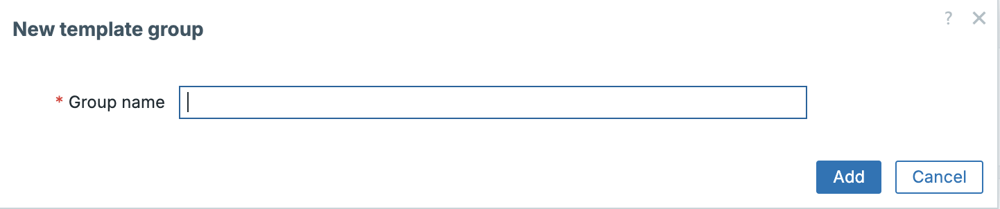
Permissions and Access Control
In Zabbix 8.0, access to templates is controlled by a combination of user roles
and usergroup permissions.
- Roles define what actions a user can perform globally. Such as viewing problems, acknowledging events, or modifying configuration.
- User groups: define which objects the role can act on by granting
Read-only (RO)orRead-write (RW)permissions to specific object groups (host groups, template groups, map groups, etc.). - Template groups are simply one of those object groups: a scope to which permissions can be applied.
For example, a user role may allow configuration changes, but the user will only be able to modify templates that belong to template groups where their user group has RW access.
This separation provides precise control between what actions are allowed and where they are allowed.
Impact of template permissions
Although template group permissions primarily govern configuration access, they can also influence operational behavior in the frontend. When users view or interact with problems, their ability to take certain actions depends both on their role and their permissions for the underlying host or template.
| Action | Read-only (RO) | Read-write (RW) |
|---|---|---|
| Acknowledge problem | ‚úÖ | ‚úÖ |
| Add comment / update status | ‚úÖ | ‚úÖ |
| Suppress problem | ‚úÖ | ‚úÖ |
| Change problem severity | ‚ùå | ‚úÖ |
| Manually close problem | ‚ùå | ‚úÖ |
| Modify trigger severity | ‚ùå | ‚úÖ |
| Edit or link templates | ‚ùå | ‚úÖ |
Tip
Read-only users can acknowledge or suppress issues but cannot change severity or manually close problems.
As an example in Zabbix:
Consider two distinct user groups with different roles and permissions:
- Operations (RO): Members can view hosts and problems, acknowledge or suppress issues, but cannot change severity levels or modify triggers.
- Monitoring Admins (RW): Members can edit templates, adjust trigger logic, and manually close problems.
If both groups monitor hosts that use templates from Templates/Applications/Databases:
- Operations: can acknowledge and suppress problems as part of daily triage.
- Monitoring Admins: can modify or tune the underlying template configuration when a systemic issue is detected.
This segregation maintains stability. Operations staff can handle incidents, while admins manage definitions.
Note
Template group permissions control configuration visibility, but operational access (to data and problems) still depends on host group permissions.
Permissions and Roles – How Access Really Works
Zabbix enforces permissions through user groups and roles, not through inheritance between objects. There is no automatic propagation of permissions from template groups to host groups or between templates and the hosts that use them.
- Roles determine what actions users may perform (view, edit, acknowledge, configure, etc.).
- User groups determine where those actions may occur by assigning RO/RW/Deny rights on object groups.
- Template groups and host groups are independent targets. A user with RW access to a host group does not automatically gain rights to the related template group, and vice versa.
This clear separation ensures operational access (hosts) and configuration access (templates) remain distinct, preventing unintended modifications.
Note
Roles (user, admin and super admin) define what you can do. Usergroup permissions define where you can do it.
Best Practices for Permissions
- Separate operational and design access: Grant RO rights to operations teams for monitoring, and RW rights to administrators maintaining templates.
- Align permissions logically: If a user group manages database hosts, grant
them RW access to both the relevant host groups and the corresponding
Templates/Databasesgroup. - Review permissions regularly: Periodically audit usergroup assignments to ensure only authorized teams have configuration privileges.
- Use clear naming conventions for groups: Distinguish functional scopes (Templates/OS/Linux) from organizational ones (Templates/Customers/Prod). This improves clarity when assigning permissions in large environments.
Template Subgroups
Zabbix 3.2 introduced nested template groups (subgroups), enabling a hierarchical structure similar to host groups. Subgroups allow administrators to build organized, multi-level collections of templates, which improves navigation and permission granularity.
Subgroups are created in Zabbix by adding a / in the group names. For example if we
want to create a group Databases as a subgroup of Templates then we only need
to create the new group like this: Templates/Databases. However it's
recommended to create Templates first.
Example hierarchy:
Templates
├── Operating Systems
│ ├── Linux
│ ├── Windows
│ └── Network Appliances
└── Applications
├── Databases
│ ├── PostgreSQL
│ ├── MySQL
│ └── Oracle
└── Web Servers
- Hierarchy for organization and permissions only: Subgroups do not change how templates link to hosts; they are purely structural.
- Automatic downward inheritance: If a user group has RW or RO access to a parent template group, that access automatically extends to all its existing subgroups. You can still assign explicit permissions on individual subgroups to override inherited rights.
- Parent-creation edge case: When you create a new parent group for an already existing subgroup (for example, creating Applications when Applications/Databases already exists), no permissions are automatically assigned to the new parent. Administrators must manually grant permissions on the parent group if required.
- Search and filtering benefits: The hierarchical view makes it easier to locate and manage templates in large environments.
- Consistency with host groups: Subgroup behavior and inheritance are identical for host groups and template groups, providing a uniform organizational model.
Tip
Use top-level groups for broad classifications (e.g., Templates/Applications) and subgroups for vendor or technology specialization. Assign RW rights at the top level for global administrators, and finer-grained access on subgroups for specialized teams.
Tags
Tags are metadata elements used throughout Zabbix for event classification, filtering, correlation, and alert routing. They attach semantic meaning to triggers, items, or templates, helping to describe what the metric or event represents.
Data collection ‚Üí Templates ‚Üí Template ‚Üí Tags
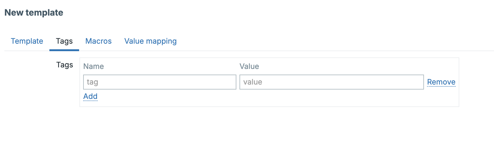
Purpose of Tags
- Event correlation: tags are used by the event correlation engine to match or suppress related problems.
- Alerting and automation: tags appear in actions, allowing conditional notifications or escalations.
- Service mapping: tags link triggers and events to defined business services.
- Filtering: dashboards, reports, and API queries can filter by tag values.
Examples
For a PostgreSQL database template:
For a network device template:
Some good practices to consider
- Use consistent naming for tag keys across templates (e.g., service, component, role).
- Avoid over tagging; focus on attributes useful for filtering or alerting.
- Use lower case, underscore separated keys for uniformity.
Tag Inheritance and Merging Behavior
When templates are linked to hosts and hosts or items already define their own tags — Zabbix merges all tag sources into a single event level tag set. Understanding this inheritance order is crucial for predictable alerting and correlation.
flowchart TB
%% --- TEMPLATED ENTITIES PATH (vertical) ---
subgraph TEMPLATED["Templated entities"]
direction TB
TPL["Template tags:
service=database
component=backend"]
H_TPL["Host tags (applied to templated entities):
region=europe
env=prod"]
TPL_TRIG["Template trigger tags:
severity=high"]
TPL_ITEM["Template item tags:
component=replication"]
EV1["Event (templated trigger)
Merged tags:
service=database
component=backend
component=replication
severity=high
region=europe
env=prod"]
TPL --> H_TPL --> TPL_TRIG --> TPL_ITEM --> EV1
end
%% --- LOCAL ENTITIES PATH (vertical) ---
subgraph LOCAL["Local entities (on Host)"]
direction TB
H_LOC["Host tags (local entities):
site=be-brussels
team=ops"]
LOC_TRIG["Local trigger tags:
class=local"]
LOC_ITEM["Local item tags:
sensor=temp"]
EV2["Event (local trigger)
Merged tags:
site=be-brussels
team=ops
class=local
sensor=temp"]
H_LOC --> LOC_TRIG --> LOC_ITEM --> EV2
end
Interpretation:
Zabbix merges tags from top to bottom. Template level tags are the most general, while item level tags are the most specific. All resulting tags flow into the generated event.
Inheritance Order explained:
- Item-level tags ‚Üí applied directly to collected metrics (most specific).
- Trigger-level tags ‚Üí apply to problems generated by the trigger.
- Host-level tags ‚Üí inherited only by items and triggers that originate from linked templates on that host (they do not apply automatically to locally defined host items/triggers).
- Template-level tags ‚Üí base tags from all linked templates.
The final event inherits all tags from these levels, with duplicates automatically removed.
Conflict Handling
- If the same tag key appears multiple times with different values, all values are kept.
- Duplicate key–value pairs are deduplicated.
- Tags are additive, not overridden. Unlinking or clearing a template removes only that template’s tags from future events.
Example :
| Source | Tag Key | Tag Value |
|---|---|---|
| Linux by Zabbix agent | service |
os |
| PostgreSQL by Zabbix agent 2 | service |
database |
| Host | region |
europe |
| Item | component |
replication |
The resulting event tags will be:
Some good practices when tagging
- Keep template level tags generic (e.g., service: database).
- Use host level tags for environmental context (e.g., region: europe, customer: acme).
- Apply item/trigger-level tags for event specificity (component: disk, component: replication).
- Regularly audit merged event tags under Monitoring ‚Üí Problems ‚Üí Tags to verify inheritance behavior.
Template macros
Macros are variables that make templates flexible and reusable. They define thresholds, credentials, or paths that can be adjusted per environment without editing template logic.
Data collection ‚Üí Templates ‚Üí Template ‚Üí Macros
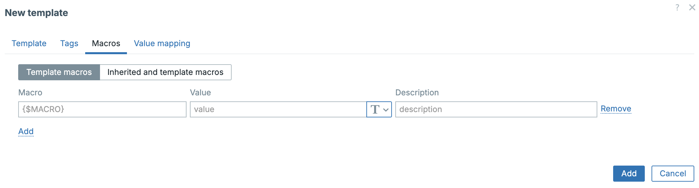
Example:
Macros can be defined globally, at the template level, host-group level, or host level, and can be overridden according to a strict precedence order.
Macro Precedence and Conflict Resolution
When multiple templates linked to the same host define the same macro, Zabbix resolves conflicts by comparing template IDs.
:warning: The macro from the template with the lowest template ID takes precedence.
Example:
| Template Name | Template ID | Macro | Value |
|---|---|---|---|
| Template OS Linux | 10101 | {$CPU_UTIL_MAX} |
85 |
| Template App PostgreSQL | 10115 | {$CPU_UTIL_MAX} |
90 |
‚Üí The oldest template (lowest ID) wins ‚Üí {$CPU_UTIL_MAX}=85.
Precedence Hierarchy:
| Level | Description | Notes |
|---|---|---|
| 1. Host macro | Defined on host | Highest priority |
| 2. Template macro | Lowest template ID wins if duplicate | Applies to linked templates |
| 3. Global macro | Default fallback | Lowest priority |
Some good practices
- Keep macro names unique within template families.
- Use host-level overrides for environment-specific adjustments.
- Document shared macros to prevent conflicts.
Value Maps
Value maps convert raw numeric or coded values into meaningful, human readable text. They make dashboards, triggers, and data views more intuitive. For example, turning SNMP status codes like 1, 2, 3 into Up, Down, Unknown.
Data collection ‚Üí Templates ‚Üí Template ‚Üí Value maps

Scope and Availability
Value maps exist in two distinct scopes in Zabbix 8:
| Scope | Created In | Can Be Used By | Shared With |
|---|---|---|---|
| Template-level value map | Inside a template definition | Items belonging to that same template | ‚ùå Not accessible from other templates or hosts |
| Host-level value map | Directly on a specific host | Items defined directly on that host | ‚ùå Not accessible by other hosts or templates |
Note
There is no such thing as a global value map. Each map is strictly local to its parent template or host. To reuse a map elsewhere, you must export/import or recreate it under the new object.
Types of Mappings
A value map can contain one or more mapping rules, which determine how an incoming raw value is translated.
Zabbix 8 supports the following mapping rule types:
| Mapping Type | Description | Example |
|---|---|---|
| Exact value | One-to-one translation of a specific value | 1 ‚Üí Up, 2 ‚Üí Down, 3 ‚Üí Unknown |
| Range mapping | Applies to any value within a range | 0–49 → Normal, 50–79 → Warning, 80–100 → Critical |
| Pattern (regex) | Matches values by regular expression | ^ERR.* ‚Üí Error detected |
| Default value | Fallback if no other rule matches | * ‚Üí Undefined |
Mappings are evaluated from top to bottom — the first match wins.
Example: Template-Level Value Map
In a custom Template Network Switch, you might define:
| Raw value | Mapped text |
|---|---|
| 1 | Interface Up |
| 2 | Interface Down |
| 3 | Interface Testing |
| * | Unknown State |
Items inside the template that return SNMP interface status (ifOperStatus) can reference this value map directly.
Example: Host-Level Value Map
For a specific host, e.g. Switch A, you might define:
| Raw value | Mapped text |
|---|---|
| 1 | Operational |
| 2 | Non-operational |
Only items defined directly on Switch A (not inherited from a template) can use this map. If the same host a template is applied, that host will use the template’s value map instead of the host-level one for items from the template.
Some good practices for value maps
- Keep template level value maps technology specific (e.g. SNMP interface, SMART disk status).
- Define host level maps only when customization is necessary for that device.
- Maintain consistent naming conventions (Interface Status, Disk Health) across templates to simplify export/import.
- If multiple templates require the same mapping logic, simply define identical value maps within each template. Zabbix does not provide cross-template sharing, so each template must contain its own copy of the map definition.
Template Dashboards
Template dashboards allow you to attach pre-designed visual dashboards directly to a template. When the template is linked to a host, Zabbix automatically creates a host-specific dashboard instance based on that template. This makes it possible to provide consistent visualizations for every host or application without manually building dashboards for each one.
Where to Find Template Dashboards
Template dashboards can be accessed and edited under:
Data collection ‚Üí Templates ‚Üí [select template] ‚Üí Dashboards tab
Each template may include one or more dashboards. When a host is linked to a template containing a dashboard, that dashboard appears automatically under:
Monitoring ‚Üí Hosts ‚Üí [select host] ‚Üí Dashboards tab
This dashboard is generated dynamically for the selected host, showing metrics and graphs populated with that host’s data.
Purpose and Use Cases
Template dashboards are most useful for application-level or host-specific visualization. They provide a structured, ready-to-use view tailored to the technology being monitored.
Typical Use Cases:
- Application dashboards:
- A Template App PostgreSQL can include charts for query throughput, buffer cache hit ratio, replication delay, and trigger problem widgets.
- When linked, each database instance automatically gains its own PostgreSQL performance dashboard.
- Operating system dashboards:
- Template OS Linux may display CPU load, memory utilization, filesystem usage, and system uptime widgets.
- Network device dashboards:
- Template Net Cisco SNMP could show interface bandwidth, packet errors, and uptime.
These dashboards ensure consistent presentation and help operators quickly understand the health of any host using that template.
Dashboard Components
Template dashboards support the same widget types as user dashboards, including:
| Category | Widget Examples | Purpose |
|---|---|---|
| Data visualization | Graphs, time series, top N | Show trends and metric comparisons |
| Status views | Problems, Item values, SLA widgets | Real-time status per host/application |
| Service overview | Business service state, SLA | Map triggers to service impact |
| Layout elements | Text, maps, URL embeds | Add context, documentation, or external views |
Each widget automatically substitutes host-specific data when rendered under
Monitoring ‚Üí Hosts ‚Üí Dashboards. No manual host configuration is required.
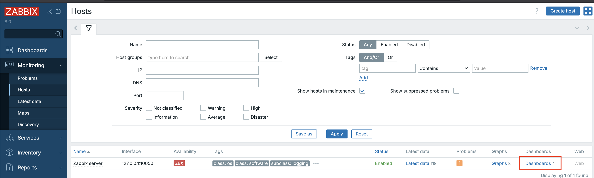
Some Good Practices
- Keep dashboards concise: Focus on the key health indicators of that application or system.
- Leverage macros: Use template macros (e.g., {$PG.DBNAME}) inside widgets to make them adaptive across instances.
- Group widgets logically: Use grid layout — metrics at top, triggers below, historical trends on the side.
- Document context: Include a Text widget describing what each graph shows or what thresholds mean.
- Use template dashboards: for “per-instance” visibility, and user dashboards for multi-host or environment-wide overviews.
Example: Template App PostgreSQL
A typical Template App PostgreSQL dashboard might include:
| Widget | Description |
|---|---|
| Graph | PostgreSQL transactions per second |
| Graph | Replication lag in seconds |
| Item Value | Cache hit ratio (pg.stat.cache.hit) |
| Problem Widget | Current trigger status for this instance |
| Text Widget | Notes: tuning guide, connection info, etc. |
Once the template is linked to hosts db01, db02, and db03, Zabbix automatically renders three dashboards, each showing real metrics for its respective instance.
Advantages of Template Dashboards
- Consistency: every host or application gets the same visualization standard.
- Zero manual setup: dashboards appear automatically on linking.
- Version control: dashboards are stored inside templates and follow the same YAML export/import flow.
- Maintainability: when you update a template dashboard, all hosts using that template receive the new version automatically.
- Scalability: ideal for large environments — one dashboard design scales to hundreds of hosts.
Template Management Operations
Template management in Zabbix 8.0 offers multiple actions for maintaining, cloning, cleaning, and synchronizing templates efficiently.
These operations are accessible under:
Data collection ‚Üí Hosts on the host itself.
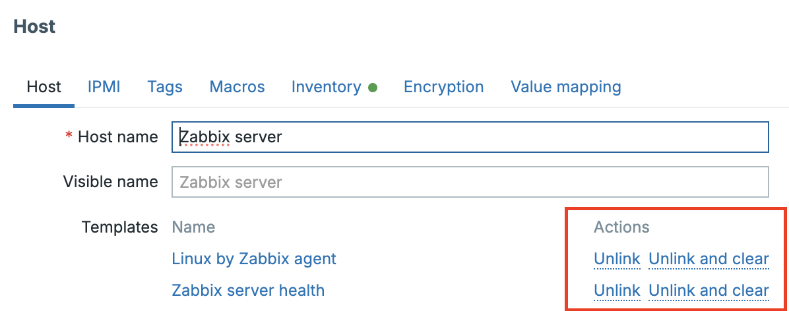
Unlink vs. Unlink and Clear
-
Unlink: Detaches the template from a host but retains all inherited items, triggers, and discovery rules on the host.
-
Unlink and Clear: Removes the template and deletes all entities that originated from it (items, triggers, graphs, and discoveries).
Use Unlink to preserve historical data, and Unlink and Clear when you need to remove the monitoring logic completely.
Clone
The clone button creates an exact copy of an existing template, including all
items, triggers, dashboards, macros, and value maps. Every entity within the clone
receives a new UUID, ensuring full independence from the original.
Data collection ‚Üí Templates on the template itself.
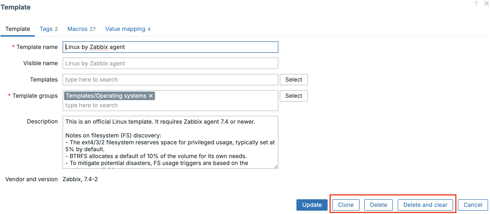
Example:
Template OS Linux ‚Üí Clone ‚Üí Template OS Rocky Linux (Custom)
Tip
Always rename cloned templates immediately to reflect their intended purpose or environment as we discussed before.
Delete vs. Delete and Clear
- Delete: Removes the template definition but leaves all items and triggers (now orphaned) on linked hosts.
- Delete and Clear: Deletes both the template and any entities created on linked hosts.
When performing cleanup or migration, Delete and Clear ensures no residual items remain in configuration cache.
Warning
Deletes happen immediately so there is no undo. Also deletes are performed on the database immediately so a large scale delete could have a serious performance impact.
Mass Update of Templates
Zabbix 8 provides a Mass update feature to modify multiple templates simultaneously. This is available via:
Data collection ‚Üí Templates ‚Üí Mass update
It’s particularly useful for enforcing consistent macro values, tags, or template group structures across many templates.
| Category | Examples of Updatable Fields |
|---|---|
| General | Template groups, name, description, tags |
| Macros | Add, update, or remove template-level macros |
| Discovery rules | Adjust update intervals or filter expressions |
| Dashboards | Replace or refresh template dashboards |
| Permissions | Move templates between groups (changes RBAC context) |
Behavior and Cautions
- Only the properties you select are overwritten.
- Existing macros or tags with identical names are replaced.
- Changes apply immediately; no rollback is available.
- When moving templates to a different group, verify that related user groups have the proper permissions on that target group.
Some Good Practices
- Use mass update for homogeneous template sets (for example, all OS templates or all network device templates).
- For larger or version-controlled environments, rely on YAML export/import through Git or CI/CD to ensure traceability and change control.
- Always test mass updates on a staging instance before production rollout.
Importing and Exporting Templates
Templates can be imported or exported in both YAML, JSON and XML formats, although YAML is strongly preferred for readability and version control. It is also the standard now in Zabbix.
Exporting
Navigate to Data collection ‚Üí Templates ‚Üí Select Your Template(s) ‚Üí Export, then select YAML.
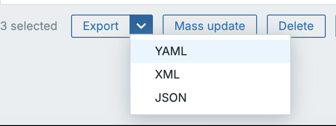
A typical export looks like:
zabbix_export:
version: '8.0'
templates:
- uuid: a4c1d0f2d7de4a40a8b347afeb9a88df
template: 'Template OS Rocky Linux'
groups:
- name: 'Templates/Operating Systems/Linux'
macros:
- macro: '{$CPU_UTIL_MAX}'
value: '90'
items:
- name: 'System uptime'
key: 'system.uptime'
type: ZABBIX_AGENT
Importing Templates
The import process in Zabbix 8.0 is intelligent — it compares UUIDs, detects differences, and optionally merges or removes entities. You can import templates via:
Data collection ‚Üí Templates ‚Üí Import
The button is on the upper right side of your window.
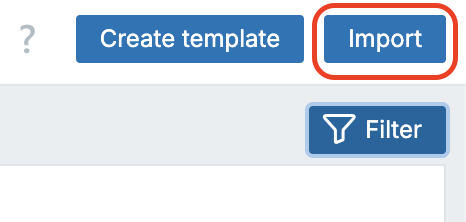
Zabbix supports both YAML JSON andXML`, though YAML is preferred due to its
readability and UUID retention.
Import Options and Their Effects
When importing a template, the import dialog presents several options that determine how conflicts and differences are handled:
| Option | Description | Behavior |
|---|---|---|
| Create new | Import entities that do not exist yet | New templates and their entities are created |
| Update existing | Update entities that already exist based on matching UUIDs | Existing templates are modified to match the import file |
| Delete missing | Remove entities that exist in Zabbix but not in the import file | Entities absent from the import are deleted |
| Replace existing template | Forcefully overwrite all existing definitions | Full replacement, including dashboards and discovery rules |
UUID-Based Matching
Starting with Zabbix 6.2, template imports rely primarily on UUIDs, not names, for matching.
- If the UUID exists, Zabbix updates that object — even if the name differs.
- If no UUID matches, Zabbix treats the object as new and creates it.
- If an object shares the same name but has a different UUID, it is treated as a different entity — no merge occurs.
Tip
When re-importing from version-controlled YAML, always keep original UUIDs intact. Editing or regenerating them will cause duplicates rather than updates.
Diff Visualization
Before confirming an import, Zabbix displays a visual diff screen showing what will change. This interface uses color coding to illustrate modifications at a granular level:
| Color | Meaning |
|---|---|
| üü© Green | Elements that will be added or new attribute values |
| üü• Red | Elements that will be removed or replaced |
Zabbix compares entities by UUID and lists each difference per category, items, triggers, graphs, macros, value maps, discovery rules, and dashboards. Modified objects show their old values in red and new values in green, providing a clear preview of all pending changes.
“Update Existing” Behavior
When Update existing is enabled:
- Entities with matching UUIDs are updated.
- Entities not in the import remain unchanged unless Delete missing is also checked.
- Template-level fields (name, groups, description, macros, dashboards) are replaced by those from the import.
This mode is ideal for incremental updates or synchronization with a Git-tracked source.
“Delete Missing” Behavior
With Delete missing enabled, Zabbix removes any element present in the database but absent in the import file:
- Items, triggers, discovery rules, graphs, dashboards, and value maps
- Orphaned macros and outdated entities
Warning
This action is destructive. It permanently removes definitions and historical associations. Use only when performing full synchronization from version-controlled sources or replacing obsolete templates.
When both Update existing and Delete missing are checked, the import performs a full sync. The resulting template will exactly match the import file.
Error Handling
Zabbix validates all entities before applying the import. If inconsistencies are found, the import halts and reports detailed errors, such as:
- Missing referenced value maps or linked templates
- Invalid macro names or syntax
- Circular template linkage
- Version mismatches between export and server
The error list shows affected entity names, allowing quick correction and re-import.
Safe Import Workflow
For production grade environments:
- Export first: always back up current templates.
- Validate syntax: use yamllint or JSON validators.
- yamllint template.yaml
- jq empty template.json
- Preview diff: check additions (green) and deletions (red).
- Test in staging: confirm behavior before production import.
- Promote via automation: use the Zabbix API (configuration.import) for reproducible CI/CD deployments.
???+ tip
Automating template synchronization via API and Git ensures identical configurations
across multiple Zabbix servers or environments.
Conclusion
Templates in Zabbix 8.0 are now fully self-contained, UUID-tracked, and automation ready. With improved import/export handling, color-coded diffs, and fine-grained RBAC, they deliver both control and scalability.
By following some good practices, cloning instead of editing built-ins, organizing
templates by group and tag, tuning intervals, maintaining YAML or JSON in Git,
and verifying diffs before import, administrators achieve consistent, predictable
monitoring deployments.
Templates are no longer mere configuration helpers; they are core assets in a modern observability strategy, enabling reproducible, automated, and standards driven monitoring across diverse infrastructures.
Questions
- What are the main configuration elements a Zabbix template can contain, and how do they contribute to standardizing monitoring?
- Explain what happens to UUIDs when a template is cloned.
- Why is it important to preserve UUIDs when managing templates through YAML or Git?
- Describe how tags are inherited when a template is applied to a host.
- Which tags take precedence if both the host and the template define the same key?
- Why can't a template-level value map be used by local host items?
Useful URLs
- https://www.zabbix.com/documentation/current/en/manual/config/templates
- https://www.zabbix.com/documentation/current/en/manual/config/items/mapping
- https://www.zabbix.com/documentation/current/en/manual/config/templates/template
- https://www.zabbix.com/documentation/current/en/manual/xml_export_import
- https://git.zabbix.com/repos?visibility=public
- https://jsonpathfinder.com/
- https://www.yamllint.com/
Chapter 07 : Alerting
Sending out alerts with Zabbix
After delving into templates, it's time to return to the data flow and bring everything together by exploring integrations with powerful external services. In this chapter, we’ll complete the data flow journey, showing how to extend Zabbix capabilities through seamless connections with third-party tools and platforms.
We'll guide you through setting up integrations that enhance your monitoring system, covering various use cases from alerting to data visualization and automation. By integrating Zabbix with external services, you'll unlock new levels of functionality, making your monitoring setup more dynamic and adaptable.
By the end, you'll have a well-rounded understanding of how to fully utilize Zabbix data flow, augmented by strategic integrations that add value to your infrastructure management.
Media types
Conclusion
Questions
Useful URLs
Scripts
Conclusion
Questions
Useful URLs
Actions
Conclusion
Questions
Useful URLs
Chapter 08 : LLD
Using Low level discovery to automate
In this chapter, we'll dive into Low-Level Discovery (LLD), covering everything there is to know about this powerful feature in Zabbix. LLD automates the creation of hosts, items, triggers, and more, simplifying the management of large and dynamic environments.
We'll also explain how to work with custom JSON in the context of LLD, showing you how to tailor discovery rules to fit your unique needs. By mastering these techniques, you'll be able to create highly adaptable monitoring setups that respond to changes in your infrastructure with minimal manual intervention.
By the end of this chapter, you'll have a deep understanding of LLD, from basic concepts to advanced customization, enabling you to leverage its full potential in your Zabbix deployment.
Custom Low Level Discovery
Zabbix's Low-Level Discovery (LLD) plays a crucial role in dynamically detecting and managing monitored entities. While Zabbix provides built-in discovery rules, real-world environments often demand more flexibility and customization.
In this chapter, we will explore custom LLD techniques, allowing you to create powerful, tailored discovery mechanisms that go beyond standard templates. You'll learn how to use scripts and custom rules to automatically detect and monitor services, network interfaces, and other dynamic components within your infrastructure.
Whether you're monitoring cloud environments, network devices, or application-specific metrics, mastering custom LLD will help you reduce manual work, improve accuracy, and scale your monitoring effortlessly. Let’s dive in!
Note
For this chapter we start with a working system with a proper configured agent in passive mode. If you have no clue how to do this go back to chapter 01.
Zabbix Low-Level Discovery (LLD) provides a dynamic mechanism for automatically creating monitoring elements based on discovered entities within your infrastructure.
Core Functionality :
LLD enables Zabbix to detect changes in your environment and create corresponding items, triggers, and graphs without manual intervention. This automation is particularly valuable when monitoring elements with fluctuating quantities or identifiers.
Discovery Targets: The discovery process can identify and monitor various system components including:
- File systems
- CPUs
- CPU cores
- Network interfaces
- SNMP OIDs
- JMX objects
- Windows services
- Systemd services
- Host interfaces
- Anything based on custom scripts
Through LLD, administrators can implement scalable monitoring solutions that automatically adapt to infrastructure changes without requiring constant template modifications.
Implementing Low-Level Discovery in Zabbix
The Challenge of Manual Configuration
We could manually create each item but this would be a very time-consuming task and impossible to manage in large environments. To enable automatic discovery of our items or entities, we need discovery rules.
Discovery Rules
These rules send the necessary data to Zabbix for our discovery process. There is no limit to the various methods we can employ, the only requirement is that the end result must be formatted in JSON. This output information is crucial as it forms the foundation for creating our items.
Prototypes and Automation
Once our discovery rule is in place, we can instruct Zabbix to automatically generate items, triggers, graphs, and even host prototypes. These function as blueprints directing Zabbix how to create those entities.
LLD Macros
To enhance flexibility, Zabbix implements LLD macros. These macros always begin with a # character before their name (e.g., {#FSNAME}). Acting as placeholders for the values of discovered entities, Zabbix replaces these macros with the actual discovered names of the items during the implementation process.
The Zabbix Low-Level Discovery Workflow
The workflow that Zabbix follows during Low-Level Discovery consists of four distinct phases:
Discovery Phase * Zabbix executes the discovery item according to the defined discovery rule * The item returns a JSON list of discovered entities
Processing Phase * Zabbix parses the JSON data and extracts the necessary information
Creation Phase * For each discovered entity, Zabbix creates items, triggers, and graphs based on the prototypes * During this process, LLD macros are replaced with the actual discovered values
Monitoring Phase * Zabbix monitors the created items using standard monitoring procedures
Advantages of LLD Implementation
The benefits of implementing Low-Level Discovery are substantial:
- Automation - Creation of items, triggers, graphs, and hosts becomes fully automated
- Scalability - Enables monitoring of large numbers of hosts or items without manual intervention
- Adaptability - Zabbix can dynamically adjust to environmental changes by creating or removing entities as needed
Learning LLD custom script
We begin our series with LLD based on custom scripts because, while it represents one of the more complex topics, mastering this concept provides a solid foundation. Once you understand this implementation approach, the other LLD topics will be considerably easier to comprehend.
Below is a sample JSON structure that Zabbix can interpret for Low-Level Discovery:
Upon receiving this JSON data, Zabbix processes the discovery information to identify distinct file systems within the monitored environment. The system extracts and maps the following elements:
- File system mount points: /, /boot, and /data
- File system types: ext4 and xfs
Zabbix automatically associates these discovered values with their corresponding LLD macros {#FSNAME} for the mount points and {#FSTYPE} for the file system types. This mapping enables dynamic creation of monitoring objects tailored to each specific file system configuration.
Creating a custom script.
In this example, we will develop a custom script to monitor user login activity on our systems. This script will track the number of users currently logged into each monitored host and report their login status.
The implementation requires placing a custom script in the appropriate location on
systems running Zabbix Agent (either version 1 or 2). Create the following script
in the /usr/bin/ directory on each agent installed system:
paste the following content in the file:
users-discovery.sh
#!/bin/bash
# Find all users with UID ‚â• 1000 of UID = 0 from /etc/passwd, except "nobody"
ALL_USERS=$(awk -F: '($3 >= 1000 || $3 == 0) && $1 != "nobody" {print $1}' /etc/passwd)
# Find all active users
ACTIVE_USERS=$(who | awk '{print $1}' | sort | uniq)
# Begin JSON-output
echo -n '{"data":['
FIRST=1
for USER in $ALL_USERS; do
# Check if the user is active
if echo "$ACTIVE_USERS" | grep -q "^$USER$"; then
ACTIVE="yes"
else
ACTIVE="no"
fi
# JSON-format
if [ $FIRST -eq 0 ]; then echo -n ','; fi
echo -n "{\"{#USERNAME}\":\"$USER\", \"{#ACTIVE}\":\"$ACTIVE\"}"
FIRST=0
done
echo ']}'
Once you have created the script don't forget to make it executable.
The script will be executed by the Zabbix agent and will return discovery data about user sessions in the JSON format required for Low-Level Discovery processing.
Once deployed, this script will function as the data collection mechanism for our user monitoring solution, enabling Zabbix to dynamically discover user sessions and track login/logout activities across your infrastructure.
User Provisioning for Testing
Let's establish additional test user accounts on our system to ensure we have sufficient data for validating our monitoring implementation. This will provide a more comprehensive testing environment beyond the default root account and your personal user account. Feel free to add as many users as you like.
create some users
Create a password for every user so that we can login on the consoleCreating a Template
It is always considered best practice to work with a template. The first step is to create a template for the LLD rules.
Navigate to Data collection, select Templates, and click Create template in the upper-right corner.
Fill in the required information, specifying at least a template name and the template group it belongs to.

Once the template is created click on Discovery in the template between Dashboards
and Web. In the upper right corner of the screen you see now a button create discovery rule.
We will nog create our discovery rule that will import the JSON from our script.
Click on the button.
Fill in the needed information like on the screenshot :
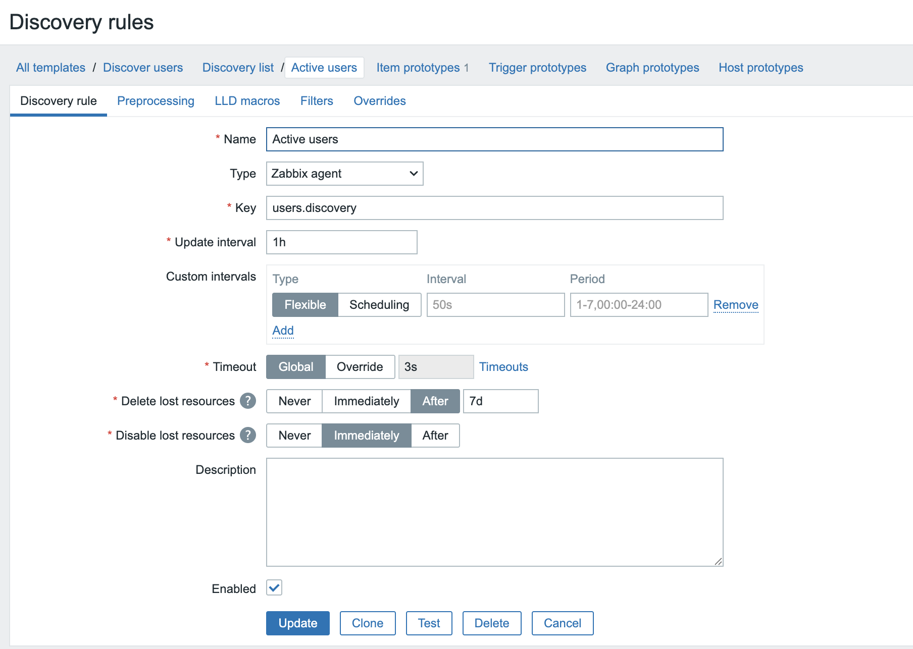
Creating a Template for LLD Rules
- Type: Set to Zabbix agent, as the agent is configured to work in passive mode. If the agent is properly configured for active mode, Zabbix agent (active) can be used instead. Passive mode allows polling information from the script.
- Key: This key acts as a reference sent to the agent, instructing it on which script to execute.
- Update Interval: Determines how often Zabbix executes the script. For detecting newly created users, an interval of one hour is a reasonable setting.
Note
If you put the update interval for the discovery rule too frequent like every minute, then this will have a negative impact on the performance. In our case it's a small JSON file but most of the time it will contain much more data.
Once everything is filled in we can save the template.
Login to your console on the host that you would like to monitor and go to the following path.
Creating the User Parameter Configuration
The next step is to create the userparameter-users.conf file in this directory. This file will define the reference key users.discovery from the LLD rule and map it to the corresponding script. By doing this, Zabbix can associate the item key with the correct script execution.
Add the following line in the config file and save it.
Note
When you add a new UserParameter to the agent we need to restart the agent
to pick up the new config or use the config option -R userparameter_reload
on our agent this will apply the new configuration but only works on UserParameters
not on other changes in the agent configuration.
Saving the Template and Preparing the Monitored Host
After entering all the required details, save the template to apply the configuration.
Next, access the console of the host you want to monitor and navigate to the following
directory.
Note
Zabbix agent has a new option since 6.0, userparameter_reload. This allows
us to reload the config for the userparameters and makes a restart of the agent
not necessary.
Testing the Configuration
With the setup complete, it is time to perform some tests.
- Navigate to Data collection and select Hosts.
- Link the newly created template to the appropriate host in the Zabbix frontend.
- Once the template is linked, go to the Discovery section.
- Click on the discovery rule created earlier, Active users.
- At the bottom of the screen, locate the Test button and click on it.
- In the popup window, press Get value and test.
If everything is configured correctly, Zabbix will retrieve the expected value and store it in the database.
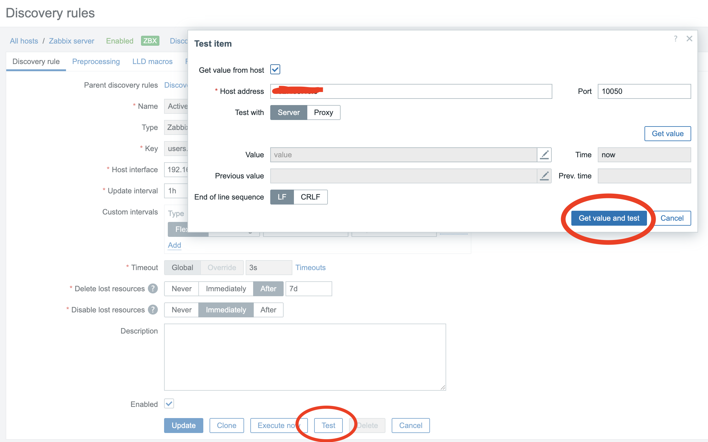
If all went well you should have received some data back in JSON like you see here, depending on the number of users you made and what name you gave them.
Creating prototype items.
With our Low-Level Discovery (LLD) rule in place, we are ready to create our LLD item prototype. Follow these steps to configure the item prototype correctly:
-
Navigating to Item Prototype Configuration - Open your template in Zabbix. - Click on the Discovery tab. - Navigate to Item Prototypes. - Click on Create Item Prototype in the upper-right corner.
-
Configuring the Item Prototype Several key fields must be completed for the prototype to function correctly:
-
Name:
- Use the macro
{#USERNAME}to create dynamically generated item names. - Example:
User {#USERNAME} login status.
- Use the macro
-
Type:
- Select
Zabbix agentas the item type to facilitate testing.
- Select
-
Key:
- The item key must be unique.
- Utilize macros to ensure a unique key for each item instance.
-
Type of Information:
- Defines the format of the received data.
- Since our script returns
0or1, set this toNumeric.
-
Update Interval:
- Determines how frequently the item is checked.
- A reasonable interval for checking user online status is
1m(one minute).
With these configurations, your LLD item prototype is ready for deployment.

Configuring the Agent to Listen for LLD Items
Our LLD item will retrieve data from the key custom.user[{#USERNAME}], so the next step is to configure the agent to listen for this key.
- Edit the
userparameter-users.conffile that was created earlier on theZabbix agent. - Add the following line to the configuration file:
- This configuration ensures that the agent listens for requests using the
custom.user[{#USERNAME}]key. - The
{#USERNAME}macro is dynamically replaced with usernames extracted from the discovery rule.
Note
Important: After making changes to the configuration file, restart the Zabbix agent
or reload the configuration to apply the new settings.
With these configurations in place, your LLD item prototype is fully set up and ready for deployment.
Testing our lld items
Before we put things in production we can of course test it. Press the test button
at the bottom. Fill in the needed information:
- Host address : the IP or DNS name where we have our scripts configured on our agent.
- Port : the agent port. This should be 10050 unless you have changed it for some reason.
- Macros : map the macro with one of the user names you have configured on your system.
Press Get value and if all goes well Zabbix will return the value 1 or 0 depending
if the user is online or not.
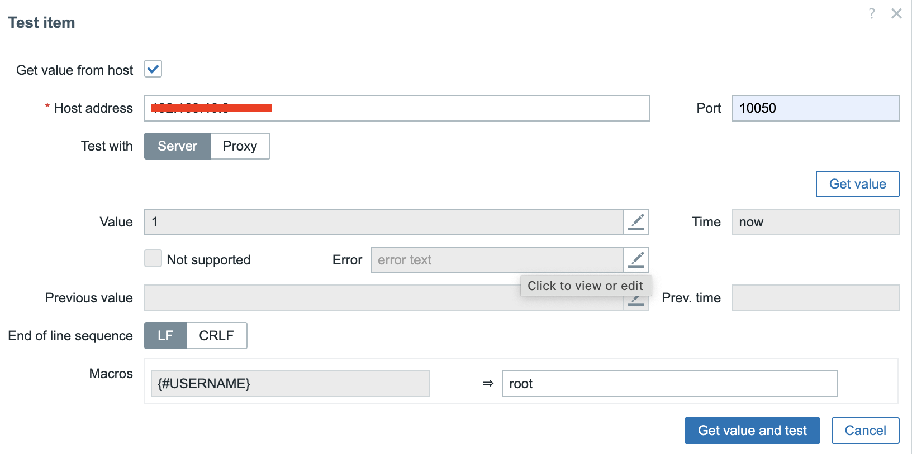
Apply the template to your host and have a look at the latest data. Things should slowly start to populate.
Adding LLD triggers
Let's go back to our template to our Discovery and select Trigger prototype.
Click on the top right on Create trigger prototype.
Fill in the following fields:
- Name :
User {#USERNAME} is logged inAgain we want our information to be more dynamic so we make use of our macros in the name of our trigger. - Severity : We select the severity level here.
Informationseems high enough. - Expression : We want to get a notification if someone is online you can
make use of the
Addbutton or just copy :last(/Discover users/custom.user[{#USERNAME}])=1

Note
Copying the Expression will only work if you used the same name for the template and item key.
You can now log in with a user that we created before or root and have a look at our dashboard. A notification should popup soon to inform you that a user was logged in.
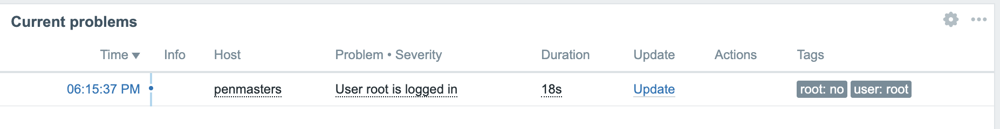
Creating LLD overrides.
Having our notifications when users log in on our systems is a nice security feature
but i'm more worried when a user logs in with root then when for example Brian
logs in. When root logs in I would like to get the alert High instead of Information.
This is possible in Zabbix when we make use of overrides. Overrides allow us to change the behaviour of our triggers under certain conditions.
Go to the template to the discovery rule Active users. Click on the tab Overrides.
Press on the button Add and fill in the needed information.
- Name : A useful name for our override in our case we call it
high severity for user root. - Filters : Here we filter for certain information that we find in our LLD
macros. In our case we look in the macro
{#USERNAME}for the userroot.

- Operation : Here we define what needs to happen. We want to manipulate the
trigger so select for object
Trigger prototypeand select that we want to modify theSeverityand selectHigh. This will modify the severity of our trigger and change it toHighif the user that is detected is the userroot.

Note
It can take a while before changes are applied to your host. Don't panic this
is normal the discovery rule usually only updates every hour. If you like to
force this just go to your discovery rule on the host, select it and press Execute now.
Once everything is changed you can login on your system with the user root and
one of the other users. As you will see both triggers will fire off but with
different severity levels.
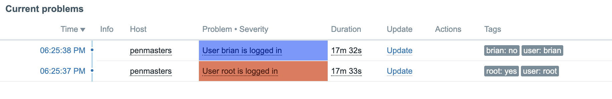
Conclusion
Question
Useful URLs
Low Level Discovery with Dependent items
Efficiency in monitoring isn't just about automation it's also about minimizing resource usage. Low-Level Discovery (LLD) with dependent items in Zabbix offers a powerful way to reduce agent load and database overhead by collecting data once and extracting multiple metrics from it.
Instead of creating separate item queries for each discovered entity, dependent items allow you to process a single data source such as a JSON response, log entry, or SNMP bulk data and extract relevant metrics dynamically. This approach significantly optimizes performance while maintaining full automation.
In this chapter, we'll explore how to implement LLD with dependent items, configure preprocessing rules, and leverage this technique to make your Zabbix monitoring more efficient, scalable, and resource friendly by using a practical example.
Let’s get started!
Note
For this chapter we start with a working system with a passive Zabbix agent.
You can always refer to Chapter 01 if you like to know how to setup Zabbix.
It can be a good start to have a look at our previous topic Custom LLD to get
a better understanding on how LLD works.
Creating our custom data
Before we can implement our Low-Level Discovery (LLD) rule, we first need relevant data to work with. Consider a scenario where a print server provides a list of printers along with their status in JSON format. This structured data will serve as the foundation for our discovery process.
Example data
On your Zabbix server, log in and create a text file containing the example data that will serve as the master item for our Low-Level Discovery (LLD) rule.
- Access the Server: Log in to your Zabbix server via SSH or directly.
- Create the File: Run the following command to store the JSON data:
Run the following command:
- Verify the File: Ensure the file is correctly created by running:
Create a master item
We are now ready to create an item in Zabbix to get the information in to our master item. But first we need to create a host.
Go to Data collection | Hosts and click Create host. Fill in the Host name
and the Host group and create an Agent interface. Those are the only things
we need for our host and press Add.
Go to the host and click on items the next step will be to create our item so
that we can retrieve the data from our printers.
 8.1 Create host
8.1 Create host
Note
Remember this is just an example file we made in real life you will use probably
a HHTP agent or a Zabbix agent to retrieve real life data.
Click on top right of the page on Create item to create a new item so that we
can retrieve our master items data.
Once the New Item popup is on the screen fill in the following details:
- Name : RAW : Printer status page
- Type : Zabbix agent
- Key : vfs.file.contents[/home/printer-status.txt]
 8.2 Create a LLD item
8.2 Create a LLD item
Before you press Add let's test our item first to see if we can retrieve the
data we need.
Press Test at the bottom of the page a popup will come and you can press at the
bottom of the page Get value and test or Get value just above. Both should work
and return you the information form the txt file.
Note
When you press Get value it
will show you the value as is retrieved from the host. Get value and test on
the other hand will also try to execute other pre processing steps if there are
any. So the output of the data could be different. Also if you use secret macros
Zabbix will not resolve them you will need to fill in the correct information
first by yourself.
 8.3 Test LLD item
8.3 Test LLD item
Tip
Keep a copy of the output somewhere you will need it in the following steps to create your LLD rule and LLD items etc ...
Create LLD Discovery
To create a discovery rule first to go Discovery rules on the top next to Items,
Triggers and Graphs and click on Create discovery rule.
 8.4 Create a discovery rule
8.4 Create a discovery rule
Before configuring our Low-Level Discovery (LLD) rule, we can test our JSON queries
using tools like JSON Query Tool. If we apply the
query $..name, it extracts all printer names, while $..status retrieves
their statuses.
However, referring to the Zabbix documentation,
we see that starting from Zabbix 4.2, the expected JSON format for LLD has changed.
The data object is no longer required; instead, LLD now supports a direct JSON
array. This update enables features like item value preprocessing and
custom JSONPath queries for macro extraction.
While Zabbix still accepts legacy JSON structures containing a data object for
backward compatibility, its use is discouraged. If the JSON consists of a single
object with a data array, Zabbix will automatically extract its content using
$.data. Additionally, LLD now allows user-defined macros with custom JSONPath
expressions.
Due to these changes, we cannot use the filters $..name or $..status directly.
Instead, we must use $.name and $.status for proper extraction. With this
understanding, let's proceed with creating our LLD rule.
Head over to the LLD macros tab in our Discovery rule and map the following macros
with our JSONpath filters to extract the needed info so that we can use it later
in our LLD items, triggers, graphs .... .
- {#PRINTER.NAME} : Map it with
$.name. - {#PRINTER.STATUS} : Map it with
$.status.
 8.5 Create a LLD Macro
8.5 Create a LLD Macro
When ready press Update at the bottom of the page.
Creating a Low-Level Discovery (LLD) Item
After defining the discovery rule and mapping the data to the corresponding LLD macros, the next step is to create an LLD item. This is done through item prototypes.
- Navigate to the
Item prototypestab. - Click Create
item prototypein the upper-right corner. - Configure the following parameters:
- Name:
Status from {#PRINTER.NAME} - Type:
Dependent item - Key:
status.[{{#PRINTER.NAME}}] - Type of information:
Text - Master Item: Select the previously created raw item.
This setup ensures that the discovered printer statuses are correctly assigned and processed through the LLD mechanism.
 8.6 Create a LLD item
8.6 Create a LLD item
Before saving the item, navigate to the Preprocessing tab to define the necessary
preprocessing steps. These steps will ensure that the extracted data is correctly
formatted for Zabbix. Configure the following preprocessing steps:
- JSONPath: $.data..[?(@.name=='{#PRINTER.NAME}')].status.first()
- Replace:
- ConvertNOKtofalse.
- This step is required because Zabbix does not recognizeNOKas a boolean value but does recognizefalse. - Boolean to Decimal:
- This conversion transforms boolean values into numerical representation (1forOK,0forfalse). - Numeric values are more suitable for graphing and analysis in Zabbix. - Type of Information:
- Set to Numeric to ensure proper data processing and visualization.
Understanding the JSONPath Expression
To derive the correct JSONPath query, use a tool such as the JSON Query Tool
(https://www.jsonquerytool.com/). This tool
allows testing and refining JSON queries using real data retrieved from the raw item.
The JSONPath query used in this case is:
Breakdown of the JSONPath Syntax
$‚Üí Refers to the root of the JSON document..data‚Üí Accesses thedatakey within the JSON structure...‚Üí The recursive descent operator, searching through all nested levels for matching elements.[?(@.name=='{#PRINTER.NAME}')]‚Üí A filter expression that:- Uses
?(@.name=='Color Printer 1')to match objects where thenamefield equals"Color Printer 1". {#PRINTER.NAME}is a Zabbix macro that dynamically replaces"Color Printer 1"with the discovered printer name.@‚Üí Represents the current element being evaluated..status‚Üí Retrieves thestatusfield from the filtered result..first()‚Üí Returns only the first matchingstatusvalue instead of an array.- Without
.first(), the result would be["OK"]instead of"OK".
By applying these preprocessing steps, we ensure that the extracted printer status is correctly formatted and can be efficiently used for monitoring and visualization in Zabbix.
Optimizing Data Collection and Discovery Performance
Before finalizing our configuration, we need to make an important adjustment. The current settings may negatively impact system performance due to an overly frequent update interval.
Navigate to Data collection|Hosts and click on Items. Select the RAW item
that was created in the first step.
By default, the update interval is set to 1 minute. This means the item is
refreshed every minute, and since our LLD rule is based on this item, Zabbix will
rediscover printers every minute as well. While this ensures timely updates, it
is inefficient and can impact performance.
A common best practice is to configure discovery rules to run no more than
once per hour. However, since our LLD item relies on this same RAW item, an
hourly interval would be too infrequent for monitoring printer status updates.
To strike a balance between efficiency and real-time monitoring, we can apply
a preprocessing trick.
Go to the Preprocessing tab and add the following preprocessing step:
- Discard unchanged with heartbeat ‚Üí
1h
This ensures that the database is updated only when a status change occurs. If
no status change is detected, no new entry is written to the database, reducing
unnecessary writes and improving performance. However, to ensure some data is
still recorded, the status will be written to the database at least once per hour,
even if no changes occur.
Before saving the changes, we can further optimize storage by preventing the
master item from being stored in the database. Navigate back to the Item tab and
set History to Do not store.
Note
If you change your mind and want to keep the history then our preprocessing step will at least not save it every minute but only when there are changes or once every hour.
The RAW item is only used to feed data into the LLD discovery rule and LLD items.
Since we do not need to retain historical data for this master item,
discarding it saves database space and improves efficiency.
By applying these optimizations, we ensure that our monitoring system remains efficient while still capturing necessary status updates.
Creating a Low-Level Discovery (LLD) Filter
Now lets have some fun and use a script that generates the output of our text file
with random statuses so that we have a more close to real live environment.
Create in the folder where your printer-status.txt file is a new file called
printer-demo.py and paste following content in it.
python script
#!/usr/bin/env python3
import json
import os
STATUS_FILE = "printer-status.txt"
# Define printers
printers = [
{"name": "Color Printer 1", "status": "OK"},
{"name": "Color Printer 2", "status": "OK"},
{"name": "B&W Printer 1", "status": "OK"},
{"name": "B&W Printer 2", "status": "NOK"},
{"name": "This is not a printer", "status": "NOK"}
]
# Check if the status file exists
if os.path.exists(STATUS_FILE):
# Read the existing status from the file
with open(STATUS_FILE, "r") as f:
output = json.load(f)
printers = output["data"]
else:
# If no file, set initial values
output = {"data": printers}
# Toggle statuses
for printer in printers:
printer["status"] = "NOK" if printer["status"] == "OK" else "OK"
# Write the new status to file
with open(STATUS_FILE, "w") as f:
json.dump({"data": printers}, f, indent=2)
print(f"Printer status updated and written to {STATUS_FILE}")
Once you have created the script make it executable with chmod +x printer-demo.py
and then run the script with the following command ./printer-demo.py.
If you cannot run the script then check the python environment or try to run it
as python printer-demo.py.
This script will change the status of our printers you can verify this in the
Latest data page.
 8.7 Latest data
8.7 Latest data
But hey wait as we can see there is an extra devices detected with the name
This is not a printer and Zabbix hasn't detected any status for it .....
That we don't have any status yet is normal remember we did a check only once per hour with our Preprocessing step so first time the data was changed the new device was detected. If the status from the device changes again zabbix will create an update for the item and a status will be processed.
Note
Low Level will work in 2 steps first step is the detection of the new devices and second step is populating the items with the correct data. Remember that we did an item interval of 1m so it can take up to 1m before our items gets a new value.
Lets see now how we can remove the device this is not a printer from our list
since we don't want to monitor this one.
Let's go back to our LLD discovery rule this time to the tab Filters and add the following to the fields:
- Label : {#PRINTER.NAME}
does not match - regular expression :
{$PRINTERS.NOT.TO.DETECT}
 8.8 LLD Filters
8.8 LLD Filters
Press update and go to our Host and click on the tab Macros. Here we will create
our macro and link it with a regular expression.
Fill in the following values :
- Macro: {$PRINTERS.NOT.TO.DETECT}
- Value : ^This is not a printer$
 8.9 LLD Filter Macros
8.9 LLD Filter Macros
After executing our discovery rule and sending updated values to Zabbix, we can
verify the filter's effectiveness by checking the Latest data view, where the
excluded device no longer appears.
When navigating to the Items section of our host, we'll observe that the previously
discovered item for the filtered device now displays a Disabled status with an
accompanying orange exclamation mark icon. Hovering over this icon reveals the
system notification: The item is not discovered anymore and has been disabled,
will be deleted in 6d 23h 36m.
This automatic cleanup behavior for undiscovered items follows Zabbix's default
retention policy, which can be customized by modifying the Keep lost resources period
parameter in the Discovery rule settings to align with your organization's monitoring
governance requirements.
This concludes our chapter.
Conclusion
Low-Level Discovery in Zabbix represents a powerful approach to dynamic monitoring that scales efficiently with your infrastructure. Through this chapter, we've explored how the combination of LLD with dependent items and discovery filters creates a robust framework for automated monitoring that remains both comprehensive and manageable.
By implementing dependent items within discovery rules, we've seen how to build sophisticated monitoring relationships without the performance overhead of multiple direct checks. This approach not only reduces the load on monitored systems but also simplifies the overall monitoring architecture by establishing clear parent-child relationships between metrics.
The strategic application of LLD filters, as demonstrated in our examples, transforms raw discovery data into precisely targeted monitoring. Instead of drowning in irrelevant metrics, your Zabbix instance now focuses only on what matters to your organization's specific needs. Whether filtering by regex patterns, system types, or operational states, these filters act as the gatekeepers that maintain monitoring relevance as your environment expands.
Perhaps most importantly, the techniques covered in this chapter enable truly scalable monitoring that grows automatically with your infrastructure. New servers, applications, or network devices are seamlessly incorporated into your monitoring framework without manual intervention, ensuring that visibility expands in lockstep with your environment.
As you implement these concepts in your own Zabbix deployments, remember that effective monitoring is about balance and capturing sufficient detail while avoiding data overload. The combination of LLD, dependent items, and thoughtful filtering provides exactly this balance, giving you the tools to build monitoring systems that scale without sacrificing depth or precision.
With these techniques at your disposal, your Zabbix implementation can evolve from a basic monitoring tool to an intelligent system that adapts to your changing infrastructure, providing actionable insights without constant reconfiguration.
Questions
- How do LLD filters change the monitoring paradigm from "collect everything" to a more targeted approach?
- How does Zabbix LLD fundamentally differ from traditional static monitoring approaches ?
- Break down the components of the JSONPath expression $.data..[?(@.name=='{#PRINTER.NAME}')].status.first() and explain how each part contributes to extracting the correct data.
- How would you modify the example to monitor printer ink levels in addition to printer status?
Useful URLs
Chapter 09 : Extending Zabbix
Leveraging custom items for extending the Zabbix environment
In this chapter, we'll take a deep dive into extending Zabbix functionality beyond its default item options. We'll cover the script item, external checks, remote commands, user parameters, and other advanced features that allow you to customize and expand your monitoring capabilities.
You'll learn how to use these tools to integrate custom logic, monitor external applications, and automate tasks, making Zabbix an even more powerful and flexible solution tailored to your specific needs.
By the end, you'll have the skills to push Zabbix beyond its default configuration, unlocking new possibilities for complex and unique monitoring scenarios.
Frontend Scripts
So, you're diving into the world of Zabbix frontend scripts, and you're in for a treat! These little powerhouses unlock a whole new level of flexibility within your Zabbix environment. Imagine being able to trigger custom actions directly from your Zabbix interface – whether it's as an action operation responding to an alert, a manual intervention on a host, or a targeted response to a specific event.
What's truly exciting is where you can weave these scripts into your daily Zabbix workflow. Picture adding custom menu items right within your Hosts, Problems, Dashboards, and even your Maps sections. This means the information and tools you need are always at your fingertips.
Ultimately, frontend scripts empower you to extend Zabbix far beyond it's out-of-the-box capabilities. They provide that crucial extra layer of customization, allowing you to seamlessly integrate your own scripts and workflows directly into the Zabbix frontend. Get ready to harness this power and tailor Zabbix precisely to your needs!
Creating a frontend scripts
For this example, we'll work with a frontend script I developed that lets you put hosts in maintenance mode. This script makes it possible to add a convenient option in your GUI, allowing you to place hosts in maintenance with just a few clicks. You can download the script from our GitHub repository :
https://github.com/penmasters/trikke76-fork/blob/master/maintenance/
The original version can be found here:
https://github.com/Trikke76/Zabbix/tree/master/maintenance
Download this script and place it in /usr/bin/
Our Python script relies on an additional package that needs to be installed before running. Make sure you have this dependency set up on your system before executing the script.
install python3-requests
Red Hat
UbuntuNote
For the user you can use the user Admin or you can create a new user. but
make sure this user has enough permissions to create a maintenance mode.
It's best practice to create a dedicated user for this in production.
Starting with Zabbix 7.2, token-based authentication is required when working with
the API. Each user can create their own tokens, while the Super admin has management
privileges over all tokens.
To create a token for your Admin user:
- Navigate to
User settings - Select the
API tokenssections
9.1 User API
After selecting API tokens from the menu, you'll land on the API tokens page.
Look for the Create API token button in the top right corner and click it to
begin the creation process.
9.2 Create API page
A popup window will appear for creating your new API token. You'll need to provide
a unique Name for your token. While there's an option to set an expiration date,
we'll keep our token active indefinitely by leaving the time limit settings unchanged.
9.3 Create new API token
A confirmation popup will display your newly created API token, showing the Auth token
string generated by Zabbix. Be sure to copy or write down this token immediately,
as it will no longer be visible once you click Close. If you lose this token,
you'll need to delete it and create a new one. There's no way to retrieve or view
the token again through the interface.
9.4 Added API token
The next step is updating our script with the proper connection details. Edit the script and modify the variables to include your Zabbix server's correct URL and the token you just created. Pay attention to whether your server uses HTTP or HTTPS protocol. Be sure the URL in your script matches your actual server configuration.
Replace variables
Now that our script is properly configured, we need to set it up in the Zabbix
interface. From the main Zabbix menu, navigate to Alerts and then select Scripts
from the dropdown to access the scripts configuration area.
9.5 Scripts menu
You should already see a few existing script like Ping, Traceroute, .... that's
normal those where created with the installation of Zabbix. Press the button Create scripts
on the top right corner. A now form will popup where we will configure our maintenance
script. Fill out the following fields:
- Name: Create maintenance no data collection
- Scope : Manual host action
- Menu path : Maintenance
- Type : Script
- Execute on : Zabbix proxy or server
- Commands :
/usr/bin/zabbix-maintenance.py create "{HOST.HOST}" {MANUALINPUT} no
At the bottom we have a tab Advanced configuration Click on this and extra configuration
options will appear.
As you probably noticed we used in our Command the macro {MANUALINPUT} this
will be used to gather information from a user prompt. This allows us to ask
the user to fill in the time he wants to place the host in maintenance.
- Enable user input : yes
- Input prompt : How many minutes do you want to place the host in maintenance ?
- Input type : String (A dropdown box can also be used in case you have a list of options)
- Default string : 60 (but we can use anything this will just be the default answer)
- Input validation rule :
(\d+)(our regex in perl to only allow digits) - Enable confirmation : yes
- Confirmation text : Are you sure ?
If everything went well you should end up with a similar looking page :
9.6 Script form
Note
It is possible that you cannot select the Execute on Zabbix server and that
you see a warning Global script execution on Zabbix server is disabled by
server configuration. In this case, you will have to edit the Zabbix server
configuration file and change the config EnableGlobalScripts=0 to
EnableGlobalScripts=0 and restart the service.
When your are ready press Add at the bottom of the form. Let's test our script
to see if it works.
Testing the frontend script
In Zabbix go to the menu Monitoring => Hosts and click on the host Zabbix server
and from the scripts menu select Maintenance and click on the sub Menu
Create maintenance no data collection. You should see a popup asking you how
many minutes you like to place the host in maintenance.
9.7 Create maintenance
When we click continue however we get a popup telling us that Zabbix cannot execute the script.
9.8 Error executing script
This error is normal Zabbix has an option in the configuration file of the Zabbix server
and the proxy that blocks the execution of global scripts.
We get a notification that Zabbix cannot execute the script. The config file
has an option to block global executions by default in the server or proxy config
activate the option "EnableGlobalScripts=1". Go to the Zabbix server configuration
file with you favourite editor and enable the parameter and restart the server service.
If all goes well this time you will see a popup telling you it was successful this time.
9.9 Maintenance successful
When we look in our Zabbix menu under Data collection => Maintenance we can see
that a new maintenance was created for our host with the time we had specified.
This will allow us to create Maintenance windows for hosts from the frontend with
only a few clicks.
Even better we are now able to allow certain non Admin users to create maintenance periods
for hosts without the need to give special access rights or create special profiles.
We have in our config of our script the option to limit the use of this frontend script
to certain Host groups and User groups.
Tip
You can now create the same script but add the option yes instead of no
when it comes to data collection and you can also create a script to delete
the maintenance period by just replacing create with delete and remove
all options after "{HOST.HOST}". This way you are able to create maintenance periods
and delete them when not needed anymore per host.
Conclusion
Congratulations! You've reached the end of this journey into Zabbix frontend scripts. By now, you should have a solid understanding of how to create, implement, and manage these tools to extend Zabbix's functionality.
We've covered a lot of ground, from the initial steps of crafting your own scripts to seamlessly integrating them into the Zabbix frontend. You've learned how to gather user input to make your scripts more dynamic and versatile, and, crucially, how to configure user and host permissions to maintain a secure and controlled Zabbix environment.
The ability to tailor Zabbix to your specific needs with frontend scripts is a significant advantage. It allows you to automate repetitive tasks, streamline workflows, and gain deeper insights into your infrastructure. Whether you're automating routine checks, creating custom dashboards, or integrating with external systems, the knowledge you've gained here will enable you to effectively leverage Zabbix.
Remember, the examples and techniques presented in this book provide a foundation. The true power of Zabbix frontend scripts lies in their flexibility and your ability to adapt them to your specific needs. As you continue to explore and experiment, you'll discover new ways to enhance your monitoring capabilities and optimize your Zabbix setup.
Questions
- Why are Zabbix frontend scripts useful?
- What are some ways Zabbix frontend scripts can help automate tasks?
- Why is it important to configure user and host permissions when using Zabbix frontend scripts?
Useful URLs
- https://blog.zabbix.com/setting-up-manual-ticket-creation-using-zabbix-frontend-scripts/15550/
- https://www.zabbix.com/documentation/current/en/manual/web_interface/frontend_sections/administration/scripts
- https://github.com/Trikke76/Zabbix/tree/master/maintenance
User Parameters
What is UserParameter and when to use it?
UserParameter is one of the ways to tell Zabbix agent that you want to
collect something custom.
"Custom" in this context of data collection means something that is not already
provided as an item by Zabbix agent. So before implementing anything custom, be
sure that Zabbix doesn't provide it already out-of-the-box - either directly or
in combination with some other Zabbix native features, such as preprocessing or
dependent items. For example, you would not use it to measure CPU load, since
Zabbix agent has system.cpu.load[] item. Or you would not use it for simply
getting one line from some file because there is vfs.file.contents[] which
you can combine with preprocessing to extract specific line.
Configuring UserParameter is pretty straightforward and benefits can be
enormous, depending on your abilities to correctly collect and structure the
data of your interest. In the end, it is something that Zabbix agent executes
in order to collect data. It can be simple one liner or some sophisticated
sequence of commands. So it is highly related to one's ability to write those
"to be executed" commands in neat and efficient manner.
Main benefit of UserParameter is that logic behind data collection can be
absolutely anything. You have total freedom, there is no dependency on specific
technologies, programming languages or frameworks. There is basically one main
requirement – Zabbix agent should be able to execute whatever you provide for
it as a command and it should produce some (hopefully meaningful) output.
Tip
UserParameter can be used not only to collect data, but also as a custom
LLD (Low level discovery) rule.
There are some other methods that allow you to collect custom data:
zabbix_sender- Zabbix API (via
history.push) system.run[]item
Those are all great ways and have some clear use cases when you want to use each
of them. However, UserParameter is probably the most common and most widely
adopted way. It is kind of a perfect balance between simplicity in setting it
up and flexibility it brings. For example:
- once setting
UserParameterup you don't have to care about running it and also about checking interval. Zabbix agent will take care of running it and you'll set checking frequency in Zabbix GUI once creating item there (opposite tozabbix_sendercase which is kind of a standalone in relation to Zabbix server, thus you have to take care of running it on your own) - there is no need to take care of communication with Zabbix server itself or knowing your item ID (opposite to Zabbix API approach)
Creating a UserParameter
UserParameter is available for any OS where Zabbix agent can be installed. In
the following section we will talk about configuring it under Linux. However,
same main principles of configuring UserParameter on other systems are also
applicable.
Most simple implementation
In most simple case, Zabbix agent configuration could be enriched with some
UserParameter directives directly in its main configuration. It has this
section in zabbix_agent.conf:
Default UserParameter section from zabbix_agent.conf
Most simple implementation: the better way
However, you should avoid such approach as above and better stick to keeping
your UserParameter definitions in separate files under zabbix_agentd.d (or
some other directory of your choice) for Zabbix agent to include:
Default Include section from zabbix_agent.conf
### Option: Include
# You may include individual files or all files in a directory in the configuration file.
# Installing Zabbix will create include directory in /usr/local/etc, unless modified during the compile time.
#
# Mandatory: no
# Default:
# Include=
Include=/etc/zabbix/zabbix_agentd.d/*.conf
Note
For "Zabbix agent 2" this default Include directory is
Include=/etc/zabbix/zabbix_agent2.d/*.conf
Here is an example of such .conf file:
binary@binary:~$ cat /etc/zabbix/zabbix_agentd.d/userparameter_book.conf
UserParameter=my.user.parameter,echo "Hello World"
binary@binary:~$
This way you have much cleaner approach of creating UserParameter
definitions. You can group them logically, you are not affected by main
configuration changes after Zabbix agent version upgrades, etc.
Please note, that you can specify as many UserParameter lines as you wish in
one such .conf file. That is how you can group them - by splitting into
different files if they have something in common.
Most simple implementation: the best way
In case your UserParameter is not a one liner or just a few commands, you
should better store it as a script and define it in a way that this script is
being called, not a long sequence of commands. Technically script is also a
sequence of commands, but much easier to maintain, especially as it grows.
So our final first UserParameter configuration could be such:
binary@binary:~$ cat /etc/zabbix/zabbix_agentd.d/userparameter_book.conf
UserParameter=my.user.parameter,/opt/scripts/binary/my.sh
binary@binary:~$ cat /opt/scripts/binary/my.sh
#!/bin/bash
echo "Hello World"
exit 0
binary@binary:~$
Warning
IMPORTANT! You must restart Zabbix agent after adding new UserParameter
(or use zabbix_agentd -R userparameter_reload)
Creating item on Zabbix server side
So we just learned about adding UserParameter on Zabbix agent side. But in
order for it to be collecting data, Zabbix server must also know about it.
Good thing is that instructing Zabbix server is really easy. It is not different
from creating any other item. The only difference is that you have to pay
attention to item key - it must match with the one you just configured on agent
side.
So just hit "Create item" on your host (or, of course, better on your template) and fill in all the needed fields:

Depending on the nature of the data that you are collecting, set correct "Type of information" as well as needed "Update interval". Once you are finished, you will see data being collected:

Creating flexible UserParameter
Sometimes it's useful to have ability to pass some parameters for your
UserParameter. To be able to do so, configuration is a bit different. Once
creating UserParameter, you must use [*] along with your custom item key.
For example, let's create an item which will draw sine wave. It will accept
several parameters so we can draw different waves:
binary@binary:~$ cat /etc/zabbix/zabbix_agentd.d/userparameter_sin.conf
UserParameter=sin[*],/opt/scripts/binary/sin.sh $1 $2 $3 $4
binary@binary:~$ cat /opt/scripts/binary/sin.sh
#!/bin/bash
# $1 - frequency multiplier (times_pi)
# $2 - amplitude
# $3 - phase shift in multiples of pi
# $4 - period length in seconds
times_pi="$1"
amplitude="$2"
time_shift="$3"
period="$4"
pi=3.141592653589793
now=$(( $(date +%s) % period ))
value=$(bc -l <<EOF
scale=14
${amplitude} * s( (${time_shift} * ${pi}) + 2 * ${pi} * ${times_pi} * ${now} / ${period} )
EOF
)
printf "%.8f\n" "${value}"
exit 0
binary@binary:~$
So now once creating items, we can provide parameters in [] part of item
keys, like:

Given that we want multiple different waves, we will clone such item with different sets of parameters and end up in having all of them being collected:

Note
If you use awk in UserParameter, pay attention to using double dollar
sign $$, so that positional references remain unaltered, for example:
UserParameter=demo.awk[*],echo $1 $2 | awk '{print $$2}'
Tips and tricks
Test before going live
As mentioned, you need to restart Zabbix agent after adding new checks. If you
add them incorrectly, agent will stop and fail to start once being restarted,
thus better idea is to check it in advance with zabbix_agentd -t. For
example, here we have duplicated entries (same item key defined twice):
zabbix@binary:/$ cat /etc/zabbix/zabbix_agentd.d/userparameter_book.conf
UserParameter=my.user.parameter,echo "Hello World"
UserParameter=my.user.parameter,echo "Hello World 2"
zabbix@binary:/$ zabbix_agentd -t my.user.parameter
zabbix_agentd [1505972]: ERROR: cannot load user parameters: user parameter "my.user.parameter,echo "Hello World 2"": key "my.user.parameter" already exists
zabbix@binary:/$
After removing the duplicate and checking once again, we will get value for the defined item:
zabbix@binary:/$ cat /etc/zabbix/zabbix_agentd.d/userparameter_book.conf
UserParameter=my.user.parameter,echo "Hello World"
zabbix@binary:/$ zabbix_agentd -t my.user.parameter
my.user.parameter [t|Hello World]
zabbix@binary:/$
Make it executable and reachable
If UserParameter is a script and your environment is *nix, don't forget to
make it executable. Also, you will most likely craft your script under some
different user than the one Zabbix agent is running under (user zabbix by
default), so make sure this very user can run it (e.g. permissions to reach
script itself or do anything that is being done inside the script). Best way to
test it is to switch to this user and try to run it. For example, here we
forget that one of the directories in path where our script lives is not
reachable by anyone except us. So, it might look like this script is working,
but it is working just for us:
binary@binary:~$ /opt/scripts/binary/my.sh
Hello World
binary@binary:~$ sudo -u zabbix bash -c "cd / && exec bash"
zabbix@binary:/$ /opt/scripts/binary/my.sh
bash: /opt/scripts/binary/my.sh: Permission denied
zabbix@binary:/$ whoami
zabbix
zabbix@binary:/$ exit
exit
binary@binary:~$ namei -mo /opt/scripts/binary/my.sh
f: /opt/scripts/binary/my.sh
drwxr-xr-x root root /
drwxr-xr-x root root opt
drwxrwxrwt root root scripts
drwxrwx--- binary binary binary
-rwxrwxr-x binary binary my.sh
binary@binary:~$
Be as fast as possible
Always pay attention to how long it takes for your UserParameter to collect
data. If it runs for too long you might hit Zabbix agent timeout. This timeout
is configurable on item level, so you can adjust it:

Also, be wise with number of such items. If you have many, especially more heavy ones, observe if it doesn't affect overall agent (or even host itself!) performance in collecting data. If checks are set to be in "active" mode and run for relatively long time, they will eventually start blocking other active checks, because active checks (on classic Agent, not Agent 2) are not processed in parallel.
Use dependent items for splitting
If there are many similar data points to be collected, avoid having separate
UserParameter for each of them. Better have one master "text" type of item
with some structured format and apply dependent items on top.
Using UnsafeUserParameters
Some symbols are not allowed by default to be passed in arguments for the
UserParameter.
These are \ ' " ` * ? [ ] { } ~ $ ! & ; ( ) < > | # @, plus newline
character.
If you really need it, you can enable it by setting UnsafeUserParameters=1 in
Zabbix agent configuration.
One good example when you would like to enable it is if you want to pass regular expressions as parameters. Their syntax often contains symbols in this forbidden list.
Conclusion
When setting up monitoring in whatever area, you will inevitably deal with a
need to monitor something "custom". Zabbix offers multiple ways to achieve it,
UserParameter being one of the most widely used.
In this section you have learned how to create simple custom checks, as well as something more advanced.
As long as you are able to write some code which fulfils your custom needs, Zabbix will be there to help you collect and visualize it!
Questions
- Can you only use shell scripts as
UserParameterunder Linux? - Is it possible to pass some custom parameters for your
UserParameter? - Your have a
UserParameterthat can produce both positive and negative numbers as an output. Which "Type of information" will you choose once creating item?
Useful URLs
Chapter 10 : Discovery
Automating adding hosts with network discovery
In this chapter, we'll explore the powerful automation features in Zabbix called network discovery. This tools are essential for scaling your monitoring efforts by minimizing manual configuration and ensuring new devices and services are seamlessly integrated into your Zabbix environment.
We'll dive into network discovery, which can be used to scan a network for hosts, especially in large or rapidly changing environments. We'll cover how to set up network discovery rules that allow us to find hosts on the network with the Zabbix server or proxy, reducing administrative overhead and ensuring all relevant data is captured efficiently.
By the end of this chapter, you'll have a thorough understanding of how to leverage network discovery to create a more automated, scalable, and efficient monitoring system.
Conclusion
Questions
Useful URLs
Automating adding hosts with active agent autoregistration
In this chapter, we'll explore the powerful automation features in Zabbix called active agent autoregistration. This tools are essential for scaling your monitoring efforts by minimizing manual configuration and ensuring new devices and services are seamlessly integrated into your Zabbix environment.
We'll dive into active agent autoregistration, which simplifies the management of Zabbix agents, especially in large or rapidly changing environments. We'll cover how to set up autoregistration rules that allow agents to register themselves with the Zabbix server, reducing administrative overhead and ensuring all relevant data is captured efficiently.
By the end of this chapter, you'll have a thorough understanding of how to leverage active agent autoregistration to create a more automated, scalable, and efficient monitoring system.
Conclusion
Questions
Useful URLs
Chapter 11 : Visualisation
Using the built-in Graphs
Conclusion
Questions
Useful URLs
Setting up Dashboards
Conclusion
Questions
Useful URLs
Creating Maps for better overviews
Conclusion
Questions
Useful URLs
Using the Zabbix built in reports
Conclusion
Questions
Useful URLs
Creating automated PDF reports
Conclusion
Questions
Useful URLs
Chapter 12 : Zabbix API
Zabbix API
The Zabbix API is a crucial part for anyone looking to expand the capabilities of their Zabbix environment, automate time-consuming tasks and get information for usage in other systems. In this chapter we will go over various of these capabilities to expand our knowledge of the Zabbix API.
Self-engaging
Welcome to Zabbix API self engaging methods. All upcoming chapters will address the tools available to allow software to re-engage with itself. It is like developing a small service(s) which runs on the top of Zabbix and do exactly the tasks we told to do. This is like simulating an extra employee in the company.
API variables
To start to engage with Zabbix API:
Create a dedicated service user. Go to Users => Users, click Create user, set Username api, install Groups No access to the frontend, Under Permissions tab, assign user role Super admin role which will automatically give user type Super admin.
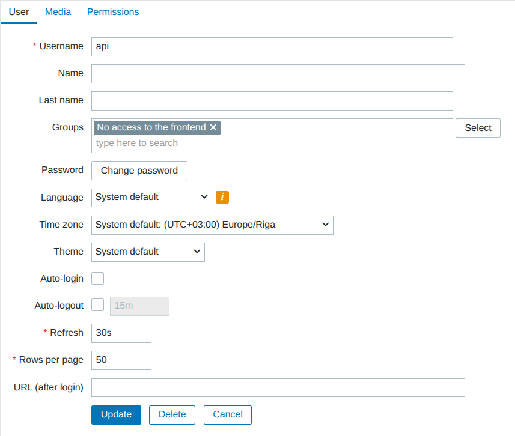
12.1 Create API user
Permissions tab:
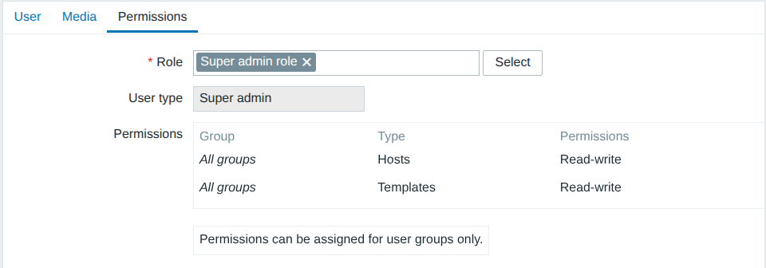
12.2 API user role and user type
Under Users => API tokens press New API token, assign user api. We can uncheck Set expiration date and time, press Add. Copy macro to clipboard.

12.3 Add token to user object
Visit Administration => Macros and install macro. To simulate all upcoming chapters much faster, consider running token in plain text.
Token dafa06e74403ca317112cf5ddd3357b2ad2a2c5cb348665f294a53b4058cfbcf
must be placed:
Address https://zabbix.book.the of the frontend server must be used via:
Later throughout chapters, we will use a reference on the API endpoint in a format of:
Now we can take new 2 variables and install globally:

12.4 User macros
First API call
If you feel new to Zabbix API, try this curl example from Zabbix frontend server.
Set bash variables:
ZABBIX_API_TOKEN="dafa06e74403ca317112cf5ddd3357b2ad2a2c5cb348665f294a53b4058cfbcf"
ZABBIX_URL="https://zabbix.book.the/api_jsonrpc.php"
This snippet is tested and compatible with version 7.0/7.4:
curl --insecure --request POST \
--header 'Content-Type: application/json-rpc' \
--header 'Authorization: Bearer '$ZABBIX_API_TOKEN \
--data '{"jsonrpc":"2.0","method":"proxy.get","params":{"output":["name"]},"id":1}' \
$ZABBIX_URL
Setting Bearer token in header is available and recommended since 7.0.
Setting a static token is available since 6.0. In version 6.0, the token is not in header, but inside JSON body like this:
curl --insecure --request POST \
--header 'Content-Type: application/json-rpc' \
--data '{"jsonrpc":"2.0","method":"proxy.get","params":{"output":["host"]},"auth":"'"$ZABBIX_API_TOKEN"'","id":1}' \
$ZABBIX_URL
Host group membership (HTTP agent)
Use case
Every time an email arrives user would love to see all host groups the host belongs.
Implementation
Use {HOST.HOST} as an input for the "host.get" API method and find out about host group membership. Format reply in one line, store it in inventory.
An item type "HTTP agent" is fastest way to run a single Zabbix API call and retrieve back result. This is possible since Zabbix 6.0 where configuring a static session token becomes possible. An upcoming solution is tested and works on version 7.0/7.4
Create new HTTP agent item
| Field | Value |
|---|---|
| Item name | host.get |
| Type | HTTP agent |
| Key | host.get |
| Type of information | Text |
| URL | {$ZABBIX.URL}/api_jsonrpc.php |
| Request type | POST |
| Request body type | JSON data |
| Update interval | 1d |
| Populates host inventory field | Site rack location |
Request body:
{
"jsonrpc": "2.0",
"method": "host.get",
"params": {
"output": ["hostgroups"],
"selectHostGroups": "extend",
"filter": {"host":["{HOST.HOST}"]}
},
"id": 1
}
Headers
| Field | Value |
|---|---|
| Authorization | Bearer {$ZABBIX.API.TOKEN} |

12.5 Host get method via HTTP agent item
Preprocessing steps
| Name | Parameters |
|---|---|
| JSONPath | $.result[0].hostgroups[*].name |
| JavaScript | return JSON.parse(value).join(','); |
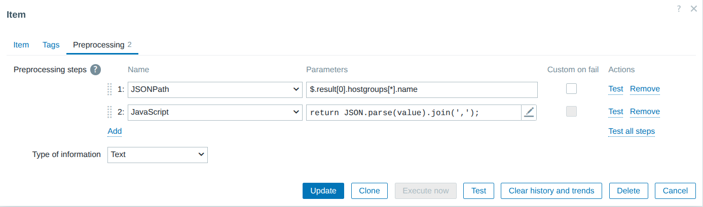
12.6 Preprocessing
Last step is to store the outcome in the inventory. Scroll down to the bottom of HTTP agent item and select an inventory field for example "Site rack location".
To access suggested inventory field, we must use:
To include extra information inside the message template follow this lead:

12.7 Inventory fields in media type
Warning
If data collection is done by Zabbix proxy, it is possible the proxy
is incapable to reach Zabbix frontend server due to limitation in firewall.
Use curl -kL "https://zabbix.book.the" to test!
Auto close problem (Webhook)
Use case
Due to reason of not being able to find a recovery expression for a trigger, need to close the event automatically after certain time.
Implementation
Trigger settings must support Allow manual close. On trigger which needs
to be auto closed there must be a tag auto with a value close.
An action will invoke a webhook which will use Zabbix API to close event.
To implement, visit Alerts => Scripts, press Create script
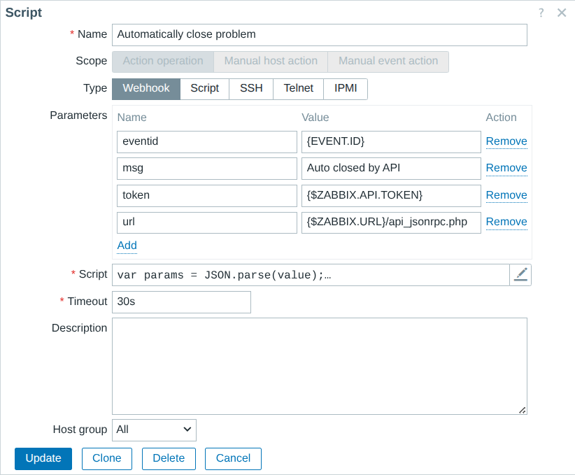
12.13 Auto close problem
| Field | Value |
|---|---|
| Name | Automatically close problem |
| Scope | Action operation |
| Type | Webhook |
Parameters:
| Field | Value |
|---|---|
| eventid | {EVENT.ID} |
| msg | Auto closed by API |
| token | {$ZABBIX.API.TOKEN} |
| url | {$ZABBIX.URL}/api_jsonrpc.php |
Script:
var params = JSON.parse(value);
var request = new HttpRequest();
request.addHeader('Content-Type: application/json');
request.addHeader('Authorization: Bearer ' + params.token);
var eventAcknowledge = JSON.parse(request.post(params.url,
'{"jsonrpc":"2.0","method":"event.acknowledge","params":{"eventids":"'+params.eventid+'","action":1,"message":"'+params.msg+'"},"id":1}'
));
return JSON.stringify(eventAcknowledge);
For the triggers which need to be closed automatically, we need to:
1) Set Allow manual close checkbox ON
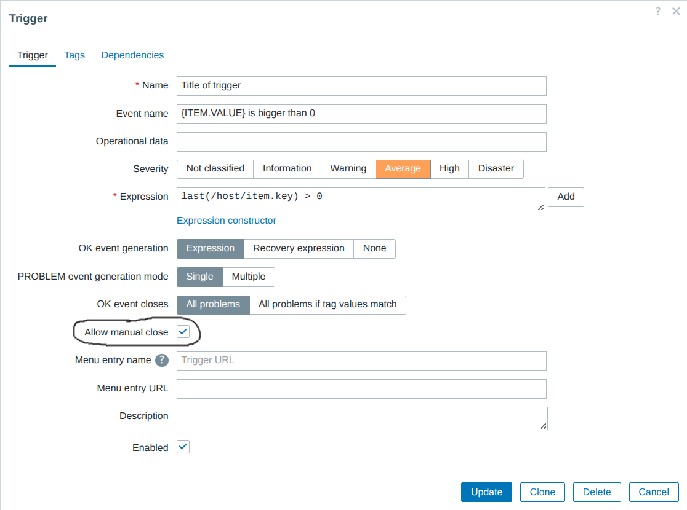
12.8 Allow manual close
2) Install tag auto with value close

12.9 Trigger tags
Go to Alerts => Actions => Trigger actions
Create an action which will be targetable
by using tag name auto with a tag value close.

12.10 Conditions for action
It's important to not create operation step 1, but start operation with step 2:

12.11 A delayed operation
The Default operation step duration field will serve the purpose to tell how long the event will be in problem state.
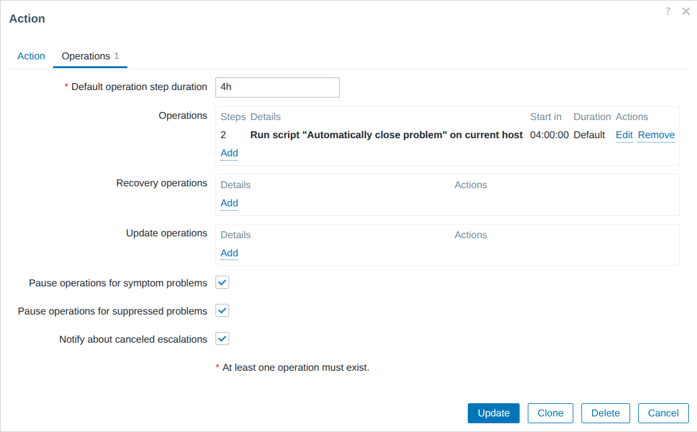
12.12 Close event later
This solution has been tested with 7.0/7.4
Self destructive host (Webhook)
Use case
On a big infrastructure with thousands of devices there is no human who can track which devices are deprovisioned. Need to automatically remove unhealthy devices.
Implementation
Problem events such as "Zabbix agent is not available" or "No SNMP data collection" sitting too long in problem state will invoke a webhook to delete the host.
To implement, visit Alerts => Scripts, press Create script
12.13 Auto close problem
| Field | Value |
|---|---|
| Name | Delete host |
| Scope | Action operation |
| Type | Webhook |
Parameters:
| Field | Value |
|---|---|
| hostid | {HOST.ID} |
| token | {$ZABBIX.API.TOKEN} |
| url | {$ZABBIX.URL}/api_jsonrpc.php |
Script:
// delete host via Zabbix API
var params = JSON.parse(value);
var request = new HttpRequest();
request.addHeader('Content-Type: application/json');
request.addHeader('Authorization: Bearer ' + params.token);
var hostDelete = JSON.parse(request.post(params.url,
'{"jsonrpc":"2.0","method":"host.delete","params":['+params.hostid+'],"id":1}'
));
return JSON.stringify(hostDelete);
To setup action, the trigger must running a tag delete with value host.
The conditions can be to target tag plus value and trigger severity:

12.15 Delete host target tag and tag value
Here we are running a delayed action with a step number 31. Because default duration is 1d, the host will be deleted after 30 days.

12.16 Delete host operations
Replace host Visible name (Script item)
Use case
Replace host "Visible name" with a name which is already stored in inventory
Implementation
The "Script" item, will read metadata for all hosts. Will read the Name field stored inside inventory and compare with current Visible name of host. If inventory field is empty, the visible field will not be replaced.
This is maximum efficiency to run a single API call once per day. If nothing needs to be done, "host.update" API calls will not be wasted. No SQL UPDATE operations for the Zabbix database :)
Go to Data collection => Hosts => press Create host
| Field | Value |
|---|---|
| Host name | Update host Visible name |
| Host groups | Daily Zabbix API calls |
Go to Items and press Create item
| Field | Value |
|---|---|
| Name | Visible name |
| Type | Script |
| Key | visible.name |
| Type of information | Text |
| Update interval | 1d |
Parameters:
| Field | Value |
|---|---|
| token | {$ZABBIX.API.TOKEN} |
| url | {$ZABBIX.URL}/api_jsonrpc.php |
Script:
// load all parameters in memory
var params = JSON.parse(value);
// new API call
var request = new HttpRequest();
request.addHeader('Content-Type: application/json');
request.addHeader('Authorization: Bearer ' + params.token);
// obtain Bare minimum fields: host "Visible name" and inventory "Name"
var hostData = JSON.parse(request.post(params.url,
'{"jsonrpc":"2.0","method":"host.get","params":{"output":["hostid","inventory","name","host"],"selectInventory":["name"]},"id":1}'
)).result;
var listOfErrors = [];
var listOfSuccess = [];
// iterate through host list
for (var h = 0; h < hostData.length; h++) {
// validate if inventory "name" element exists
if (typeof hostData[h].inventory.name !== 'undefined') {
// if "name" field is not empty
if (hostData[h].inventory.name.length > 0) {
// compare if inventory name is not the same as host visible name
if (hostData[h].inventory.name !== hostData[h].name) {
Zabbix.Log(params.debug, 'Host visible name field, host: ' + hostData[h].name + ' need to reinstall visible name');
// formulate payload for easy printing for troubleshoting
payload = '{"jsonrpc":"2.0","method":"host.update","params":' + JSON.stringify({
'hostid':hostData[h].hostid,
'name':hostData[h].inventory.name
}) + ',"id":1}';
Zabbix.Log(params.debug, 'Host visible name field, payload: ' + payload);
try {
hostUpdate = JSON.parse(request.post(params.url, payload));
// save API errors, like name already exists:
if (typeof hostUpdate.error !== 'undefined') { listOfErrors.push({'error':hostUpdate.error,'origin':hostData[h].host}) }
// save successfull operation:
if (typeof hostUpdate.result !== 'undefined') { listOfSuccess.push(hostUpdate.result) }
}
catch (error) {
throw 'noo';
}
}
}
}
}
return JSON.stringify({ 'listOfSuccess': listOfSuccess, 'errors': listOfErrors });
Warning
The chances of having duplicate host names are still possible. In this case, the script will continue to parse all hosts and will retry update operation. Ensure $.listOfErrors in output is an empty list.
All together

12.17 Script item, host Visible name
The item will be sit at host level and serve a purpose of cronjob

12.18 Script item ready
This is tested and works with Zabbix 7.0
Cleanup unused ZBX interfaces (Webhook)
Use case 1
Default "Host availability" widget will print "Unknown" interfaces if none of Zabbix agent passive checks are using it. Need to remove interface to get "Unknown" interface number closer to 0
12.19 Unknown ZBX passive interfaces
Use case 2
Active checks by design do not require an interface. Having a defined interface will mislead the team to understand how active checks actually works.
Use case 3
https://cloud.zabbix.com/ is good for server monitoring with active checks. While registering new servers, the IP address of host interface is not relatable to infrastructure. Remove the interface to make setup look more clean.
Implementation
To bring aboard a host, run a webhook to validate if an interface is used by any passive Zabbix agent items. If it's not used, then remove interface.
To implement, visit Alerts => Scripts, press Create script
12.20 Remove unused ZBX interfaces
Webhook
| Field | Value |
|---|---|
| Name | Remove unused ZBX interfaces |
| Scope | Action operation |
| Type | Webhook |
Parameters:
| Field | Value |
|---|---|
| debug | 4 |
| host | {HOST.HOST} |
| token | {$ZABBIX.API.TOKEN} |
| url | {$ZABBIX.URL}/api_jsonrpc.php |
Script:
// Load all variables
var params = JSON.parse(value);
var request = new HttpRequest();
request.addHeader('Content-Type: application/json');
request.addHeader('Authorization: Bearer ' + params.token);
// Pick up hostid
var hostid = JSON.parse(request.post(params.url,
'{"jsonrpc":"2.0","method":"host.get","params":{"output":["hostid"],"filter":{"host":["' + params.host + '"]}},"id":1}'
)).result[0].hostid;
// Extract all passive Zabbix agent interfaces
var allAgentInterfaces = JSON.parse(request.post(params.url,
'{"jsonrpc":"2.0","method":"hostinterface.get","params":{"output":["interfaceid","main"],"filter":{"type":"1"},"hostids":"' + hostid + '"},"id":1}'
)).result;
// If any ZBX interface was found then proceed fetching all items because need to find out if any items use an interface
if (allAgentInterfaces.length > 0) {
// Fetch all items which are defined at host level and ask which item use passive ZBX agent interface
// Simple check items (like icmpping) also can use zabbix agent interface
var items_with_int = JSON.parse(request.post(params.url,
'{"jsonrpc":"2.0","method":"item.get","params":{"output":["type","interfaces"],"hostids":"' + hostid + '","selectInterfaces":"query"},"id":1}'
)).result;
}
// Define an interface array. This is required if more than one ZBX interface exists on host level
var interfacesInUse = [];
// Iterate through all ZBX interfaces
for (var zbx = 0; zbx < allAgentInterfaces.length; zbx++) {
// Go through all items which is defined at host level
for (var int = 0; int < items_with_int.length; int++) {
// There are many items which does not need interface. Specifically analyze the ones which has an interface defined
if (items_with_int[int].interfaces.length > 0) {
// There is an interface found for the item
if (items_with_int[int].interfaces[0].interfaceid == allAgentInterfaces[zbx].interfaceid) {
// Put this item in list which use an interface
var row = {};
row["itemid"] = items_with_int[int].itemid;
row["interfaceid"] = allAgentInterfaces[zbx].interfaceid;
row["main"] = allAgentInterfaces[zbx].main;
interfacesInUse.push(row);
}
}
}
}
// Final scan to identify if any interface is wasted
var needToDelete = 1;
var evidenceOfDeletedInterfaces = [];
var mainNotUsed = 0;
for (var defined = 0; defined < allAgentInterfaces.length; defined++) {
// Scan all items
needToDelete = 1;
for (var used = 0; used < interfacesInUse.length; used++) {
if (allAgentInterfaces[defined].interfaceid == interfacesInUse[used].interfaceid) {
needToDelete = 0;
}
}
// If flag was not turned off, then no items with this interface were found. No items are using this interface. Safe to delete
// Delete all slaves first
if (needToDelete == 1 && allAgentInterfaces[defined].main == 0) {
var deleteInt = JSON.parse(request.post(params.url,
'{"jsonrpc":"2.0","method":"hostinterface.delete","params":["' + allAgentInterfaces[defined].interfaceid + '"],"id":1}'
));
var row = {};
row["deleted"] = deleteInt;
evidenceOfDeletedInterfaces.push(row);
}
if (needToDelete == 1 && allAgentInterfaces[defined].main == 1) {
var mainNotUsed = allAgentInterfaces[defined].interfaceid;
}
}
// Delete main interface at the end
if (mainNotUsed > 0) {
var deleteInt = JSON.parse(request.post(params.url,
'{"jsonrpc":"2.0","method":"hostinterface.delete","params":["' + mainNotUsed + '"],"id":1}'
));
var row = {};
row["deleted"] = deleteInt;
evidenceOfDeletedInterfaces.push(row);
}
var output = JSON.stringify({
"allAgentInterfaces": allAgentInterfaces,
"interfacesInUse": interfacesInUse,
"evidenceOfDeletedInterfaces": evidenceOfDeletedInterfaces
});
Zabbix.Log(params.debug, 'Auto remove unused ZBX agent passive interfaces: ' + output)
return 0;
To make webhook in action visit Alerts => Actions => Autoregistration actions. Press Create action. For example to auto register Linux servers, we can target a pattern ".lnx" inside the hostname.
12.21 Conditions for ZBX active checks
The operations will use newly made webhook
12.22 Operations of Zabbix agent autoregistration
The complete picture is

12.23 Zabbix agent autoregistration completed
Read log file from YYYY.MM.DD filename (Script)
Use case
Requirement is to read a filename with today's pattern YYYY.MM.DD or YYYY_MM_DD or YYYYMMDD.
Popular solution 1 - logrt
Using "logrt" item key can be used to cover use case. However in case hundreds of files in directory, the CPU will have impact.
Popular solution 2 - LLD rule
We Zabbix LLD rule to find the files in directory. This method do not allow to store all data inside same itemid. When files are deleted from server, the items in Zabbix will get unsupported.
Alternative solution
We will use Zabbix API to create a global variables YYYY, MM, DD. Those will be universally available by any host, template. The "cronjob host" will run at least once per day and reinstall the date right after the midnight. Inside template level there will be a single/static item key which will be able to read today's log.
Go to Data collection => Hosts => press Create host
| Field | Value |
|---|---|
| Host name | Dude |
| Host groups | Cronjob |
Go to Items and press Create item
| Field | Value |
|---|---|
| Name | Create or update global macro |
| Type | Script |
| Key | create.or.update.global.macro |
| Type of information | Text |
| Update interval | 0 |
| Custom intervals: Scheduling | h0m1s1 |
Parameters:
| Field | Value |
|---|---|
| 1_year | {$DATE:arg1.year} |
| 2_month | {$DATE:arg2.month} |
| 3_day | {$DATE:arg3.day} |
| 4_hour | {$DATE:arg4.hour} |
| 5_minute | {$DATE:arg5.minute} |
| 6_second | {$DATE:arg6.seconds} |
| token | {$ZABBIX.API.TOKEN} |
| url | {$ZABBIX.URL}/api_jsonrpc.php |
The script to create and maintain global variables:
// load all variables into memory
var params = JSON.parse(value),
now = new Date();
// function to always print seconds, minutes, hours as 2 digits, even it its a 1 digit character
function padLeft(value, length, char) {
value = String(value);
while (value.length < length) {
value = char + value;
}
return value;
}
// define macros to check/create without '{$' an '}'
var macrosToCheck = [
'DATE:arg1.year',
'DATE:arg2.month',
'DATE:arg3.day',
'DATE:arg4.hour',
'DATE:arg5.minute',
'DATE:arg6.seconds'
];
// prepare values for replacement. order is important
var valuesToInsert = [
now.getFullYear().toString(),
padLeft(now.getMonth() + 1, 2, '0'),
padLeft(now.getDate(), 2, '0'),
padLeft(now.getHours(), 2, '0'),
padLeft(now.getMinutes(), 2, '0'),
padLeft(now.getSeconds(), 2, '0')
];
var request = new HttpRequest();
request.addHeader('Content-Type: application/json');
request.addHeader('Authorization: Bearer ' + params.token);
var allGlobalMacrosBefore = JSON.parse(request.post(params.url,
'{"jsonrpc":"2.0","method":"usermacro.get","params":{"output":["globalmacroid","macro","value"],"globalmacro":true},"id":1}'
)).result;
// prepare much compact array which holds only necessary values
var target = [];
for (var a = 0; a < allGlobalMacrosBefore.length; a++) {
for (var b = 0; b < macrosToCheck.length; b++) {
Zabbix.Log(4, 'macro update compare: ' + allGlobalMacrosBefore[a].macro + ' with ' + '{$' + macrosToCheck[b] + '}');
if (allGlobalMacrosBefore[a].macro === '{$' + macrosToCheck[b] + '}') {
Zabbix.Log(4, 'macro update: ' + allGlobalMacrosBefore[a].macro + ' === ' + '{$' + macrosToCheck[b] + '}');
target.push(allGlobalMacrosBefore[a]);
}
}
}
// check if the amount of macros to maintain match existing macro. this portion will execute if run template for the first time
var macroExists = 0;
var allCreateOperation = [];
if (macrosToCheck.length !== target.length) {
// something is missing, need to find what. open every macro which is known by Zabbix
for (var b = 0; b < macrosToCheck.length; b++) {
// reset the counter, so far macro has not been found
macroExists = 0;
for (var a = 0; a < target.length; a++) {
Zabbix.Log(3, 'look for missing macro update: ' + target[a].macro + ' VS {$' + macrosToCheck[b] + '}');
if (target[a].macro === '{$' + macrosToCheck[b] + '}') {
macroExists = 1;
break;
}
}
// if the list was completed and macro was not found then create a new
if (macroExists !== 1) {
var createNew = JSON.parse(request.post(params.url,
'{"jsonrpc":"2.0","method":"usermacro.createglobal","params":{"macro":"' + '{$' + macrosToCheck[b] + '}' + '","value":"' + valuesToInsert[b] + '"},"id":1}'
));
allCreateOperation.push(createNew);
}
}
}
// prepare payload what needs to be updated
var dataForUpdate = [];
for (var m = 0; m < target.length; m++) {
// iterate through importand macro names
for (var n = 0; n < macrosToCheck.length; n++) {
// compare the macro name
if (target[m].macro === '{$' + macrosToCheck[n] + '}') {
// if value is not correct at the moment
Zabbix.Log(4, 'about to macro update: ' + target[m].value + ' VS ' + valuesToInsert[n]);
if (Number(target[m].value) !== Number(valuesToInsert[n])) {
var row = {}
row["globalmacroid"] = target[m].globalmacroid;
row["value"] = valuesToInsert[n];
dataForUpdate.push(row);
}
}
}
}
Zabbix.Log(4, 'about to macro update: ' + JSON.stringify(dataForUpdate));
// if there is anything to update (usually seconds has been changed)
if (dataForUpdate.length > 0) {
var allUpdateOperations = JSON.parse(request.post(params.url,
'{"jsonrpc":"2.0","method":"usermacro.updateglobal","params":'+ JSON.stringify(dataForUpdate) +',"id":1}'
));
}
// output
return JSON.stringify({
'allCreateOperation': allCreateOperation,
'allUpdateOperations': allUpdateOperations
})

12.24 Create or reinstall global macros
After running a script now, there are global variables available:
12.24 Global YYYY, MM, DD macros
For log item monitoring we can use native log item key:
In case need to analyze a single summary where file size is less than 16 MB, then can use:
Chapter 13 : Advanced set up and security
Advanced set-up and security
In today's interconnected IT landscape, monitoring systems like Zabbix have become critical infrastructure components, offering visibility into the health and performance of entire networks. However, these powerful monitoring tools also represent potential security vulnerabilities if not properly secured. This chapter will explores the essential combination of SELinux and security best practices to harden your Zabbix deployment against modern threats.
Security is not an optional feature but a fundamental requirement for any monitoring solution. Zabbix, with its extensive reach across your infrastructure, has access to sensitive system information and often operates with elevated privileges. Without proper security controls, a compromised monitoring system can become a launchpad for lateral movement across your network, potentially exposing critical business data and systems.
We'll explore how SELinux's mandatory access control framework provides an additional security layer beyond traditional permissions, and how proper configuration can dramatically reduce your attack surface. You'll learn practical, implementable security measures that balance protection with functionality, ensuring your monitoring capabilities remain intact while defending against both external and internal threats.
Whether you're a system administrator, security professional, or IT manager, understanding these security principles will help you transform your Zabbix deployment from a potential liability into a secure asset within your security architecture.
SELinux and Zabbix
SELinux (Security-Enhanced Linux) provides mandatory access control for Zabbix by enforcing security policies that restrict what the Zabbix processes can do, even when running as root.
SELinux contexts are a core component of how SELinux implements security control. Think of contexts as labels that are assigned to every object in the system (files, processes, ports, etc.). These labels determine what can interact with what.
SELinux Enforcement Mode
For SELinux to actually provide security protection, it needs to be set to "enforcing" mode. There are three possible modes for SELinux:
- Enforcing - SELinux security policy is enforced. Actions that violate policy are blocked and logged.
- Permissive - SELinux security policy is not enforced but violations are logged. This is useful for debugging.
- Disabled - SELinux is completely turned off.
You can check the current SELinux mode with the getenforce command:
This should return : Enforcing
To properly secure Zabbix with SELinux, the system should be in Enforcing mode. If it's not, you can change it temporarily:
Set to enforcing immediately (until reboot)
For permanent configuration, edit /etc/selinux/config and set:
Basic Structure of an SELinux Context
An SELinux context typically consists of four parts:
- User: The SELinux user identity (not the same as Linux users)
- Role: What roles the user can enter
- Type: The domain for processes or type for files (most important part)
- Level: Optional MLS (Multi-Level Security) sensitivity level
When displayed, these appear in the format: user:role:type:level
How Contexts Work in Practice
In the Zabbix SELinux configuration, several security types are defined to control access:
- zabbix_t: The domain in which the Zabbix server process runs
- zabbix_port_t: Type assigned to network ports that Zabbix uses
- zabbix_var_run_t: Type for Zabbix runtime socket files
- httpd_t: The domain for the Apache web server process
The SELinux policy allows specific permissions between these types:
Zabbix server can connect to its own Unix stream sockets Zabbix server can connect to network ports labeled as zabbix_port_t Zabbix server can create and remove socket files in directories labeled as zabbix_var_run_t
The web server (httpd) can connect to Zabbix ports, allowing the web frontend to communicate with the Zabbix server. These permissions ensure Zabbix components can communicate properly while maintaining SELinux security boundaries.
When Zabbix tries to access a file or network resource, SELinux checks if the context of the Zabbix process is allowed to access the context of that resource according to policy rules.
Viewing Contexts
And for the processes:
And for log files
Zabbix-selinux-policy Package
The zabbix-selinux-policy package is a specialized SELinux policy module designed specifically for Zabbix deployments. It provides pre-configured SELinux policies that allow Zabbix components to function properly while running in an SELinux enforced environment.
Key Functions of the Package:
- Pre-defined Contexts : Contains proper SELinux context definitions for Zabbix binaries, configuration files, log directories, and other resources.
- Port Definitions : Registers standard Zabbix ports (like 10050 for agent, 10051 for server) in the SELinux policy so they can be used without triggering denials.
- Access Rules: Defines which operations Zabbix processes can perform, like writing to log files, connecting to databases, and communicating over networks.
- Boolean Toggles: Provides SELinux boolean settings specific to Zabbix that can enable/disable certain functionalities without having to write custom policies.
Benefits of Using the Package:
- Simplified Deployment : Reduces the need for manual SELinux policy adjustments when installing Zabbix.
- Security by Default: Ensures Zabbix operates with minimal required permissions rather than running in permissive mode.
- Maintained Compatibility: The package is updated alongside Zabbix to ensure compatibility with new features.
Installation and Usage
The package is typically installed alongside other Zabbix components:
After installation, the SELinux contexts are automatically applied to standard Zabbix paths and ports. If you use non-standard configurations, you may still need to make manual adjustments. This package essentially bridges the gap between Zabbix's operational requirements and SELinux's strict security controls, making it much easier to run Zabbix securely without compromising on monitoring capabilities.
For Zabbix to function properly with SELinux enabled:
Zabbix binaries and configuration files need appropriate SELinux labels (typically zabbix_t context) Network ports used by Zabbix must be properly defined in SELinux policy Database connections require defined policies for Zabbix to communicate with MySQL/PostgreSQL File paths for monitoring, logging, and temporary files need correct contexts
When issues occur, they typically manifest as denied operations in SELinux audit logs. Administrators can either:
Use audit2allow to create custom policy modules for legitimate Zabbix operations Apply proper context labels using semanage and restorecon commands Configure boolean settings to enable specific Zabbix functionality
This combination creates defense-in-depth by ensuring that even if Zabbix is compromised, the attacker remains constrained by SELinux policies, limiting potential damage to your systems.
Zabbix SELinux Boolean
One of the most convenient aspects of the SELinux implementation for Zabbix is the use of "booleans". simple on/off switches that control specific permissions. These allow you to fine-tune SELinux policies without needing to understand complex policy writing. Key Zabbix booleans include:
- zabbix_can_network: Controls whether Zabbix can initiate network connections
- httpd_can_connect_zabbix: Controls whether the web server can connect to Zabbix
- zabbix_run_sudo: Controls whether Zabbix can execute sudo commands
You can view these settings with:
yaml
getsebool -a | grep zabbix
And you can toggle them as needed with setsebool.
Enable Zabbix network connections (persistent across reboots)
These booleans make it much easier to securely deploy Zabbix while maintaining SELinux protection, as you can enable only the specific capabilities that your Zabbix implementation needs without compromising overall system security.
Creating custom rules
When running Zabbix in environments with SELinux enabled, you may encounter permission issues when Zabbix attempts to execute certain utilities like fping. This occurs because fping uses setuid (SUID) permissions, and SELinux's default policies prevent Zabbix from executing such binaries for security reasons.
There are different solutions to this problem:
- Method 1: Automated Policy Generation :
The most straightforward approach is to use the audit2allow utility to analyse SELinux denial messages and generate appropriate policies:
First, capture the denial events from the audit log:
- Method 2: Manual Policy Creation :
For more control or in situations where audit logs aren't available, you can manually create a custom policy:
Create a policy file named zabbix_fping.te with the following content:
module zabbix_fping 1.0;
require {
type zabbix_t;
type fping_t;
type fping_exec_t;
class file { execute execute_no_trans getattr open read };
class capability net_raw;
}
#============= zabbix_t ==============
allow zabbix_t fping_exec_t:file { execute execute_no_trans getattr open read };
allow zabbix_t self:capability net_raw;
Securing zabbix admin
HTTPS
DB certs
Conclusion
Questions
- Why does SELinux prevent Zabbix from executing fping by default?
- In what situations might you need to create custom SELinux policies for other Zabbix monitoring tools?
- What are the key differences between using audit2allow and manually creating a custom policy module?
Useful URLs
- https://www.zabbix.com/documentation/7.2/en/manual/installation/install_from_packages/rhel?hl=SELinux#selinux-configuration
- https://www.systutorials.com/docs/linux/man/8-zabbix_selinux/
- https://man.linuxreviews.org/man8/zabbix_agent_selinux.8.html
- https://phoenixnap.com/kb/selinux
Securing the frontend
The frontend is what we use to login into our system. The Zabbix frontend will connect to our Zabbix server and our database. But we also send information from our laptop to the frontend. It's important that when we enter our credentials that we can do this in a safe way. So it makes sense to make use of certificates and one way to do this is by making use of Self-Signed certificates.
To give you a better understanding of why your browser will warn you when using self signed certificates, we have to know that when we request an SSL certificate from an official Certificate Authority (CA) that you submit a Certificate Signing request (CSR) to them. They in return provide you with a Signed SSL certificate. For this they make use of their root certificate and private key. Our browser comes with a copy of the root certificate (CA) from various authorities or it can access it from the OS. This is why our self signed certificates are not trusted by our browser, we don't have any CA validation. Our only workaround is to create our own root certificate and private key.
Understanding the concepts
How to create an SSL certificate
How SSL works - Client - Server flow

Note
Borrowed the designs from https://www.youtube.com/watch?v=WqgzYuHtnIM this video explains well how SSL works.
Securing the frontend with self signed Certificates
To configure this there are a few steps that we need to follow:
- Generate a private key for the CA ( Certificate Authority )
- Generate a root certificate
- Generating CA-Authenticated Certificates
- Generate a Certificate Signing Request (CSR)
- Generate an X509 V3 certificate extension configuration file
- Generate the certificate using our CSR, the CA private key, the CA certificate,
and the config file
- Copy the SSL certificates to our Virtual Host
- Adapt your Nginx Zabbix config
Generate a private key for the CA
First step is to make a folder named SSL so we can create our certificates and safe them:
Let's explain all the options;
- openssl : The tool to use the OpenSSL library, this library provides us with cryptographic functions and utilities.
- out myCA.key : This part of the command specifies the output file name for the generated private key.
- name prime256v1: Name of the elliptic curve; X9.62/SECG curve over a 256 bit prime field
- ecparam: This command is used to manipulate or generate EC parameter files.
- genkey: This option will generate a EC private key using the specified parameters.
Generate a Root Certificate
Let's explain all the options;
- openssl: The command-line tool for OpenSSL.
- req: This command is used for X.509 certificate signing request (CSR) management.
- x509: This option specifies that a self-signed certificate should be created.
- new: This option is used to generate a new certificate.
- nodes: This option indicates that the private key should not be encrypted. It will generates a private key without a passphrase, making it more convenient but potentially less secure.
- key myCA.key: This specifies the private key file (myCA.key) to be used in generating the certificate.
- sha256: This option specifies the hash algorithm to be used for the certificate. In this case, SHA-256 is chosen for stronger security.
- days 1825: This sets the validity period of the certificate in days. Here, it’s set to 1825 days (5 years).
- out myCA.pem: This specifies the output file name for the generated certificate. In this case, “myCA.pem.”
The information you enter is not so important but it's best to fill it in as good as possible. Just make sure you enter for CN you IP or DNS.
You are about to be asked to enter information that will be incorporated
into your certificate request.
What you are about to enter is what is called a Distinguished Name or a DN.
There are quite a few fields but you can leave some blank
For some fields there will be a default value,
If you enter '.', the field will be left blank.
-----
Country Name (2 letter code) [XX]:BE
State or Province Name (full name) []:vlaams-brabant
Locality Name (eg, city) [Default City]:leuven
Organization Name (eg, company) [Default Company Ltd]:
Organizational Unit Name (eg, section) []:
Common Name (eg, your name or your server's hostname) []:192.168.0.134
Email Address []:
Generating CA-Authenticated Certificates
It's probably good practice to use de dns name of your website in the name of the private key. As we use in this case no DNS but an IP address I will use the fictive dns zabbix.mycompany.internal.
Generate a Certificate Signing Request (CSR)
You will be asked the same set of questions as above. Once again your answers hold minimal significance and in our case no one will inspect the certificate so they matter even less.
You are about to be asked to enter information that will be incorporated
into your certificate request.
What you are about to enter is what is called a Distinguished Name or a DN.
There are quite a few fields but you can leave some blank
For some fields there will be a default value,
If you enter '.', the field will be left blank.
-----
Country Name (2 letter code) [XX]:BE
State or Province Name (full name) []:vlaams-brabant
Locality Name (eg, city) [Default City]:leuven
Organization Name (eg, company) [Default Company Ltd]:
Organizational Unit Name (eg, section) []:
Common Name (eg, your name or your server's hostname) []:192.168.0.134
Email Address []:
Please enter the following 'extra' attributes
to be sent with your certificate request
A challenge password []:
An optional company name []:
Generate an X509 V3 certificate extension configuration file.
Add the following lines in your certificate extension file. Replace IP or DNS with your own values.
authorityKeyIdentifier=keyid,issuer
basicConstraints=CA:FALSE
keyUsage = digitalSignature, nonRepudiation, keyEncipherment, dataEncipherment
subjectAltName = @alt_names
[alt_names]
IP.1 = 192.168.0.133
#DNS.1 = MYDNS (You can use DNS if you have a dns name if you use IP then use the
above line)
Generate the certificate using our CSR, the CA private key, the CA certificate,
and the config file
openssl x509 -req -in zabbix.mycompany.internal.csr -CA myCA.pem -CAkey myCA.key \
-CAcreateserial -out zabbix.mycompany.internal.crt -days 825 -sha256 -extfile zabbix.mycompany.internal.ext
Copy the SSL certificates to our Virtual Host
cp zabbix.mycompany.internal.crt /etc/pki/tls/certs/.
cp zabbix.mycompany.internal.key /etc/pki/tls/private/.
Import the CA in Linux (RHEL)
We need to update the CA certificate’s, run the below command to update the CA certs.
Import the CA in OSX
- Open the macOS Keychain app.
- Navigate to File > Import Items
- Choose your private key file (i.e., myCA.pem)
- Search for the “Common Name” you provided earlier.
- Double-click on your root certificate in the list.
- Expand the Trust section.
- Modify the “When using this certificate:” dropdown to “Always Trust”.
- Close the certificate window.
Import the CA in Windows
- Open the “Microsoft Management Console” by pressing Windows + R, typing mmc, and clicking Open.
- Navigate to File > Add/Remove Snap-in.
- Select Certificates and click Add.
- Choose Computer Account and proceed by clicking Next.
- Select Local Computer and click Finish.
- Click OK to return to the MMC window.
- Expand the view by double-clicking Certificates (local computer).
- Right-click on Certificates under “Object Type” in the middle column, select All Tasks, and then Import.
- Click Next, followed by Browse. Change the certificate extension dropdown next to the filename field to All Files (.) and locate the myCA.pem file.
- Click Open, then Next.
- Choose “Place all certificates in the following store.” with “Trusted Root Certification Authorities store” as the default. Proceed by clicking Next, then Finish, to finalize the wizard.
- If all went well you should find your certificate under Trusted Root Certification Authorities > Certificates
Warning
You also need to import the myCA.crt file in your OS we are not an official CA so we have to import it in our OS and tell it to trust this Certificate. This action depends on the OS you use.
As you are using OpenSSL, you should also create a strong Diffie-Hellman group, which is used in negotiating Perfect Forward Secrecy with clients. You can do this by typing:
Adapt your Nginx Zabbix config
Add the following lines to your Nginx configuration, modifying the file paths as needed. Replace the the already existing lines with port 80 with this configuration. This will enable SSL and HTTP2.
Adapt the Nginx config
Red Hat
server {
listen 443 http2 ssl;
listen [::]:443 http2 ssl;
server_name <ip qddress>;
ssl_certificate /etc/ssl/certs/zabbix.mycompany.internal.crt;
ssl_certificate_key /etc/pki/tls/private/zabbix.mycompany.internal.key;
ssl_dhparam /etc/ssl/certs/dhparam.pem;
To redirect traffic from port 80 to 443 we can add the following lines above our https block:
UbuntuAdapt your Apache Zabbix config
Restart all services and allow https traffic
systemctl restart php-fpm.service
systemctl restart nginx
firewall-cmd --add-service=https --permanent
firewall-cmd --reload
When we go to our url http://<IP or DNS>/ we get redirected to our https:// page and when we check we can see that our site is secure:
Note
- To be even more secure have a loot at https://cipherlist.eu/ this page maintains a list of strong ciphers that you can use so secure your Nginx even more.
- You can test your nginx config with 'nginx -t' before you restart.
- For HTTP/2 to work you need at least nginx 1.9.5 or later
Securing the Frontend with Let's Encrypt on Nginx
Creating a certificate with Let's Encrypt is quite easy the only thing you need is a domain. With a valid dns record set. Once this is in place you can with a few command in place add SSL to your website.
Setup Let's Encrypt with a DNS server
You have a DNS server and everything is properly configured, configuration this is going to be easy.
dnf install epel-release
dnf install certbot python3-certbot-nginx
# Make sure you have added your domain in the file /etc/nginx/conf.d/zabbix.com
# rename the file
mv /etc/nginx/conf.d/zabix.conf /etc/nginx/conf.d/<yourdomain.com>
# run certbot replace yourdomain.com with your own domain
certbot --nginx -d yourdomain.com -d www.yourdomain.com
This will install the certificates automatic in your configuration file. In case you had not renamed your file with the domain name you have alter the config file yourself. You can take a look for an example to the next topic.
Setup Let;s encrypt without local a DNS server
In case you like to test this at home it's a bit more complex if you don't have a DNS server at home but still possible with DNS-01 if you have bought a domain and are able to configure the TXT records for this domain. In this case we can use get.acme.
# Install the needed packages
sudo dnf install epel-release
sudo dnf install certbot python3-certbot-nginx
sudo dnf install -y tar gzip openssl cronie
sudo dnf install -y bind-utils # gives `dig`
# Install the acme script and add it to you path
curl https://get.acme.sh | sh
exec bash
acme.sh --version
# Activate crond and setup the certificate.
sudo systemctl enable --now crond
acme.sh --set-default-ca --server letsencrypt
acme.sh --issue -d <mydomain.com> -d '*.<mydomain.com>' --dns --yes-I-know-dns-manual-mode-enough-go-ahead-please
# The script had provided you with 2 TXT records add them to your domain and
# check if they are properly configured. It can take a few minutes before other
# DNS servers pickup the config change.
dig +short TXT _acme-challenge.<mydomain.com> @8.8.8.8
# Try to renew the certificate and copy it to your webserver
acme.sh --renew -d <mydomain.com> --ecc --dns --yes-I-know-dns-manual-mode-enough-go-ahead-please
sudo mkdir -p /etc/ssl/<mydomain>
acme.sh --install-cert -d <mydomain.com> --ecc --key-file /etc/ssl/<mydomain>/site.key --fullchain-file /etc/ssl/<mydomain>/site.fullchain.pem --reloadcmd
Next step is to alter your NGINX config and open the firewall on port 443
# Alter your NGINX config
vi /etc/nginx/conf.d/zabbix.conf
server {
listen 443 ssl;
server_name zabbix.mydoamin.com;
ssl_certificate /etc/ssl/mydomain/site.fullchain.pem;
ssl_certificate_key /etc/ssl/mydomain/site.key;
ssl_protocols TLSv1.2 TLSv1.3;
ssl_ciphers HIGH:!aNULL:!MD5;
# Add a forward from port 80 to 443
vi /etc/nginx/conf.d/no-ssl-zabbix.conf
server{
listen 80;
return 301 https://$host$request_uri?;
}
You can now browse to the url zabbix.mydomain.com and you should have a working certificate.
Note
You should probably add a bit more security to your webserver this is only the bare minimum to make ssl working, A good place to start is probably https://cipherlist.eu/
Securing the Frontend with Let's Encrypt on Nginx
Securing the Zabbix agent with encryption
In chapter 4 we have learned how to set up our Zabbix agent in both the active and the passive mode. In an internal network, this might be all you need to do for your monitoring of Linux, Unix and Windows systems. But what if you need to monitor a Zabbix agent host over the internet or what if you'd just like to add an additional layer of security. This is where Zabbix agent encryption comes in.
There are two basic methods to encrypt your Zabbix agent and they apply to both passive and active agents. - Pre-shared keys - Certificates
Both provide a secure method of encrypting the communication between your Zabbix agent and Zabbix server or proxy. So let's dive into both of them.
Pre-shared keys
Whenever you start working with Zabbix agent encryption, pre-shared keys are the easiest method to provide an additional layer of security on your internal networks or encrypt internet connected agents. They are easy to understand and do not require maintenance, as they are a set and forget kind of encryption method.
The basis is simple, Zabbix agent uses a pre-shared key (PSK) identity and a PSK string. We set these up both on the Zabbix agent and Zabbix server side to encrypt the communication between them. If you are using Zabbix proxies, the Zabbix server will make sure the proxies know about the pre-shared keys (do not forget to encrypt proxy communication).
- PSK identity: A non-secret UTF-8 string.
- PSK string: A secret between 128 bit (16 Bytes, 32 character hexadecimal) and 2048 bit (256 Bytes, 512 character hexadecimal) string.
Important
The combination of the PSK identity and PSK string has to be unique. There can not be two PSKs with the same identity string but different values. We have to keep this in mind when setting up the PSK identity and I usually use something that cannot be duplicate like the hostname of the host we're encrypting.
Let's login to the CLI of a host with the Zabbix agent installed. We are going to edit the Zabbix agent 2 configuration file to allow for PSK encryption.
In the configuration file there are 4 parameters we need to edit. By default they aren't set, but we will set them as specified below.
Zabbix agent 2 configuration file encryption parameters
Linux CLI
I've used zbx-agent-active-rocky as the identity, as that is the hostname on my server and I will use unique PSK keys for each host. If you want to use a default identity/key pair you could use something like agent-default-key as the identity and use the same key on each host (less secure).
- TLSConnect: This parameter makes sure that when the Zabbix agent connects in active mode it will either use
unencrypted,psk, orcertto connect. - TLSAccept: This parameter makes sure that when the Zabbix agent is connected to in passive mode it will either use
unencrypted,psk, orcertto allow the connection. - TLSPSKIdentity: The plain text non-secret identity used for PSK encryption.
- TLSPSKFile: The path to the file where the secret PSK is stored.
As you might have noticed, I have set both TLSConnect and TLSAccept. This is something recommended to always do to safeguard against configuration mistakes. Let's say you only use the Active Zabbix agent connection, but left TLSConnect set to unencrypted. If your Zabbix agent allows passive agent connections (due to configuration error, history or on purpose) an unencrypted connection will still be allowed. Recommendation, set both alway unless you have a good reason not to.
We're not done with the configuration on the Zabbix agent side however, we still need to create the PSK. There is a simple command to execute and create the PSK.
Create agent.psk file with new pre-shared key
Linux CLI
This will not only create the 128 Bytes (1024 bit and 256 Hex characters) PSK, it will also add it to the file we specified in the Zabbix agent configuration file under TLSPSKFile=/etc/zabbix/agent.psk. We can check to see what the PSK looks like.
We get a string the looks like this:
agent.psk file contents
Linux CLI
Do not use the above PSK as it is now of course compromised (everyone reading the book has it). But it shows you what it would look like and we can now copy it for later use in the Zabbix frontend, as well as store it in a password vault perhaps.
Before we go on to the Zabbix frontend however, let's make sure the file where we stored the PSK in is secure.
agent.psk file security settings
Linux CLI
This will make sure only the zabbix user on your Linux system has read only access. Now let's move on to the Zabbix frontend and find our zbx-agent-active-rocky host under Data collection | Hosts.
Open you host configuration and go to the Encryption tab. By default it will be set to not use encryption.
 13.xx Unencrypted agent settings
13.xx Unencrypted agent settings
Let's fill our the details here, just as we did on the Zabbix agent host side.

13.xx Encrypted agent settings
As you can see, even though this is an Active Zabbix agent, I set up encryption requirements for both. Click on the Update button to save these changes and go back to the Zabbix agent host CLI to restart the agent.
Your agent icon should remain green and you should now see that the agent is encrypted.

13.xx Encrypted agent status
Active agent autoregistration
Another thing you might want to do is encrypt all of the Zabbix agents in active mode that are being registered into Zabbix automatically. This process called autoregistration was discussed in detail in chapter 10. What we did not cover however is how to encrypt this process.
When you navigate to Administration | General | Autoregistration there are not many options available. As you can see we are using No encryption by default.
 13.xx Autoregistration without encryption
13.xx Autoregistration without encryption
We can only change this PSK to encrypt all of the autoregistered Zabbix agents. There is no certificate option for autoregistration. But, we can now do the following setup.
 13.xx Autoregistration with encryption
13.xx Autoregistration with encryption
This will allow us to define our PSK identity and PSK value on the agents configured for autoregistration.
Zabbix agent 2 configuration file encryption parameters
Linux CLI
Keep in mind that /etc/zabbix/agent.psk should contain the same PSK value on every single agent we configure for autoregistration. We cannot use different keys, as the identity/value pair has to be unique.
This means that we do not have a unique PSK per Zabbix agent, decreasing our security. If one agent has its PSK compromised, you have to consider all agents compromised. There are a few options to work with this however.
- Make sure you automate the Zabbix agent installation process. Quickly allowing you to rotate PSK keys when necessary.
- Do not share you PSK with possible customers you are monitoring. Use manually configured unique PSK values for them.
- If you want, you can use autoregistration with PSK for the initial agent registration. Manually changed the PSK later or just for important infrastructure.
Certificates
Pre-shared keys are simple and they work well to encrypt your agents fast and effectively. They do have a fundamental flaw however, once it is known we can easily impersonate it. Identity theft is not a joke and for that reason we are going to issues certificates to counter that issue.
Keep in mind, you can also use public certificates. But to keep things executable from the book we are going to use self-signed certificates here. Choose whichever you prefer.
Certificate Authority generation
First, let's create the certificate authority (CA).
!!! info “Create CA private key” Linux CLI
Next, we create a self-signed CA certificate. This certificate will be trusted by all Zabbix components.
!!! info “Create CA certificate” Linux CLI
openssl req -x509 -new -nodes \
-key the-zabbix-book-ca.key \
-sha256 -days 3650 \
-out the-zabbix-book-ca.crt \
-subj "/CN=The Zabbix Book Issuing CA/O=The Zabbix Book/OU=Monitoring"
- 3650 days gives us a 10-year CA lifetime
- Anyone with the key file can sign valid Zabbix certificates, so keep it secret.
- As you can see we used
The Zabbix Bookin our CN/CA. Treat this asYour Company Name here.
Executing these commands should give us 2 files.
- the-zabbix-book-ca.key: keep secret
- the-zabbix-book-ca.crt: distribute to all Zabbix components
Let's move these files to the home folder on the server.
!!! info “Move the CA files” Linux CLI
mv the-zabbix-book-ca.key /home/zabbix/the-zabbix-book-ca.key
mv the-zabbix-book-ca.crt /home/zabbix/the-zabbix-book-ca.crt
Then we make sure they are secured.
!!! info “Secure CA private key” Linux CLI
sudo chown zabbix:zabbix /home/zabbix/the-zabbix-book-ca.key /home/zabbix/the-zabbix-book-ca.crt
sudo chmod 400 /home/zabbix/the-zabbix-book-ca.key
sudo chmod 444 /home/zabbix/the-zabbix-book-ca.crt
Since anyone with the key file can sign valid Zabbix certificates it is recommended to do these steps on a secure server where you will distribute the certificates from
Certificate generation
Next up, we are going to generate the certificate for the Zabbix agent to use. Here it is also recommended to use a unique certificate for each Zabbix agent you'd like to encrypt.
We will need the CA key we issues earlier in this step. Let's first generate the key.
!!! info “Create agent private key” Linux CLI
Then we create the certificate signing request (CSR).
!!! info “Create Zabbix agent CSR” Linux CLI
openssl req -new \
-key zabbix_agent.key \
-out zabbix_agent.csr \
-subj "/CN=www01/OU=Servers/O=The Zabbix Book"
Lastly, we sign the CSR with the CA. This is what makes it a “real” certificate in our environment.
!!! info “Sign agent certificate with CA” Linux CLI
openssl x509 -req \
-in zabbix_agent.csr \
-CA the-zabbix-book-ca.crt \
-CAkey the-zabbix-book-ca.key \
-CAcreateserial \
-out zabbix_agent.crt \
-days 825 -sha256
We now have our Zabbix agent certificate and private key: • zabbix_agent.key: Keep secret on the agent • zabbix_agent.crt: Public certificate for the agent • the-zabbix-book-ca.crt: CA certificate the agent uses to trust the Zabbix server/proxy
The CSR is no longer needed after signing.
!!! info “Remove CSR file” Linux CLI
Let's move these files to a folder where we can use them from the Zabbix agent.
!!! info “Move the CA files” Linux CLI
mv zabbix_agent.key /home/zabbix/the-zabbix-book-ca.key
mv zabbix_agent.crt /home/zabbix/the-zabbix-book-ca.crt
Of course it will also be important to secure the files.
!!! info “Move the CA files” Linux CLI
sudo chown zabbix:zabbix /home/zabbix/zabbix_agent.key /home/zabbix/zabbix_agent.crt
sudo chmod 400 /home/zabbix/zabbix_agent.key
sudo chmod 444 /home/zabbix/zabbix_agent.crt
Setting up the agent configuration
Lastly, it will be important to set up the Zabbix agent for the certificate to be used by it. Let's edit the Zabbix agent configuration file and add the following parameters.
!!! info “Move the CA files” Linux CLI
TLSConnect=cert
TLSAccept=cert
TLSCAFile=/home/zabbix/the-zabbix-book-ca.crt
TLSCertFile=/home/zabbix/pki/zabbix_agent.crt
TLSKeyFile=/home/zabbix/pki/zabbix_agent.key
TLSServerCertIssuer=CN=The Zabbix Book Issuing CA,O=The Zabbix Book,OU=Monitoring
TLSServerCertSubject=CN=zabbix-server,OU=Monitoring,O=The Zabbix Book
!!! info “Restart to make certificate encryption take effect” Linux CLI
Moving to the Zabbix frontend, all that's left to do is edit our host configuration under Data collection | Hosts and add the following information under Encryption.

13.xx Encrypted agent settings certificate
Conclusion
If you want simple to set up security for your Zabbix agent, use pre-shared keys. They are secure, especially when using 2048-bit (512 hexadecimal digits) and if possible unique pre-shared keys for each agent.
If you want some more layers of security, certificates do provide more security in the way they work alone. With certificate expiry, we are forced to set up good certificate management software to make managing the many certificates doable. Furthermore, certificates provide impersonation resistance by allowing us to restrict issuer/subject.
If you are using active agent autoregistration pre-shared keys seems like your only viable option out of the box. We are forced to use a single pre=shared key for this method, and as such it is less secure. This can still be a good option to provide that additional layer of security on internal networks.
Questions
Useful URLs
Storing secrets
Partitioning a Zabbix MariaDB (MySQL) database with Perl
As your Zabbix environment grows, you'll eventually notice that the built-in housekeeper struggles to keep up. This happens because the Zabbix housekeeper works by scanning the database for each history or trend entry that exceeds its configured retention period and deletes them row by row. While this works for smaller setups, as the database grows your housekeeper process will reach a limit as to what it can delete in time.
You can usually see this issue happening when the housekeeper process runs at 100% continuously and the database keeps growing larger. This indicated that the cleanup can't keep pace with incoming data.
PostgreSQL users can use the native TimescaleDB plugin in Zabbix, which handles
historical data retention more efficiently. MariaDB (or MySQL) doesn't have a
similar built-in option.
This is where MariaDB partitioning comes in.
Note
It's recommended to do partitioning right after setting up your Zabbix database. This process is a lot easier on a clean database, than it is on a database that is already is use.
Preparing the database
To begin implementing MariaDB partitioning, you'll need access with super privileges
to your Zabbix database server. Before starting however, if you are going to partition
an existing zabbix database make sure to create a backup of your database. We can
do this in various ways and with various tools, but the built-in mariadb-dump tool
will work perfectly fine.
https://mariadb.com/kb/en/mariadb-dump/
https://mariadb.com/kb/en/mariadb-import/
Make sure to export your database backup to a different server (or disk at least).
Keep in mind, data corruption can happen when performing large scale changes on your DB and as such also with partitioning.
To prevent MariaDB running out of space, also make sure to have a generous amount of free space on your system. Running partitioning when you have no free space left can lead to a corrupted database data. Check your free space with:
Preparing the partitioning
For existing Zabbix databases, partitioning can be a very time-consuming process. It all depends on the size of the database and the resources available to MariaDB-Server.
This is why I always run partitioning in a tmux session. If tmux hasn't been
installed onto your database server yet, do that now.
Now we can issue the tmux command to open a new tmux session:
This opens up an terminal session that will remain active even if our SSH session times out.
Now, let's open up a notepad and prepare our partitions. We’ll be partitioning the following tables:
| Table name | Purpose | Data type |
|---|---|---|
| history | Stores numeric floating point values | |
| history_uint | Stores numeric unsigned values | |
| history_str | Stores text values up to 255 characters | |
| history_text | Stores text values values up to 64kB | |
| history_log | Stores text values up to 64kB with additional log related properties like timestamp | |
| history_bin | Stores binary image data | |
| trends | Stores the min/avg/max/count trends of numeric floating point data | |
| trends_uint | Stores the min/avg/max/count trends of numeric unsigned data |
We first will have first have to determine how long we want to store the information per table. MariaDB partitioning will take over the history and trend storage periods as usually configured in the Zabbix frontend. We will configure these retention periods later in the perl script.
Let's say I want to store my history tables for 31 days and my trend data for
15 months. This allows me to troubleshoot in depth for a month and also audit
my data for little over a year.
Now this is where I open up a notepad and prepare my partitioning commands. Our history tables will be partitioned by day and our trends tables will be partitioned by month.
So, let’s start with our history_uint table:
Prepare history partitioning (assuming today is May 10th 2025)
ALTER TABLE history_uint PARTITION BY RANGE ( clock)
(PARTITION p2025_03_26 VALUES LESS THAN (UNIX_TIMESTAMP("2025-03-27 00:00:00")) ENGINE = InnoDB,
PARTITION p2025_03_27 VALUES LESS THAN (UNIX_TIMESTAMP("2025-03-28 00:00:00")) ENGINE = InnoDB,
PARTITION p2025_03_28 VALUES LESS THAN (UNIX_TIMESTAMP("2025-03-29 00:00:00")) ENGINE = InnoDB,
PARTITION p2025_03_29 VALUES LESS THAN (UNIX_TIMESTAMP("2025-03-30 00:00:00")) ENGINE = InnoDB,
PARTITION p2025_03_30 VALUES LESS THAN (UNIX_TIMESTAMP("2025-04-01 00:00:00")) ENGINE = InnoDB,
PARTITION p2025_04_01 VALUES LESS THAN (UNIX_TIMESTAMP("2025-04-02 00:00:00")) ENGINE = InnoDB,
PARTITION p2025_04_02 VALUES LESS THAN (UNIX_TIMESTAMP("2025-04-03 00:00:00")) ENGINE = InnoDB,
PARTITION p2025_04_03 VALUES LESS THAN (UNIX_TIMESTAMP("2025-04-04 00:00:00")) ENGINE = InnoDB,
PARTITION p2025_04_04 VALUES LESS THAN (UNIX_TIMESTAMP("2025-04-05 00:00:00")) ENGINE = InnoDB,
PARTITION p2025_04_05 VALUES LESS THAN (UNIX_TIMESTAMP("2025-04-06 00:00:00")) ENGINE = InnoDB,
PARTITION p2025_04_06 VALUES LESS THAN (UNIX_TIMESTAMP("2025-04-07 00:00:00")) ENGINE = InnoDB,
PARTITION p2025_04_07 VALUES LESS THAN (UNIX_TIMESTAMP("2025-04-08 00:00:00")) ENGINE = InnoDB,
PARTITION p2025_04_08 VALUES LESS THAN (UNIX_TIMESTAMP("2025-04-09 00:00:00")) ENGINE = InnoDB,
PARTITION p2025_04_09 VALUES LESS THAN (UNIX_TIMESTAMP("2025-04-10 00:00:00")) ENGINE = InnoDB,
PARTITION p2025_04_10 VALUES LESS THAN (UNIX_TIMESTAMP("2025-04-11 00:00:00")) ENGINE = InnoDB,
PARTITION p2025_04_11 VALUES LESS THAN (UNIX_TIMESTAMP("2025-04-12 00:00:00")) ENGINE = InnoDB);
As you can see, I only created 16 partitions here. I could have created 31,
which would have been better perhaps. MariaDB will now add all my older than 2025-03-26
data in that single partition. No problem, but it will take longer for my disk space to
free up this bigger partitioning, after which is will only keep 1 day worth of data
from that point.
I also created a partition in the future, just to have it. The script will handle creating new partitions later for us.
- Creating less than 31 partitions: End up with 1 big partition until it is deleted
- Creating exactly 31 partitions: End up with the ideal set-up immediately, but more to create.
Now, create this ALTER TABLE commands with the partitions for all history tables.
We then do the same for the trends tables:
Prepare trends partitioning (assuming today is May 10th 2025)
ALTER TABLE trends_uint PARTITION BY RANGE ( clock)
(PARTITION p2024_12 VALUES LESS THAN (UNIX_TIMESTAMP("2025-01-01 00:00:00")) ENGINE = InnoDB,
PARTITION p2025_01 VALUES LESS THAN (UNIX_TIMESTAMP("2025-02-01 00:00:00")) ENGINE = InnoDB,
PARTITION p2025_02 VALUES LESS THAN (UNIX_TIMESTAMP("2025-03-01 00:00:00")) ENGINE = InnoDB,
PARTITION p2025_03 VALUES LESS THAN (UNIX_TIMESTAMP("2025-04-01 00:00:00")) ENGINE = InnoDB,
PARTITION p2025_04 VALUES LESS THAN (UNIX_TIMESTAMP("2025-05-01 00:00:00")) ENGINE = InnoDB,
PARTITION p2025_05 VALUES LESS THAN (UNIX_TIMESTAMP("2025-06-01 00:00:00")) ENGINE = InnoDB);
As you can see, here we are partitioning by month instead of by day. Once again, I can create all partitions for 15 months, or less. That's up to us to decide. Prepared this command for all trends tables.
Then it is time to login to MariaDB and start the partitioning. Please do not forget
to use the tmux command as we mentioned earlier.
Login to MariaDB
mariadb -u root -p
Execute the history and trends partitioning commands you prepared in your notepad one by one and make sure to wait for each to finish. As mentioned with large database, be patient. With a clean Zabbix database, this process should be near instant.
Setting up the Perl script
With the partitioning done, we still need to maintain the partitioned setup. MariaDB
will not create new and delete old partitions for us automatically, we need to
use a perl script for this. Years ago, an honorable Zabbix community member wrote
a perl script to maintain the partitioning and the people at Opensource ICT Solutions
have been maintaining it. You can find it on their GitHub repository:
https://github.com/OpensourceICTSolutions/zabbix-mysql-partitioning-perl
Download the script from their GitHub and save it on your Zabbix database server(s) in the following folder:
Script folder (create the folder if it doesn't exist)
/usr/lib/zabbix/
Then make the script executable, so we can create a cronjob later to execute it.
Make the script executable
chmod 750 /usr/lib/zabbix/mysql_zbx_part.pl
Now, let's make sure all the settings in the script are set-up correctly. Edit the script with your favourite editor (yes, nano is also an option).
Edit the script
vim /usr/lib/zabbix/mysql_zbx_part.pl
There are a few lines here we need to edit to make sure the script works. Let's start with our MariaDB login details.
Add login details to the script
Make sure to modify the credentials and socket path to reflect your own Zabbix database setup. The MariaDB username and password can, for instance, match those defined in your Zabbix server configuration file. You can also create a different user for this if preferred.
Also, keep in mind that the MariaDB socket file can vary depending on your distribution. If the default path (/var/lib/mysql/mysql.sock) doesn't apply, update it accordingly. For example, on Ubuntu systems, the socket is often located at /var/run/mysqld/mysql.sock.
Next up, we should edit the settings related to how long we want our data to be stored. We define that in the following block.
Add login details to the script
my $tables = { 'history' => { 'period' => 'day', 'keep_history' => '31'},
'history_log' => { 'period' => 'day', 'keep_history' => '31'},
'history_str' => { 'period' => 'day', 'keep_history' => '31'},
'history_text' => { 'period' => 'day', 'keep_history' => '31'},
'history_uint' => { 'period' => 'day', 'keep_history' => '31'},
'history_bin' => { 'period' => 'day', 'keep_history' => '31'},
'trends' => { 'period' => 'month', 'keep_history' => '15'},
'trends_uint' => { 'period' => 'month', 'keep_history' => '15'},
Keep in mind that history is defined by day here and trends are defined by month.
We also need to change the timezone to match the timezone configured on our Zabbix
database server. As this was written in the the Netherlands, I will use Europe/Amsterdam.
Add correct timezone
my $curr_tz = 'Europe/Amsterdam';
Then the last important step is to make sure that we comment or uncomment some lines
in the script. The script works for both MariaDB and MySQL, as well as for older
versions. It is however not smart enough to detect what to use automatically, but
feel free to open up that pull request!
The script is already out of the box configured for MariaDB, so we don't need
to do anything.
For the MySQL 8.x users comment the following MariaDB lines.
Comment MariaDB
And uncomment the MySQL 8.x lines.
Uncomment MySQL 8.x
Keep in mind, ONLY do this if you are using MySQL 8.x and later. If you are on
MySQL 5.6 or MariaDB do NOT change these lines.
For Zabbix 5.4 and OLDER versions also make sure to uncomment the indicated lines. But do not do this for Zabbix 6.0 and higher though.
Uncomment for Zabbix 5.4 and older only
For Zabbix 6.4 and OLDER versions also make sure to comment the following line. Do not do this for Zabbix 7.0 and higher though:
Uncomment for Zabbix 6.4 and older only
'history_bin' => { 'period' => 'day', 'keep_history' => '60'},
We also need to install some Perl dependencies to make sure we can execute the script.
Install dependencies
Red Hat-Based
Debian-basedIf perl-DateTime isn't available on your Red Hat 7.x installation make sure to install the powertools repo.
Install correct repository
Red Hat 7 based
Red Hat 9 based
Genuine Red Hat
Oracle Linux
Then the last step is to add a cronjob to execute the script everyday.
Open crontab
crontab -e
Add the following line to create the cronjob.
Create cronjob
55 22 * * * /usr/lib/zabbix/mysql_zbx_part.pl >/dev/null 2>&1
Execute the script manually to test.
Manual script execution for testing
perl /usr/lib/zabbix/mysql_zbx_part.pl
Then we can check and see if it worked.
Check the script log
journalctl -t mysql_zbx_part
This will give you back a list of created and deleted partitions if you've done everything right. Make sure to check this command again tomorrow, to make sure the cronjob is working as expected.
Partitioning PostgreSQL with TimescaleDB
If you're familiar with partitioning a Zabbix database using MySQL or any of the other forks like MariaDB, you're likely aware of the complexity involved, which often requires Perl scripts and manual database operations. Fortunately, PostgreSQL offers a much simpler and more streamlined approach. With the TimescaleDB extension, partitioning is fully automated. This extension is not only powerful and efficient, it is also the only method officially supported by Zabbix for database partitioning. TimescaleDB takes care of the underlying logic, freeing you from custom scripts and manual tweaks. For this reason, PostgreSQL could be the preferred and most convenient option for managing large scale Zabbix environments.
Installing TimescaleDB
First, make sure to download TimescaleDB from the correct source: https://docs.timescale.com/self-hosted/latest/install/. Avoid using the version available in the standard PostgreSQL package repository, as it is outdated and not suitable for Zabbix.
TimescaleDB comes in two editions: one released under the Apache license and the other as the Community edition. For Zabbix, the Community edition is the recommended choice. It includes all advanced features such as native compression, which are essential for efficient long term data storage and performance in larger environments.
Info
To use TimescaleDB with Zabbix, make sure PostgreSQL is installed from the official PostgreSQL community repositories, as described in our setup guide. Do not use the PostgreSQL version provided by Red Hat or its derivatives. The TimescaleDB extension is not compatible with that version, and attempting to use it will lead to failure in the configuration.
Note
Always check in the Zabbix documentation before you start what version of PostgreSQL is supported and what version of the TimescaleDB is supported that way you don't install any unsupported version that could run you into issues. https://docs.timescale.com/self-hosted/latest/install/installation-linux/#supported-platforms
Add the TimescaleDB repository
adding the repository
Red Hat
sudo tee /etc/yum.repos.d/timescale_timescaledb.repo <<EOL
[timescale_timescaledb]
name=timescale_timescaledb
baseurl=https://packagecloud.io/timescale/timescaledb/el/$(rpm -E %{rhel})/\$basearch
repo_gpgcheck=1
gpgcheck=0
enabled=1
gpgkey=https://packagecloud.io/timescale/timescaledb/gpgkey
sslverify=1
sslcacert=/etc/pki/tls/certs/ca-bundle.crt
metadata_expire=300
EOL
Install TimescaleDB
Install TimescaleDB
Red Hat
UbuntuNote
Of course, you need to match the TimescaleDB version to the version of PostgreSQL you installed. For example, if you are using PostgreSQL 14, you must install the corresponding TimescaleDB packages for version 14. The installation would look like this:
Using mismatched versions can lead to compatibility issues, so always make sure the TimescaleDB packages align with your PostgreSQL version.Warning
Check for specific versions
Red Hat
Ubuntuinstalling a specific version and lock the version
Red Hat
UbuntuConfigure TimescaleDB
The next step is to load the TimescaleDB extension into your PostgreSQL database and tune the configuration. There are two ways to do this: the automated way and the manual way.
TimescaleDB provides a tuning script that analyses your system and applies recommended settings to optimize performance. On Red Hat based systems, you can run:
For Ubuntu and Debian based systems, simply run:
This script will suggest configuration changes and can update your postgresql configuration file automatically. If you prefer to tune the settings manually, which is often recommended for experienced users, you will need to edit your postgresql configuration file yourself.
At a minimum, make sure to add the following line at the end of the file:
Let's load the library
Red Hat
echo "shared_preload_libraries = 'timescaledb'" | sudo tee -a /var/lib/pgsql/17/data/postgresql.conf
Configure Zabbix for timescaledb
Next, we connect to the Zabbix database as the user zabbixsrv, or whichever database
user you have configured earlier, and create the TimescaleDB extension. However,
before doing this, it is strongly recommended to stop the Zabbix server. This will
prevent the application from interfering with the database during the process, which
could otherwise cause locks or unexpected behavior.
Create timescaledb extension
Red Hat and Ubuntu
Make sure the extension is installed by running \dx.
zabbix=> \dx
List of installed extensions
Name | Version | Schema | Description
-------------+---------+------------+---------------------------------------------------------------------------------------
plpgsql | 1.0 | pg_catalog | PL/pgSQL procedural language
timescaledb | 2.19.3 | public | Enables scalable inserts and complex queries for time-series data (Community Edition)
(2 rows)
zabbix=>
Patch Zabbix database
While still connected to the Zabbix database, you can now apply the TimescaleDB patch. This patch will migrate your existing history, trends, and audit log tables to the TimescaleDB format. Depending on the amount of existing data, this process may take some time.
Run the following command inside the database session:
The schema.sql script adjusts several important housekeeping parameters:
- Override item history period
- Override item trend period
To use partitioned housekeeping for history and trends, both of these options must be enabled. However, it is also possible to enable them individually, depending on your requirements.
In addition, the script sets two TimescaleDB specific parameters:
- Enable compression
- Compress records older than 7 days
These settings help reduce the size of historical data and improve long term performance. Let's start our zabbix server again before we continue
Let's have a look at them go in our menu to Administration -> Housekeeping
13.1 housekeeper settings
Warning
When running the `schema.sql` script on TimescaleDB version 2.9.0 or higher,
you may see warning messages indicating that certain best practices are not
being followed. These warnings can be safely ignored. They do not affect the
outcome of the configuration process.
As long as everything is set up correctly, the script will complete without
issue. You should see the following confirmation at the end:
Conclusion
Using TimescaleDB with PostgreSQL is the only officially supported method for database partitioning in Zabbix. It replaces complex manual setups with automated, efficient handling of historical and trend data. Features like native compression and time based partitioning significantly reduce storage usage and improve query performance.
By installing PostgreSQL from the correct repository, tuning it properly, and applying the TimescaleDB schema patch, you ensure that Zabbix can scale reliably with minimal maintenance overhead. This setup not only optimizes performance but also prepares your environment for long term growth and data retention.
Questions
- What are the key advantages of using TimescaleDB compared to partitioning with MySQL or MariaDB?
- What might go wrong if you install PostgreSQL from the default Red Hat repositories when planning to use TimescaleDB?
- How does enabling compression in TimescaleDB benefit your Zabbix installation?
Useful URLs
Chapter 14 : Maintenance
Zabbix maintenance
Maintaining a stable and efficient Zabbix environment requires more than just monitoring external systems, it also involves taking care of Zabbix itself. This chapter explores the key aspects of Zabbix maintenance, including setting up regular backups to protect your data, using Zabbix's internal health checks to monitor its own performance, and applying upgrades to stay current with new features and security fixes. We'll also cover Zabbix's built-in maintenance mode, which allows you to schedule downtime for hosts and services without triggering unnecessary alerts. Together, these practices help ensure your monitoring system remains reliable, resilient, and ready to scale.
Maintenance
The Purpose of Maintenance Periods
A Maintenance Period in Zabbix is a defined time window for planned work (e.g., software updates, configuration changes). Its primary goal is to suppress problem notifications (alerts) for the affected hosts or applications to prevent alert fatigue.
During maintenance, Zabbix still monitors systems, but alert actions (emails, tickets, etc.) are typically paused.
Key Maintenance Configuration Options
1. Maintenance Type
The Maintenance section is located in the main menu under Data collection
‚Üí Maintenance. To create a new maintenance window, click Create maintenance.
When doing so, Zabbix presents two available maintenance types, allowing you to
choose the one that best fits your needs.
This defines how Zabbix handles data during the maintenance window:
| Type | Description | Trigger Processing | Data Collection | Best Used For |
|---|---|---|---|---|
| With data collection | Data is collected as usual, but problem notifications are suppressed (via a default Action condition). | Processed | Collected | Routine updates where data continuity is important. |
| No data collection | Data collection is completely paused for the items on the maintained host(s). | Not Processed | Ignored/Not Collected | Major hardware upgrades or OS reloads where the host is completely unavailable. |
Note
When using no data collection, host and proxies will still sent data to the
Zabbix server. However the server will not process the data and store it into
the database.
2. Time Window Definition (Active Since / Active Till)
The Start and End dates determine the overall duration of the maintenance rule. Specific maintenance execution times are configured on the Periods tab. Each defined period must fall within the maintenance window’s overall lifespan.
3. Maintenance Periods (The Schedule)
This tab defines the precise scheduling:
- One Time Only: A single, non-recurring window.
- Daily: A recurring schedule every N days.
- Weekly: A recurring schedule on specific days of the week.
- Monthly: The most flexible, allowing selection by Day of Month or Day of Week within a month (e.g., the last Sunday).
Info
Active Since/Till will not put the server in maintenance. It is the maintenance period that will show that the server is in maintenance or not in the frontend.

4. Scope (Hosts and Host Groups)
You define the scope by selecting the specific Hosts and/or Host Groups that the rule applies to.
5. Problem Tag Filtering (Advanced Suppression)
This allows you to suppress only specific problems during maintenance by
matching Problem Tags (e.g., service:database), which is useful if you
need to be alerted to hardware failures during software maintenance.
6. Maintenance visibility
When a server is placed into maintenance mode, this state is clearly indicated in the Zabbix frontend, making it easy to distinguish whether a host is currently under maintenance or not.
During maintenance, an orange wrench  icon is displayed next to the host name in the following views:
icon is displayed next to the host name in the following views:
- Dashboards
- Monitoring ‚Üí Problems
- Inventory ‚Üí Hosts ‚Üí Host inventory details
- Data collection ‚Üí Hosts
In addition, hosts in maintenance are highlighted with an orange background on Monitoring ‚Üí Maps.
By default, problems associated with hosts in maintenance are suppressed and therefore not shown in the frontend. However, Zabbix can be configured to display these suppressed problems. This behavior can be enabled by selecting the Show suppressed problems option in the following locations:
- Dashboards – in the configuration of the Problem hosts, Problems, Problems by severity, and Trigger overview widgets
- Monitoring → Problems – in the filter settings
- Monitoring → Maps – in the map configuration
- Global notifications – in the user profile configuration
When suppressed problems are configured to be shown, a dedicated status icon is displayed next to the problem. Hovering the mouse pointer over this icon reveals additional details about the suppression state.

Time Zones and Maintenance Schedule Logic
Understanding how time zones work in Zabbix is essential for scheduling reliable maintenance tasks. Zabbix handles time zones differently depending on whether a maintenance window is one-time or recurring.
For one time maintenance, the start and end times are interpreted in the frontend user's local time zone. The same time zone configured for the logged-in user. In contrast, recurring maintenance is evaluated based on the Zabbix server's time zone, ensuring that the recurrence pattern remains consistent, even if users in different regions view it.
This distinction is important to remember: a maintenance period that appears correct in your local time might execute at a different time if the server is in another time zone.
Time Zone Rules for Maintenance Periods
| Period Type | Time Zone Used for Execution | Displayed Time Zone | Implication |
|---|---|---|---|
| One Time Only | User's Browser Time Zone | User's Browser Time Zone | The absolute UTC time is stored based on the user's view. |
| Daily, Weekly, Monthly | Zabbix Server Time Zone | User's Browser Time Zone | The recurring logic (e.g., "start at 02:00") is executed based on the time zone configured on the Zabbix Server operating system. |
Active since / Active till |
User's Browser Time Zone | User's Browser Time Zone | These bounding dates are based on the time zone of the user who configured them. |
Info
It's Good Practice: to use a common time zone (e.g., UTC) across the
Zabbix Server, the database, and the PHP frontend configuration for predictable
results, especially with recurring periods and DST changes. Another way is
to add a clock widget to the dashboard with the Zabbix server time.
Backend Process and Configuration
The Timer Process: The Engine of Maintenance
The process responsible for calculating and initiating maintenance periods is the
Zabbix Timer process (controlled by StartTimers).
- Recalculation Interval (The Check): The Timer process checks whether a host's status must change to/from maintenance at 0 seconds of every minute. * This means the maintenance window will start and stop with a maximum latency of 60 seconds after the scheduled time.
- Configuration Cache: Maintenance definitions are stored in the database and loaded into the Zabbix Server's Configuration Cache. The Timer uses this cache to determine host status.
Info
Only the first timer process handles host maintenance updates. Problem suppression updates are shared between all the timers.
Key Zabbix Server Configuration (zabbix_server.conf)
The overall efficiency of maintenance logic depends on these parameters:
| Parameter | Zabbix 8.0 Default Value | Purpose in Relation to Maintenance |
|---|---|---|
CacheUpdateFrequency |
10 | Defines how often (in seconds) the Zabbix Server updates its configuration cache from the database. A change to a maintenance period will take effect within 10 seconds. |
StartTimers |
1 |
The number of Timer processes to start. These are the processes that execute the maintenance calculation. |
CacheSize |
8M |
The size of the configuration cache. Insufficient size can impact the Timer's ability to quickly process status changes in large environments. |
Example: Monthly Recurring Maintenance Setup
Scenario: Routine updates on all Database Servers on the last Sunday of every month at midnight for 2 hours. Only suppress problems related to the Database Service.
| Field/Tab | Setting | Explanation |
|---|---|---|
| Name | Monthly DB Patching - Last Sunday |
Descriptive name. |
| Maintenance type | With data collection | Continue data collection. |
| Periods Tab | Period type: Monthly |
Selects the schedule type. |
| Periods Tab | Day of week: Sunday / Week of month: Last |
Defines the precise day. |
| Periods Tab | Start time: 00:00 / Duration: 2 hours |
Defines the 00:00 to 02:00 window. |
| Hosts & Groups Tab | Host Group: Database Servers |
Defines the scope. |
| Tags Tab | Tag evaluation: AND |
Ensures both conditions (maintenance and tag) are met for suppression. |
| Tags Tab | Tag: service Operator: = Value: database |
Crucial: Only problems with the tag service:database are suppressed. |

Execution Summary
- At 00:00 (Server Time Zone), the Timer changes the host status to "Maintenance."
- Data collection continues.
- Any problem event is filtered by the Action: If the host is in maintenance AND
the problem has the tag
service:database, the alert is suppressed. - If a hardware problem (e.g., no matching tag) occurs, the alert will still be sent, as only the database service issues are suppressed.
- At 02:00, the Timer ends the maintenance, and all alerting resumes.
API Integration for Maintenance Management
For professional Zabbix monitoring setups that require dynamic scheduling, integration with change management workflows, or complex multi-system orchestration, the Zabbix API is the primary tool for managing maintenance periods.
The key method used for maintenance management is maintenance.create (and
corresponding .get, .update, and .delete methods).
Why Use the API for Maintenance?
- ITSM Integration: Allows automated creation of maintenance windows when a Change Request (CR) is approved in an external system (e.g., ServiceNow, Jira), ensuring alerts are suppressed only during authorized work.
- Automation: Facilitates the management of maintenance templates using infrastructure-as-code tools (like Ansible or Terraform).
- Dynamic Scheduling: Enables the creation of immediate, short-term maintenance windows directly from operational scripts.
Key Parameters for maintenance.create
When calling the maintenance.create method, you send a JSON-RPC request containing
several crucial parameters that mirror the frontend configuration:
| API Parameter | Frontend Equivalent | Description |
|---|---|---|
name |
Name | The name of the maintenance period. |
active_since |
Active Since | Unix timestamp (seconds) when the maintenance rule becomes active. |
active_till |
Active Till | Unix timestamp (seconds) when the maintenance rule is deactivated. |
maintenance_type |
Maintenance Type | 0 for "With data collection" (default), 1 for "No data collection". |
hostids |
Hosts | An array of Host IDs (hostid) to be put into maintenance. |
groupids |
Host Groups | An array of Host Group IDs (groupid) to be put into maintenance. |
timeperiods |
Periods Tab | An array defining the precise recurring or one-time schedule. |
tags |
Tags Tab | An array defining the problem tags for filtering (optional). |
The timeperiods Parameter (Schedule Definition)
The timeperiods array defines the exact schedule. Key elements include:
timeperiod_type: The type of schedule (0for one-time,4for monthly, etc.).start_time: The time of day the maintenance starts (in seconds from midnight, based on Zabbix Server Time Zone).period: The duration of the maintenance window in seconds.dayofweek/dayofmonth: Used for recurring schedules.
Practical Example: Creating Maintenance via the API
This curl command demonstrates how to programmatically create the "Last Sunday
of the Month" maintenance window, which runs at midnight for 2 hours, and applies
to host group ID 4.
Note
You must replace <ZABBIX_SERVER_IP_OR_DNS> with your server's address and
"YOUR API TOKEN" with an active token from a successful user.login API
call. The Host Group ID (e.g., "4") must be known beforehand. This id
can be found in the url when going to the host group` in the Zabbix menu.
curl -i -X POST \
-H 'Content-Type: application/json-rpc' \
-H 'Authorization: Bearer <YOUR API TOKEN>' \
-d '{
"jsonrpc": "2.0",
"method": "maintenance.create",
"params": {
"name": "Monthly DB Patching via API",
"active_since": 1748822400,
"active_till": 1780444800,
"maintenance_type": 0,
"groups": [
{ "groupid": "4" }
],
"timeperiods": [
{
"timeperiod_type": 4,
"start_time": 0,
"period": 7200,
"dayofweek": 64,
"every": 5,
"month": 4095
}
]
},
"id": 1
}' \
http://<ZABBIX_SERVER_IP_OR_DNS>/api_jsonrpc.php
Understanding the Time Period Parameters
Let's go over what we just did here to have a better understanding.
timeperiod_type: 4 — Monthly Period
This defines the type of recurrence for the maintenance period.
| Value | Meaning |
|---|---|
| 0 | One-time |
| 2 | Weekly |
| 3 | Daily |
| 4 | Monthly |
Setting it to 4 means the maintenance repeats every month.
start_time: 0 — Start of the Day (00:00:00)
The number of seconds past midnight when maintenance begins.
| Value | Meaning |
|---|---|
| 0 | 00:00 (midnight) |
| 3600 | 01:00 |
| 9000 | 02:30 |
Here, it starts at midnight.
period: 7200 — Duration
Defines how long the maintenance lasts, in seconds.
So this window runs from 00:00 to 02:00.
dayofweek: 64 — Sunday
Zabbix uses a bitmask for days of the week:
| Day | Bit Value |
|---|---|
| Monday | 1 |
| Tuesday | 2 |
| Wednesday | 4 |
| Thursday | 8 |
| Friday | 16 |
| Saturday | 32 |
| Sunday | 64 |
64 means the maintenance occurs on Sunday.
You can combine days — for example, Monday + Wednesday = 1 + 4 = 5.
every: 5 — Last Week of the Month
For monthly schedules, this field defines which week of the month to use:
| Value | Meaning |
|---|---|
| 1 | First week |
| 2 | Second week |
| 3 | Third week |
| 4 | Fourth week |
| 5 | Last week |
5 means the last occurrence of the selected weekday. In this case, the
last Sunday of the month.
month: 4095 — All Months
Months also use a bitmask:
| Month | Bit Value |
|---|---|
| January | 1 |
| February | 2 |
| March | 4 |
| April | 8 |
| May | 16 |
| June | 32 |
| July | 64 |
| August | 128 |
| September | 256 |
| October | 512 |
| November | 1024 |
| December | 2048 |
To include all months, add them up:
So 4095 means every month.
Ok, let's verify what we just did. Go to Data collection ‚Üí Maintenance. If
all went well you should now see a new maintenance that was created by our
script.
A working easy to use maintenance script can be found here : https://github.com/penmasters/trikke76-fork/tree/master/maintenance

Conclusion
Mastering Zabbix maintenance periods is crucial for operational maturity. By correctly applying precise scheduling, leveraging problem tag filtering, and integrating maintenance workflows via the Zabbix API, you ensure that alerts are accurately suppressed only during planned work. This practice is vital for maintaining the credibility of your monitoring data and preventing alert fatigue among your operations team, transforming Zabbix from a passive alarm system into a strategic tool for change management.
Questions
- What is the primary operational effect on triggers/alerts when a host enters a defined maintenance period?
- Briefly explain the difference between "One time only" and "Daily" scheduling for maintenance periods. When would you use one over the other?
- Does Zabbix continue to collect data from an item during a maintenance period? Why is this important?
- Your Zabbix server is set to UTC, but the server you are maintaining is in EST. When defining a "No Data Collection" maintenance window from 2:00 AM to 4:00 AM, which time zone should you select for the schedule and why?
Useful URLs
Zabbix internal health check
1. Introduction
While Zabbix is known for monitoring infrastructure, it can also monitor itself. Through internal checks, Zabbix continuously measures its own operational state from poller load and queue length to cache usage and data throughput.
Monitoring these internal metrics allows administrators to detect overload conditions, database bottlenecks, and sizing issues early, ensuring the monitoring system remains reliable and performant.
2. The Zabbix Internal Host
Each Zabbix installation automatically creates a virtual internal host:
- Zabbix server – represents the server process itself
- Zabbix proxy – represents each proxy instance
These hosts are not linked to any physical device or network interface.
They exist entirely within the Zabbix backend and collect self monitoring data
through internal items with keys beginning with zabbix[...].
Examples:
These items require no agent or SNMP interface, they are gathered internally by Zabbix.
3. Categories of Internal Metrics
3.1 Process Performance
Zabbix Server is a multi-process application. It relies on a dedicated set of specialized processes such as the pollers for active data collection, trappers for passive incoming data, and alerters for sending notifications to perform its core duties efficiently and concurrently.
Each type of internal process reports its load via internal checks, indicating
the percentage of time it spends working versus waiting. Consistently high
utilization (approaching 100%) is a critical performance indicator, suggesting
that the configured number of processes (Start
If a process like the poller remains overloaded, it directly causes item collection delays, pushing new check requests into the queue. If the alerter is overloaded, users won't receive timely notifications about problems. Monitoring these metrics is thus the primary way to ensure data collection and alerting remain timely.
| Example Key | Description |
|---|---|
zabbix[process,poller,avg,busy] |
Average poller utilization |
zabbix[process,trapper,avg,busy] |
Trapper process load |
zabbix[process,alerter,avg,busy] |
Notification sender load |
zabbix[process,preprocessor,avg,busy] |
Preprocessing queue usage |
Tip
If process utilization exceeds 75–80% for a sustained period, increase the
corresponding Start
3.2 Queue Metrics
The Zabbix internal queue is the most immediate indicator of the health of the entire monitoring pipeline. Every item check, regardless of how it's collected, first enters this queue before being processed, pre-processed, and eventually written to the database.
Monitoring the queue helps to determine whether Zabbix is keeping pace with
the influx of data. If the server is functioning correctly, the total queue
length zabbix[queue,5m] should remain low and stable.
Zabbix categorizes queued items by their delay, providing buckets for items
waiting for more than 1 minute, 5 minutes, 10 minutes (as seen
in the internal metric zabbix[queue,<from>,<to>] and the Queue overview page).
The presence of items in these high delay queues is an immediate sign of trouble,
as it means the monitoring system is collecting stale data.
| Example Key | Description |
|---|---|
zabbix[queue,0,1s] |
The count of items waiting for processing for less than |
| 1 second. This represents the normal, immediate flow of the system. | |
zabbix[queue,10m] |
The count of items delayed by at least 10 minutes |
| (the default to is infinity). This is the primary indicator of a severe backlog or performance bottleneck. |
If the queue grows consistently, it signals that Zabbix is falling behind. The root cause is usually one of three things: either the data collection processes (pollers, etc.) are undersized, the database cannot accept data quickly enough (database write bottleneck), or the network connection between Zabbix and the database is saturated. A rapidly growing queue should trigger an immediate investigation.
3.3 Cache and Database Performance
Zabbix relies on multiple in memory caches to operate efficiently. The primary goal of these caches is to minimize the load on the backend database by storing frequently accessed data, such as host inventory, item configurations, and recent history values. If Zabbix processes need data that isn't in memory, they must perform expensive, synchronous database queries, severely impacting the overall throughput.
The most critical cache is the Configuration Cache. This cache holds the entire monitoring setup (hosts, items, triggers, etc.). Its size is governed by the primary CacheSize parameter in the zabbix_server.conf file. Crucially, Zabbix does not expose a direct internal item to monitor the free space or utilization of the Configuration Cache. Its health is inferred from general server performance issues and related log file warnings.
Other essential caches, such as the History Cache and the Trend Cache, do report their status. These provide direct visibility into memory pressure caused by data volume processing.
| Example Key | Description |
|---|---|
zabbix[wcache,values] |
History values currently stored in write cache |
zabbix[wcache,values,free] |
Free space in the write cache |
zabbix[rcache,buffer,free] |
Free read-cache buffer |
zabbix[values_processed] |
Values processed per second |
If the free space in the History Cache (wcache,values,free) approaches zero, or
if the queue starts growing, the Zabbix server is under memory pressure. The
critical step is to increase the relevant CacheSize parameters. Specifically,
issues with the Configuration Cache are resolved by increasing the main CacheSize
parameter, while data processing bottlenecks are resolved by increasing parameters
like HistoryCacheSize and TrendCacheSize.
3.4 General Statistics
Zabbix's internal host also provides overall system information, including:
- Total number of hosts, items, and triggers
- Number of unsupported items
- Average values processed per second
- Event processing rate
These metrics are invaluable for capacity planning and performance validation.
4. Viewing Internal Metrics
To effectively diagnose performance issues, administrators need direct access to the collected internal data. Zabbix provides several primary ways to inspect these internal checks, each serving a slightly different purpose:
-
Monitoring ‚Üí Latest data ‚Üí Host: Zabbix server
- This is the quickest way to view the live, current values of every internal item associated with the Zabbix server. It's ideal for immediate troubleshooting, checking recent busy percentages, or confirming the current size of the item queue. You can apply filters here to focus on specific item groups (like "Queue" or "Cache") without navigating configuration screens.
-
Configuration ‚Üí Hosts ‚Üí Zabbix server ‚Üí Items
- This view allows you to inspect the item configuration itself. You can verify the exact syntax of the internal key (e.g., zabbix[queue,10m]), check the collection interval, and see the full history of the item over long time periods, which is essential for diagnosing recurring or historical issues.
-
Or through the official Zabbix health templates (explained below)
- While the two methods above provide raw data, the builtin templates offer the data pre organized into graphs and dashboards. This is the standard, visual method for monitoring health, as it allows for immediate, high level visualization of performance trends (e.g., "Poller utilization over the last 24 hours") and triggers pre configured alerts. This is generally the method used for proactive monitoring.
5. Built-in Health Templates
The Template App Zabbix Server is the cornerstone of Zabbix self monitoring. It is a pre-configured solution specifically designed to monitor the operational health of the Zabbix server process itself. It automatically links to the internal "Zabbix server" host upon installation, providing immediate visibility into the platform's performance without any manual item creation.
This template is comprehensive and provides actionable insights by collecting metrics across several critical areas:
- Process Utilization: Tracks the busy percentage of critical multi process components like pollers, trappers, alerters, and history writers. High utilization here is the first sign of resource bottlenecks.
-
Queue Health: Monitors the delay windows (using item keys like zabbix[queue,1m]) to instantly identify whether Zabbix is falling behind in data processing.
-
Cache Usage: Provides metrics on free space for essential in-memory stores like the History and Trend caches, helping to identify memory pressure .
-
Data Throughput: Includes checks related to the rate of processed values (NVPS), which is essential for capacity planning and performance validation.
Crucially, the template provides ready to use graphs, powerful triggers, and dashboard widgets to visualize Zabbix's performance over time. If the template is not automatically linked or needs to be restored, it can typically be imported from GIT:
`https://github.com/zabbix/zabbix/tree/master/templates/
The ultimate goal of this template is to ensure that the monitoring system never fails silently.
5.1 Template Zabbix server health
This template monitors all internal server metrics, including:
- Process utilization (pollers, trappers, alerters, etc.)
- Queue length
- Cache usage
- Values processed per second
It provides ready to use graphs, triggers, and dashboards to visualize Zabbix's performance. It is automatically linked to the Zabbix server host after installation. If missing, it can be imported from:
5.2 Template App Zabbix Proxy
This template monitors the internal state of a Zabbix proxy. It includes metrics for:
- Proxy pollers and data senders
- Proxy queue and cache utilization
- Items and hosts processed by the proxy
Note
Since Zabbix 7.0, proxies are automatically monitored for availability (online/offline) out of the box. However, these basic checks do not include internal performance statistics. To collect proxy internal metrics, you still need to: 1. Install a Zabbix agent on each proxy host. 2. Configure that agent to be monitored by the proxy itself (not by the server).
Only then can the Template App Zabbix Proxy correctly collect proxy performance data.
5.3 Template Remote Zabbix server/proxy health
The Remote Zabbix server health and Remote Zabbix proxy health templates allow internal metrics to be collected by another Zabbix instance or a third party system.
These templates are not related to active agents. Instead, they expose internal statistics via the Zabbix protocol, enabling remote supervision in distributed or multi-tenant environments.
Typical use cases:
- A service provider monitoring client Zabbix instances remotely
- A centralized monitoring system aggregating health data from multiple independent Zabbix installations
- Integration with an umbrella monitoring solution where Zabbix is not the main system
6. Dashboards and Visualization
Starting from Zabbix 6.0, the Zabbix Server Health dashboard provides a preconfigured visual overview of:
- Poller busy %
- Queue size
- Cache usage
- Values processed per second
- Event processing rate
You can clone or extend this dashboard to track both server and proxy performance side by side.
7. Tuning Based on Internal Metrics
| Problem | Indicator | Recommended Action |
|---|---|---|
| Pollers >80% busy | zabbix[process,poller,avg,busy] |
Increase StartPollers |
| Long queue | zabbix[queue,10m] |
Add more pollers, tune DB |
| Cache nearly full | zabbix[wcache,values,free] |
Increase cache parameters |
| Unsupported items | zabbix[items_unsupported] |
Fix item keys or credentials |
| Proxy delay | Proxy internal metrics | Tune ProxyOfflineBuffer or increase sender count |
8. Alerting on Internal Health
Triggers can automatically warn about performance degradation.
Example:
Problem: avg(/Zabbix server/zabbix[process,poller,avg,busy],10m)>{$ZABBIX.SERVER.UTIL.MAX:"poller"}
Recovery: avg(/Zabbix server/zabbix[process,poller,avg,busy],10m)<{$ZABBIX.SERVER.UTIL.MIN:"poller"}
Where:
- {$ZABBIX.SERVER.UTIL.MIN} = 65
- {$ZABBIX.SERVER.UTIL.MAX} = 75
This will raise an event if the pollers are overloaded. Similar triggers can be created for queues, caches, or proxy synchronization delays.
Conclusion
Zabbix's internal health checks provide full insight into how the monitoring platform itself performs. Combined with the built-in health templates and dashboards, these metrics help administrators:
- Detect overload and capacity issues
- Verify proxy performance
- Tune process and cache parameters
- Integrate Zabbix self-monitoring into broader enterprise systems
By keeping the Zabbix server and proxies healthy, you ensure the reliability of every other monitored component.
Questions
- What is the purpose of the “Zabbix server” internal host?
- Why does Zabbix 7.0+ no longer require a special setup to detect proxy availability?
- Why must a Zabbix proxy’s agent be monitored by the proxy itself?
- What are the key differences between “Template App Zabbix Proxy” and “Template App Zabbix Remote”?
- Which internal metric indicates poller utilization?
- What can cause the item queue to grow over time?
- How can triggers help you detect Zabbix server performance problems automatically?
- In what scenario would you use the “Remote Zabbix Server Health” template?
Useful URLs
Backup strategies
A logical backup is a copy of the contents of the database, usually performed as a dump of the contents to a single file, where as a physical backup is a copy of the files the database consists of. A physical backup can be either consistent or non-consistent, also called "hot". A consistent backup can be restored as is, but a non-consistent backup has to be recovered using archived log files. Taking a consistent backup usually has performance implications, as all writes to the datafiles must be postponed for the duration of the backup. A logical backup can only restore data to the point in time where the dump has been taken, while a physical backup can be recovered to any point in time using the archived logs. For this reason, a physical backup is a more secure and and mature method of protecting the database when compared to a logical backup. However, since Zabbix does not handle financial transactions, but only observations, alerts and similar, it is usually not a big deal, if the backups are done with dumps instead of physical backups. Zabbix relies heavily on the underlying database not only for the collected items (metrics), but also for storing the Zabbix configuration we create in the Zabbix frontend. This database should either be a MariaDB, PostgreSQL or MySQL database in Zabbix 8.0 as those are the official production supported database types.
Since our history, trends and configuration data is all stored in this central database, taking a meaningful backup of our Zabbix environment is fairly simple. All we have to do is pick a backup method we like for our chosen database and then use that to backup the database. Giving you a backup you can easily restore 99% of your Zabbix environment with.
Easily forgotten, there are also some important configuration files and you might even have some scripts hanging around on your filesystem that you need to backup. The configuration files could be restored manually with not too much effort, but those scripts could especially take a long time to restore. As such it is always important to also backup these additional files. We will explore both the database and file backups in this topic within the book.
Various options exist for creating a database backup. Dumping the database content to a flat file is the easiest and simplest method. Physical backups requires more effort, usually installing a backup agent and configuring the backup software as well as configuring the database to run with archiving of the database logs, and continous deletion of the archived logs. With regular backups of the database and the archived logs, a restore is possible to the latest committed transaction in most databases.
For dumping the contents of the database, various tools exists:
mariadb-dump utility: This is a built-in tool shipped with MariaDB, allowing you to create reliable .sql file dumps of the MariaDB database. It creates a file with SQL statements, allowing us to restore our database.mysqldump utility: This tool allows us to do the same as mariadb-dump, but is the official MySQL variant. Keep in mind that MariaDB and MySQL are going in different directions with their codebase, so it is recommended to use the right tool for your database.pg_dump utility: PostgreSQL also has a built-in tool to allow us to create .sql file dumps of our PostgreSQL database. This creates a very similar .sql file with SQL statements, allowing us to restore our database fully.(Virtual) Machine disk snapshots: There are various utilities on the market to create (incremental) snapshots of a database server. Some examples are snapshots built into Azure/Amazon AWS, Proxmox PBS server, Veeam, Rubrik and more. Beware, that VM disk snapshots cannot be considered safe backups of a database, as there is a significant chance of the data not being consistent.
MariaDB
Creating database dumps on MariaDB using the official mariadb-dump utility is
fairly simple. When we have the mariadb-client installed we should already have the
mariadb-dump utility installed as well. Double-check on your Zabbix database server
CLI with the command below.
If your get no result, try to install the MariaDB client.
Creating a Logical Database Backup
If the mariadb-dump tool is installed, a basic dump of a Zabbix database can be
created with a single command. The options used below are specifically chosen to
balance consistency, performance, and compatibility during restore operations.
Create a Zabbix MariaDB database backup
Linux
The --single-transaction option ensures a consistent snapshot for transactional
tables without locking them for extended periods, which is especially important
for active Zabbix systems. The --quick option reduces memory usage during the dump
process, making the dump of the database more predictable under load.
This will login using MariaDB Unix socket authentication and create a database
dump in your current working directory. It is also possible to pass your username
and password directly, if password-based authentication is required,
Create a Zabbix MariaDB database dump with username and password
Linux
Keep in mind that passing plain text passwords on the CLI might not be secure.
One more issue with creating the database dump like this, it takes up a lot of space
on your disk. There is one more improvement to recommend here to make sure the
backup is created as efficiently as possible. We can compress the dump before
storing it to disk. To do this, we can install a compression tool like lz4.
Using lz4, we can now compress our database dump by using a quick pipe in our
mariadb-dump command.
Create a Zabbix MariaDB database dump with compression
Linux
This dump will include all tables of our zabbix database and compress it with lz4
to store it as zabbix.sql.lz4. Keep in mind, it is always recommended to store the
database dump somewhere away from our database server. There are several options to
make this work in a safe manner.
- Attach a separate dump disk to store the dumps on (still within the same server however)
- Store to separate disk and then transfer to remote storage (more secure)
- Directly pipe the lz4 compressed data to a tool like
rsyncto send it over SSH to a remote storage location (takes up the least amount of duplicated resources)
Limitations of Logical dumps
While logical backups are simple and reliable, they do not scale indefinitely. On large Zabbix installations with high data retention, dump times and restore times can become significant. Logical backups also do not support point-in-time recovery, meaning restores can only be performed to the moment the backup completed.
For this reason, logical dumps are best suited for:
- Small to medium-sized Zabbix installations
- Environments with modest recovery time objectives
- Systems without strict availability requirements
Larger environments may benefit from physical or snapshot-based backup solutions, provided database consistency is guaranteed.
PostgreSQL
When Zabbix uses PostgreSQL as its backend database, the database becomes the most critical component of the entire monitoring system. All configuration, state, history, and trends are stored there, and without a usable database dump/backup, recovery of a failed Zabbix server is effectively impossible.
Unlike file-based backups, PostgreSQL requires database-aware backup methods. Simply copying the data directory while the database is running will almost certainly result in a corrupted and unusable backup. For this reason, PostgreSQL provides its own backup mechanisms, and choosing the correct one depends largely on the size of the Zabbix environment and the acceptable recovery time.
Logical dumps with pg_dump
The simplest way to dump a PostgreSQL database is by using pg_dump. This tool performs a logical dump, meaning it exports the contents of the database as SQL statements or a structured archive format.
For small Zabbix installations or non-production environments, pg_dump can be sufficient. It is easy to use, requires no special PostgreSQL configuration, and produces dumps that are portable across systems and PostgreSQL minor versions.
A typical dump of a Zabbix database using pg_dump looks like this:
Restoring such a dump is equally straightforward:
While convenient, dumps have important limitations in a Zabbix context. On systems with large history or trend tables, dumps can take a long time to complete and may put noticeable load on the database server. Logical dumps also do not support point-in-time recovery, meaning it is impossible to restore the database to a specific moment before a failure.
For these reasons, pg_dump should be viewed as an entry-level solution rather than a long-term strategy for production Zabbix systems.
Physical Backups and WAL Archiving
For medium and large Zabbix installations, physical backups are generally more appropriate. A physical backup captures the PostgreSQL data files directly, together with the write-ahead log (WAL) files required to replay changes. This approach allows for significantly faster restores and enables point-in-time recovery (PITR).
Physical backups are usually created using pg_basebackup, while WAL files are archived continuously in the background. From PostgreSQL’s perspective, this is the same mechanism used for replication, which makes it both reliable and well tested.
Once WAL archiving is enabled in PostgreSQL, a base backup of the Zabbix database cluster can be taken without stopping the database. In the event of a failure, PostgreSQL can be restored to a precise moment in time by replaying WAL files up to the desired point.
This approach scales much better than logical backups and is well suited for Zabbix installations that generate a large volume of monitoring data. However, it requires more careful planning and disciplined retention management, as both base backups and WAL files must be preserved consistently.
PgBackRest and PgBarman: The Preferred Production Solution
For production Zabbix environments, especially those with large databases or high availability requirements, dedicated PostgreSQL backup frameworks are strongly recommended. Among these, PgBackRest and PgBarman are the two most widely adopted and battle-tested solutions.
Both tools are designed specifically for physical PostgreSQL backups with continuous WAL archiving, providing features that go far beyond what is possible with manual base backups. They support point-in-time recovery, enforce retention policies, and ensure backup integrity through automated verification steps.
PgBackRest is often favored in environments where performance and flexibility are key concerns. It supports full, differential, and incremental backups, efficient compression, and parallel processing, which makes it particularly suitable for Zabbix databases with high write rates. PgBackRest integrates well with modern PostgreSQL high-availability setups and is commonly used in combination with cluster managers and load balancers.
PgBarman, on the other hand, follows a more centralized backup model. It is typically deployed on a dedicated backup server that manages backups for one or more PostgreSQL instances. This approach can be attractive in environments where backup operations must be isolated from database servers or managed by a separate operations team. PgBarman also provides reliable WAL management and point-in-time recovery, making it a solid choice for enterprise Zabbix installations.
From a Zabbix perspective, both tools solve the same fundamental problem: they allow the PostgreSQL database to be backed up consistently while Zabbix continues to ingest monitoring data. The choice between PgBackRest and PgBarman is usually driven by operational preferences, existing PostgreSQL standards, and infrastructure design rather than functional limitations.
Regardless of which tool is chosen, the key requirement remains the same: backups must be automated, retained according to policy, and restored successfully during regular testing. Either PgBackRest or PgBarman meets these requirements and should be considered the baseline for serious, production-grade Zabbix deployments.
Backup Size and Zabbix Data Characteristics
Zabbix databases grow continuously by design. History and trend tables receive constant inserts, and without proper housekeeping, backups can quickly become very large. This is not a backup problem but a data lifecycle issue.
Before designing a PostgreSQL backup strategy for Zabbix, it is important to ensure that database retention settings are aligned with business needs. Keeping excessive history in the database not only increases backup size but also slows down backup and restore operations, directly affecting recovery time objectives.
One way to better control database growth is the use of TimescaleDB, which is supported by Zabbix for handling historical data. By storing history and trends in hypertables, TimescaleDB allows for more efficient data management and automated data retention policies. This can significantly reduce the volume of data that must be retained and, by extension, the size of database backups.
Another approach, typically reserved for advanced or highly specialized environments, is to exclude history and trend tables from certain backups. In such designs, configuration data is backed up separately from monitoring data, with the understanding that historical metrics can be discarded or rebuilt if necessary. This reduces backup size and restore time but comes at the cost of losing historical visibility after a recovery.
A well-tuned Zabbix database, whether using native PostgreSQL tables or TimescaleDB, combined with physical backups and WAL archiving, results in manageable backup sizes and predictable recovery times.
Storage and Off-Host Backups
Regardless of the backup method used, storing backups exclusively on the database server itself is insufficient. Hardware failures, filesystem corruption, or security incidents can render both the database and its backups unusable.
Common approaches include:
- Writing backups to a dedicated backup disk
- Transferring backups to remote storage after creation
- Streaming compressed backups directly to a remote system over SSH
The exact method is less important than ensuring that backups are stored independently of the database server and can be accessed during a full system failure.
Hot standby database
While it is important to take a backup/dump of the database at regular intervals, it can be a timeconsuming task restoring this backup. For this reason, it can make sense to maintain a standby database, which is constantly synced with the changes that occurs in the active database, thus having a restored and recovered copy of the database running and ready to take over, should a disaster occur on the active database.
Other important (config) files
Often overlooked, since we focus so much on the database, are the Zabbix configuration files and possibly custom scripts. For a full restore of your Zabbix environment, these files can not be missed as they are vital to getting Zabbix back online in case of an issue. Of course, configuration files are easy to rebuild with a bit of time. However, it is best practice to also include these to make sure a speedy restoration can happen.
Let's create a quick working folder to place our backups in.
When Zabbix is installed from packages, it will always store the configuration files in a single location. That location /etc/zabbix/ should contain most of our important files already. We can take a manual backup with the following command.
You can run this command on all of your Zabbix server, Frontend, Database and Proxy hosts. This should cover the most important configuration files already, but there is another folder that could contain very important files.
The /usr/share/zabbix/ folder contains important PHP files and Zabbix binaries. A similar folder we should backup is the /usr/lib/zabbix folder, which contains our custom alertscripts and externalscripts.
Lastly, it is also recommended to create a backup of your webserver configuration. Depending on if you have httpd, apache2 or nginx we will need to create the backup slightly differently.
Install MariaDB client
Red Hat HTTPD
cp -R /etc/httpd/ /opt/zabbix-backup/
cp -R /var/www/ /opt/zabbix-backup/
cp /etc/httpd/conf.d/zabbix.conf /opt/zabbix-backup/ ```
Ubuntu Apache2
```bash
cp -R /etc/apache2/ /opt/zabbix-backup/
cp -R /var/www/ /opt/zabbix-backup/
cp /etc/httpd/conf.d/zabbix.conf /opt/zabbix-backup/
NGINX
That should cover all the important files here, but they are only written to a separate folder on the same Linux server now. To create a truly resilient backup, we should write these files somewhere else. There are various solutions here as well.
- Write the files to
/opt/zabbix-backup/and copy the folder to a remote location daily - Grab the files from the filesystem and store them in a Git repository (bonus: You get a nice diff)
- The simple method, ...
Conclusion
Backing up the Zabbix database is a fundamental part of any maintenance strategy, regardless of whether PostgreSQL or MySQL/MariaDB is used as the backend. While the specific tools and mechanisms differ between database engines, the underlying principles remain the same: backups must be consistent, automated, and aligned with the size and criticality of the environment.
For PostgreSQL-based Zabbix installations, logical backups are suitable only for small or non-critical systems. Larger environments benefit from physical backups with WAL archiving, with dedicated tools such as PgBackRest or PgBarman providing the reliability, performance, and recovery options required in production. Database growth must be managed deliberately, whether through retention tuning, the use of TimescaleDB, or, in advanced cases, separating configuration data from historical data in backup design.
For MySQL and MariaDB backends, equivalent considerations apply. Logical dumps may be sufficient for small systems, but physical or hot backup solutions are preferred as data volume and availability requirements increase. Regardless of the database engine, uncontrolled data growth directly affects backup size and recovery time and must be addressed as part of the overall strategy.
Finally, a backup that has never been restored successfully cannot be considered reliable. Regular restore testing is essential to verify backup integrity, confirm recovery procedures, and establish realistic recovery time expectations. Only backups that have been tested end-to-end should be trusted to protect a Zabbix installation in production.
Questions
- Why is backing up the Zabbix database sufficient to restore most of a Zabbix environment?
- What role do WAL files play in PostgreSQL point-in-time recovery?
- What risks exist if backups are never tested by performing a restore?
- Why is database growth considered a data lifecycle issue rather than a backup issue?
Useful URLs
- https://www.postgresql.org/docs/current/backup.html
- https://pgbarman.org/
- https://pgbackrest.org/
- https://mariadb.com/docs/server/clients-and-utilities/backup-restore-and-import-clients/mariadb-dump
- https://www.percona.com/mysql/software/percona-xtrabackup
Zabbix Upgrades
Upgrading Zabbix is one of those activities every administrator knows must happen eventually, and yet hopes to postpone just a little longer. Not because it is particularly complex, but because it touches the one system everyone depends on when things go wrong.
A monitoring system that is unavailable during an incident is not just inconvenient it is actively harmful. This is why upgrades deserve planning, context, and restraint.
This chapter is not a checklist. It is a guide to understanding what actually happens when you upgrade Zabbix, what can go wrong, and how to make sure it does not.
“Good upgrades are quiet. Bad ones become stories.”
How Zabbix Really Upgrades
Zabbix does not upgrade like some other open-source software.
At its core, Zabbix uses a versioned database schema. Every structural change ever made to the database since 2.0 is recorded as a patch. When the Zabbix server starts, it compares the current database version with the one it expects and applies all missing patches automatically.
This means that a database created with Zabbix 2.0 can be upgraded directly to Zabbix 8.0. No intermediate versions are required. No manual schema juggling is needed.
This capability is powerful, and often misunderstood.
What matters is not the starting version of Zabbix, but whether the surrounding system, the operating system, database engine, PHP, and optional extensions can support the target version.
Major and Minor Upgrades: Two Very Different Beasts
Not all upgrades deserve the same level of concern.
A minor upgrade for example from 8.0.1 to 8.0.8 focuses on stability. These releases fix bugs, close security issues, and improve performance. They are usually quick, safe, and should be applied regularly. Treating them as major events often leads to them being postponed, which quietly increases risk over time.
A major upgrade, on the other hand, changes behavior. It may introduce new features, remove deprecated ones, and almost always involves database schema changes. While Zabbix can apply these changes automatically, the impact depends heavily on the size of your database and the age of your installation.
“Skipping minor upgrades is how small problems grow up unsupervised.”
Info
Zabbix follows a regular release cycle for minor updates, which are generally published on a monthly basis.
This book focuses on Zabbix 8.0 as the target version. Older releases matter only in how they shape the path toward it.
The Stack Beneath the Server
Zabbix is not an island. It rests on a stack of software that evolves independently and sometimes forces upgrades on its own schedule.
Operating systems reach end of life. Database engines deprecate versions. PHP moves forward whether the frontend is ready or not. TimescaleDB introduces performance gains and constraints in equal measure.
Many Zabbix upgrades are triggered not by Zabbix itself, but by one of these layers.
This is where many upgrades go wrong: everything changes at once.
“If the OS, database, PHP, and Zabbix all change in the same night, you did not perform an upgrade. You rolled the dice.”
A Short Story About an Upgrade Gone Wrong
Consider a real-world example:
An administrator decides to upgrade an aging monitoring server. The OS is out of
support, so it gets upgraded. The new OS ships with a newer PostgreSQL version,
so that changes too. PHP is updated automatically as part of the process. Since
Zabbix needs an upgrade anyway, that is done last.
The server starts. The database upgrade begins. Disk usage spikes. PostgreSQL
runs out of space halfway through rebuilding indexes. The Zabbix server refuses
to start. The frontend is broken because PHP extensions changed. Monitoring is
down, and restoring the backup takes hours.
Nothing “unexpected” happened. Everything that went wrong was predictable.
The mistake was not technical. It was concurrent change without isolation.
Why Migrations Are Often Safer Than Upgrades
For this reason, many experienced administrators prefer migration based upgrades, especially when major versions or operating systems are involved.
Instead of upgrading an existing system in place, a new system is built alongside it. The target operating system, database engine, PHP version, and Zabbix release are installed cleanly. Only once the new environment is stable does the data move.
This approach has advantages that are hard to overstate. It allows testing without pressure, rollback without panic, and validation without guessing.
It also forces clarity.
What Actually Makes a Zabbix System
Despite appearances, a Zabbix system consists of remarkably few moving parts.
The database holds almost everything: configuration, history, trends, users, permissions. Migrating the database brings the environment with it. When restored into a new system and started with a newer Zabbix server, the schema is upgraded automatically.
Configuration files matter too, but far less than many expect. Server and proxy configuration files, alert scripts, external checks, and certificates should be migrated deliberately, not copied blindly. Paths change. Defaults improve. Old workarounds often become unnecessary. As an example Zabbix now support preprocessing with JSONPath and JavaScript. This alone can reduce tons of scripts we used before.
What does not deserve to follow you are old logs, temporary files, and forgotten overrides. Migration is not just movement, it is an opportunity to let go.
“If you copy every problem forward, you did not migrate. You embalmed.”
Time, Scale, and Reality
Upgrade duration has little to do with version numbers and everything to do with data volume.
A small installation with a modest database may complete a major upgrade in minutes. A large environment with years of retained history and TimescaleDB hypertables may take hours if not days. During that time, disk I/O will spike, tables may be locked, and patience will be tested.
This is normal.
What turns long upgrades into outages is not duration, but surprise.
A well planned upgrade announces its timeline in advance. A poorly planned one discovers it in production.
A Crucial Detour: Primary Keys and Database Health
At some point in every long running Zabbix installation, performance questions arise. Queries get slower. Housekeeping takes longer. Vacuuming or optimization jobs begin to dominate maintenance windows. Very often, the root cause is not hardware, scale, or even Zabbix itself.
It is missing or late added primary keys.
Historically, early Zabbix versions did not enforce primary keys on all large tables. This was not negligence it reflected the realities of database engines and workloads at the time. As Zabbix evolved, so did its expectations of the database beneath it.
Modern Zabbix versions rely heavily on primary keys to ensure:
- Efficient housekeeping
- Predictable query plans
- Safe parallel operations
- TimescaleDB compatibility
Adding them late is possible, but it is not free.
“A database without primary keys works… until it really, really doesn't.”
Why Primary Keys Matter More During Upgrades
Database upgrades and migrations are moments of maximum leverage. Tables are already being rewritten, indexes rebuilt, and metadata refreshed. This makes them the ideal time to correct structural debt.
Adding primary keys to large Zabbix tables on a live production system can be disruptive. Doing so during an upgrade or migration often costs little more than patience.
This is why Zabbix documents primary key enforcement so explicitly: it is not a theoretical best practice, it is a practical necessity for modern workloads.
If your database still lacks required primary keys, an upgrade is not just an opportunity to add them, it is the safest time you will ever get.
Database Engines Are Not Neutral Observers
database does not exist in a vacuum. It may feel self contained once it is running, but it is quietly shaped by the operating system beneath it, sometimes in ways that only become visible years later.
One of the most striking examples of this is the C standard library.
Database engines rely on the system’s C library for fundamental operations such as string comparison, sorting, and collation. When that library changes, the rules of order can change with it. What was considered correctly sorted yesterday may no longer be considered correct tomorrow.
This is not hypothetical.
During major Linux distribution upgrades such as the transition from CentOS 6 to 7, or across certain Ubuntu releases the underlying C library changed its collation behavior. Databases that were perfectly healthy before the upgrade suddenly contained indexes that no longer matched the new sorting rules.
Nothing was “broken”. Queries still worked. Data was still there. But indexes were now built on assumptions that no longer held true.
The only correct response in such situations is a rebuild.
That is why database upgrades that coincide with operating system changes often benefit from index rebuilds, table rewrites, or full reindexing operations. Not because the database engine failed, but because the environment it depends on has evolved.
“A database upgraded without reindexing is carrying yesterday’s sorting rules into today's system.”
Ignoring this can lead to subtle and difficult-to-diagnose issues: degraded performance, unexpected query plans, or in rare cases, incorrect index usage. These problems do not announce themselves loudly. They simply erode confidence over time.
Reindexing after a major OS or database upgrade is not superstition. It is an acknowledgement that databases inherit behavior from the systems they run on and that those systems do change.
Note
Historically, major upgrades of CentOS, Ubuntu, and SUSE Linux Enterprise have all introduced updates to core system libraries, including the C standard library. In some cases, these updates altered collation and sorting behavior in ways that directly affected database indexes.
PostgreSQL: Upgrade and Migration Strategies
PostgreSQL offers administrators an unusual degree of flexibility when it comes to upgrades. That flexibility is a strength but only if it is understood.
For smaller Zabbix installations, the most straightforward approach is often a logical dump and restore. A new PostgreSQL version is installed, data is exported from the old system, and restored into the new one. This method is slow, sometimes painfully so, but it has one decisive advantage: every table, index, and object is rebuilt from scratch using the new database engine and the current system libraries.
It is difficult to carry historical baggage through a dump and restore, which is precisely why it remains such a reliable option.
Larger environments tend to follow a different path. When databases grow to hundreds of gigabytes or more, full logical restores become impractical. In these cases, PostgreSQL’s native upgrade tooling is often used to perform an in-place upgrade.
This is where installing multiple PostgreSQL versions side by side becomes important.
Tools such as pg_upgrade rely on having both the old and the new PostgreSQL binaries available at the same time. By explicitly controlling which binaries operate on a given data directory, administrators can perform a fast upgrade while preserving the existing data layout. When executed correctly, this approach dramatically reduces downtime compared to logical migrations.
Some teams take this one step further by carefully structuring filesystem layouts or using symbolic links to ensure that data directories remain stable while binaries change around them. This is not casual administration, it requires discipline, documentation, and rehearsals but it allows upgrades to be repeatable and predictable even at scale.
“Fast upgrades are never accidental. They are designed long before they are needed.”
Regardless of the chosen method, PostgreSQL upgrades benefit enormously from a few consistent practices.
Testing the upgrade process on a restored copy of the database removes uncertainty. Performing explicit reindexing after major operating system or engine upgrades ensures that indexes reflect the behavior of the new environment. Verifying extensions particularly TimescaleDB before starting Zabbix prevents avoidable startup failures.
PostgreSQL provides the tools to upgrade safely. The challenge lies not in choosing the fastest method, but in choosing the one that matches the size, risk tolerance, and operational maturity of your environment.
MariaDB and MySQL: Different Tools, Same Principles
MariaDB and MySQL follow a different philosophy, but the fundamentals remain unchanged.
Major engine upgrades should be treated as database migrations, not package updates. Replication can be used to great advantage here: upgrading a replica first, validating behavior, and only then promoting it.
This approach reduces downtime and provides a clean rollback path.
Primary key enforcement, index health, and collation consistency deserve special care in these environments. What works adequately on smaller systems can degrade sharply at scale.
Replication as an Upgrade Tool
Replication is often discussed only in the context of high availability, but its value goes far beyond failover. Used correctly, replication is one of the most powerful tools available for safe upgrades.
Whether using PostgreSQL replication or MariaDB replicas, maintaining a secondary system allows administrators to observe the effects of an upgrade without putting production at risk. Schema changes can be applied and evaluated, performance characteristics measured, and perhaps most importantly the true duration of the upgrade can be understood before it matters.
Only once the replica behaves exactly as expected does the primary system change.
This transforms upgrades from leaps of faith into rehearsed procedures.
“If you have a replica and didn't test the upgrade on it first, you skipped the best gift you were given.”
Logical Replication and Near-Zero Downtime
PostgreSQL adds another powerful option: logical replication.
Unlike physical replication, logical replication works at the level of database changes rather than raw data files. This makes it possible to replicate data between:
- Different PostgreSQL major versions
- Different database layouts
- Even different operating systems
In upgrade scenarios, this opens the door to near zero downtime migrations.
A new system can be built with the target PostgreSQL version, operating system, and Zabbix release. Data is streamed continuously from the old system into the new one while production remains fully active. When the time comes to switch over, downtime is reduced to the moment required to stop writes, let replication catch up, and redirect the application.
This approach requires more planning and careful validation, but it fundamentally changes what “upgrade downtime” means especially for large installations where traditional upgrades would take hours.
MariaDB offers similar concepts through replication and online schema changes, though the mechanisms differ. The underlying idea remains the same: decouple data movement from service interruption.
“The fastest upgrade is the one that finishes before users notice it started.”
When Replication Is the Right Choice
Replication-based upgrades shine when:
- Databases are large
- Downtime windows are small
- OS or major database versions are changing
- A clean separation between old and new systems is desired
They also impose discipline. Replication setups must be monitored, understood, and tested long before an upgrade is planned. This is not a last minute solution but when available, it is one of the safest ones.
Bringing It Back to Zabbix
For Zabbix, replication based upgrades are particularly attractive. Configuration data changes slowly. History and trends are append-only. This makes the data model well suited to replication strategies.
Used correctly, replication allows Zabbix upgrades to feel less like maintenance windows and more like controlled transitions.
And that, ultimately, is the goal !
The Frontend as an Early Warning
One often overlooked lesson: the Zabbix frontend is your canary.
After OS or PHP changes, the frontend is usually the first thing to break. When it does, it is a signal not an inconvenience. It tells you something in the environment is no longer aligned.
If the frontend is unhealthy, do not proceed with the server upgrade. Fix the stack first. Zabbix itself is rarely the problem.
Choosing the Right Approach
There is no universal rule that says every upgrade must be done in place, nor that every system requires migration. The decision depends on scale, risk tolerance, and what else is changing at the same time.
Minor upgrades should be routine. Major upgrades should be deliberate. Operating system changes should be treated with respect. Database and TimescaleDB upgrades should never be rushed.
Above all, changes should be isolated whenever possible.
Conclusion
Zabbix upgrades have a reputation they do not deserve. The software itself is capable, conservative, and predictable. When upgrades fail, it is almost always because too many things changed at once, or because preparation was mistaken for pessimism.
“Most upgrade failures are not technical. They are scheduling decisions.”
Treat upgrades as part of system lifecycle management, not emergency surgery. Plan them, rehearse them, and let them be boring.
Because when your monitoring system needs attention, it is already too late to learn how it works.
Questions
- What is the fundamental difference between a major and a minor Zabbix upgrade, and why does it matter when planning downtime?
- Why does Zabbix not require incremental upgrades between major versions, and what role does the database play in this process?
- Which components of the stack should be considered before upgrading Zabbix itself, and why can upgrading them all at once be risky?
- What problems can arise when upgrading an operating system without rebuilding database indexes?
Useful URLs
Chapter 15 : Real world examples
Zabbix real world examples
In this book we have learned a lot about our Zabbix environment, but most of it is building the foundation to start doing it on your own. From time to time you will encounter an implementation in a Zabbix environment that uses out of the box thinking or is just so simple you can't believe you never thought of it.
This chapter aims to provide you a collection of interesting things people have built and things you absolutely have to know exist.
Disk Health Monitoring on Windows with Smartmontools
This guide explains how to enable monitoring of the disk “health” (temperature, errors, wear level, alerts) on Windows computers using Zabbix + Smartmontools.
Install Zabbix Agent 2 (required)
To use Smartmontools with Zabbix, you must install Zabbix Agent 2. The standard Zabbix Agent does not support this functionality
https://cdn.zabbix.com/zabbix/binaries/stable/8.0/latest/
During installation:
- Enter the Raspberry Pi IP address (your Zabbix Proxy) in both fields that request the server IP.
- Complete the installation normally.
 15.1_agent_config
15.1_agent_config
Set the Agent service to automatic start
In Windows:
- Open Services
- Find Zabbix Agent 2
- Right-click ‚Üí Properties
- Set Startup type to Automatic
- Click Start if the service is not already running This ensures
monitoring continues after PC restarts
 15.2 Configure Services
15.2 Configure Services
Test Smartmontools
Download the smartmontools latest version. Ex: smartmontools-7.5.win32-setup.exe
https://github.com/smartmontools/smartmontools/releases/
After installing Smartmontools, open Command Prompt (CMD) and run:
smartctl.exe -a /dev/sdX (where sdX is the name of your diskdrive)
If everything is correct, it will display detailed information about your SSD/HDD such as temperature, usage hours, alerts, and more.
 15.3 Smartmontools
15.3 Smartmontools
Configure the Smart plugin in Zabbix Agent 2
Locate the plugin configuration folder:
- C:\Program Files\Zabbix Agent 2\zabbix_agent2.d\plugins.d
- Open the file smart.conf using Notepad as Administrator, then add the following line:
- Plugins.Smart.Path=C:\PROGRA~1\smartmontools\bin\smartctl.exe Save and close the file.
 15.4 Plugins
15.4 Plugins
 15.5 plugin config
15.5 plugin config
Test communication between Zabbix Agent 2 and Smartmontools
Inside the Zabbix Agent 2 installation folder, run: zabbix_agent2.exe -t smart.disk.get If successful, it will return the disk information that will be sent to Zabbix.
 15.6 communication check
15.6 communication check
Configure it in the Zabbix Web Interface
In Zabbix do the following steps:
- Open the Host you want to monitor (Data collection -> Hosts)
- Go to Templates
- Add the following template:
 15.7 Host add
15.7 Host add
Wait 1–5 minutes for Zabbix to automatically detect the disk sensors and metrics. If it does not detect anything:
- Restart the Zabbix Agent 2 service in Windows
- Execute the discovery rule
- Wait a few more minutes
After collecting all the data, Zabbix will display all relevant disk health data, such as:
- Temperature
- SMART errors
- Wear level
- Critical alerts
- Read/Write status
- Estimated disk lifespan
Let's have a look at our latest data page. Monitoring -> Latest data.

15.8 latest data